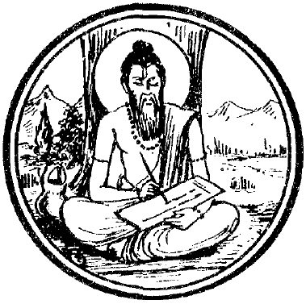
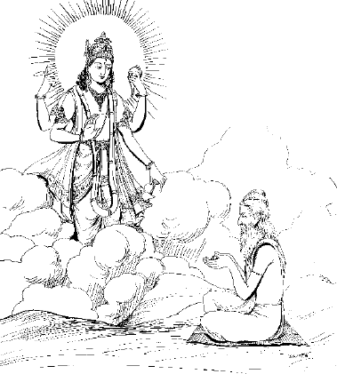
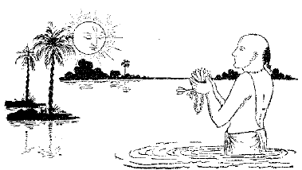
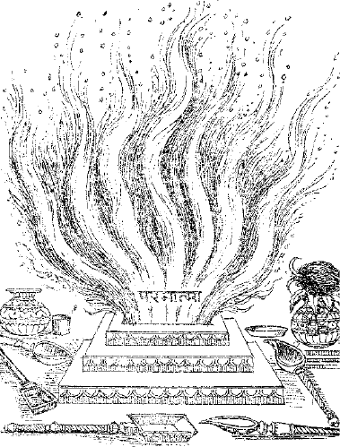
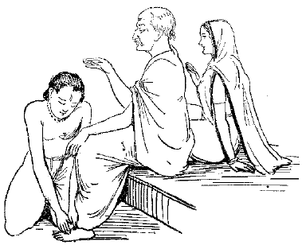
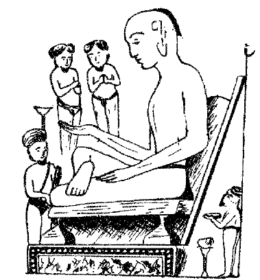
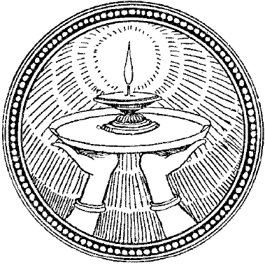

॥ श्रीहरि:॥
वैदिक सूक्त-संग्रह
त्वमेव माता च पिता त्वमेव
त्वमेव बन्धुश्च सखा त्वमेव।
त्वमेव विद्या द्रविणं त्वमेव
त्वमेव सर्वं मम देवदेव॥
निवेदन
यस्य नि:श्वसितं वेदा यो वेदेभ्योऽखिलं जगत्।
निर्ममे तमहं वन्दे विद्यातीर्थं महेश्वरम्॥
(श्रीसायणाचार्य)
वेदको ईश्वरका नि:श्वास कहा गया है, वेदसे ही समस्त जगत्का निर्माण हुआ है। इसीलिये भारतीय संस्कृतिमें वेदकी अनुपम महिमा है। जिस प्रकार ईश्वर अनादि-अपौरुषेय है, उसी प्रकार वेद भी अनादि-अपौरुषेय है। वेदको देव, पितर एवं मनुष्योंका सनातन चक्षु कहा गया है—‘देवपितृमनुष्याणां वेदश्चक्षु: सनातन:’। मनु महाराजके अनुसार तीनों कालोंमें इनका उपयोग है और सब वेदसे प्राप्त होता है—‘भूतं भव्यं भविष्यं च सर्वं वेदात् प्रसिध्यति’। भारतीय मान्यताके अनुसार वेद ब्रह्मविद्याके ग्रन्थभाग नहीं, स्वयं ब्रह्म हैं—शब्दब्रह्म हैं। वेद अनन्त हैं—‘अनन्ता वै वेदा:’। तैत्तिरीय आरण्यककी एक आख्यायिकाके अनुसार इन्द्रद्वारा बार-बार आयु पाकर भी भरद्वाजमुनि वेदका अन्त न पा सके तथा वे इसी निष्कर्षपर पहुँचे कि वेदका अन्त नहीं है। उसी अनन्त वेदराशिके कुछ अंशको लेकर भगवान् वेदव्यासजीने चार विभाग किये; जो ऋग्वेद, यजुर्वेद, सामवेद तथा अथर्ववेदके नामसे लोकमें प्रकट हैं।
प्रत्येक वेदकी अनेक शाखाएँ होनेके प्रमाण मिलते हैं। यथा—ऋग्वेदकी २१ शाखाएँ, यजुर्वेदकी १०१ शाखाएँ, सामवेदकी १००० शाखाएँ तथा अथर्ववेदकी ९ शाखाएँ अर्थात् कुल मिलाकर ११३१ शाखाएँ थीं, परंतु इनमेंसे मात्र १२ शाखाएँ ही आज उपलब्ध होती हैं, शेष लुप्त होती गयीं। इसके अतिरिक्त ब्राह्मण, आरण्यक आदि विशाल वैदिक-वाङ्मय भी उपलब्ध है, जिसके अध्ययनके बिना प्राप्त वेद-संहिताओंका आशय समझना प्राय: असम्भव है।
आज मनुष्यकी अल्प आयु, व्याकरणकी ओर विमुखता तथा वर्तमान जीवनकी व्यस्तताओंके बीच उनका अध्ययन तथा मनन करना अत्यन्त दुष्कर होता जा रहा है, अत: वेदोंमें यत्र-तत्र जो सूक्तरूपी अनेक मुक्ता-मणियाँ बिखरी पड़ी हैं, उन्हींमें-से कुछको एक सूत्रमें पिरोकर वेदप्रेमी पाठकोंके लाभार्थ प्रस्तुत किया गया है, जिसमें व्यक्तिकी अभीष्ट सिद्धिके अमोघ उपादान अन्तर्निहित हैं। निष्ठा एवं आस्थाके द्वारा व्यक्ति अपनी विविध कामनाओंकी पूर्ति इनके माध्यमसे करनेमें समर्थ है तथा जीवनमें चतुर्दिक् सफलताके लिये आवश्यक ऊर्जा, उत्साह, प्रेरणा एवं मार्गदर्शन भी इनसे प्राप्त कर सकता है।
‘सूक्त’ शब्द ‘सु’ उपसर्गपूर्वक ‘वच्’ धातुसे ‘क्त’ प्रत्यय करनेपर व्याकृत होता है। ‘सूक्त’ शब्दका अर्थ हुआ—‘अच्छी रीतिसे कहा हुआ’। वैदिक मन्त्रोंके पूर्व निश्चित विशिष्ट मन्त्रसमूह ही सूक्त कहे जाते हैं, जो वेदमन्त्रसमूह एकदैवत्य और एकार्थ-प्रतिपादक हो, उसे सूक्त कहा जाता है। ‘बृहद्देवता’ ग्रन्थमें ‘सूक्त’ शब्दका निवर्चन इस प्रकार किया गया है—‘सम्पूर्णं ऋषिवाक्यं तु सूक्तमित्यभिधीयते’—अर्थात् सम्पूर्ण ऋषिवचनोंको सूक्त कहते हैं।
‘बृहद्देवता’ (१।१६)-में चार प्रकारके सूक्तोंका वर्णन प्राप्त होता है। जैसे—(१) देवता-सूक्त, (२) ऋषि-सूक्त, (३) अर्थ-सूक्त और (४) छन्द:-सूक्त—
देवतार्षार्थछन्दस्तो वैविध्यं च प्रजायते।
ऋषिसूक्तं तु यावन्ति सूक्तान्येकस्य वै स्तुति:॥
श्रूयन्ते तानि सर्वाणि ऋषे: सूक्तं हि तस्य तत्।
यावदर्थसमाप्ति: स्यादर्थसूक्तं वदन्ति तत्॥
समानछन्दसो या: स्युस्तच्छन्द: सूक्तमुच्यते।
वैविध्यमेवं सूक्तानामिह विद्याद्यथायथम्॥
अभिप्राय यह कि किसी एक ही देवताकी स्तुतिमें जितने सूक्त पर्यवसित हों, उन्हें ‘देवता-सूक्त’ तथा एक ही ऋषिकी स्तुतिमें जितने सूक्त प्रवृत्त हों, उन्हें ‘ऋषि-सूक्त’ कहा जाता है। समस्त प्रयोजनोंकी पूर्ति जिस सूक्तसे होती हो, उसे ‘अर्थ-सूक्त’ कहते हैं और एक ही प्रकारके छन्द जिन सूक्तोंमें प्रयुक्त हों, उन्हें ‘छन्द:-सूक्त’ कहा जाता है।
सामान्यत: सूक्त दो प्रकारके माने जाते हैं—(१) क्षुद्रसूक्त और (२) महासूक्त। जिन सूक्तोंमें कम-से-कम तीन ऋचाएँ हों, उनको ‘क्षुद्रसूक्त’ कहते हैं तथा जिन सूक्तोंमें तीनसे अधिक ऋचाएँ हों, उन्हें ‘महासूक्त’ कहते हैं।
इन सूक्तोंके जप एवं पाठकी अत्यधिक महिमा बतायी गयी है। इनके जप-पाठसे सभी प्रकारके आध्यात्मिक, आधिदैविक एवं आधिभौतिक क्लेशोंसे मुक्ति मिलती है। व्यक्ति परम पवित्र हो जाता है और अन्त:करणकी शुद्धि होकर पूर्वजन्मकी स्मृतिको प्राप्त करता हुआ वह जो भी चाहता है, उसे वह मनोऽभिलषित अनायास ही प्राप्त हो जाता है—‘एतानि जप्तानि पुनन्ति जन्तूञ्जातिस्मरत्वं लभते यदीच्छेत्॥ ’ (अत्रि ६।५)।
इन सूक्तोंका जप करनेपर ये प्राणियोंको पवित्र कर देते हैं, जिससे वह व्यक्ति कुलाग्रणीके रूपमें प्रतिष्ठा प्राप्त करता है।
प्रस्तुत संकलनमें चारों वेदोंके प्राय: अधिकांश प्रख्यात सूक्तोंका सम्पूर्ण पाठ हिन्दी अनुवादसहित प्रस्तुत किया जा रहा है। इसमें सूक्तोंको चार वर्गोंमें विभाजित किया गया है—(१) पंचदेवसूक्त, (२) अन्य देवसूक्त, (३) लोककल्याणकारीसूक्त और (४) आध्यात्मिक सूक्त। देवपरक वैदिक सूक्तोंमें इन्द्र, अग्नि, रुद्र, विष्णु, उषा प्रभृति देवताओंकी अति सुन्दर तथा भावाभिव्यंजक प्रार्थनाएँ हैं। पुरुषसूक्त, रुद्रसूक्त तथा वास्तुशान्तिके लिये प्रयुक्त होनेवाले पृथ्वीसूक्तका सम्पूर्ण पाठ इसमें प्रस्तुत किया जा रहा है। लोक-कल्याणकी भावनाओंसे ओत-प्रोत सूक्तोंको पृथक् वर्गमें रखा गया है। आध्यात्मिक सूक्त दार्शनिक ज्ञानसे ओत-प्रोत हैं, जिनमें नासदीयसूक्तकी गणना विश्वके शिखर-साहित्यमें होती है। इस सूक्तमें आध्यात्मिक धरातलपर विश्व-ब्रह्माण्डकी एकताकी भावना स्पष्टरूपसे अभिव्यक्त हुई है। भारतीय संस्कृतिमें यह धारणा निश्चित है कि विश्व-ब्रह्माण्डमें एक ही सत्ता विराजमान है, जिसका नाम-रूप कुछ भी नहीं है। इस सूक्तमें इसी सत्यकी अभिव्यक्ति है। इसके अतिरिक्त प्रारम्भमें स्वस्तिवाचन तथा अन्तमें शान्त्यध्याय भी दिया गया है। उपयोगिताकी दृष्टिसे अनेक महत्त्वके सम्बद्ध विषयोंका समावेश परिशिष्ट-भागके रूपमें जोड़ दिया गया है, जिसमें चारों वेदोंकी प्रसिद्ध सूक्तियों तथा कुछ प्रसिद्ध मन्त्रोंको सानुवाद संकलित करके प्रस्तुत किया जा रहा है। समस्त वैदिक शान्तिपाठोंको भी परम्परागत क्रममें रखते हुए हिन्दी अनुवादसहित दिया गया है। हेमाद्रिके चतुर्वर्गचिन्तामणि ग्रन्थके अनुसार चारों वेदोंके ध्यान भी सानुवाद सबसे अन्तमें दिये गये हैं। आशा है इसके प्रकाशनसे एक बड़े अभावकी पूर्ति होगी तथा वैदिक साहित्यके प्रेमी पाठक इसका लाभ उठा सकेंगे।

स्वस्तिवाचन
[सभी शुभ एवं मांगलिक धार्मिक कार्योंको प्रारम्भ करनेसे पूर्व वेदके कुछ मन्त्रोंका पाठ होता है, जो स्वस्तिपाठ या स्वस्तिवाचन कहलाता है। इस स्वस्तिपाठमें ‘स्वस्ति’ शब्द आता है, इसीलिये इस सूक्तका पाठ कल्याण करनेवाला है। ऋग्वेद प्रथम मण्डलका यह ८९वाँ सूक्त शुक्लयजुर्वेद वाजसनेयी-संहिता (२५।१४—२३), काण्वसंहिता, मैत्रायणीसंहिता और ब्राह्मण तथा आरण्यक ग्रन्थोंमें भी प्राय: यथावत् रूपमें प्राप्त होता है। इस सूक्तमें १० ऋचाएँ हैं, इस सूक्तके द्रष्टा ऋषि गौतम हैं तथा देवता विश्वेदेव हैं। आचार्य यास्कने ‘विश्वेदेव’ शब्दमें ‘विश्व’ को ‘सर्व’ का पर्याय बताया है, तदनुसार विश्वेदेवसे तात्पर्य इन्द्र, अग्नि, वरुण आदि सभी देवताओंसे है। दसवीं ऋचाको अदिति-देवतापरक कहा गया है। मन्त्रद्रष्टा महर्षि गौतम विश्वेदेवोंका आवाहन करते हुए उनसे सब प्रकारकी निर्विघ्नता तथा मंगलप्राप्तिकी प्रार्थना करते हैं। सूक्तके अन्तमें शान्तिदायक दो मन्त्र पठित हैं; जो आधिदैविक, आधिभौतिक तथा आध्यात्मिक—त्रिविध शान्तियोंको प्रदान करनेवाले हैं। यहाँ प्रत्येक ऋचाको भावानुवादके साथ दिया जा रहा है—]
आ नो भद्रा: क्रतवो यन्तु विश्वतोऽदब्धासो अपरीतास उद्भिद:।
देवा नो यथा सदमिद् वृधे असन्नप्रायुवो रक्षितारो दिवे दिवे॥ १॥
सब ओरसे निर्विघ्न, स्वयं अज्ञात, अन्य यज्ञोंको प्रकट करनेवाले कल्याणकारी यज्ञ हमें प्राप्त हों। सब प्रकारसे आलस्यरहित होकर प्रतिदिन रक्षा करनेवाले देवता सदैव हमारी वृद्धिके निमित्त प्रयत्नशील हों॥ १॥
देवानां भद्रा सुमतिर्ऋजूयतां देवानाÞ रातिरभि नो निवर्तताम्।
देवानाÞ सख्यमुपसेदिमा वयं देवा न आयु: प्रतिरन्तु जीवसे॥ २॥
यजमानकी इच्छा रखनेवाले देवताओंकी कल्याणकारिणी श्रेष्ठबुद्धि सदा हमारे सम्मुख रहे, देवताओंका दान हमें प्राप्त हो, हम देवताओंकी मित्रता प्राप्त करें, देवता हमारी आयुको जीनेके निमित्त बढ़ायें॥ २॥
तान्पूर्वया निविदा हूमहे वयं भगं मित्रमदितिं दक्षमस्रिधम्।
अर्यमणं वरुणÞ सोममश्विना सरस्वती न: सुभगा मयस्करत्॥ ३॥
हम वेदरूप सनातन वाणीके द्वारा अच्युतरूप भग, मित्र, अदिति, प्रजापति, अर्यमा, वरुण, चन्द्रमा और अश्विनीकुमारोंका आह्वान करते हैं। ऐश्वर्यमयी सरस्वती महावाणी हमें सब प्रकारका सुख प्रदान करें॥ ३॥
तन्नो वातो मयोभु वातु भेषजं तन्माता पृथिवी तत्पिता द्यौ:।
तद् ग्रावाण: सोमसुतो मयोभुवस्तदश्विना शृणुतं धिष्ण्या युवम्॥ ४॥
वायुदेवता हमें सुखकारी औषधियाँ प्राप्त करायें। माता पृथ्वी और पिता स्वर्ग भी हमें सुखकारी औषधियाँ प्रदान करें। सोमका अभिषव करनेवाले सुखदाता ग्रावा उस औषधरूप अदृष्टको प्रकट करें। हे अश्विनीकुमारो! आप दोनों सबके आधार हैं, हमारी प्रार्थना सुनिये॥ ४॥
तमीशानं जगतस्तस्थुषस्पतिं धियञ्जिन्वमवसे हूमहे वयम्।
पूषा नो यथा वेदसामसद् वृधे रक्षिता पायुरदब्ध: स्वस्तये॥ ५॥
हम स्थावर-जंगमके स्वामी, बुद्धिको सन्तोष देनेवाले रुद्रदेवताका रक्षाके निमित्त आह्वान करते हैं। वैदिक ज्ञान एवं धनकी रक्षा करनेवाले, पुत्र आदिके पालक, अविनाशी पुष्टिकर्ता देवता हमारी वृद्धि और कल्याणके निमित्त हों॥ ५॥
स्वस्ति न इन्द्रो वृद्धश्रवा: स्वस्ति न: पूषा विश्ववेदा:।
स्वस्ति नस्तार्क्ष्यो अरिष्टनेमि: स्वस्ति नो बृहस्पतिर्दधातु॥ ६॥
महती कीर्तिवाले ऐश्वर्यशाली इन्द्र हमारा कल्याण करें; सर्वज्ञ, सबके पोषणकर्ता सूर्य हमारा कल्याण करें। जिनकी चक्रधाराके समान गतिको कोई रोक नहीं सकता, वे गरुड़देव हमारा कल्याण करें। वेदवाणीके स्वामी बृहस्पति हमारा कल्याण करें॥ ६॥
पृषदश्वा मरुत: पृश्निमातर: शुभं यावानो विदथेषु जग्मय:।
अग्निजिह्वा मनव: सूरचक्षसो विश्वे नो देवा अवसागमन्निह॥ ७॥
चितकबरे वर्णके घोड़ोंवाले, अदितिमातासे उत्पन्न, सबका कल्याण करनेवाले, यज्ञशालाओंमें जानेवाले, अग्निरूपी जिह्वावाले, सर्वज्ञ, सूर्यरूपनेत्रवाले मरुद्गण और विश्वेदेव-देवता हविरूप अन्नको ग्रहण करनेके लिये हमारे इस यज्ञमें आयें॥ ७॥
भद्रं कर्णेभि: शृणुयाम देवा भद्रं पश्येमाक्षभिर्यजत्रा:।
स्थिरैरङ्गैस्तुष्टुवाÞ सस्तनूभिर्व्यशेमहि देवहितं यदायु:॥ ८॥
हे यजमानके रक्षक देवताओ! हम दृढ़ अंगोंवाले शरीरसे पुत्र आदिके साथ मिलकर आपकी स्तुति करते हुए कानोंसे कल्याणकी बातें सुनें, नेत्रोंसे कल्याणमयी वस्तुओंको देखें, देवताओंकी उपासनायोग्य आयुको प्राप्त करें॥ ८॥
शतमिन्नु शरदो अन्ति देवा यत्रा नश्चक्रा जरसं तनूनाम्।
पुत्रासो यत्र पितरो भवन्ति मा नो मध्या रीरिषतायुर्गन्तो:॥ ९॥
हे देवताओ! आप सौ वर्षकी आयुपर्यन्त हमारे समीप रहें, जिस आयुमें हमारे शरीरको जरावस्था प्राप्त हो, जिस आयुमें हमारे पुत्र पिता अर्थात् पुत्रवान् बन जायँ, हमारी उस गमनशील आयुको आपलोग बीचमें खण्डित न होने दें॥ ९॥
अदितिद्यौरदितिरन्तरिक्षमदितिर्माता स पिता स पुत्र:।
विश्वे देवा अदिति: पञ्च जना अदितिर्जातमदितिर्जनित्वम्॥ १०॥
अखण्डित पराशक्ति स्वर्ग है, वही अन्तरिक्षरूप है, वही पराशक्ति माता, पिता और पुत्र भी है। समस्त देवता पराशक्तिके ही स्वरूप हैं, अन्त्यजसहित चारों वर्णोंके सभी मनुष्य पराशक्तिमय हैं, जो उत्पन्न हो चुका है और जो उत्पन्न होगा, सब पराशक्तिके ही स्वरूप हैं॥ १०॥
द्यौ: शान्तिरन्तरिक्षÞ शान्ति: पृथिवी शान्तिराप: शान्तिरोषधय: शान्ति:।
वनस्पतय: शान्तिर्विश्वे देवा: शान्तिर्ब्रह्म शान्ति: सर्वÞ
शान्ति: शान्तिरेव शान्ति: सा मा शान्तिरेधि॥ ११॥
द्युलोकरूप शान्ति, अन्तरिक्षरूप शान्ति, भूलोकरूप शान्ति, जलरूप शान्ति, ओषधिरूप शान्ति, वनस्पतिरूप शान्ति, सर्वदेवरूप शान्ति, ब्रह्मरूप शान्ति, सर्वजगत्-रूप शान्ति और संसारमें स्वभावत: जो शान्ति रहती है, वह शान्ति मुझे परमात्माकी कृपासे प्राप्त हो॥ ११॥
यतो यत: समीहसे ततो नो अभयं कुरु।
शं न: कुरु प्रजाभ्योऽभयं न: पशुभ्य:॥ १२॥
हे परमेश्वर! आप जिस रूपसे हमारे कल्याणकी चेष्टा करते हैं, उसी रूपसे हमें भयरहित कीजिये। हमारी सन्तानोंका कल्याण कीजिये और हमारे पशुओंको भी भयमुक्त कीजिये॥ १२॥
[शु० यजुर्वेद]
पंचदेवसूक्त
वैदिक गणेश-स्तवन
गणानां त्वा गणपतिÞ हवामहे प्रियाणां त्वा प्रियपतिÞ हवामहे निधीनां त्वा निधिपतिÞ हवामहे वसो मम।
आहमजानि गर्भधमा त्वमजासि गर्भधम्॥
[शु०यजु० २३।१९]
हे परमदेव गणेशजी! समस्त गणोंके अधिपति एवं प्रिय पदार्थों-प्राणियोंके पालक और समस्त सुखनिधियोंके निधिपति! आपका हम आवाहन करते हैं। आप सृष्टिको उत्पन्न करनेवाले हैं, हिरण्यगर्भको धारण करनेवाले अर्थात् संसारको अपने-आपमें धारण करनेवाली प्रकृतिके भी स्वामी हैं, आपको हम प्राप्त हों।
नि षु सीद गणपते गणेषु त्वामाहुर्विप्रतमं कवीनाम्।
न ऋते त्वत्क्रियते किं चनारे महामर्कं मघवञ्चित्रमर्च॥
[ऋक्० १०।११२।९]
हे गणपते! आप स्तुति करनेवाले हमलोगोंके मध्यमें भली प्रकार स्थित होइये। आपको क्रान्तदर्शी कवियोंमें अतिशय बुद्धिमान्—सर्वज्ञ कहा जाता है। आपके बिना कोई भी शुभाशुभ कार्य आरम्भ नहीं किया जाता। (इसलिये) हे भगवन् (मघवन्)! ऋद्धि-सिद्धिके अधिष्ठाता देव! हमारी इस पूजनीय प्रार्थनाको स्वीकार कीजिये।
गणानां त्वा गणपतिं हवामहे कविं कवीनामुपमश्रवस्तमम्।
ज्येष्ठराजं ब्रह्मणां ब्रह्मणस्पत आ न: शृण्वन्नूतिभि: सीद सादनम्॥
[ऋक्० २।२३।१]
हे अपने गणोंमें गणपति (देव), क्रान्तदर्शियों (कवियों)-में श्रेष्ठ कवि, शिवा-शिवके प्रिय ज्येष्ठ पुत्र, अतिशय भोग और सुख आदिके दाता! हम आपका आवाहन करते हैं। हमारी स्तुतियोंको सुनते हुए पालनकर्ताके रूपमें आप इस सदनमें आसीन हों।
नमो गणेभ्यो गणपतिभ्यश्च वो नमो नमोव्रातेभ्यो व्रातपतिभ्यश्च वो नमो नमोगृत्सेभ्यो गृत्सपतिभ्यश्च वो नमो नमोविरूपेभ्यो विश्वरूपेभ्यश्च वो नम:॥
[शुक्लयजु० १६।२५]
देवानुचर गण-विशेषोंको, विश्वनाथ महाकालेश्वर आदिकी तरह पीठभेदसे विभिन्न गणपतियोंको, संघोंको, संघपतियोंको, बुद्धिशालियोंको, बुद्धिशालियोंके परिपालन करनेवाले उनके स्वामियोंको, दिगम्बर-परमहंस-जटिलादि चतुर्थाश्रमियोंको तथा सकलात्मदर्शियोंको नमस्कार है।
ॐ तत्कराटाय विद्महे हस्तिमुखाय धीमहि।
तन्नो दन्ती प्रचोदयात्॥
[कृ० यजुर्वेदीय मैत्रायणी० २।९।१।६]
उन कराट (सूँड़को घुमानेवाले) भगवान् गणपतिको हम जानते हैं, गजवदनका हम ध्यान करते हैं, वे दन्ती सन्मार्गपर चलनेके लिये हमें प्रेरित करें।
नमो व्रातपतये नमो गणपतये नम: प्रमथपतये नमस्तेऽस्तु लम्बोदरायैकदन्ताय विघ्ननाशिने शिवसुताय श्रीवरदमूर्तये नम:॥
[कृ० यजुर्वेदीय गणपत्यथर्वशीर्ष १०]
व्रातपतिको नमस्कार, गणपतिको नमस्कार, प्रमथपतिको नमस्कार; लम्बोदर, एकदन्त, विघ्ननाशक, शिवतनय श्रीवरदमूर्तिको नमस्कार है।
ब्रह्मणस्पतिसूक्त
[वैदिक देवता विघ्नेश गणपति ‘ब्रह्मणस्पति’ भी कहलाते हैं। ‘ब्रह्मणस्पति’ के रूपमें वे ही सर्वज्ञाननिधि तथा समस्त वाङ्मयके अधिष्ठाता हैं। आचार्य सायणसे भी प्राचीन वेदभाष्यकार श्रीस्कन्दस्वामी (वि०सं० ६८७) अपने ऋग्वेदभाष्यके प्रारम्भमें लिखते हैं—विघ्नेश विधिमार्तण्डचन्द्रेन्द्रोपेन्द्रवन्दित।नमो गणपते तुभ्यं ब्रह्मणां ब्रह्मणस्पते॥ अर्थात् ब्रह्मा, सूर्य, चन्द्र, इन्द्र तथा विष्णुके द्वारा वन्दित हे विघ्नेश गणपति! मन्त्रोंके स्वामी ब्रह्मणस्पति! आपको नमस्कार है।
मुद्गलपुराण (८।४९।१७)-में भी स्पष्ट लिखा है—सिद्धिबुद्धिपतिं वन्दे ब्रह्मणस्पतिसंज्ञितम्। माङ्गल्येशं सर्वपूज्यं विघ्नानां नायकं परम्॥ अर्थात् समस्त मंगलोंके स्वामी, सभीके परम पूज्य, सकल विघ्नोंके परम नायक, ‘ब्रह्मणस्पति’ नामसे प्रसिद्ध सिद्धि-बुद्धिके पति (गणपति)-की मैं वन्दना करता हूँ। ब्रह्मणस्पति के अनेक सूक्त प्राप्त होते हैं। ऋग्वेदके प्रथम मण्डलका ४०वाँ सूक्त ‘ब्रह्मणस्पतिसूक्त’ कहलाता है, इसके ऋषि ‘कण्व घोर’ हैं। गणपतिके इस सूक्तको यहाँ सानुवाद प्रस्तुत किया जा रहा है—]
उत्तिष्ठ ब्रह्मणस्पते देवयन्तस्त्वेमहे।
उप प्र यन्तु मरुत सुदानव इन्द्र प्राशूर्भवा सचा॥ १॥
हे ज्ञानके स्वामिन्! उठिये, देवत्वकी इच्छा करनेवाले हम तुम्हारी प्रार्थना करते हैं। उत्तम दानी मरुत् वीर साथ-साथ रहकर यहाँ आ जायँ। हे इन्द्र! सबके साथ रहकर इस सोमरसका पान कीजिये॥ १॥
त्वामिद्धि सहसस्पुत्र मर्त्य उपब्रूते धने हिते।
सुवीर्यं मरुत आ स्वश्व्यं दधीत यो व आचके॥ २॥
हे बलके लिये उत्पन्न होनेवाले वीर! मनुष्य युद्ध छिड़ जानेपर तुम्हें ही सहायतार्थ बुलाता है। हे मरुतो! जो तुम्हारे गुण गाता है, वह उत्तम घोड़ोंसे युक्त और उत्तम वीरतावाला धन पाता है॥ २॥
प्रैतु ब्रह्मणस्पति: प्र देव्येतु सूनृता।
अच्छा वीरं नर्यं पङ्क्तिराधसं देवा यज्ञं नयन्तु न:॥ ३॥
ज्ञानी ब्रह्मणस्पति हमारे पास आ जायँ, सत्यरूपिणी देवी भी आयें। सब देव मनुष्योंके लिये हितकारी, पंक्तिमें सम्मानयोग्य, उत्तम यज्ञ करनेवाले वीरको हमारे पास ले आयें॥ ३॥
यो वाघते ददाति सूनरं वसु स धत्ते अक्षिति श्रव:।
तस्मा इळां सुवीरामा यजामहे सुप्रतूर्तिमनेहसम्॥ ४॥
जो यज्ञकर्ताको उत्तम धन देता है, वह अक्षय यश प्राप्त करता है। उसके हितार्थ हम उत्तम वीरोंसे युक्त, शत्रुका हनन करनेवाली, अपराजित मातृभूमिकी प्रार्थना करते हैं॥ ४॥
प्र नूनं ब्रह्मणस्पतिर्मन्त्रं वदत्युक्थ्यम्।
यस्मिन्निन्द्रो वरुणो मित्रो अर्यमा देवा ओकांसि चक्रिरे॥ ५॥
ब्रह्मणस्पति उस पवित्र मन्त्रका अवश्य ही उच्चारण करता है, जिसमें इन्द्र, वरुण, मित्र, अर्यमा आदि देवोंने अपने घर बनाये हैं॥ ५॥
तमिद् वोचेमा विदथेषु शंभुवं मन्त्रं देवा अनेहसम्।
इमां च वाचं प्रतिहर्यथा नरो विश्वेद् वामा वो अश्नवत्॥ ६॥
हे देवो! उस सुखदायी अविनाशी मन्त्रको हम यज्ञमें बोलते हैं। हे नेतालोगो! इस मन्त्ररूप वाणीकी यदि प्रशंसा करोगे तो सभी सुख तुम्हें मिलेंगे॥ ६॥
को देवयन्तमश्नवज् जनं को वृक्तबर्हिषम्।
प्रप्र दाश्वान् पस्त्याभिरस्थिताऽन्तर्वावत् क्षयं दधे॥ ७॥
देवत्वकी इच्छा करनेवाले मनुष्यके पास ब्रह्मणस्पतिको छोड़कर कौन भला दूसरा आयेगा? आसन फैलानेवाले उपासकके पास दूसरा कौन आयेगा? दाता अपनी प्रजाके साथ प्रगति करता है, सन्तानोंवाले घरका आश्रय करते हैं॥ ७॥
उप क्षत्रं पृञ्चीत हन्ति राजभिर्भये चित् सुक्षितिं दधे।
नास्य वर्ता न तरुता महाधने नार्भे अस्ति वज्रिण:॥ ८॥
ब्रह्मणस्पति क्षात्रबलका संचय करता है, राजाओंकी सहायतासे यह शत्रुओंको मारता है, महाभयके उपस्थित होनेपर भी वह उत्तम धैर्यको धारण करता है। इस वज्रधारीके साथ होनेवाले बड़े युद्धमें इसका निवारण करनेवाला और पराजित करनेवाला कोई नहीं है और छोटे युद्धमें भी कोई नहीं है॥ ८॥
[ऋक् १।४०]
रुद्रसूक्त [नीलसूक्त]
[भूतभावन भगवान् सदाशिवकी प्रसन्नताके लिये रुद्रसूक्तके पाठका विशेष महत्त्व बताया गया है। पूजामें भगवान् शंकरको सबसे प्रिय जलधारा है। इसलिये भगवान् शिवके पूजनमें रुद्राभिषेककी परम्परा है और अभिषेकमें इस ‘रुद्रसूक्त’की ही प्रमुखता है। रुद्राभिषेकके अन्तर्गत रुद्राष्टाध्यायीके पाठमें ग्यारह बार इस सूक्तकी आवृत्ति करनेपर पूर्ण रुद्राभिषेक माना जाता है। फलकी दृष्टिसे इसका अत्यधिक महत्त्व है। यह ‘रुद्रसूक्त’ आध्यात्मिक, आधिदैविक एवं आधिभौतिक—त्रिविध तापोंसे मुक्त कराने तथा अमृतत्वकी ओर अग्रसर करनेका अन्यतम उपाय है। यहाँ इस सूक्तको भावार्थसहित प्रस्तुत किया जा रहा है—]
ॐ नमस्ते रुद्र मन्यव उतो त इषवे नम:।
बाहुभ्यामुत ते नम:॥ १॥
दु:ख दूर करनेवाले (अथवा ज्ञान प्रदान करनेवाले) हे रुद्र! आपके क्रोधके लिये नमस्कार है, आपके बाणोंके लिये नमस्कार है और आपकी दोनों भुजाओंके लिये नमस्कार है॥ १॥
या ते रुद्र शिवा तनूरघोराऽपापकाशिनी।
तया नस्तन्वा शन्तमया गिरिशन्ताभि चाकशीहि॥ २॥
हे गिरिशन्त (कैलासपर रहकर संसारका कल्याण करनेवाले अथवा वाणीमें स्थित होकर लोगोंको सुख देनेवाले या मेघमें स्थित होकर वृष्टिके द्वारा लोगोंको सुख देनेवाले)! हे रुद्र! आपका जो मंगलदायक, सौम्य, केवल पुण्यप्रकाशक शरीर है, उस अनन्त सुखकारक शरीरसे हमारी ओर देखिये अर्थात् हमारी रक्षा कीजिये॥ २॥
यामिषुं गिरिशन्त हस्ते बिभर्ष्यस्तवे।
शिवां गिरित्र तां कुरु मा हिÞसी: पुरुषं जगत्॥ ३॥
कैलासपर रहकर संसारका कल्याण करनेवाले तथा मेघोंमें स्थित होकर वृष्टिके द्वारा जगत्की रक्षा करनेवाले हे सर्वज्ञ रुद्र! शत्रुओंका नाश करनेके लिये जिस बाणको आप अपने हाथमें धारण करते हैं, वह कल्याणकारक हो और आप मेरे पुत्र-पौत्र तथा गो, अश्व आदिका नाश मत कीजिये॥ ३॥
शिवेन वचसा त्वा गिरिशाच्छा वदामसि।
यथा न: सर्वमिज्जगदयक्ष्मÞ सुमना असत्॥ ४॥
हे कैलासपर शयन करनेवाले! आपको प्राप्त करनेके लिये हम मंगलमय वचनसे आपकी स्तुति करते हैं। जिस प्रकार हमारा समस्त संसार तापरहित, निरोग और निर्मल मनवाला बने, वैसा आप करें॥ ४॥
अध्यवोचदधिवक्ता प्रथमो दैव्यो भिषक्।
अहीँश्च सर्वाञ्जम्भयन्त्सर्वाश्च यातुधान्योऽधराची: परा सुव॥ ५॥
अत्यधिक वन्दनशील, समस्त देवताओंमें मुख्य, देवगणोंके हितकारी तथा रोगोंका नाश करनेवाले रुद्र मुझसे सबसे अधिक बोलें, जिससे मैं सर्वश्रेष्ठ हो जाऊँ। हे रुद्र! समस्त सर्प, व्याघ्र आदि हिंसकोंका नाश करते हुए आप अधोगमन करानेवाली राक्षसियोंको हमसे दूर कर दें॥ ५॥
असौ यस्ताम्रो अरुण उत बभ्रु: सुमङ्गल:।
ये चैनÞ रुद्रा अभितो दिक्षु श्रिता: सहस्रशोऽवैषाÞ हेड ईमहे॥ ६॥
उदयके समय ताम्रवर्ण (अत्यन्त रक्त), अस्तकालमें अरुणवर्ण(रक्त), अन्य समयमें वभ्रु (पिंगल)-वर्ण तथा शुभ मंगलोंवाला जो यह सूर्यरूप है, वह रुद्र ही है। किरणरूपमें ये जो हजारों रुद्र इन आदित्यके सभी ओर स्थित हैं, इनके क्रोधका हम अपनी भक्तिमय उपासनासे निवारण करते हैं॥ ६॥
असौ योऽवसर्पति नीलग्रीवो विलोहित:।
उतैनं गोपा अदृश्रन्नदृश्रन्नुदहार्य: स दृष्टो मृडयाति न:॥ ७॥
जिन्हें अज्ञानी गोप तथा जल भरनेवाली दासियाँ भी प्रत्यक्ष देख सकती हैं, विष धारण करनेसे जिनका कण्ठ नीलवर्णका हो गया है, तथापि विशेषत: रक्तवर्ण होकर जो सर्वदा उदय और अस्तको प्राप्त होकर गमन करते हैं, वे रविमण्डलस्थित रुद्र हमें सुखी कर दें॥ ७॥
नमोऽस्तु नीलग्रीवाय सहस्राक्षाय मीढुषे।
अथो ये अस्य सत्वानोऽहं तेभ्योऽकरं नम:॥ ८॥
नीलकण्ठ, सहस्रनेत्रवाले, इन्द्रस्वरूप और वृष्टि करनेवाले रुद्रके लिये मेरा नमस्कार है। उस रुद्रके जो अनुचर हैं, उनके लिये भी मैं नमस्कार करता हूँ॥ ८॥
प्रमुञ्च धन्वनस्त्वमुभयोरार्त्न्योर्ज्याम्।
याश्च ते हस्त इषव: परा ता भगवो वप॥ ९॥
हे भगवन्! आप धनुषकी दोनों कोटियोंके मध्य स्थितप्रत्यंचाका त्याग कर दें और अपने हाथमें स्थित बाणोंको भी दूर फेंक दें अर्थात् हमपर अनुग्रह करें॥ ९॥
विज्यं धनु: कपर्दिनो विशल्यो बाणवाँ२ उत।
अनेशन्नस्य या इषव आभुरस्य निषङ्गधि:॥ १०॥
जटाजूट धारण करनेवाले रुद्रका धनुष प्रत्यंचारहित रहे, तूणीरमें स्थित बाणोंके नोकदार अग्रभाग नष्ट हो जायँ, इन रुद्रके जो बाण हैं, वे भी नष्ट हो जायँ तथा इनके खड्ग रखनेका कोश भी खड्गरहित हो जाय अर्थात् वे रुद्र हमारे प्रति सर्वथा करुणामय हो जायँ॥ १०॥
या ते हेतिर्मीढुष्टम हस्ते बभूव ते धनु:।
तयाऽस्मान्विश्वतस्त्वमयक्ष्मया परि भुज॥ ११॥
अत्यधिक वृष्टि करनेवाले हे रुद्र! आपके हाथमें जो धनुषरूप आयुध है, उस सुदृढ़ तथा अनुपद्रवकारी धनुषसे हमारी सब ओरसे रक्षा कीजिये॥ ११॥
परि ते धन्वनो हेतिरस्मान्वृणक्तु विश्वत:।
अथो य इषुधिस्तवारे अस्मन्नि धेहि तम्॥ १२॥
हे रुद्र! आपका धनुषरूप आयुध सब ओरसे हमारा त्याग करे अर्थात् हमें न मारे और आपका जो बाणोंसे भरा तरकश है, उसे हमसे दूर रखिये॥ १२॥
अवतत्य धनुष्ट्वÞ सहस्राक्ष शतेषुधे।
निशीर्य शल्यानां मुखा शिवो न: सुमना भव॥ १३॥
सौ तूणीर और सहस्र नेत्र धारण करनेवाले हे रुद्र! धनुषकी प्रत्यंचा दूर करके और बाणोंके अग्र भागोंको तोड़कर आप हमारे प्रति शान्त और प्रसन्न मनवाले हो जायँ॥ १३॥
नमस्त आयुधायानातताय धृष्णवे।
उभाभ्यामुत ते नमो बाहुभ्यां तव धन्वने॥ १४॥
हे रुद्र! शत्रुओंको मारनेमें प्रगल्भ और धनुषपर न चढ़ाये गये आपके बाणके लिये हमारा प्रणाम है। आपकी दोनों बाहुओं और धनुषके लिये भी हमारा प्रणाम है॥ १४॥
मा नो महान्तमुत मा नो
अर्भकं मा न उक्षन्तमुत मा न उक्षितम्।
मा नो वधी: पितरं मोत मातरं
मा न: प्रियास्तन्वो रुद्र रीरिष:॥ १५॥
हे रुद्र! हमारे गुरु, पितृव्य आदि वृद्धजनोंको मत मारिये, हमारे बालककी हिंसा मत कीजिये, हमारे तरुणको मत मारिये, हमारे गर्भस्थ शिशुका नाश मत कीजिये, हमारे माता-पिताको मत मारिये तथा हमारे प्रिय पुत्र-पौत्र आदिकी हिंसा मत कीजिये॥ १५॥
मा नस्तोके तनये मा न आयुषि
मा नो गोषु मा नो अश्वेषु रीरिष:।
मा नो वीरान् रुद्र भामिनो वधी-
र्हविष्मन्त: सदमित् त्वा हवामहे॥ १६॥
हे रुद्र! हमारे पुत्र-पौत्र आदिका विनाश मत कीजिये, हमारी आयुको नष्ट मत कीजिये, हमारी गौओंको मत मारिये, हमारे घोड़ोंका नाश मत कीजिये, हमारे क्रोधयुक्त वीरोंकी हिंसा मत कीजिये। हविसे युक्त होकर हम सब सदा आपका आवाहन करते हैं॥ १६॥
नमो हिरण्यबाहवे सेनान्ये दिशां च पतये नमो
नमो वृक्षेभ्यो हरिकेशेभ्य: पशूनां पतये नमो नम:
शष्पिञ्जराय त्विषीमते पथीनां पतये नमो नमो
हरिकेशायोपवीतिने पुष्टानां पतये नम:॥ १७॥
भुजाओंमें सुवर्ण धारण करनेवाले सेनानायक रुद्रके लिये नमस्कार है, दिशाओंके रक्षक रुद्रके लिये नमस्कार है, पूर्णरूप हरे केशोंवालेवृक्षरूप रुद्रोंके लिये नमस्कार है, जीवोंका पालन करनेवाले रुद्रके लिये नमस्कार है, कान्तिमान् बालतृणके समान पीत वर्णवाले रुद्रके लिये नमस्कार है, मार्गोंके पालक रुद्रके लिये नमस्कार है, नीलवर्ण-केशसे युक्त तथा मंगलके लिये यज्ञोपवीत धारण करनेवाले रुद्रके लिये नमस्कार है, गुणोंसे परिपूर्ण मनुष्योंके स्वामी रुद्रके लिये नमस्कार है॥ १७॥
नमो बभ्लुशाय व्याधिने ऽन्नानां पतये नमो
नमो भवस्य हेत्यै जगतां पतये नमो
नमो रुद्रायाततायिने क्षेत्राणां पतये नमो
नम: सूतायाहन्त्यैै वनानां पतये नम:॥ १८॥
कपिल (वर्णवाले अथवा वृषभपर आरूढ़ होनेवाले) तथा शत्रुओंको बेधनेवाले रुद्रके लिये नमस्कार है, अन्नोंके पालक रुद्रके लिये नमस्कार है, संसारके आयुधरूप (अथवा जगन्निवर्तक) रुद्रके लिये नमस्कार है, जगत्का पालन करनेवाले रुद्रके लिये नमस्कार है, उद्यत आयुधवाले रुद्रके लिये नमस्कार है, देहोंका पालन करनेवाले रुद्रके लिये नमस्कार है, न मारनेवाले सारथिरूप रुद्रके लिये नमस्कार है तथा वनोंके रक्षक रुद्रके लिये नमस्कार है॥ १८॥
नमो रोहिताय स्थपतये वृक्षाणां पतये नमो
नमो भुवन्तये वारिवस्कृतायौषधीनां पतये नमो
नमो मन्त्रिणे वाणिजाय कक्षाणां पतये नमो
नम उच्चैर्घोषायाक्रन्दयते पत्तीनां पतये नम:॥ १९॥
लोहितवर्णवाले तथा गृह आदिके निर्माता विश्वकर्मारूप रुद्रके लिये नमस्कार है, वृक्षोंके पालक रुद्रके लिये नमस्कार है, भुवनका विस्तार करनेवाले तथा समृद्धिकारक रुद्रके लिये नमस्कार है, ओषधियोंके रक्षक रुद्रके लिये नमस्कार है, आलोचनकुशल व्यापारकर्तारूप रुद्रके लिये नमस्कार है, वनके लता-वृक्ष आदिके पालक रुद्रके लिये नमस्कार है, युद्धमें उग्र शब्द करनेवाले तथा शत्रुओंको रुलानेवाले रुद्रके लिये नमस्कार है, [हाथी, घोड़ा, रथ, पैदल आदि] सेनाओंके पालक रुद्रके लिये नमस्कार है॥ १९॥
नम: कृत्स्नायतया धावते सत्वनां पतये नमो नम:
सहमानाय निव्याधिन आव्याधिनीनां पतये नमो
नमो निषङ्गिणे ककुभाय स्तेनानां पतये नमो
नमो निचेरवे परिचरायारण्यानां पतये नम:॥ २०॥
कर्णपर्यन्त प्रत्यंचा खींचकर युद्धमें शीघ्रतापूर्वक दौड़नेवाले (अथवा सम्पूर्ण लाभकी प्राप्ति करानेवाले) रुद्रके लिये नमस्कार है, शरणागत प्राणियोंके पालक रुद्रके लिये नमस्कार है, शत्रुओंका तिरस्कार करनेवाले तथा शत्रुओंको बेधनेवाले रुद्रके लिये नमस्कार है, सब प्रकारसे प्रहार करनेवाली शूर सेनाओंके रक्षक रुद्रके लिये नमस्कार है, खड्ग चलानेवाले महान् रुद्रके लिये नमस्कार है, गुप्त चोरोंके रक्षक रुद्रके लिये नमस्कार है, अपहारकी बुद्धिसे निरन्तर गतिशील तथा हरणकी इच्छासे आपण (बाजार)-वाटिका आदिमें विचरण करनेवाले रुद्रके लिये नमस्कार है तथा वनोंके पालक रुद्रके लिये नमस्कार है॥ २०॥
नमो वञ्चते परिवञ्चते स्तायूनां पतये नमो नमो
निषङ्गिण इषुधिमते तस्कराणां पतये नमो नम:
सृकायिभ्यो जिघाÞसद्भॺो मुष्णतां पतये नमो
नमोऽसिमद्भॺो नक्तञ्चरद्भॺो विकृन्तानां पतये नम:॥ २१॥
वंचना करनेवाले तथा अपने स्वामीको विश्वास दिलाकर धन हरण करके उसे ठगनेवाले रुद्ररूपके लिये नमस्कार है, गुप्त धन चुरानेवालोंके पालक रुद्रके लिये नमस्कार है, बाण तथा तूणीर धारण करनेवाले रुद्रके लिये नमस्कार है, प्रकटरूपमें चोरी करनेवालोंके पालक रुद्रके लिये नमस्कार है, वज्र धारण करनेवाले तथा शत्रुओंको मारनेकी इच्छावाले रुद्रके लिये नमस्कार है, खेतोंमें धान्य आदि चुरानेवालोंके रक्षक रुद्रके लिये नमस्कार है, प्राणियोंपर घात करनेके लिये खड्ग धारणकर रात्रिमें विचरण करनेवाले रुद्रोंके लिये नमस्कार है तथा दूसरोंको काटकर उनका धन हरण करनेवालोंके पालक रुद्रके लिये नमस्कार है॥ २१॥
नम उष्णीषिणे गिरिचराय कुलुञ्चानां पतये
नमो नम इषुमद्भॺो धन्वायिभ्यश्च वो नमो
नम आतन्वानेभ्य: प्रतिदधानेभ्यश्च वो नमो
नम आयच्छद्भॺो ऽस्यद्भॺश्च वो नम:॥ २२॥
सिरपर पगड़ी धारण करके पर्वतादि दुर्गम स्थानोंमें विचरनेवाले रुद्रके लिये नमस्कार है, छलपूर्वक दूसरोंके क्षेत्र, गृह आदिका हरण करनेवालोंके पालक रुद्ररूपके लिये नमस्कार है, लोगोंको भयभीत करनेके लिये बाण धारण करनेवाले रुद्रोंके लिये नमस्कार है, धनुष धारण करनेवाले आप रुद्रोंके लिये नमस्कार है, धनुषपर प्रत्यंचा चढ़ानेवाले रुद्रोंके लिये नमस्कार है, धनुषपर बाणका संधान करनेवाले आप रुद्रोंके लिये नमस्कार है, धनुषको भलीभाँति खींचनेवाले रुद्रोंके लिये नमस्कार है, बाणोंको सम्यक् छोड़नेवाले आप रुद्रोंके लिये नमस्कार है॥ २२॥
नमो विसृजद्भॺो विध्यद्भॺश्च वो नमो
नम: स्वपद्भॺो जाग्रद्भॺश्च वो नमो
नम: शयानेभ्य आसीनेभ्यश्च वो नमो नम-
स्तिष्ठद्भॺो धावद्भॺश्च वो नम:॥ २३॥
पापियोंके दमनके लिये बाण चलानेवाले रुद्रोंके लिये नमस्कार है, शत्रुओंको बेधनेवाले आप रुद्रोंके लिये नमस्कार है, स्वप्नावस्थाका अनुभव करनेवाले रुद्रोंके लिये नमस्कार है, जाग्रत् अवस्थावाले आप रुद्रोंके लिये नमस्कार है, सुषुप्ति अवस्थावाले रुद्रोंके लिये नमस्कार है, बैठे हुए आप रुद्रोंके लिये नमस्कार है, स्थित रहनेवाले रुद्रोंके लिये नमस्कार है, वेगवान् गतिवाले आप रुद्रोंके लिये नमस्कार है॥ २३॥
नम: सभाभ्य: सभापतिभ्यश्च वो नमो
नमोऽश्वेभ्यो ऽश्वपतिभ्यश्च वो नमो नम
आव्याधिनीभ्यो विविध्यन्तीभ्यश्च वो नमो
नम उगणाभ्यस्तृÞहतीभ्यश्च वो नम:॥ २४॥
सभारूप रुद्रोंके लिये नमस्कार है, सभापतिरूप आप रुद्रोंके लिये नमस्कार है, अश्वरूप रुद्रोंके लिये नमस्कार है, अश्वपतिरूप आप रुद्रोंके लिये नमस्कार है, सब प्रकारसे बेधन करनेवाले देवसेनारूप रुद्रोंके लिये नमस्कार है, विशेषरूपसे बेधन करनेवाले देवसेनारूप आप रुद्रोंके लिये नमस्कार है, उत्कृष्ट भृत्य-समूहोंवाली ब्राह्मी आदि मातास्वरूप रुद्रोंके लिये नमस्कार है और मारनेमें समर्थ दुर्गा आदि मातास्वरूप आप रुद्रोंके लिये नमस्कार है॥ २४॥
नमो गणेभ्यो गणपतिभ्यश्च वो नमो नमो
व्रातेभ्यो व्रातपतिभ्यश्च वो नमो नमो
गृत्सेभ्यो गृत्सपतिभ्यश्च वो नमो नमो
विरूपेभ्यो विश्वरूपेभ्यश्च वो नम:॥ २५॥
देवानुचर भूतगणरूप रुद्रोंके लिये नमस्कार है, भूतगणोंके अधिपतिरूप आप रुद्रोंके लिये नमस्कार है, भिन्न-भिन्न जातिसमूहरूप रुद्रोंके लिये नमस्कार है, विभिन्न जातिसमूहोंके अधिपतिरूप आप रुद्रोंके लिये नमस्कार है, मेधावी ब्रह्मजिज्ञासुरूप रुद्रोंके लिये नमस्कार है, मेधावी ब्रह्मजिज्ञासुओंके अधिपतिरूप आप रुद्रोंके लिये नमस्कार है, निकृष्ट रूपवाले रुद्रोंके लिये नमस्कार है, नानाविध रूपोंवाले विश्वरूप आप रुद्रोंके लिये नमस्कार है॥ २५॥
नम: सेनाभ्य: सेनानिभ्यश्च वो नमो
नमो रथिभ्यो अरथेभ्यश्च वो नमो नम:
क्षतृभ्य: संग्रहीतृभ्यश्च वो नमो नमो
महद्भॺो अर्भकेभ्यश्च वो नम:॥ २६॥
सेनारूप रुद्रोंके लिये नमस्कार है, सेनापतिरूप आप रुद्रोंके लिये नमस्कार है, रथीरूप रुद्रोंके लिये नमस्कार है, रथविहीन आप रुद्रोंके लिये नमस्कार है, रथोंके अधिष्ठातारूप रुद्रोंके लिये नमस्कार है, सारथिरूप आप रुद्रोंके लिये नमस्कार है, जाति तथा विद्या आदिसे उत्कृष्ट प्राणिरूप रुद्रोंके लिये नमस्कार है, प्रमाण आदिसे अल्परूप रुद्रोंके लिये नमस्कार है॥ २६॥
नमस्तक्षभ्यो रथकारेभ्यश्च वो नमो
नम: कुलालेभ्य: कर्मारेभ्यश्च वो नमो
नमो निषादेभ्य: पुञ्जिष्ठेभ्यश्च वो नमो नम:
श्वनिभ्यो मृगयुभ्यश्च वो नम:॥ २७॥
शिल्पकाररूप रुद्रोंके लिये नमस्कार है, रथनिर्मातारूप आप रुद्रोंके लिये नमस्कार है, कुम्भकाररूप रुद्रोंके लिये नमस्कार है, लौहकाररूप आप रुद्रोंके लिये नमस्कार है, वन-पर्वतादिमें विचरनेवाले निषादरूप रुद्रोंके लिये नमस्कार है, पक्षियोंको मारनेवाले पुल्कसादिरूप आप रुद्रोंके लिये नमस्कार है, श्वानोंके गलेमें बँधी रस्सी धारण करनेवाले रुद्ररूपोंके लिये नमस्कार है और मृगोंकी कामना करनेवाले व्याधरूप आप रुद्रोंके लिये नमस्कार है॥ २७॥
नम: श्वभ्य: श्वपतिभ्यश्च वो नमो
नमो भवाय च रुद्राय च नम:
शर्वाय च पशुपतये च नमो नील-
ग्रीवाय च शितिकण्ठाय च॥ २८॥
श्वानरूप रुद्रोंके लिये नमस्कार है, श्वानोंके स्वामीरूप आप रुद्रोंके लिये नमस्कार है, प्राणियोंके उत्पत्तिकर्ता रुद्रके लिये नमस्कार है, दु:खोंके विनाशक रुद्रके लिये नमस्कार है, पापोंका नाश करनेवाले रुद्रके लिये नमस्कार है, पशुओंके रक्षक रुद्रके लिये नमस्कार है, हलाहल-पानके फलस्वरूप नीलवर्णके कण्ठवाले रुद्रके लिये नमस्कार है और श्वेत कण्ठवाले रुद्रके लिये नमस्कार है॥ २८॥
नम: कपर्दिने च व्युप्तकेशाय च
नम: सहस्राक्षाय च शतधन्वने च
नमो गिरिशयाय च शिपिविष्टाय च
नमो मीढुष्टमाय चेषुमते च॥ २९॥
जटाजूट धारण करनेवाले रुद्रके लिये नमस्कार है, मुण्डित केशवाले रुद्रके लिये नमस्कार है, हजारों नेत्रवाले इन्द्ररूप रुद्रके लिये नमस्कार है, सैकड़ों धनुष धारण करनेवाले रुद्रके लिये नमस्कार है, कैलासपर्वतपर शयन करनेवाले रुद्रके लिये नमस्कार है, सभी प्राणियोंके अन्तर्यामी विष्णुरूप रुद्रके लिये नमस्कार है, अत्यधिक सेचन करनेवाले मेघरूप रुद्रके लिये नमस्कार है और बाण धारण करनेवाले रुद्रके लिये नमस्कार है॥ २९॥
नमो ह्रस्वाय च वामनाय च
नमो बृहते च वर्षीयसे च
नमो वृद्धाय च सवृधे च
नमोऽग्न्याय च प्रथमाय च॥ ३०॥
अल्प देहवाले रुद्रके लिये नमस्कार है, संकुचित अंगोंवाले वामनरूप रुद्रके लिये नमस्कार है, बृहत्काय रुद्रके लिये नमस्कार है, अत्यन्त वृद्धावस्थावाले रुद्रके लिये नमस्कार है, अधिक आयुवाले रुद्रके लिये नमस्कार है, विद्याविनयादि गुणोंसे सम्पन्न विद्वानोंके साथीरूप रुद्रके लिये नमस्कार है, जगत्के आदिभूत रुद्रके लिये नमस्कार है और सर्वत्र मुख्यस्वरूप रुद्रके लिये नमस्कार है॥ ३०॥
नम आशवे चाजिराय च नम:
शीघ्रॺाय च शीभ्याय च
नम ऊर्म्याय चावस्वन्याय च नमो
नादेयाय च द्वीप्याय च॥ ३१॥
जगद्व्यापी रुद्रके लिये नमस्कार है, गतिशील रुद्रके लिये नमस्कार है, वेगवाली वस्तुओंमें विद्यमान रुद्रके लिये नमस्कार है, जलप्रवाहमें विद्यमान आत्मश्लाघी रुद्रके लिये नमस्कार है, जलतरंगोंमें व्याप्त रुद्रके लिये नमस्कार है, स्थिर जलरूप रुद्रके लिये नमस्कार है, नदियोंमें व्याप्त रुद्रके लिये नमस्कार है और द्वीपोंमें व्याप्त रुद्रके लिये नमस्कार है॥ ३१॥
नमो ज्येष्ठाय च कनिष्ठाय च नम:
पूर्वजाय चापरजाय च
नमो मध्यमाय चापगल्भाय च
नमो जघन्याय च बुध्न्याय च॥ ३२॥
अति प्रशस्य ज्येष्ठरूप रुद्रके लिये नमस्कार है, अत्यन्त युवा (अथवा कनिष्ठ)-रूप रुद्रके लिये नमस्कार है, जगत्के आदिमें हिरण्यगर्भरूपसे प्रादुर्भूत हुए रुद्रके लिये नमस्कार है, प्रलयके समय कालाग्निके सदृश रूप धारण करनेवाले रुद्रके लिये नमस्कार है, सृष्टि और प्रलयके मध्यमें देव-नर-तिर्यगादिरूपसे उत्पन्न होनेवाले रुद्रके लिये नमस्कार है, अव्युत्पन्नेन्द्रिय रुद्रके लिये नमस्कार है अथवा विनीत रुद्रके लिये नमस्कार है, (गाय आदिके) जघनप्रदेशसे उत्पन्न होनेवाले रुद्रके लिये नमस्कार है और वृक्षादिकोंके मूलमें निवास करनेवाले रुद्रके लिये नमस्कार है॥ ३२॥
नम: सोभ्याय च प्रतिसर्याय च
नमो याम्याय च क्षेम्याय च
नम: श्लोक्याय चावसान्याय च
नम उर्वर्याय च खल्याय च॥ ३३॥
गन्धर्वनगरमें होनेवाले (अथवा पुण्य और पापोंसे युक्त मनुष्यलोकमें उत्पन्न होनेवाले) रुद्रके लिये नमस्कार है, प्रत्यभिचारमें रहनेवाले (अथवा विवाहके समय हस्तसूत्रमें उत्पन्न होनेवाले) रुद्रके लिये नमस्कार है, पापियोंको नरककी वेदना देनेवाले यमके अन्तर्यामी रुद्रके लिये नमस्कार है, कुशलकर्ममें रहनेवाले रुद्रके लिये नमस्कार है, वेदके मन्त्र (अथवा यश)-द्वारा उत्पन्न हुए रुद्रके लिये नमस्कार है, वेदान्तके तात्पर्यविषयीभूत रुद्रके लिये नमस्कार है, सर्वसस्यसम्पन्न पृथ्वीसे उत्पन्न होनेवाले धान्यरूप रुद्रके लिये नमस्कार है, धान्यविवेचन-देश (खलिहान)-में उत्पन्न हुए रुद्रके लिये नमस्कार है॥ ३३॥
नमो वन्याय च कक्ष्याय च नम:
श्रवाय च प्रतिश्रवाय च नम
आशुषेणाय चाशुरथाय च नम:
शूराय चावभेदिने च॥ ३४॥
वनोंमें वृक्ष-लतादिरूप रुद्र अथवा वरुणस्वरूप रुद्रोंके लिये नमस्कार है, शुष्क तृण अथवा गुल्मोंमें रहनेवाले रुद्रके लिये नमस्कार है; प्रतिध्वनिस्वरूप रुद्रके लिये नमस्कार है, शीघ्रगामी सेनावाले रुद्रके लिये नमस्कार है, शीघ्रगामी रथवाले रुद्रके लिये नमस्कार है, युद्धमें शूरता प्रदर्शित करनेवाले रुद्रके लिये नमस्कार है तथा शत्रुओंको विदीर्ण करनेवाले रुद्रके लिये नमस्कार है॥ ३४॥
नमो बिल्मिने च कवचिने च नमो
वर्मिणे च वरूथिने च
नम: श्रुताय च श्रुतसेनाय च नमो
दुन्दुभ्याय चाहनन्याय च॥ ३५॥
शिरस्त्राण धारण करनेवाले रुद्रके लिये नमस्कार है, कपास-निर्मित देहरक्षक (अंगरखा) धारण करनेवाले रुद्रके लिये नमस्कार है, लोहेका बख्तर धारण करनेवाले रुद्रके लिये नमस्कार है, गुम्बदयुक्त रथवाले रुद्रके लिये नमस्कार है, संसारमें प्रसिद्ध रुद्रके लिये नमस्कार है, प्रसिद्ध सेनावाले रुद्रके लिये नमस्कार है, दुन्दुभी (भेरी)-में विद्यमान रुद्रके लिये नमस्कार है, भेरी आदि वाद्योंको बजानेमें प्रयुक्त होनेवाले दण्ड आदिमें विद्यमान रुद्रके लिये नमस्कार है॥ ३५॥
नमो धृष्णवे च प्रमृशाय च
नमो निषङ्गिणे चेषुधिमते च नमस्ती-
क्ष्णेषवे चायुधिने च नम: स्वा-
युधाय च सुधन्वने च॥ ३६॥
प्रगल्भ स्वभाववाले रुद्रके लिये नमस्कार है, सत्-असत्का विवेकपूर्वक विचार करनेवाले रुद्रके लिये नमस्कार है, खड्ग धारण करनेवाले रुद्रके लिये नमस्कार है, तूणीर (तरकश) धारण करनेवाले रुद्रके लिये नमस्कार है, तीक्ष्ण बाणोंवाले रुद्रके लिये नमस्कार है, नानाविध आयुधोंको धारण करनेवाले रुद्रके लिये नमस्कार है, उत्तम त्रिशूलरूप आयुध धारण करनेवाले रुद्रके लिये नमस्कार है और श्रेष्ठ पिनाक धनुष धारण करनेवाले रुद्रके लिये नमस्कार है॥ ३६॥
नम: स्रुत्याय च पथ्याय च नम:
काटॺाय च नीप्याय च नम: कुल्याय
च सरस्याय च नमो नादे-
याय च वैशन्ताय च॥ ३७॥
क्षुद्रमार्गमें विद्यमान रहनेवाले रुद्रके लिये नमस्कार है, रथ-गज-अश्व आदिके योग्य विस्तृत मार्गमें विद्यमान रहनेवाले रुद्रके लिये नमस्कार है, दुर्गम मार्गोंमें स्थित रहनेवाले रुद्रके लिये नमस्कार है, जहाँ झरनोंका जल गिरता है, उस भूप्रदेशमें उत्पन्न हुए अथवा पर्वतोंके अधोभागमें विद्यमान रुद्रके लिये नमस्कार है, नहरके मार्गमें स्थित अथवा शरीरोंमें अन्तर्यामीरूपसे विराजमान रुद्रके लिये नमस्कार है, सरोवरमें उत्पन्न होनेवाले रुद्रके लिये नमस्कार है, सरितादिकोंमें विद्यमान जलरूप रुद्रके लिये नमस्कार है, अल्प सरोवरमें रहनेवाले रुद्रके लिये नमस्कार है॥ ३७॥
नम: कूप्याय चावटॺाय च
नमो वीध्रॺाय चातप्याय च
नमो मेघ्याय च विद्युत्याय च
नमो वर्ष्याय चावर्ष्याय च॥ ३८॥
कूपोंमें विद्यमान रुद्रके लिये नमस्कार है, गर्त-स्थानोंमें रहनेवाले रुद्रके लिये नमस्कार है, शरद्-ऋतुके बादलों अथवा चन्द्र-नक्षत्रादि-मण्डलमें विद्यमान विशुद्ध स्वभाववाले रुद्रके लिये नमस्कार है, आतप (धूप)-में उत्पन्न होनेवाले रुद्रके लिये नमस्कार है, मेघोंमें विद्यमान रुद्रके लिये नमस्कार है, विद्युत् में होनेवाले रुद्रके लिये नमस्कार है, वृष्टिमें विद्यमान रुद्रके लिये नमस्कार है तथा अवर्षणमें स्थित रुद्रके लिये नमस्कार है॥ ३८॥
नमो वात्याय च रेष्म्याय च
नमो वास्तव्याय च वास्तुपाय च
नम: सोमाय च रुद्राय च
नमस्ताम्राय चारुणाय च॥ ३९॥
वायुमें रहनेवाले रुद्रके लिये नमस्कार है, प्रलयकालमें विद्यमान रहनेवाले रुद्रके लिये नमस्कार है, गृह-भूमिमें विद्यमान रुद्रके लिये नमस्कार है अथवा सर्वशरीरवासी रुद्रके लिये नमस्कार है, गृहभूमिके रक्षकरूप रुद्रके लिये नमस्कार है, चन्द्रमामें स्थित अथवा ब्रह्मविद्या महाशक्ति उमासहित विराजमान सदाशिव रुद्रके लिये नमस्कार है, सर्वविध अनिष्टके विनाशक रुद्रके लिये नमस्कार है, उदित होनेवाले सूर्यके रूपमें ताम्रवर्णके रुद्रके लिये नमस्कार है और उदयके पश्चात् अरुण (कुछ-कुछ रक्त) वर्णवाले रुद्रके लिये नमस्कार है॥ ३९॥
नम: शङ्गवे च पशुपतये च नम
उग्राय च भीमाय च नमोऽग्रेवधाय
च दूरेवधाय च नमो हन्त्रे च हनीयसे
च नमो वृक्षेभ्यो हरिकेशेभ्यो नमस्ताराय॥ ४०॥
भक्तोंको सुखकी प्राप्ति करानेवाले रुद्रके लिये नमस्कार है, जीवोंके अधिपतिस्वरूप रुद्रके लिये नमस्कार है, संहार-कालमें प्रचण्ड स्वरूपवाले रुद्रके लिये नमस्कार है, अपने भयानकरूपसे शत्रुओंको भयभीत करनेवाले रुद्रके लिये नमस्कार है, सामने खड़े होकर वध करनेवाले रुद्रके लिये नमस्कार है, दूर स्थित रहकर संहार करनेवाले रुद्रके लिये नमस्कार है, हनन करनेवाले रुद्रके लिये नमस्कार है, प्रलयकालमें सर्वहन्तारूप रुद्रके लिये नमस्कार है, हरितवर्णके पत्ररूप केशोंवाले कल्पतरुस्वरूप रुद्रके लिये नमस्कार है और ज्ञानोपदेशकेद्वारा अधिकारी जनोंको तारनेवाले रुद्रके लिये नमस्कार है॥ ४०॥
नम: शम्भवाय च मयोभवाय च नम: शङ्कराय
च मयस्कराय च नम: शिवाय च शिवतराय च॥ ४१॥
सुखके उत्पत्तिस्थानरूप रुद्रके लिये नमस्कार है, भोग तथा मोक्षका सुख प्रदान करनेवाले रुद्रके लिये नमस्कार है, लौकिक सुख देनेवाले रुद्रके लिये नमस्कार है, वेदान्त-शास्त्रमें होनेवाले ब्रह्मात्मैक्य साक्षात्कारस्वरूप रुद्रके लिये नमस्कार है, कल्याणरूप निष्पाप रुद्रके लिये नमस्कार है और अपने भक्तोंको भी निष्पाप बनाकर कल्याणरूप कर देनेवाले रुद्रके लिये नमस्कार है॥ ४१॥
नम: पार्याय चावार्याय च नम:
प्रतरणाय चोत्तरणाय च नमस्तीर्थ्याय
च कूल्याय च नम: शष्प्याय च फेन्याय च॥ ४२॥
संसारसमुद्रके अपर तीरपर रहनेवाले अथवा संसारातीत जीवन्मुक्त विष्णुरूप रुद्रके लिये नमस्कार है, संसारव्यापी रुद्रके लिये नमस्कार है, दु:ख-पापादिसे प्रकृष्टरूपसे तारनेवाले रुद्रके लिये नमस्कार है, उत्कृष्ट ब्रह्म-साक्षात्कार कराकर संसारसे तारनेवाले रुद्रके लिये नमस्कार है, तीर्थस्थलोंमें प्रतिष्ठित रहनेवाले रुद्रके लिये नमस्कार है, गंगा आदि नदियोंके तटपर विद्यमान रहनेवाले रुद्रके लिये नमस्कार है, गंगा आदि नदियोंके तटपर उत्पन्न रहनेवाले कुशांकुरादि बालतृणरूप रुद्रके लिये नमस्कार है और जलके विकारस्वरूप फेनमें विद्यमान रहनेवाले रुद्रके लिये नमस्कार है॥ ४२॥
नम: सिकत्याय च प्रवाह्याय च नम:
किÞशिलाय च क्षयणाय च नम: कपर्दिने
च पुलस्तये च नम इरिण्याय च प्रपथ्याय च॥ ४३॥
नदियोंकी बालुकाओंमें होनेवाले रुद्रके लिये नमस्कार है, नदी आदिके प्रवाहमें होनेवाले रुद्रके लिये नमस्कार है, क्षुद्र पाषाणोंवाले प्रदेशके रूपमें विद्यमान रुद्रके लिये नमस्कार है, स्थिर जलसे परिपूर्ण प्रदेशरूप रुद्रके लिये नमस्कार है, जटामुकुटधारी रुद्रके लिये नमस्कार है, शुभाशुभ देखनेकी इच्छासे सदा सामने खड़े रहनेवाले अथवा सर्वान्तर्यामीस्वरूप रुद्रके लिये नमस्कार है, ऊसरभूमिरूप रुद्रके लिये नमस्कार है और अनेक जनोंसे संसेवित मार्गमें होनेवाले रुद्रके लिये नमस्कार है॥ ४३॥
नमो व्रज्याय च गोष्ठॺाय च नम-
स्तल्प्याय च गेह्याय च नमो हृदय्याय च
निवेष्प्याय च नम: काटॺाय च गह्वरेष्ठाय च॥ ४४॥
गोसमूहमें विद्यमान अथवा व्रजमें गोपेश्वरके रूपमें रहनेवाले रुद्रके लिये नमस्कार है, गोशालाओंमें रहनेवाले गोष्ठॺरूप रुद्रके लिये नमस्कार है, शय्यामें विद्यमान रहनेवाले रुद्रके लिये नमस्कार है, गृहमें विद्यमान रहनेवाले रुद्रके लिये नमस्कार है, हृदयमें रहनेवाले जीवरूपी रुद्रके लिये नमस्कार है, जलके भँवरमें रहनेवाले रुद्रके लिये नमस्कार है, दुर्ग-अरण्य आदि स्थानोंमें रहनेवाले रुद्रके लिये नमस्कार है और विषम गिरिगुहा आदि अथवा गम्भीर जलमें विद्यमान रुद्रके लिये नमस्कार है॥ ४४॥
नम: शुष्क्याय च हरित्याय च नम:
पाÞसव्याय च रजस्याय च नमो लोप्याय
चोलप्याय च नम ऊर्व्याय च सूर्व्याय च॥ ४५॥
काष्ठ आदि शुष्क पदार्थोंमें भी सत्तारूपसे विद्यमान रुद्रके लिये नमस्कार है, आर्द्र काष्ठ आदिमें सत्तारूपसे विद्यमान रुद्रके लिये नमस्कार है, धूलि आदिमें विराजमान पांसव्यरूप रुद्रके लिये नमस्कार है, रजोगुण अथवा परागमें विद्यमान रजस्यरूप रुद्रके लिये नमस्कार है, सम्पूर्ण इन्द्रियोंके व्यापारकी शान्ति होनेपर भी अथवा प्रलयमें भी साक्षी बनकर रहनेवाले रुद्रके लिये नमस्कार है, बल्वजादि तृणविशेषोंमें होनेवाले उलप्यरूपी रुद्रके लिये नमस्कार है, बडवानलमें विराजमान रुद्रके लिये नमस्कार है और प्रलयाग्निमें विद्यमान रुद्रके लिये नमस्कार है॥ ४५॥
नम: पर्णाय च पर्णशदाय च नम उद्गुर-
माणाय चाभिघ्नते च नम आखिदते च प्रखिदते
च नम इषुकृद्भॺो धनुष्कृद्भॺश्च वो नमो नमो
व: किरिकेभ्यो देवानाÞ हृदयेभ्यो नमो विचि-
न्वत्केभ्यो नमो विक्षिणत्केभ्यो नम आनिर्हतेभ्य:॥ ४६॥
वृक्षोंके पत्ररूप रुद्रके लिये नमस्कार है, वृक्ष-पर्णोंके स्वत: शीर्ण होनेके काल—वसन्त-ऋतुरूप रुद्रके लिये नमस्कार है, पुरुषार्थपरायण रहनेवाले रुद्रके लिये नमस्कार है, सब ओर शत्रुओंका हनन करनेवाले रुद्रके लिये नमस्कार है, सब ओरसे अभक्तोंको दीन-दु:खी बना देनेवाले रुद्रके लिये नमस्कार है, अपने भक्तोंके दु:खोंसे दु:खी होनेके कारण दयासे आर्द्रहृदय होनेवाले रुद्रके लिये नमस्कार है, बाणोंका निर्माण करनेवाले रुद्रोंके लिये नमस्कार है, धनुषोंका निर्माण करनेवाले रुद्रोंके लिये नमस्कार है, वृष्टि आदिके द्वारा जगत्का पालन करनेवाले देवताओंके हृदयभूत अग्नि-वायु-आदित्यरूप रुद्रोंके लिये नमस्कार है, धर्मात्मा तथा पापियोंका भेद करनेवाले अग्नि आदि रुद्रोंके लिये नमस्कार है, भक्तोंके पाप-रोग-अमंगलको दूर करनेवाले तथा पाप-पुण्यके साक्षीस्वरूप अग्नि आदि रुद्रोंके लिये नमस्कार है और सृष्टिके आदिमें मुख्यतया इन लोकोंसे निर्गत हुए अग्नि-वायु-सूर्यरूप रुद्रोंके लिये नमस्कार है॥ ४६॥
द्रापे अन्धसस्पते दरिद्र नीललोहित।
आसां प्रजानामेषां पशूनां मा भेर्मा
रोङ्मो च न: किंचनाममत्॥ ४७॥
हे द्रापे (दुराचारियोंको कुत्सित गति प्राप्त करानेवाले)! हे अन्धसस्पते (सोमपालक)! हे दरिद्र (निष्परिग्रह)! हे नीललोहित! हमारी पुत्रादि प्रजाओं तथा गो-आदि पशुओंको भयभीत मत कीजिये, उन्हें नष्ट मत कीजिये और उन्हें किसी भी प्रकारके रोगसे ग्रसित मत कीजिये॥ ४७॥
इमा रुद्राय तवसे कपर्दिने क्षयद्वीराय प्र भरामहे मती:।
यथा शमसद् द्विपदे चतुष्पदे
विश्वं पुष्टं ग्रामे अस्मिन्ननातुरम्॥ ४८॥
जिस प्रकारसे मेरे पुत्रादि तथा गौ आदि पशुओंको कल्याणकी प्राप्ति हो तथा इस ग्राममें सम्पूर्ण प्राणी पुष्ट तथा उपद्रवरहित हों, इसके निमित्त हम अपनी इन बुद्धियोंको महाबली, जटाजूटधारी तथा शूरवीरोंके निवासभूत रुद्रके लिये समर्पित करते हैं॥ ४८॥
या ते रुद्र शिवा तनू: शिवा विश्वाहा भेषजी।
शिवा रुतस्य भेषजी तया नो मृड जीवसे॥ ४९॥
हे रुद्र! आपका जो शान्त, निरन्तर कल्याणकारक, संसारकी व्याधि निवृत्त करनेवाला तथा शारीरिक व्याधि दूर करनेका परम औषधिरूप शरीर है, उससे हमारे जीवनको सुखी कीजिये॥ ४९॥
परि नो रुद्रस्य हेतिर्वृणक्तु परि त्वेषस्य दुर्मतिरघायो:।
अव स्थिरा मघवद्भॺस्तनुष्व
मीढ्वस्तोकाय तनयाय मृड॥ ५०॥
रुद्रके आयुध हमारा परित्याग करें और क्रुद्ध हुए द्वेषी पुरुषोंकी दुर्बुद्धि हमलोगोंको वर्जित कर दे (अर्थात् उनसे हमलोगोंको किसी प्रकारकी पीड़ा न होने पाये)। अभिलषित वस्तुओंकी वृष्टि करनेवाले हे रुद्र! आप अपने धनुषको प्रत्यंचारहित करके यजमान-पुरुषोंके भयको दूर कीजिये और उनके पुत्र-पौत्रोंको सुखी बनाइये॥ ५०॥
मीढुष्टम शिवतम शिवो न: सुमना भव।
परमे वृक्ष आयुधं निधाय कृत्तिं वसान
आ चर पिनाकं बिभ्रदा गहि॥ ५१॥
अभीष्ट फल और कल्याणोंकी अत्यधिक वृष्टि करनेवाले हे रुद्र्र! आप हमपर प्रसन्न रहें, अपने त्रिशूल आदि आयुधोंको कहीं दूरस्थित वृक्षोंपर रख दीजिये, गजचर्मका परिधान धारण करके तप कीजिये और केवल शोभाके लिये धनुष धारण करके आइये॥ ५१॥
विकिरिद्र विलोहित नमस्ते अस्तु भगव:।
यास्ते सहस्रÞ हेतयोऽन्यमस्मन्नि वपन्तु ता:॥ ५२॥
विविध प्रकारके उपद्रवोंका विनाश करनेवाले तथा शुद्धस्वरूपवाले हे रुद्र! आपको हमारा प्रणाम है, आपके जो असंख्य आयुध हैं, वे हमसे अतिरिक्त दूसरोंपर जाकर गिरें॥ ५२॥
सहस्राणि सहस्रशो बाह्वोस्तव हेतय:।
तासामीशानो भगव: पराचीना मुखा कृधि॥ ५३॥
गुण तथा ऐश्वर्योंसे सम्पन्न हे जगत्पति रुद्र! आपके हाथोंमें हजारोंप्रकारके जो असंख्य आयुध हैं, उनके अग्रभागों (मुखों)-को हमसे विपरीत दिशाओंकी ओर कर दीजिये (अर्थात् हमपर आयुधोंका प्रयोग मत कीजिये)॥ ५३॥
असंख्याता सहस्राणि ये रुद्रा अधि भूम्याम्।
तेषाÞ सहस्रयोजनेऽव धन्वानि तन्मसि॥ ५४॥
पृथ्वीपर जो असंख्य रुद्र निवास करते हैं, उनके असंख्य धनुषोंको प्रत्यंचारहित करके हमलोग हजारों कोसोंके पार जो मार्ग है, उसपर ले जाकर डाल देते हैं॥ ५४॥
अस्मिन् महत्यर्णवे ऽन्तरिक्षे भवा अधि।
तेषाÞ सहस्रयोजनेऽव धन्वानि तन्मसि॥ ५५॥
मेघमण्डलसे भरे हुए इस महान् अन्तरिक्षमें जो रुद्र रहते हैं, उनके असंख्य धनुषोंको प्रत्यंचारहित करके हमलोग हजारों कोसोंके पारस्थित मार्गपर ले जाकर डाल देते हैं॥ ५५॥
नीलग्रीवा: शितिकण्ठा दिवÞ रुद्रा उपश्रिता:।
तेषाÞ सहस्रयोजनेऽव धन्वानि तन्मसि॥ ५६॥
जिनके कण्ठका कुछ भाग नीलवर्णका है और कुछ भाग श्वेत वर्णका है तथा जो द्युलोकमें निवास करते हैं, उन रुद्रोंके असंख्य धनुषोंको प्रत्यंचारहित करके हमलोग हजारों कोस दूरस्थित मार्गपर ले जाकर डाल देते हैं॥ ५६॥
नीलग्रीवा: शितिकण्ठा: शर्वा अध: क्षमाचरा:।
तेषाÞ सहस्रयोजनेऽव धन्वानि तन्मसि॥ ५७॥
कुछ भागमें नीलवर्ण और कुछ भागमें शुक्लवर्णके कण्ठवाले तथा भूमिके अधोभागमें स्थित पाताललोकमें निवास करनेवाले रुद्रोंके असंख्य धनुषोंको प्रत्यंचारहित करके हमलोग हजारों कोस दूरस्थित मार्गपर ले जाकर डाल देते हैं॥ ५७॥
ये वृक्षेषु शष्पिञ्जरा नीलग्रीवा विलोहिता:।
तेषाÞ सहस्रयोजनेऽव धन्वानि तन्मसि॥ ५८॥
बाल तृणके समान हरितवर्णके तथा कुछ भागमें नीलवर्ण एवं कुछ भागमें शुक्लवर्णके कण्ठवाले, जो रुधिररहित रुद्र (तेजोमय शरीर रहनेसे उन शरीरोंमें रक्त और मांस नहीं रहता) हैं, वे अश्वत्थ आदिके वृक्षोंपर रहते हैं। उन रुद्रोंके धनुषोंको प्रत्यंचारहित करके हमलोग हजारों कोसोंके पारस्थित मार्गपर डाल देते हैं॥ ५८॥
ये भूतानामधिपतयो विशिखास: कपर्दिन:।
तेषाÞ सहस्रयोजनेऽव धन्वानि तन्मसि॥ ५९॥
जिनके सिरपर केश नहीं हैं, जिन्होंने जटाजूट धारण कर रखा है और जो पिशाचोंके अधिपति हैं, उन रुद्रोंके धनुषोंको प्रत्यंचारहित करके हमलोग हजारों कोसोंके पारस्थित मार्गपर ले जाकर डाल देते हैं॥ ५९॥
ये पथां पथिरक्षय ऐलबृदा आयुर्युध:।
तेषाÞ सहस्रयोजनेऽव धन्वानि तन्मसि॥ ६०॥
अन्न देकर प्राणियोंका पोषण करनेवाले, आजीवन युद्ध करनेवाले, लौकिक-वैदिक मार्गका रक्षण करनेवाले तथा अधिपति कहलानेवाले जो रुद्र हैं, उनके धनुषोंको प्रत्यंचारहित करके हमलोग हजारों कोसोंके पारस्थित मार्गपर ले जाकर डाल देते हैं॥ ६०॥
ये तीर्थानि प्रचरन्ति सृकाहस्ता निषङ्गिण:।
तेषाÞ सहस्रयोजनेऽव धन्वानि तन्मसि॥ ६१॥
वज्र और खड्ग आदि आयुधोंको हाथमें धारणकर जो रुद्र तीर्थोंपर जाते हैं, उनके धनुषोंको प्रत्यंचारहित करके हमलोग हजारों कोसोंके पारस्थित मार्गपर ले जाकर डाल देते हैं॥ ६१॥
येऽन्नेषु विविध्यन्ति पात्रेषु पिबतो जनान्।
तेषाÞ सहस्रयोजनेऽव धन्वानि तन्मसि॥ ६२॥
खाये जानेवाले अन्नोंमें स्थित जो रुद्र अन्नभोक्ता प्राणियोंको पीड़ित करते हैं (अर्थात् धातुवैषम्यके द्वारा उनमें रोग उत्पन्न करते हैं) और पात्रोंमें स्थित दुग्ध आदिमें विराजमान जो रुद्र उनका पान करनेवाले लोगोंको (व्याधि आदिके द्वारा) कष्ट देते हैं, उनके धनुषोंको प्रत्यंचारहित करके हमलोग हजारों कोस दूरस्थित मार्गपर ले जाकर डाल देते हैं॥ ६२॥
य एतावन्तश्च भूयाÞसश्च दिशो रुद्रा वितस्थिरे।
तेषाÞ सहस्रयोजनेऽव धन्वानि तन्मसि॥ ६३॥
दसों दिशाओंमें व्याप्त रहनेवाले जो अनेक रुद्र हैं, उनके धनुषोंको प्रत्यंचारहित करके हमलोग हजारों कोस दूरस्थित मार्गपर ले जाकर डाल देते हैं॥ ६३॥
नमोऽस्तु रुद्रेभ्यो ये दिवि येषां वर्षमिषव:।
तेभ्यो दश प्राचीर्दश दक्षिणा दश
प्रतीचीर्दशोदीचीर्दशोर्ध्वा:।
तेभ्यो नमो अस्तु ते नोऽवन्तु ते नो मृडयन्तु ते
यं द्विष्मो यश्च नो द्वेष्टि तमेषां जम्भे दध्म:॥ ६४॥
जो रुद्र द्युलोकमें विद्यमान हैं तथा जिन रुद्रोंके बाण वृष्टिरूप हैं, उन रुद्रोंके लिये नमस्कार है। उन रुद्रोंके लिये पूर्व दिशाकी ओर दसों अँगुलियाँ करता हूँ, दक्षिणकी ओर दसों अँगुलियाँ करता हूँ, पश्चिमकी ओर दसों अँगुलियाँ करता हूँ, उत्तरकी ओर दसों अँगुलियाँ करता हूँ और ऊपरकी ओर दसों अँगुलियाँ करता हूँ (अर्थात् हाथ जोड़कर सभी दिशाओंमें उन रुद्रोंके लिये प्रणाम करता हूँ)। वे रुद्र हमारी रक्षा करें और वे हमें सुखी बनायें। वे रुद्र जिस मनुष्यसे द्वेष करते हैं, हमलोग जिससे द्वेष करते हैं और जो हमसे द्वेष करता है, उस पुरुषको हमलोग उन रुद्रोंके भयंकर दाँतोंवाले मुखमें डालते हैं (अर्थात् वे रुद्र हमसे द्वेष करनेवाले मनुष्यका भक्षण कर जायँ)॥ ६४॥
नमोऽस्तु रुद्रेभ्यो येऽन्तरिक्षे येषां वात इषव:।
तेभ्यो दश प्राचीर्दश दक्षिणा दश
प्रतीचीर्दशोदीचीर्दशोर्ध्वा:।
तेभ्यो नमो अस्तु ते नोऽवन्तु ते नो मृडयन्तु ते
यं द्विष्मो यश्च नो द्वेष्टि तमेषां जम्भे दध्म:॥ ६५॥
जो रुद्र अन्तरिक्षमें विद्यमान हैं तथा जिन रुद्रोंके बाण पवनरूप हैं, उन रुद्रोंके लिये नमस्कार है। उन रुद्रोंके लिये पूर्व दिशाकी ओर दसों अँगुलियाँ करता हूँ, दक्षिणकी ओर दसों अँगुलियाँ करता हूँ, पश्चिमकी ओर दसों अँगुलियाँ करता हूँ, उत्तरकी ओर दसों अँगुलियाँ करता हूँ और ऊपरकी ओर दसों अँगुलियाँ करता हूँ (अर्थात् हाथ जोड़कर सभी दिशाओंमें उन रुद्रोंके लिये प्रणाम करता हूँ)। वे रुद्र हमारी रक्षा करें और वे हमें सुखी बनायें। वे रुद्र जिस मनुष्यसे द्वेष करते हैं, हमलोग जिससे द्वेष करते हैं और जो हमसे द्वेष करता है, उस पुरुषको हमलोग उन रुद्रोंके भयंकर दाँतोंवाले मुखमें डालते हैं (अर्थात् वे रुद्र हमसे द्वेष करनेवाले मनुष्यका भक्षण कर जायँ)॥ ६५॥
नमोऽस्तु रुद्रेभ्यो ये पृथिव्यां येषामन्नमिषव:।
तेभ्यो दश प्राचीर्दश दक्षिणा दश
प्रतीचीर्दशोदीचीर्दशोर्ध्वा:।
तेभ्यो नमो अस्तु ते नोऽवन्तु ते नो मृडयन्तु ते
यं द्विष्मो यश्च नो द्वेष्टि तमेषां जम्भे दध्म:॥ ६६॥
[शु० यजुर्वेद १६।१—६६]
जो रुद्र पृथ्वीलोकमें स्थित हैं तथा जिनके बाण अन्नरूप हैं, उन रुद्रोंके लिये नमस्कार है। उन रुद्रोंके लिये पूर्व दिशाकी ओर दसों अँगुलियाँ करता हूँ, दक्षिणकी ओर दसों अँगुलियाँ करता हूँ, पश्चिमकी ओर दसों अँगुलियाँ करता हूँ, उत्तरकी ओर दसों अँगुलियाँ करता हूँ और ऊपरकी ओर दसों अँगुलियाँ करता हूँ (अर्थात् हाथ जोड़कर सभी दिशाओंमें उन रुद्रोंके लिये प्रणाम करता हूँ)। वे रुद्र हमारी रक्षा करें और वे हमें सुखी बनायें। वे रुद्र जिस मनुष्यसे द्वेष करते हैं, हमलोग जिससे द्वेष करते हैं और जो हमसे द्वेष करता है, उस पुरुषको हमलोग उन रुद्रोंके भयंकर दाँतोंवाले मुखमें डालते हैं (अर्थात् वे रुद्र हमसे द्वेष करनेवाले मनुष्यका भक्षण कर जायँ)॥ ६६॥
महामृत्युंजय मन्त्र (यजु० ३।६०) सम्पुटसहित—
‘ॐ हौं जूँ स:। ॐ भूर्भुव: स्व:। ॐ त्र्यम्बकं यजामहे सुगन्धिं पुष्टिवर्धनम्। उर्वारुकमिव बन्धनान्मृत्योर्मुक्षीय मामृतात्। स्व: भुव: भू: ॐ। स: जूँ हौं ॐ’
दिव्य गन्धसे युक्त, मृत्युरहित, धन-धान्यवर्धक, त्रिनेत्र रुद्रकी हम पूजा करते हैं। वे रुद्र हमें अपमृत्यु और संसाररूप मृत्युसे मुक्त करें। जिस प्रकार ककड़ी (फूट)-का फल अत्यधिक पक जानेपर अपने वृन्त (डंठल)-से मुक्त हो जाता है, उसी प्रकार हम भी मृत्युसे छूट जायँ; किंतु अभ्युदय और नि:श्रेयसरूप अमृतसे हमारा सम्बन्ध न छूटने पाये।
श्रीसूक्त
[इस सूक्तके आनन्द, कर्दम, चिक्लीत, जातवेद ऋषि; ‘श्री’ देवता और अनुष्टुप्, प्रस्तारपंक्ति एवं त्रिष्टुप् छन्द हैं। देवीके अर्चनमें ‘श्रीसूक्त’ की अतिशय मान्यता है। विशेषकर भगवती लक्ष्मीको प्रसन्न करनेके लिये ‘श्रीसूक्त’ के पाठकी विशेष महिमा बतायी गयी है। ऐश्वर्य एवं समृद्धिकी कामनासे इस सूक्तके मन्त्रोंका जप तथा इन मन्त्रोंसे हवन, पूजन अभीष्टदायक होता है। यह सूक्त ऋक् परिशिष्टमें पठित है। यहाँ यह सूक्त सानुवाद प्रस्तुत किया जा रहा है—]
ॐ हिरण्यवर्णां हरिणीं सुवर्णरजतस्रजाम्।
चन्द्रां हिरण्मयीं लक्ष्मीं जातवेदो म आ वह॥ १॥
हे जातवेदा (सर्वज्ञ) अग्निदेव! आप सुवर्णके समान रंगवाली, किंचित् हरितवर्णविशिष्टा, सोने और चाँदीके हार पहननेवाली, चन्द्रवत् प्रसन्नकान्ति, स्वर्णमयी लक्ष्मीदेवीका मेरे लिये आवाहन करें॥ १॥
तां म आ वह जातवेदो लक्ष्मीमनपगामिनीम्।
यस्यां हिरण्यं विन्देयं गामश्वं पुरुषानहम्॥ २॥
हे अग्ने! उन लक्ष्मीदेवीका, जिनका कभी विनाश नहीं होता तथा जिनके आगमनसे मैं सोना, गौ, घोड़े तथा पुत्रादिको प्राप्त करूँगा, मेरे लिये आवाहन करें॥ २॥
अश्वपूर्वां रथमध्यां हस्तिनादप्रमोदिनीम्।
श्रियं देवीमुप ह्वये श्रीर्मा देवी जुषताम्॥ ३॥
जिन देवीके आगे घोड़े तथा उनके पीछे रथ रहते हैं तथा जो हस्तिनादको सुनकर प्रमुदित होती हैं, उन्हीं श्रीदेवीका मैं आवाहन करता हूँ; लक्ष्मीदेवी मुझे प्राप्त हों॥ ३॥
कां सोस्मितां हिरण्यप्राकारामार्द्रां
ज्वलन्तीं तृप्तां तर्पयन्तीम्।
पद्मेस्थितां पद्मवर्णां
तामिहोप ह्वये श्रियम्॥ ४॥
जो साक्षात् ब्रह्मरूपा, मन्द-मन्द मुसकरानेवाली, सोनेके आवरणसे आवृत, दयार्द्र, तेजोमयी, पूर्णकामा, भक्तानुग्रहकारिणी, कमलके आसनपर विराजमान तथा पद्मवर्णा हैं, उन लक्ष्मीदेवीका मैं यहाँ आवाहन करता हूँ॥ ४॥
चन्द्रां प्रभासां यशसा ज्वलन्तीं
श्रियं लोके देवजुष्टामुदाराम्।
तां पद्मिनीमीं शरणं प्र पद्ये
अलक्ष्मीर्मे नश्यतां त्वां वृणे॥ ५॥
मैं चन्द्रके समान शुभ्र कान्तिवाली, सुन्दर द्युतिशालिनी, यशसे दीप्तिमती, स्वर्गलोकमें देवगणोंके द्वारा पूजिता, उदारशीला, पद्महस्ता लक्ष्मीदेवीकी शरण ग्रहण करता हूँ। मेरा दारिद्रॺ दूर हो जाय। मैं आपको शरण्यके रूपमें वरण करता हूँ॥ ५॥
आदित्यवर्णे तपसोऽधि जातो
वनस्पतिस्तव वृक्षोऽथ बिल्व:।
तस्य फलानि तपसा नुदन्तु
या अन्तरा याश्च बाह्या अलक्ष्मी:॥ ६॥
हे सूर्यके समान प्रकाशस्वरूपे! आपके ही तपसे वृक्षोंमें श्रेष्ठ मंगलमय बिल्ववृक्ष उत्पन्न हुआ। उसके फल आपके अनुग्रहसे हमारे बाहरी और भीतरी दारिद्रॺको दूर करें॥ ६॥
उपैतु मां देवसख: कीर्तिश्च मणिना सह।
प्रादुर्भूतोऽस्मि राष्ट्रेऽस्मिन् कीर्तिमृद्धिं ददातु मे॥ ७॥
हे देवि! देवसखा कुबेर और उनके मित्र मणिभद्र तथा दक्ष-प्रजापतिकी कन्या कीर्ति मुझे प्राप्त हों अर्थात् मुझे धन और यशकी प्राप्ति हो। मैं इस राष्ट्रमें—देशमें उत्पन्न हुआ हूँ, मुझे कीर्ति और ऋद्धि प्रदानकरें॥ ७॥
क्षुत्पिपासामलां ज्येष्ठामलक्ष्मीं नाशयाम्यहम्।
अभूतिमसमृद्धिं च सर्वां निर्णुद मे गृहात्॥ ८॥
लक्ष्मीकी ज्येष्ठ बहन अलक्ष्मी (दरिद्रताकी अधिष्ठात्री देवी)-का, जो क्षुधा और पिपासासे मलिन—क्षीणकाय रहती हैं, मैं नाश चाहता हूँ। देवि! मेरे घरसे सब प्रकारके दारिद्रॺ और अमंगलको दूरकरो॥ ८॥
गन्धद्वारां दुराधर्षां नित्यपुष्टां करीषिणीम्।
ईश्वरीं सर्वभूतानां तामिहोप ह्वये श्रियम्॥ ९॥
सुगन्धित जिनका प्रवेशद्वार है, जो दुराधर्षा तथा नित्यपुष्टा हैं और जो गोमयके बीच निवास करती हैं, सब भूतोंकी स्वामिनी उन लक्ष्मीदेवीका मैं अपने घरमें आवाहन करता हूँ॥ ९॥
मनस: काममाकूतिं वाच: सत्यमशीमहि।
पशूनां रूपमन्नस्य मयि श्री: श्रयतां यश:॥ १०॥
मनकी कामनाओं और संकल्पकी सिद्धि एवं वाणीकी सत्यता मुझे प्राप्त हो; गौ आदि पशुओं एवं विभिन्न अन्नों—भोग्य पदार्थोंके रूपमें तथा यशके रूपमें श्रीदेवी हमारे यहाँ आगमन करें॥ १०॥
कर्दमेन प्रजा भूता मयि सम्भव कर्दम।
श्रियं वासय मे कुले मातरं पद्ममालिनीम्॥ ११॥
लक्ष्मीके पुत्र कर्दमकी हम सन्तान हैं। कर्दमऋषि! आप हमारे यहाँ उत्पन्न हों तथा पद्मोंकी माला धारण करनेवाली माता लक्ष्मीदेवीको हमारे कुलमें स्थापित करें॥ ११॥
आप: सृजन्तु स्निग्धानि चिक्लीत वस मे गृहे।
नि च देवीं मातरं श्रियं वासय मे कुले॥ १२॥
जल स्निग्ध पदार्थोंकी सृष्टि करे। लक्ष्मीपुत्र चिक्लीत! आप भी मेरे घरमें वास करें और माता लक्ष्मीदेवीका मेरे कुलमें निवास करायें॥ १२॥
आर्द्रां पुष्करिणीं पुष्टिं पिङ्गलां पद्ममालिनीम्।
चन्द्रां हिरण्मयीं लक्ष्मीं जातवेदो म आ वह॥ १३॥
हे अग्ने! आर्द्रस्वभावा, कमलहस्ता, पुष्टिरूपा, पीतवर्णा, पद्मोंकी माला धारण करनेवाली, चन्द्रमाके समान शुभ्र कान्तिसे युक्त, स्वर्णमयी लक्ष्मीदेवीका मेरे यहाँ आवाहन करें॥ १३॥
आर्द्रां य: करिणीं यष्टिं सुवर्णां हेममालिनीम्।
सूर्यां हिरण्मयीं लक्ष्मीं जातवेदो म आ वह॥ १४॥
हे अग्ने! जो दुष्टोंका निग्रह करनेवाली होनेपर भी कोमल स्वभावकी हैं, जो मंगलदायिनी, अवलम्बन प्रदान करनेवाली यष्टिरूपा, सुन्दर वर्णवाली, सुवर्णमालाधारिणी, सूर्यस्वरूपा तथा हिरण्यमयी हैं, उन लक्ष्मीदेवीका मेरे लिये आवाहन करें॥ १४॥
तां म आ वह जातवेदो लक्ष्मीमनपगामिनीम्।
यस्यां हिरण्यं प्रभूतं गावो दास्योऽश्वान् विन्देयं पुरुषानहम्॥ १५॥
हे अग्ने! कभी नष्ट न होनेवाली उन लक्ष्मीदेवीका मेरे लिये आवाहन करें, जिनके आगमनसे बहुत-सा धन, गौएँ, दासियाँ, अश्व और पुत्रादि हमें प्राप्त हों॥ १५॥
य: शुचि: प्रयतो भूत्वा जुहुयादाज्यमन्वहम्।
सूक्तं पञ्चदशर्चं च श्रीकाम: सततं जपेत्॥ १६॥
जिसे लक्ष्मीकी कामना हो, वह प्रतिदिन पवित्र और संयमशील होकर अग्निमें घीकी आहुतियाँ दे तथा इन पन्द्रह ऋचाओंवाले श्रीसूक्तका निरन्तर पाठ करे॥ १६॥
पद्मानने पद्मविपद्मपत्रे पद्मप्रिये पद्मदलायताक्षि।
विश्वप्रिये विष्णुमनोऽनुकूले त्वत्पादपद्मं मयि सं नि धत्स्व॥ १७॥
कमल-सदृश मुखवाली! कमल-दलपर अपने चरणकमल रखनेवाली! कमलमें प्रीति रखनेवाली! कमल-दलके समान विशाल नेत्रोंवाली! समग्र संसारके लिये प्रिय! भगवान् विष्णुके मनके अनुकूल आचरण करनेवाली! आप अपने चरणकमलको मेरे हृदयमें स्थापित करें॥ १७॥
पद्मानने पद्मऊरू पद्माक्षि पद्मसम्भवे।
तन्मे भजसि पद्माक्षि येन सौख्यं लभाम्यहम्॥ १८॥
कमलके समान मुखमण्डलवाली! कमलके समान ऊरुप्रदेशवाली! कमल-सदृश नेत्रोंवाली! कमलसे आविर्भूत होनेवाली! पद्माक्षि! आप उसी प्रकार मेरा पालन करें, जिससे मुझे सुख प्राप्त हो॥ १८॥
अश्वदायि गोदायि धनदायि महाधने।
धनं मे जुषतां देवि सर्वकामांश्च देहि मे॥ १९॥
अश्वदायिनी, गोदायिनी, धनदायिनी, महाधनस्वरूपिणी हे देवि! मेरे पास [सदा] धन रहे, आप मुझे सभी अभिलषित वस्तुएँ प्रदान करें॥ १९॥
पुत्रपौत्रधनं धान्यं हस्त्यश्वाश्वतरी रथम्।
प्रजानां भवसि माता आयुष्मन्तं करोतु मे॥ २०॥
आप प्राणियोंकी माता हैं। मेरे पुत्र, पौत्र, धन, धान्य, हाथी, घोड़े, खच्चर तथा रथको दीर्घ आयुसे सम्पन्न करें॥ २०॥
धनमग्निर्धनं वायुर्धनं सूर्यो धनं वसु:।
धनमिन्द्रो बृहस्पतिर्वरुणो धनमश्विना॥ २१॥
अग्नि, वायु, सूर्य, वसुगण, इन्द्र, बृहस्पति, वरुण तथा अश्विनीकुमार—ये सब वैभवस्वरूप हैं॥ २१॥
वैनतेय सोमं पिब सोमं पिबतु वृत्रहा।
सोमं धनस्य सोमिनो मह्यं ददातु सोमिन:॥ २२॥
हे गरुड! आप सोमपान करें। वृत्रासुरके विनाशक इन्द्र सोमपान करें। वे गरुड तथा इन्द्र धनवान् सोमपान करनेकी इच्छावालेके सोमको मुझ सोमपानकी अभिलाषावालेको प्रदान करें॥ २२॥
न क्रोधो न च मात्सर्यं न लोभो नाशुभा मति:।
भवन्ति कृतपुण्यानां भक्त्या श्रीसूक्तजापिनाम्॥ २३॥
भक्तिपूर्वक श्रीसूक्तका जप करनेवाले, पुण्यशाली लोगोंको न क्रोध होता है, न ईर्ष्या होती है, न लोभ ग्रसित कर सकता है और न उनकी बुद्धि दूषित ही होती है॥ २३॥
सरसिजनिलये सरोजहस्ते
धवलतरांशुकगन्धमाल्यशोभे।
भगवति हरिवल्लभे मनोज्ञे
त्रिभुवनभूतिकरि प्र सीद मह्यम्॥ २४॥
कमलवासिनी, हाथमें कमल धारण करनेवाली, अत्यन्त धवल वस्त्र; गन्धानुलेप तथा पुष्पहारसे सुशोभित होनेवाली, भगवान् विष्णुकी प्रिया, लावण्यमयी तथा त्रिलोकीको ऐश्वर्य प्रदान करनेवाली हे भगवति! मुझपर प्रसन्न होइये॥ २४॥
विष्णुपत्नीं क्षमां देवीं माधवीं माधवप्रियाम्।
लक्ष्मीं प्रियसखीं भूमिं नमाम्यच्युतवल्लभाम्॥ २५॥
भगवान् विष्णुकी भार्या, क्षमास्वरूपिणी, माधवी, माधवप्रिया, प्रियसखी, अच्युतवल्लभा, भूदेवी भगवती लक्ष्मीको मैं नमस्कार करता हूँ॥ २५॥
महालक्ष्म्यै च विद्महे विष्णुपत्न्यै च धीमहि।
तन्नो लक्ष्मी: प्र चोदयात्॥ २६॥
हम विष्णुपत्नी महालक्ष्मीको जानते हैं तथा उनका ध्यान करते हैं। वे लक्ष्मीजी [सन्मार्गपर चलनेहेतु] हमें प्रेरणा प्रदान करें॥ २६॥
आनन्द: कर्दम: श्रीदश्चिक्लीत इति विश्रुता:।
ऋषय: श्रिय: पुत्राश्च श्रीर्देवीर्देवता मता:॥ २७॥
पूर्व कल्पमें जो आनन्द, कर्दम, श्रीद और चिक्लीत नामक विख्यात चार ऋषि हुए थे। उसी नामसे दूसरे कल्पमें भी वे ही सब लक्ष्मीके पुत्र हुए; बादमें उन्हीं पुत्रोंसे महालक्ष्मी अतिप्रकाशमान् शरीरवाली हुईं, उन्हीं महालक्ष्मीसे देवता भी अनुगृहीत हुए॥ ॥ २७॥
ऋणरोगादिदारिद्रॺपापक्षुदपमृत्यव:।
भयशोकमनस्तापा नश्यन्तु मम सर्वदा॥ २८॥
ऋण, रोग, दरिद्रता, पाप, क्षुधा, अपमृत्यु, भय, शोक तथा मानसिक ताप आदि—ये सभी मेरी बाधाएँ सदाके लिये नष्ट हो जायँ॥ २८॥
श्रीर्वर्चस्वमायुष्यमारोग्यमाविधाच्छोभमानं महीयते।
धनं धान्यं पशुं बहुपुत्रलाभं शतसंवत्सरं दीर्घमायु:॥ २९॥
भगवती महालक्ष्मी [मानवके लिये] ओज, आयुष्य, आरोग्य, धन-धान्य, पशु, अनेक पुत्रोंकी प्राप्ति तथा सौ वर्षके दीर्घ जीवनका विधान करें और मानव इनसे मण्डित होकर प्रतिष्ठा प्राप्त करे॥ २९॥
[ऋक् परिशिष्ट]
देवीसूक्त [वाक्-सूक्त]
[भगवती पराम्बाके अर्चन-पूजनके साथ ‘देवीसूक्त’ के पाठकी विशेष महिमा है। ऋग्वेदके दशम मण्डलका १२५वाँ सूक्त ‘वाक्-सूक्त’ कहलाता है। इसे ‘आत्मसूक्त’ भी कहते हैं। इसमें अम्भृणऋषिकी पुत्री वाक् ब्रह्मसाक्षात्कारसे सम्पन्न होकर अपनी सर्वात्मदृष्टिको अभिव्यक्त कर रही हैं। ब्रह्मविद्की वाणी ब्रह्मसे तादात्म्यापन्न होकर अपने-आपको ही सर्वात्माके रूपमें वर्णन कर रही हैं। ये ब्रह्मस्वरूपा वाग्देवी ब्रह्मानुभवी जीवन्मुक्तमहापुरुषकी ब्रह्ममयी प्रज्ञा ही हैं। इस सूक्तमें प्रतिपाद्य-प्रतिपादकका ऐकात्म्य-सम्बन्ध दर्शाया गया है। यह सूक्त सानुवाद यहाँ प्रस्तुत है—]
ॐ अहं रुद्रेभिर्वसुभिश्चराम्यहमादित्यैरुत विश्वदेवै:।
अहं मित्रावरुणोभा बिभर्म्यहमिन्द्राग्नी अहमश्विनोभा॥ १॥
ब्रह्मस्वरूपा मैं रुद्र, वसु, आदित्य और विश्वदेवताके रूपमें विचरण करती हूँ अर्थात् मैं ही उन-उन रूपोंमें भास रही हूँ। मैं ही ब्रह्मरूपसे मित्र और वरुण दोनोंको धारण करती हूँ। मैं ही इन्द्र और अग्निका आधार हूँ। मैं ही दोनों अश्विनीकुमारोंका भी धारण-पोषण करती हूँ॥ १॥
अहं सोममाहनसं बिभर्म्यहं त्वष्टारमुत पूषणं भगम्।
अहं दधामि द्रविणं हविष्मते सुप्राव्ये यजमानाय सुन्वते॥ २॥
मैं ही शत्रुनाशक, कामादि दोष-निवर्तक, परमाह्लाददायी, यज्ञगत सोम, चन्द्रमा, मन अथवा शिवका भरण-पोषण करती हूँ। मैं ही त्वष्टा, पूषा और भगको भी धारण करती हूँ। जो यजमान यज्ञमें सोमाभिषवके द्वारा देवताओंको तृप्त करनेके लिये हाथमें हविष्य लेकर हवन करता है, उसे लोक-परलोकमें सुखकारी फल देनेवाली मैं ही हूँ॥ २॥
अहं राष्ट्री संगमनी वसूनां चिकितुषी प्रथमा यज्ञियानाम्।
तां मा देवा व्यदधु: पुरुत्रा भूरिस्थात्रां भूर्य्यावेशयन्तीम्॥ ३॥
मैं ही राष्ट्री अर्थात् सम्पूर्ण जगत्की ईश्वरी हूँ। मैं उपासकोंको उनका अभीष्ट वसु—धन प्राप्त करानेवाली हूँ। जिज्ञासुओंके साक्षात् कर्तव्य परब्रह्मको अपनी आत्माके रूपमें मैंने अनुभव कर लिया है। जिनके लिये यज्ञ किये जाते हैं, उनमें मैं सर्वश्रेष्ठ हूँ। सम्पूर्ण प्रपंचके रूपमें मैं ही अनेक-सी होकर विराजमान हूँ। सम्पूर्ण प्राणियोंके शरीरमें जीवरूपमें मैं अपने-आपको ही प्रविष्ट कर रही हूँ। भिन्न-भिन्न देश, काल, वस्तु और व्यक्तियोंमें जो कुछ हो रहा है, किया जा रहा है, वह सब मुझमें मेरे लिये ही किया जा रहा है। सम्पूर्ण विश्वके रूपमें अवस्थित होनेके कारण जो कोई जो कुछ भी करता है, वह सब मैं ही हूँ॥ ३॥
मया सो अन्नमत्ति यो विपश्यति य: प्राणिति य ईं शृणोत्युक्तम्।
अमन्तवो मां त उप क्षियन्ति श्रुधि श्रुत श्रद्धिवं ते वदामि॥ ४॥
जो कोई भोग भोगता है, वह मुझ भोक्त्रीकी शक्तिसे ही भोगता है। जो देखता है, जो श्वासोच्छ्वासरूप व्यापार करता है और जो कही हुई बात सुनता है, वह भी मुझसे ही। जो इस प्रकार अन्तर्यामिरूपसे स्थित मुझे नहीं जानते, वे अज्ञानी दीन, हीन, क्षीण हो जाते हैं। मेरे प्यारे सखा! मेरी बात सुनो—मैं तुम्हारे लिये उस ब्रह्मात्मक वस्तुका उपदेश करती हूँ, जो श्रद्धा-साधनसे उपलब्ध होती है॥ ४॥
अहमेव स्वयमिदं वदामि जुष्टं देवेभिरुत मानुषेभि:।
यं कामये तं तमुग्रं कृणोमि तं ब्रह्माणं तमृषिं तं सुमेधाम्॥ ५॥
मैं स्वयं ही इस ब्रह्मात्मक वस्तुका उपदेश करती हूँ। देवताओं और मनुष्योंने भी इसीका सेवन किया है। मैं स्वयं ब्रह्मा हूँ। मैं जिसकी रक्षा करना चाहती हूँ, उसे सर्वश्रेष्ठ बना देती हूँ, मैं चाहूँ तो उसे सृष्टिकर्ता ब्रह्मा बना दूँ, अतीन्द्रियार्थ ऋषि बना दूँ और उसे बृहस्पतिके समान सुमेधा बना दूँ। मैं स्वयं अपने स्वरूप ब्रह्मभिन्न आत्माका गान कर रही हूँ॥ ५॥
अहं रुद्राय धनुरा तनोमि ब्रह्मद्विषे शरवे हन्तवा उ।
अहं जनाय समदं कृणोम्यहं द्यावापृथिवी आ विवेश॥ ६॥
मैं ही ब्रह्मज्ञानियोंके द्वेषी हिंसारत त्रिपुरवासी त्रिगुणाभिमानी अहंकार—असुरका वध करनेके लिये संहारकारी रुद्रके धनुषपर ज्या (प्रत्यंचा) चढ़ाती हूँ। मैं ही अपने जिज्ञासु स्तोताओंके विरोधी शत्रुओंके साथ संग्राम करके उन्हें पराजित करती हूँ। मैं ही द्युलोक और पृथिवीमें अन्तर्यामिरूपसे प्रविष्ट हूँ॥ ६॥
अहं सुवे पितरमस्य मूर्धन् मम योनिरप्स्वन्त: समुद्रे।
ततो वि तिष्ठे भुवनानु विश्वोतामूं द्यां वर्ष्मणोप स्पृशामि॥ ७॥
इस विश्वके शिरोभागपर विराजमान द्युलोक अथवा आदित्यरूप पिताका प्रसव मैं ही करती रहती हूँ। उस कारणमें ही तन्तुओंमें पटके समान आकाशादि सम्पूर्ण कार्य दीख रहा है। दिव्य कारण-वारिरूप समुद्र, जिसमें सम्पूर्ण प्राणियों एवं पदार्थोंका उदय-विलय होता रहता है, वह ब्रह्मचैतन्य ही मेरा निवासस्थान है। यही कारण है कि मैं सम्पूर्ण भूतोंमें अनुप्रविष्ट होकर रहती हूँ और अपने कारणभूत मायात्मक स्वशरीरसे सम्पूर्ण दृश्य कार्यका स्पर्श करती हूँ॥ ७॥
अहमेव वात इव प्रवाम्यारभमाणा भुवनानि विश्वा।
परो दिवा पर एना पृथिव्यैतावती महिना संबभूव॥ ८॥
जैसे वायु किसी दूसरेसे प्रेरित न होनेपर भी स्वयं प्रवाहित होता है, उसी प्रकार मैं ही किसी दूसरेके द्वारा प्रेरित और अधिष्ठित न होनेपर भी स्वयं ही कारणरूपसे सम्पूर्ण भूतरूप कार्योंका आरम्भ करती हूँ। मैं आकाशसे भी परे हूँ और इस पृथ्वीसे भी। अभिप्राय यह है कि मैं सम्पूर्ण विकारोंसे परे, असंग, उदासीन, कूटस्थ ब्रह्मचैतन्य हूँ। अपनी महिमासे सम्पूर्ण जगत्के रूपमें मैं ही बरत रही हूँ, रह रही हूँ॥ ८॥
[ऋक्० १०।१२५]
रात्रिसूक्त
[ऋग्वेदके दशम मण्डलका १२७वाँ सूक्त रात्रिसूक्त कहलाता है, इसमें आठ ऋचाएँ पठित हैं, जिनमें रात्रिदेवीकी महिमाका गान किया गया है। इस सूक्तमें बताया गया है कि रात्रिदेवी जगत्के समस्त जीवोंके शुभाशुभ कर्मोंकी साक्षी हैं और तदनुरूप फल प्रदान करती हैं। ये सर्वत्र व्याप्त हैं और अपनी ज्ञानमयी ज्योतिसे जीवोंके अज्ञानान्धकारका नाश कर देती हैं। करुणामयी रात्रिदेवीके अंकमें सुषुप्तावस्थामें समस्त जीवनिकाय सुखपूर्वक सोया रहता है। यहाँ यह सूक्त मन्त्रोंके भावानुवादसहित प्रस्तुत है—]
ॐ रात्री व्यख्यदायती पुरुत्रा देव्यक्षभि:।
विश्वा अधि श्रियोऽधित॥ १॥
महत्तत्त्वादिरूप व्यापक इन्द्रियोंसे सब देशोंमें समस्त वस्तुओंको प्रकाशित करनेवाली ये रात्रिरूपा देवी अपने उत्पन्न किये हुए जगत्के जीवोंके शुभाशुभ कर्मोंको विशेषरूपसे देखती हैं और उनके अनुरूप फलकी व्यवस्था करनेके लिये समस्त विभूतियोंको धारण करती हैं॥ १॥
ओर्वप्रा अमर्त्यानिवतो देव्युद्वत:।
ज्योतिषा बाधते तम:॥ २॥
ये देवी अमर हैं और सम्पूर्ण विश्वको, नीचे फैलनेवाली लता आदिको तथा ऊपर बढ़नेवाले वृक्षोंको भी व्याप्त करके स्थित हैं; इतना ही नहीं, ये ज्ञानमयी ज्योतिसे जीवोंके अज्ञानान्धकारका नाश कर देती हैं॥ २॥
निरु स्वसारमस्कृतोषसं देव्यायती।
अपेदु हासते तम:॥ ३॥
परा चिच्छक्तिरूपा रात्रिदेवी आकर अपनी बहन ब्रह्मविद्यामयीउषादेवीको प्रकट करती हैं, जिससे अविद्यामय अन्धकार स्वत: नष्ट हो जाता है॥ ३॥
सा नो अद्य यस्या वयं नि ते यामन्नविक्ष्महि।
वृक्षे न वसतिं वय:॥ ४॥
वे रात्रिदेवी इस समय मुझपर प्रसन्न हों, जिनके आनेपर हमलोग अपने घरोंमें सुखसे सोते हैं—ठीक वैसे ही, जैसे रात्रिके समय पक्षी वृक्षोंपर बनाये हुए अपने घोंसलोंमें सुखपूर्वक शयन करते हैं॥ ४॥
नि ग्रामासो अविक्षत नि पद्वन्तो नि पक्षिण:।
नि श्येनासश्चिदर्थिन:॥ ५॥
उन करुणामयी रात्रिदेवीके अंकमें सम्पूर्ण ग्रामवासी मनुष्य, पैरोंसे चलनेवाले गाय; घोड़े आदि पशु, पंखोंसे उड़नेवाले पक्षी एवं पतंग आदि, किसी प्रयोजनसे यात्रा करनेवाले पथिक और बाज आदि भी सुखपूर्वक सोते हैं॥ ५॥
यावया वृक्यं वृकं यवय स्तेनमूर्म्ये।
अथा न: सुतरा भव॥ ६॥
हे रात्रिमयी चिच्छक्ति! तुम कृपा करके वासनामयी वृकी तथा पापमय वृकको हमसे अलग करो। काम आदि तस्करसमुदायको भी दूर हटाओ। तदनन्तर हमारे लिये सुखपूर्वक तरनेयोग्य हो जाओ—मोक्षदायिनी एवं कल्याणकारिणी बन जाओ॥ ६॥
उप मा पेपिशत्तम: कृष्णं व्यक्तमस्थित।
उष ऋणेव यातय॥ ७॥
हे उषा! हे रात्रिकी अधिष्ठात्री देवी! सब ओर फैला हुआ यह अज्ञानमय काला अन्धकार मेरे निकट आ पहुँचा है। तुम इसे ऋणकी भाँति दूर करो—जैसे धन देकर अपने भक्तोंके ऋण दूर करती हो, उसी प्रकार ज्ञान देकर इस अज्ञानको भी हटा दो॥ ७॥
उप ते गा इवाकरं वृणीष्व दुहितर्दिव:।
रात्रि स्तोमं न जिग्युषे॥ ८॥
हे रात्रिदेवी! तुम दूध देनेवाली गौके समान हो। मैं तुम्हारे समीप आकर स्तुति आदिसे तुम्हें अपने अनुकूल करता हूँ। परम व्योमस्वरूप परमात्माकी पुत्री! तुम्हारी कृपासे मैं काम आदि शत्रुओंको जीत चुका हूँ, तुम स्तोमकी भाँति मेरे इस हविष्यको भी ग्रहण करो॥ ८॥
[ऋक्० १०।१२७]
आकूतिसूक्त
[इस सूक्तमें शक्तितत्त्व ‘आकूति’ नामसे व्यक्त हुआ है। ‘आकूति’ नाम सभी शक्तिभेदोंहेतु समानरूपसे व्यवहारमें आता है। इस सूक्तमें इच्छा, ज्ञान तथा क्रिया-शक्तिके इन तीन भेदोंको ही आकूति कहा गया है। इस सूक्तके द्रष्टा ऋषि अथर्वाङ्गिरा तथा देवता अग्निस्वरूपा आकूति हैं। यहाँ यह सूक्त सानुवाद प्रस्तुत है—]
यामाहुतिं प्रथमामथर्वा या जाता या हव्यमकृणोज्जातवेदा:।
तां त एतां प्रथमो जोहवीमि ताभिष्टुप्तो वहतु हव्यमग्निरग्नये स्वाहा॥ १॥
अथर्वाने जिस प्रथम आहुतिका हवन किया, जो आहुती बनी और जातवेद अग्निने जिसका हवन किया, उसको मैं पहले तेरे लिये हवन करता हूँ, उनसे प्रशंसित हुआ अग्नि हवन किये हुएको ले जाय, ऐसे अग्निके लिये समर्पण करता हूँ॥ १॥
आकूतिं देवीं सुभगां पुरो दधे चित्तस्य माता सुहवा नो अस्तु।
यामाशामेमि केवली सा मे अस्तु विदेयमेनां मनसि प्रविष्टाम्॥ २॥
सौभाग्यवाली इच्छादेवीको आगे धर देता हूँ। यह चित्तकी माता हमारे लिये सुगमतासे बुलानेयोग्य हो। जिस दिशामें मैं उस कामनाकी ओर जाता हूँ, वह मेरी हो, इसको मनमें प्रविष्ट हुई प्राप्त करूँ॥ २॥
आकूत्या नो बृहस्पत आकूत्या न उपा गहि।
अथो भगस्य नो धेह्यथो न: सुहवो भव॥ ३॥
हे बृहस्पते! प्रबल इच्छाशक्तिके साथ तू हमारे पास आ और भाग्य हमें दे और सुगम रीतिसे बुलानेयोग्य हो॥ ३॥
बृहस्पतिर्म आकूतिमाङ्गिरस: प्रति जानातु वाचमेताम्।
यस्य देवा देवता: संबभूवु: स सुप्रणीता: कामो अन्वेत्वस्मान्॥ ४॥
आंगिरस कुलका बृहस्पति मेरी इस प्रबल इच्छावाली वाणीको जाने। जिसके साथ देव और देवता रहते हैं, वह उत्तमरीतिसे प्रयोगमें लाया काम हमारे समीप आ जाय॥ ४॥
[अथर्व० १९।४]
मेधासूक्त (क)
[यजुर्वेदके ३२वें अध्यायमें मेधाप्राप्तिके कुछ मन्त्र पठित हैं, जो मेधापरक होनेसे ‘मेधासूक्त’ कहलाते हैं। ‘मेधा’ शब्दका शाब्दिक अर्थ है—धारणाशक्ति, प्रज्ञा, बुद्धि आदि। मेधाशक्तिसम्पन्न व्यक्ति ही ‘मेधावी’ कहलाता है। ‘मेधा’ बुद्धिकी एक शक्तिविशेष है, जो गृहीतज्ञानको धारण करती है और यथासमय उसे व्यक्त भी कर देती है। इसी मेधाकी प्राप्तिके लिये इन मन्त्रोंमें अग्नि, वरुणदेव, प्रजापति, इन्द्र, वायु, धाता आदिकी प्रार्थना की गयी है। इन मन्त्रोंके यथाविधि पाठसे बुद्धि विशद बनती है और उसमें पवित्रताका आधान होता है। इस सूक्तका एक मन्त्र अत्यन्त प्रसिद्ध है, जो इस प्रकार है—‘मेधां मे वरुणो ददातु मेधामग्नि: प्रजापति:। मेधामिन्द्रश्च वायुश्च मेधां धाता ददातु मे स्वाहा॥ ’
षोडश संस्कारोंमें पुत्रजन्मके अनन्तर जातकर्म नामक एक संस्कार होता है, जो नालच्छेदनसे पूर्व ही किया जाता है; क्योंकि नालच्छेदनके अनन्तर जननाशौचकी प्रवृत्ति हो जाती है। जातकर्मसंस्कारमें मेधाजनन तथा आयुष्यकरण—ये दो प्रमुख कर्म सम्पन्न होते हैं। बालकके मेधावी, बुद्धिमान् तथा प्रज्ञासम्पन्न होनेके लिये घृत, मधुको अनामिका अँगुलीसे ‘ॐ भूतस्त्वयि दधामि’ आदि मन्त्रोंद्वारा बच्चेको चटाया जाता है तथा उसके दीर्घजीवी होनेके लिये बालकके दाहिने कानमें अथवा नाभिके समीप ‘ॐ अग्निरायुष्मान्’ इत्यादि मन्त्रोंका पाठ होता है।
इस प्रकार मेधाकी वृद्धिकी दृष्टिसे इस मेधासूक्तके मन्त्रोंका बड़ा ही महत्त्व है। बुद्धिके मन्दतारूपी दोषके निवारणके लिये इन मन्त्रोंका पाठ उपयोगी हो सकता है। कृष्णयजुर्वेदीय महानारायणोपनिषद्में भी एक मेधासूक्त प्राप्त होता है, उसमें भी मेधाप्राप्तिकी प्रार्थना है। उन मन्त्रोंका भावार्थ भी आगे प्रस्तुत किया गया है—]
सदसस्पतिमद्भुतं प्रियमिन्द्रस्य काम्यम्।
सनिं मेधामयासिषÞ स्वाहा॥ १॥
यज्ञगृहके पालक, अचिन्त्य शक्तिसे सम्पन्न, परमेश्वरकी प्रिय कमनीय शक्ति अग्निदेवसे मैं धन-ऐश्वर्यकी तथा धारणावती मेधाकी याचना करता हूँ। उसके निमित्त यह श्रेष्ठ आहुति गृहीत हो॥ १॥
यां मेधां देवगणा: पितरश्चोपासते।
तया मामद्य मेधयाऽग्ने मेधाविनं कुरु स्वाहा॥ २॥
हे अग्निदेव! आप मुझे आज उस मेधाके द्वारा मेधावी बनाइये, जिस मेधाका देवसमूह और पितृगण सेवन करते हैं। आपके लिये यह श्रेष्ठ आहुति समर्पित है॥ २॥
मेधां मे वरुणो ददातु मेधामग्नि: प्रजापति:।
मेधामिन्द्रश्च वायुश्च मेधां धाता ददातु मे स्वाहा॥ ३॥
वरुणदेव मुझे तत्त्वज्ञानको समझनेमें समर्थ मेधा (बुद्धि) प्रदान करें, अग्नि और प्रजापति मुझे मेधा प्रदान करें, इन्द्र और वायु मुझे मेधा प्रदान करें। हे धाता! आप मुझे मेधा प्रदान करें। आप सब देवताओंके लिये मेरी यह श्रेष्ठ आहुति समर्पित है॥ ३॥
इदं मे ब्रह्म च क्षत्रं चोभे श्रियमश्नुताम्।
मयि देवा दधतु श्रियमुत्तमां तस्यै ते स्वाहा॥ ४॥
यह ब्राह्मणजाति और क्षत्रियजाति—दोनों मिलकर मेरी लक्ष्मीका उपभोग करें। देवगण मुझे उत्तम लक्ष्मी प्रदान करें। लक्ष्मीके निमित्त मेरे द्वारा दी गयी यह श्रेष्ठ आहुति समर्पित हो॥ ४॥
[शु०यजु० ३२।१३—१६]
मेधासूक्त (ख)
मेधादेवी जुषमाणा न आगाद्विश्वाची भद्रा सुमनस्य माना।
त्वया जुष्टा नुदमाना दुरुक्तान् बृहद्वदेम विदथे सुवीरा:।
त्वया जुष्ट ऋषिर्भवति देवि त्वया ब्रह्माऽऽगतश्रीरुत त्वया।
त्वया जुष्टश्चित्रं विन्दते वसु सा नो जुषस्व द्रविणो न मेधे॥ १॥
प्रसन्न होती हुई देवी मेधा और सुन्दर मनवाली कल्याणकारिणी देवी विश्वाची हमारे पास आयें। आपसे अनुगृहीत तथा प्रेरित होते हुए हम असद्भाषीजनोंसे श्रेष्ठ वचन बोलें और महापराक्रमी बनें। हे देवि! आपका कृपापात्र व्यक्ति ऋषि (मन्त्रद्रष्टा) हो जाता है, वह ब्रह्मज्ञानी और श्रीसम्पन्न हो जाता है। आप जिसपर कृपा करती हैं, उसे अद्भुत सम्पत्ति प्राप्त हो जाती है। ऐसी हे मेधे! आप हमपर प्रसन्न हों और हमें द्रव्यसे सम्पन्न करें॥ १॥
मेधां म इन्द्रो दधातु मेधां देवी सरस्वती।
मेधां मे अश्विनावुभावाधत्तां पुष्करस्रजा।
अप्सरासु च या मेधा गन्धर्वेषु च यन्मन:।
दैवीं मेधा सरस्वती सा मां मेधा सुरभिर्जुषतां स्वाहा॥ २॥
इन्द्र हमें मेधा प्रदान करें, देवी सरस्वती हमें मेधा-सम्पन्न करें, कमलकी माला धारण करनेवाले दोनों अश्विनीकुमार हमें मेधायुक्त करें। अप्सराओंमें जो मेधा प्राप्त होती है, गन्धर्वोंके चित्तमें जो मेधा प्रकाशित होती है, सुगन्धकी तरह व्यापिनी भगवती सरस्वतीकी वह दैवी मेधाशक्ति मुझपर प्रसन्न हो॥ २॥
आ मां मेधा सुरभिर्विश्वरूपा हिरण्यवर्णा जगती जगम्या।
ऊर्जस्वती पयसा पिन्वमाना सा मां मेधा सुप्रतीका जुषन्ताम्॥ ३॥
अनेक रूपोंमें प्रकट सुरभिरूपिणी, स्वर्णके समान तेजोमयी, जगत्में सर्वव्यापिनी, ऊर्जामयी और सुन्दर चिह्नोंसे सुसज्जित देवी मेधा ज्ञानरूपी दुग्धका पान कराती हुई मुझपर प्रसन्न हों॥ ३॥
[कृष्णयजुर्वेदीय महानारायणोपनिषद्]
सरस्वतीसूक्त
[वैदिक परम्परामें सरस्वतीरहस्योपनिषद्के अनुसार सरस्वतीकी उपासना ब्रह्मज्ञानप्राप्तिका परमोत्तम साधन है। महर्षि आश्वलायनने इसीके द्वारा तत्त्वज्ञान प्राप्त किया था। यह स्तवन ऋग्वेदके उपनिषद् भागके अन्तर्गत है। इसका आश्रय लेनेसे माँ सरस्वतीकी कृपासे विद्याप्राप्तिके विघ्न विशेष रूपसे दूर होते हैं तथा जड़ता समाप्त होकर माँकी कृपा प्राप्त होती है। माँ सरस्वतीका वैदिक स्तवन वैदिकसूक्तके रूपमें यहाँ सानुवाद प्रस्तुत किया जा रहा है—]
ॐ वाङ् मे मनसि प्रतिष्ठिता मनो मे वाचि प्रतिष्ठितमाविरावीर्म एधि। वेदस्य म आणीस्थ: श्रुतं मे मा प्रहासी:। अनेनाधीतेनाहोरात्रान् संदधाम्यृतं वदिष्यामि। सत्यं वदिष्यामि। तन्मामवतु। तद्वक्तारमवतु। अवतु मामवतु वक्तारमवतु वक्तारम्॥ ॐ शान्ति:! शान्ति:!! शान्ति:!!*
* इसका अर्थ वैदिक शान्तिपाठसंग्रह में दिया गया है।
अस्य श्रीसरस्वतीदशश्लोकीमहामन्त्रस्य अहमाश्वलायन ऋषि:। अनुष्टुप् छन्द:। श्रीवागीश्वरी देवता। यद्वागिति बीजम्। देवीं वाचमिति शक्ति:। प्र णो देवीति कीलकम्। विनियोगस्तत्प्रीत्यर्थे। श्रद्धा मेधा प्रज्ञा धारणा वाग्देवता महासरस्वतीत्येतैरङ्गन्यास:॥
हरि: ॐ। कथा है कि एक समय ऋषियोंने भगवान् आश्वलायनकी विधिपूर्वक पूजा करके पूछा—‘भगवन्! जिससे ‘तत्’ पदके अर्थभूत परमात्माका स्पष्ट बोध होता है, वह ज्ञान किस उपायसे प्राप्त हो सकता है? जिस देवताकी उपासनासे आपको तत्त्वका ज्ञान हुआ है, उसे बतलाइये।’ भगवान् आश्वलायन बोले—‘मुनिवरो! बीजमन्त्रसे युक्त दस ऋचाओंसहित सरस्वती-दशश्लोकी-महामन्त्रके द्वारा स्तुति और जप करके मैंने परासिद्धि प्राप्त की है।’ ऋषियोंने पूछा—‘उत्तम व्रतका पालन करनेवाले मुनीश्वर! किस प्रकार और किस ध्यानसे आपको सारस्वत-मन्त्रकी प्राप्ति हुई है तथा जिससे भगवती महासरस्वती प्रसन्न हुई हैं, वह उपाय बतलाइये।’ तब वे प्रसिद्ध आश्वलायनमुनि बोले—
इस श्रीसरस्वती-दशश्लोकी-महामन्त्रका मैं आश्वलायन ही ऋषि हूँ, अनुष्टुप् छन्द है, श्रीवागीश्वरी देवता हैं, ‘यद्वाग्’ यह बीज है, ‘देवीं वाचम्’ यह शक्ति है, ‘प्र णो देवी’ यह कीलक है, श्रीवागीश्वरी देवताके प्रीत्यर्थ इसका विनियोग है। श्रद्धा, मेधा, प्रज्ञा, धारणा, वाग्देवता तथा महासरस्वती—इन नाम-मन्त्रोंके द्वारा अंगन्यास किया जाता है। (जैसे—ॐ श्रद्धायै नमो हृदयाय नम:, ॐ मेधायै नम: शिरसे स्वाहा, ॐ प्रज्ञायै नम: शिखायै वषट्, ॐ धारणायै नम: कवचाय हुम्, ॐ वाग्देवतायै नमो नेत्रत्रयाय वौषट्, ॐ महासरस्वत्यै नम: अस्त्राय फट्।)
ध्यान
नीहारहारघनसारसुधाकराभां
कल्याणदां कनकचम्पकदामभूषाम्।
उत्तुङ्गपीनकुचकुम्भमनोहराङ्गीं
वाणीं नमामि मनसा वचसा विभूत्यै॥
ॐ प्र णो देवी सरस्वती वाजेभिर्वाजिनीवती।
धीनामवित्र्यवतु॥ १॥
हिम, मुक्ताहार, कपूर तथा चन्द्रमाकी आभाके समान शुभ्र कान्तिवाली, कल्याण प्रदान करनेवाली, सुवर्णसदृश पीत चम्पक पुष्पोंकी मालासे विभूषित, उठे हुए सुपुष्ट कुचकुम्भोंसे मनोहर अंगवाली वाणी अर्थात् सरस्वतीदेवीको मैं विभूति (अष्टविध ऐश्वर्य एवं नि:श्रेयस)-के लिये मन और वाणीद्वारा नमस्कार करता हूँ।
‘ॐ प्र णो देवी’—इस मन्त्रके भरद्वाज ऋषि हैं, गायत्री छन्द है, श्रीसरस्वती देवता हैं। ॐ नम:—यह बीज, शक्ति और कीलक तीनों हैं। इष्ट अर्थकी सिद्धिके लिये इसका विनियोग है। मन्त्रके द्वारा अंगन्यास होता है।
‘वस्तुत: वेदान्तशास्त्रका अर्थभूत ब्रह्मतत्त्व ही एकमात्र जिनका स्वरूप है और जो नाना प्रकारके नाम-रूपोंमें व्यक्त हो रही हैं, वे सरस्वतीदेवी मेरी रक्षा करें।’—
ॐ—दानसे शोभा पानेवाली, अन्नसे सम्पन्न तथा स्तुति करनेवाले उपासकोंकी रक्षा करनेवाली सरस्वतीदेवी हमें अन्नसे सुरक्षित करें (अर्थात् हमें अधिक अन्न प्रदान करें)॥ १॥
‘ह्रीं’ आ नो दिवो बृहत: पर्वतादा
सरस्वती यजता गन्तु यज्ञम्।
हवं देवी जुजुषाणा घृताची
शग्मां नो वाचमुशती शृणोतु॥ २॥
‘आ नो दिव:०’—इस मन्त्रके अत्रि ऋषि हैं, त्रिष्टुप् छन्द है, सरस्वती देवता हैं, ह्रीं—यह बीज, शक्ति और कीलक तीनों है। अभीष्ट प्रयोजनकी सिद्धिके लिये इसका विनियोग है। इसी मन्त्रके द्वारा अंगन्यास करे।
‘अंगों और उपांगोंके सहित चारों वेदोंमें जिन एक ही देवताकास्तुतिगान होता है, जो ब्रह्मकी अद्वैत-शक्ति हैं, वे सरस्वतीदेवी हमारी रक्षाकरें।’
ह्रीं—हमलोगोंके द्वारा यष्टव्य सरस्वतीदेवी प्रकाशमय द्युलोकसे उतरकर महान् पर्वताकार मेघोंके बीचमें होती हुई हमारे यज्ञमें आगमन करें। हमारी स्तुतिसे प्रसन्न होकर वे देवी स्वेच्छापूर्वक हमारे सम्पूर्ण सुखकर स्तोत्रोंको सुनें॥ २॥
‘श्रीं’ पावका न: सरस्वती वाजेभिर्वाजिनीवती। यज्ञं वष्टु धिया वसु:॥ ३॥
‘पावका न:’—इस मन्त्रके मधुच्छन्दा ऋषि हैं, गायत्री छन्द है, सरस्वती देवता हैं, ‘श्रीं’ यह बीज, शक्ति और कीलक तीनों है। इष्टार्थसिद्धिके लिये इस मन्त्रका विनियोग है। मन्त्रके द्वारा ही अंगन्यास करे।
‘जो वस्तुत: वर्ण, पद, वाक्य तथा इनके अर्थोंके रूपमें सर्वत्र व्याप्त हैं, जिनका आदि और अन्त नहीं है, जो अनन्त स्वरूपवाली हैं, वे सरस्वतीदेवी मेरी रक्षा करें।’
श्रीं—जो सबको पवित्र करनेवाली, अन्नसे सम्पन्न तथा कर्मोंद्वारा प्राप्त होनेवाले धनकी उपलब्धिमें कारण हैं, वे सरस्वतीदेवी हमारे यज्ञमें पधारनेकी कामना करें (अर्थात् यज्ञमें पधारकर उसे पूर्ण करनेमें सहायक बनें)॥ ३॥
‘ब्लूं’ चोदयित्री सूनृतानां चेतन्ती
सुमतीनाम् यज्ञं दधे सरस्वती॥ ४॥
‘चोदयित्री०’—इस मन्त्रके मधुच्छन्दा ऋषि हैं, गायत्री छन्द है, सरस्वती देवता हैं। ‘ब्लूं’—यह बीज, शक्ति और कीलक तीनों है। अभीष्ट अर्थकी सिद्धिके लिये विनियोग है। मन्त्रके द्वारा ही अंगन्यास करे।
‘जो अध्यात्म और अधिदैवरूपा हैं तथा जो देवताओंकी सम्यक् ईश्वरी अर्थात् प्रेरणात्मिका शक्ति हैं, जो हमारे भीतर मध्यमा वाणीके रूपमें स्थित हैं, वे सरस्वतीदेवी मेरी रक्षा करें।’
‘ब्लूं’—जो प्रिय एवं सत्य वचन बोलनेके लिये प्रेरणा देनेवाली तथा उत्तम बुद्धिवाले क्रियापरायण पुरुषोंको उनका कर्तव्य सुझाती हुई सचेत करनेवाली हैं, उन सरस्वतीदेवीने इस यज्ञको धारण किया है॥ ४॥
‘सौ:’ महो अर्ण: सरस्वती प्र चेतयति केतुना।
धियो विश्वा वि राजति॥ ५॥
‘महो अर्ण:’—इस मन्त्रके मधुच्छन्दा ऋषि हैं, गायत्री छन्द है, सरस्वती देवता हैं, ‘सौ:’—यह बीज, शक्ति और कीलक तीनों है। मन्त्रके द्वारा न्यास करे।
‘जो अन्तर्यामीरूपसे समस्त त्रिलोकीका नियन्त्रण करती हैं, जो रुद्र-आदित्य आदि देवताओंके रूपमें स्थित हैं, वे सरस्वतीदेवी हमारी रक्षा करें।’—
सौ:—(इस मन्त्रमें नदीरूपा सरस्वतीका स्तवन किया गया है) नदीरूपमें प्रकट हुई सरस्वतीदेवी अपने प्रवाहरूप कर्मके द्वारा अपनी अगाध जलराशिका परिचय देती हैं और ये ही अपने देवतारूपसे सब प्रकारकी कर्तव्यविषयक बुद्धिको उद्दीप्त (जाग्रत्) करती हैं॥ ५॥
‘ऐं’ चत्वारि वाक् परिमिता पदानि
तानि विदुर्ब्राह्मणा ये मनीषिण:।
गुहा त्रीणि निहिता नेङ्गयन्ति
तुरीयं वाचो मनुष्या वदन्ति॥ ६॥
‘चत्वारि वाक्०’—इस मन्त्रके उचथ्यपुत्र दीर्घतमा ऋषि हैं, त्रिष्टुप् छन्द है, सरस्वती देवता हैं, ऐं—यह बीज, शक्ति और कीलक तीनों है। इष्टसिद्धिके लिये इसका विनियोग है। मन्त्रके द्वारा न्यास करे।
‘जो अन्तर्दृष्टिवाले प्राणियोंके लिये नाना प्रकारके रूपोंमें व्यक्त होकर अनुभूत हो रही हैं। जो सर्वत्र एकमात्र ज्ञप्ति—बोधरूपसे व्याप्त हैं, वे सरस्वतीदेवी मेरी रक्षा करें।’—
ऐं—वाणीके चार पद हैं अर्थात् समस्त वाणी चार भागोंमें विभक्त है—परा, पश्यन्ती, मध्यमा और वैखरी। इन सबको मनीषी—विद्वान् ब्राह्मण जानते हैं। इनमें तीन—परा, पश्यन्ती और मध्यमा तो हृदयगुहामें स्थित हैं, अत: वे बाहर प्रकट नहीं होतीं। परंतु जो चौथी वाणी वैखरी है, उसे ही मनुष्य बोलते हैं। (इस प्रकार वाणीरूपमें सरस्वतीदेवीकी स्तुति है)॥ ६॥
‘क्लीं’ यद् वाग्वदन्त्यविचेतनानि
राष्ट्री देवानां निषसाद मन्द्रा।
चतस्र ऊर्जं दुदुहे पयांसि
क्व स्विदस्या: परमं जगाम॥ ७॥
‘यद्वाग्वदन्ति०’—इस मन्त्रके भार्गव ऋषि हैं, त्रिष्टुप् छन्द है, सरस्वती देवता हैं। क्लीं—यह बीज, शक्ति और कीलक तीनों है। मन्त्रके द्वारा न्यास करे।
‘जो नाम-जाति आदि भेदोंसे अष्टधा विकल्पित हो रही हैं तथासाथ ही निर्विकल्पस्वरूपमें भी व्यक्त हो रही हैं, वे सरस्वतीदेवी मेरी रक्षाकरें।’—
क्लीं—राष्ट्री अर्थात् दिव्यभावको प्रकाशित करनेवाली तथा देवताओंको आनन्दमग्न कर देनेवाली देवी वाणी जिस समय अज्ञानियोंको ज्ञान देती हुई यज्ञमें आसीन (विराजमान) होती हैं, उस समय वे चारों दिशाओंके लिये अन्न और जलका दोहन करती हैं। इन मध्यमा वाक्में जो श्रेष्ठ है, वह कहाँ जाता है?॥ ७॥
‘सौ:’ देवीं वाचमजनयन्त देवास्तां
विश्वरूपा: पशवो वदन्ति।
सा नो मन्द्रेषमूर्जं दुहाना
धेनुर्वागस्मानुप सुष्टुतैतु॥ ८॥
‘देवीं वाचम्०’—इस मन्त्रके भार्गव ऋषि हैं, त्रिष्टुप् छन्द है, सरस्वती देवता हैं, ‘सौ:’—यह बीज, शक्ति और कीलक तीनों है। मन्त्रके द्वारा न्यास करे।
‘व्यक्त और अव्यक्त वाणीवाले देवादि समस्त प्राणी जिनका उच्चारण करते हैं, जो सब अभीष्ट वस्तुओंको दुग्धके रूपमें प्रदान करनेवाली कामधेनु हैं, वे सरस्वतीदेवी मेरी रक्षा करें।’
सौ:—प्राणरूप देवोंने जिस प्रकाशमान वैखरी वाणीको उत्पन्न किया, उसको अनेक प्रकारके प्राणी बोलते हैं। वे कामधेनुतुल्य आनन्ददायक तथा अन्न और बल देनेवाली वाग्रूपिणी भगवती उत्तम स्तुतियोंसे संतुष्ट होकर हमारे समीप आयें॥ ८॥
‘सं’ उत त्व: पश्यन्न ददर्श वाच-
मुत त्व: शृण्वन् न शृणोत्येनाम्।
उतो त्वस्मै तन्वं विसस्रे
जायेव पत्य उशती सुवासा:॥ ९॥
‘उत त्व:’—इस मन्त्रके बृहस्पति ऋषि हैं, त्रिष्टुप् छन्द है, सरस्वती देवता हैं, ‘सं’—यह बीज, शक्ति और कीलक तीनों है। (विनियोग पूर्ववत् है) मन्त्रके द्वारा न्यास करे।
‘जिनको ब्रह्मविद्यारूपसे जानकर योगी सारे बन्धनोंको नष्ट कर डालते और पूर्ण मार्गके द्वारा परम पदको प्राप्त होते हैं, वे सरस्वतीदेवी मेरी रक्षा करें।’
सं—कोई-कोई वाणीको देखते हुए भी नहीं देखता (समझकर भी नहीं समझ पाता), कोई इन्हें सुनकर भी नहीं सुन पाता, किंतु किसी-किसीके लिये तो वाग्देवी अपने स्वरूपको उसी प्रकार प्रकट कर देती हैं, जैसे पतिकी कामना करनेवाली सुन्दर वस्त्रोंसे सुशोभित भार्या अपनेको पतिके समक्ष अनावृतरूपमें उपस्थित करती है॥ ९॥
‘ऐं’ अम्बितमे नदीतमे देवितमे सरस्वति।
अप्रशस्ता इव स्मसि प्रशस्तिमम्ब नस्कृधि॥ १०॥
अम्बितमे०—इस मन्त्रके गृत्समद ऋषि हैं, अनुष्टुप् छन्द है, सरस्वती देवता हैं, ऐं—यह बीज, शक्ति और कीलक तीनों है। मन्त्रके द्वारा न्यास करे।
‘ब्रह्मज्ञानीलोग इस नाम-रूपात्मक अखिल प्रपंचको जिनमें आविष्टकर पुन: उनका ध्यान करते हैं, वे एकमात्र ब्रह्मस्वरूपा सरस्वतीदेवी मेरी रक्षा करें।’
ऐं—(परम कल्याणमयी)—माताओंमें सर्वश्रेष्ठ, नदियोंमें सर्वश्रेष्ठ तथा देवियोंमें सर्वश्रेष्ठ हे सरस्वती देवि! धनाभावके कारण हम अप्रशस्त (निन्दित)-से हो रहे हैं, मात:! हमें प्रशस्ति (धन-समृद्धि) प्रदान करो॥ १०॥
चतुर्मुखमुखाम्भोजवनहंसवधूर्मम।
मानसे रमतां नित्यं सर्वशुक्ला सरस्वती॥ १॥
जो ब्रह्माजीके मुखरूपी कमलोंके वनमें विचरनेवाली राजहंसी हैं, वे सब ओरसे श्वेतकान्तिवाली सरस्वतीदेवी हमारे मनरूपी मानसमें नित्य विहार करें॥ १॥
नमस्ते शारदे देवि काश्मीरपुरवासिनि।
त्वामहं प्रार्थये नित्यं विद्यादानं च देहि मे॥ २॥
हे काश्मीरपुरमें निवास करनेवाली शारदादेवी! तुम्हें नमस्कार है। मैं नित्य तुम्हारी प्रार्थना करता हूँ। मुझे विद्या (ज्ञान) प्रदान करो॥ २॥
अक्षसूत्राङ्कुशधरा पाशपुस्तकधारिणी।
मुक्ताहारसमायुक्ता वाचि तिष्ठतु मे सदा॥ ३॥
अपने चार हाथोंमें अक्षसूत्र, अंकुश, पाश और पुस्तक धारण करनेवाली तथा मुक्ताहारसे सुशोभित सरस्वतीदेवी मेरी वाणीमें सदा निवास करें॥ ३॥
कम्बुकण्ठी सुताम्रोष्ठी सर्वाभरणभूषिता।
महासरस्वतीदेवी जिह्वाग्रे सन्निविश्यताम्॥ ४॥
शंखके समान सुन्दर कण्ठ एवं सुन्दर लाल ओठोंवाली, सब प्रकारके भूषणोंसे विभूषिता महासरस्वतीदेवी मेरी जिह्वाके अग्रभागमें सुखपूर्वक विराजमान हों॥ ४॥
या श्रद्धा धारणा मेधा वाग्देवी विधिवल्लभा।
भक्तजिह्वाग्रसदना शमादिगुणदायिनी॥ ५॥
जो ब्रह्माजीकी प्रियतमा सरस्वतीदेवी श्रद्धा, धारणा और मेधा-स्वरूपा हैं, वे भक्तोंके जिह्वाग्रमें निवासकर शम-दमादि गुणोंको प्रदान करती हैं॥ ५॥
नमामि यामिनीनाथलेखालंकृतकुन्तलाम्।
भवानीं भवसंतापनिर्वापणसुधानदीम्॥ ६॥
जिनके केश-पाश चन्द्रकलासे अलंकृत हैं तथा जो भव-संतापको शमन करनेवाली सुधा-नदी हैं, उन सरस्वतीरूपा भवानीको मैं नमस्कार करता हूँ॥ ६॥
य: कवित्वं निरातङ्कं भुक्तिमुक्ती च वाञ्छति।
सोऽभ्यर्च्यैनां दशश्लोक्या भक्त्या स्तौति सरस्वतीम्॥ ७॥
जिसे कवित्व, निर्भयता, भोग और मुक्तिकी इच्छा हो, वह इन दस मन्त्रोंके द्वारा सरस्वतीदेवीकी भक्तिपूर्वक अर्चना करके स्तुति करे॥ ७॥
तस्यैवं स्तुवतो नित्यं समभ्यर्च्य सरस्वतीम्।
भक्तिश्रद्धाभियुक्तस्य षण्मासात् प्रत्ययो भवेत्॥ ८॥
भक्ति और श्रद्धापूर्वक सरस्वतीदेवीकी विधिपूर्वक अर्चना करके नित्य स्तवन करनेवाले भक्तको छ: महीनेके भीतर ही उनकी कृपाकी प्रतीति हो जाती है॥ ८॥
तत: प्रवर्तते वाणी स्वेच्छया ललिताक्षरा।
गद्यपद्यात्मकै: शब्दैरप्रमेयैर्विवक्षितै:॥ ९॥
तदनन्तर उसके मुखसे अनुपम अप्रमेय गद्य-पद्यात्मक शब्दोंके रूपमें ललित अक्षरोंवाली वाणी स्वयमेव निकलने लगती है॥ ९॥
अश्रुतो बुध्यते ग्रन्थ: प्राय: सारस्वत: कवि:।
इत्येवं निश्चयं विप्रा: सा होवाच सरस्वती॥ १०॥
प्राय: सरस्वतीका भक्त कवि बिना दूसरोंसे सुने हुए ही ग्रन्थोंके अभिप्रायको समझ लेता है। ब्राह्मणो! इस प्रकारका निश्चय सरस्वतीदेवीने अपने श्रीमुखसे ही प्रकट किया था॥ १०॥
आत्मविद्या मया लब्धा ब्रह्मणैव सनातनी।
ब्रह्मत्वं मे सदा नित्यं सच्चिदानन्दरूपत:॥ ११॥
ब्रह्माके द्वारा ही मैंने सनातनी आत्मविद्याको प्राप्त किया और सत्-चित्-आनन्दसे मुझे नित्य ब्रह्मत्व प्राप्त है॥ ११॥
प्रकृतित्वं तत: सृष्टिं सत्त्वादिगुणसाम्यत:।
सत्यमाभाति चिच्छाया दर्पणे प्रतिबिम्बवत्॥ १२॥
तदनन्तर सत्त्व, रज और तम—इन तीनों गुणोंके साम्यसे प्रकृतिकी सृष्टि हुई। दर्पणमें प्रतिबिम्बके समान प्रकृतिमें पड़ी चेतनकी छाया ही सत्यवत् प्रतीत होती है॥ १२॥
तेन चित्प्रतिबिम्बेन त्रिविधा भाति सा पुन:।
प्रकृत्यवच्छिन्नतया पुरुषत्वं पुनश्च ते॥ १३॥
उस चेतनकी छायासे प्रकृति तीन प्रकारकी प्रतीत होती है, प्रकृतिके द्वारा अवच्छिन्न होनेके कारण ही तुम्हें जीवत्व प्राप्त हुआ है॥ १३॥
शुद्धसत्त्वप्रधानायां मायायां बिम्बितो ह्यज:।
सत्त्वप्रधाना प्रकृतिर्मायेति प्रतिपाद्यते॥ १४॥
शुद्ध सत्त्वप्रधाना प्रकृति माया कहलाती है। उस शुद्ध सत्त्वप्रधाना मायामें प्रतिबिम्बित चेतन ही अज (ब्रह्मा) कहा गया है॥ १४॥
सा माया स्ववशोपाधि: सर्वज्ञस्येश्वरस्य हि।
वश्यमायत्वमेकत्वं सर्वज्ञत्वं च तस्य तु॥ १५॥
वह माया सर्वज्ञ ईश्वरकी अपने अधीन रहनेवाली उपाधि है। मायाको वशमें रखना, एक (अद्वितीय) होना और सर्वज्ञत्व—ये उन ईश्वरके लक्षण हैं॥ १५॥
सात्त्विकत्वात् समष्टित्वात् साक्षित्वाज्जगतामपि।
जगत्कर्तुमकर्तुं वा चान्यथा कर्तुमीशते॥ १६॥
सात्त्विक, समष्टिरूप तथा सब लोकोंके साक्षी होनेके कारण वे ईश्वर जगत्की सृष्टि करने, न करने तथा अन्यथा करनेमें समर्थ हैं॥ १६॥
य: स ईश्वर इत्युक्त: सर्वज्ञत्वादिभिर्गुणै:।
शक्तिद्वयं हि मायाया विक्षेपावृतिरूपकम्॥ १७॥
इस प्रकार सर्वज्ञत्व आदि गुणोंसे युक्त वह चेतन ईश्वर कहलाता है। मायाकी दो शक्तियाँ हैं—विक्षेप और आवरण॥ १७॥
विक्षेपशक्तिर्लिङ्गादि ब्रह्माण्डान्तं जगत् सृजेत्।
अन्तर्दृग्दृश्ययोर्भेदं बहिश्च ब्रह्मसर्गयो:॥ १८॥
विक्षेप-शक्ति लिंग-शरीरसे लेकर ब्रह्माण्डतकके जगत्की सृष्टि करती है। दूसरी आवरण-शक्ति है, जो भीतर द्रष्टा और दृश्यके भेदको तथा बाहर ब्रह्म और सृष्टिके भेदको आवृत करती है॥ १८॥
आवृणोत्यपरा शक्ति: सा संसारस्य कारणम्।
साक्षिण: पुरतो भातं लिङ्गदेहेन संयुतम्॥ १९॥
वही संसार-बन्धनका कारण है, साक्षीको वह अपने सामने लिंग-शरीरसे युक्त प्रतीत होती है॥ १९॥
चितिच्छायासमावेशाज्जीव: स्याद्व्यावहारिक:।
अस्य जीवत्वमारोपात् साक्षिण्यप्यवभासते॥ २०॥
कारणरूपा प्रकृतिमें चेतनकी छायाका समावेश होनेसे व्यावहारिक जगत्में कार्य करनेवाला जीव प्रकट होता है। उसका यह जीवत्व आरोपवश साक्षीमें भी आभासित होता है॥ २०॥
आवृतौ तु विनष्टाया भेदे भाते प्रयाति तत्।
तथा सर्गब्रह्मणोश्च भेदमावृत्य तिष्ठति॥ २१॥
या शक्तिस्तद्वशाद्ब्रह्म विकृतत्वेन भासते।
अत्राप्यावृतिनाशेन विभाति ब्रह्मसर्गयो:॥ २२॥
आवरण-शक्तिके नष्ट होनेपर भेदकी स्पष्ट प्रतीति होने लगती है (इससे चेतनका जड़में आत्मभाव नहीं रहता), अत: जीवत्व चला जाता है तथा जो शक्ति सृष्टि और ब्रह्मके भेदको आवृत करके स्थित होती है, उसके वशीभूत हुआ ब्रह्म विकारको प्राप्त हुआ-सा भासित होता है, वहाँ भी आवरणके नष्ट होनेपर ब्रह्म और सृष्टिका भेद स्पष्टरूपसे प्रतीत होने लगता है॥ २१-२२॥
भेदस्तयोर्विकार: स्यात् सर्गे न ब्रह्मणि क्वचित्।
अस्ति भाति प्रियं रूपं नाम चेत्यंशपञ्चकम्॥ २३॥
उन दोनोंमेंसे सृष्टिमें ही विकारकी स्थिति होती है, ब्रह्ममें नहीं। अस्ति (है), भाति (प्रतीत होता है), प्रिय (आनन्दमय), रूप और नाम—ये पाँच अंश हैं॥ २३॥
आद्यत्रयं ब्रह्मरूपं जगद्रूपं ततो द्वयम्।
अपेक्ष्य नामरूपे द्वे सच्चिदानन्दतत्पर:॥ २४॥
इनमें अस्ति, भाति और प्रिय—ये तीनों ब्रह्मके स्वरूप हैं तथा नाम और रूप—ये दोनों जगत्के स्वरूप हैं। इन दोनों नाम-रूपोंके सम्बन्धसे ही सच्चिदानन्द परब्रह्म जगत्-रूप बनता है॥ २४॥
समाधिं सर्वदा कुर्याद्ध्टदये वाथ वा बहि:।
सविकल्पो निर्विकल्प: समाधिर्द्विविधो हृदि॥ २५॥
साधकको हृदयमें अथवा बाहर सर्वदा समाधि-साधन करना चाहिये। हृदयमें दो प्रकारकी समाधि होती है—सविकल्प और निर्विकल्परूप॥ २५॥
दृश्यशब्दानुभेदेन सविकल्प: पुनर्द्विधा।
कामाद्याश्चित्तगा दृश्यास्तत्साक्षित्वेन चेतनम्॥ २६॥
ध्यायेद् दृश्यानुविद्धोऽयं समाधि: सविकल्पक:।
असङ्ग: सच्चिदानन्द: स्वप्रभो द्वैतवर्जित:॥ २७॥
अस्मीतिशब्दविद्धोऽयं समाधि: सविकल्पक:।
स्वानुभूतिरसावेशाद् दृश्यशब्दाद्यपेक्षितु:॥ २८॥
निर्विकल्प: समाधि: स्यान्निवातस्थितदीपवत्।
हृदीयं बाह्यदेशेऽपि यस्मिन् कस्मिंश्च वस्तुनि॥ २९॥
समाधिराद्यदृङ्मात्रा नामरूपपृथक् कृति:।
स्तब्धीभावो रसास्वादात् तृतीय: पूर्ववन्मत:॥ ३०॥
सविकल्प समाधि भी दो प्रकारकी होती है—एक दृश्यानुविद्ध और दूसरी शब्दानुविद्ध। चित्तमें उत्पन्न होनेवाले कामादि विकार दृश्य हैं तथा चेतन आत्मा उनका साक्षी है—इस प्रकार ध्यान करना चाहिये। यह दृश्यानुविद्ध सविकल्प समाधि है। मैं असंग, सच्चिदानन्द, स्वयम्प्रकाश, अद्वैतस्वरूप हूँ—इस प्रकारकी सविकल्प समाधि शब्दानुविद्ध कहलाती है। आत्मानुभूति-रसके आवेशवश दृश्य और शब्दादिकी उपेक्षा करनेवाले साधकके हृदयमें निर्विकल्प समाधि होती है। उस समय योगीकी स्थिति वायुशून्य प्रदेशमें रखे हुए दीपककी भाँति अविचल होती है। यह हृदयमें होनेवाली निर्विकल्प और सविकल्प समाधि है। इसी तरह बाह्यदेशमें भी जिस-किसी वस्तुको लक्ष्य करके चित्त एकाग्र हो जाता है, उसमें समाधि लग जाती है। पहली समाधि द्रष्टा और दृश्यके विवेकसे होती है, दूसरी प्रकारकी समाधि वह है, जिसमें प्रत्येक वस्तुसे उसके नाम और रूपको पृथक् करके उसके अधिष्ठानभूत चेतनका चिन्तन होता है और तीसरी समाधि पूर्ववत् है, जिसमें सर्वत्रव्यापक चैतन्यरसानुभूतिजनित आवेशसे स्तब्धता छा जाती है॥ २६—३०॥
एतै: समाधिभि: षड्भिर्नयेत् कालं निरन्तरम्।
देहाभिमाने गलिते विज्ञाते परमात्मनि।
यत्र यत्र मनो याति तत्र तत्र परामृतम्॥ ३१॥
इन छ: प्रकारकी समाधियोंके साधनमें ही निरन्तर अपना समय व्यतीत करे। देहाभिमानके नष्ट हो जाने और परमात्म-ज्ञान होनेपर जहाँ-जहाँ मन जाता है, वहीं-वहीं परम अमृतत्वका अनुभव होता है॥ ३१॥
भिद्यते हृदयग्रन्थिश्छिद्यन्ते सर्वसंशया:।
क्षीयन्ते चास्य कर्माणि तस्मिन् दृष्टे परावरे॥ ३२॥
हृदयकी गाँठें खुल जाती हैं, सारे संशय नष्ट हो जाते हैं, उस निष्कल और सकल ब्रह्मका साक्षात्कार होनेपर विद्वान् पुरुषके समस्त कर्म क्षीण हो जाते हैं॥ ३२॥
मयि जीवत्वमीशत्वं कल्पितं वस्तुतो नहि।
इति यस्तु विजानाति स मुक्तो नात्र संशय:॥ ३३॥
‘मुझमें जीवत्व और ईश्वरत्व कल्पित हैं, वास्तविक नहीं’ इस प्रकार जो जानता है, वह मुक्त है—इसमें तनिक भी सन्देह नहीं है॥ ३३॥
॥ ॐ वाङ् मे मनसीति शान्ति:॥
[ऋग्वेदीय सरस्वतीरहस्योपनिषद्]
पुरुषसूक्त (क)
[वेदोंमें प्राप्त सूक्तोंमें ‘पुरुषसूक्त’ का अत्यन्त महनीय स्थान है। आध्यात्मिक तथा दार्शनिक दृष्टिसे इस सूक्तका बड़ा महत्त्व है। इसीलिये यह सूक्त ऋग्वेद (१०वें मण्डलका ९०वाँ सूक्त), यजुर्वेद (३१वाँ अध्याय), अथर्ववेद (१९वें काण्डका छठा सूक्त), तैत्तिरीयसंहिता, शतपथब्राह्मण तथा तैत्तिरीय आरण्यक आदिमें किंचित् शब्दान्तरके साथ प्राय: यथावत् प्राप्त होता है। मुद्गलोपनिषद्में भी पुरुषसूक्त प्राप्त है, जिसमें दो मन्त्र अतिरिक्त हैं। पुरुषसूक्तमें सोलह मन्त्र हैं। ऋग्वेदीय पुरुषसूक्तके ऋषि नारायण तथा देवता ‘पुरुष’ हैं। वेदोक्त पूजा-अर्चामें पुरुषसूक्तके सोलह मन्त्रोंका प्रयोग भगवान्के षोडशोपचार-पूजन तथा यजनमें सर्वत्र होता है। इस सूक्तमें विराट् पुरुष परमात्माकी महिमा निरूपित है और सृष्टि-निरूपणकी प्रक्रिया बतायी गयी है। उस विराट् पुरुषको अनन्त सिर, नेत्र और चरणवाला बताया गया है—‘सहस्रशीर्षा पुरुष:।’ इस सूक्तमें बताया गया है कि यह सम्पूर्ण विश्वब्रह्माण्ड उनकी एकपाद्विभूति है अर्थात् चतुर्थांश है। उनकी शेष त्रिपाद्विभूतिमें शाश्वत दिव्यलोक (वैकुण्ठ, कैलास, साकेत आदि) हैं। इस सूक्तमें यज्ञपुरुष नारायणकी यज्ञद्वारा यजनकी प्रक्रिया भी बतायी गयी है। यहाँपर शुक्लयजुर्वेदीय तथा मुद्गलोपनिषद्में प्राप्त पुरुषसूक्तका भावार्थ दिया जा रहा है—]
ॐ सहस्रशीर्षा पुरुष: सहस्राक्ष: सहस्रपात्।
स भूमिÞ सर्वत स्पृत्वाऽत्यतिष्ठद्दशाङ्गुलम्॥ १॥
उन परम पुरुषके सहस्रों (अनन्त) मस्तक, सहस्रों नेत्र और सहस्रों चरण हैं। वे इस सम्पूर्ण विश्वकी समस्त भूमि (पूरे स्थान)-को सब ओरसे व्याप्त करके इससे दस अंगुल (अनन्त योजन) ऊपर स्थित हैं अर्थात् वे ब्रह्माण्डमें व्यापक होते हुए उससे परे भी हैं॥ १॥
पुरुष एवेदÞ सर्वं यद्भूतं यच्च भाव्यम्।
उतामृतत्वस्येशानो यदन्नेनातिरोहति॥ २॥
यह जो इस समय वर्तमान (जगत्) है, जो बीत गया और जो आगे होनेवाला है, वह सब वे परम पुरुष ही हैं। इसके अतिरिक्त वे देवताओंके तथा जो अन्नसे (भोजनद्वारा) जीवित रहते हैं, उन सबके भी ईश्वर (अधीश्वर—शासक) हैं॥ २॥
एतावानस्य महिमातो ज्यायाँश्च पूरुष:।
पादोऽस्य विश्वा भूतानि त्रिपादस्यामृतं दिवि॥ ३॥
यह भूत, भविष्य, वर्तमानसे सम्बद्ध समस्त जगत् इन परम पुरुषका वैभव है। वे अपने इस विभूति-विस्तारसे भी महान् हैं। उन परमेश्वरकी एकपाद्विभूति (चतुर्थांश)-में ही यह पंचभूतात्मक विश्व है। उनकी शेष त्रिपाद्विभूतिमें शाश्वत दिव्यलोक (वैकुण्ठ, गोलोक, साकेत, शिवलोक आदि) हैं॥ ३॥
त्रिपादूर्ध्व उदैत्पुरुष: पादोऽस्येहाभवत् पुन:।
ततो विष्वङ् व्यक्रामत्साशनानशने अभि॥ ४॥
वे परम पुरुष स्वरूपत: इस मायिक जगत्से परे त्रिपाद्विभूतिमें प्रकाशमान हैं (वहाँ मायाका प्रवेश न होनेसे उनका स्वरूप नित्य प्रकाशमान है)। इस विश्वके रूपमें उनका एक पाद ही प्रकट हुआ है अर्थात् एक पादसे वे ही विश्वरूप भी हैं, इसलिये वे ही सम्पूर्ण जड एवं चेतनमय—उभयात्मक जगत्को परिव्याप्त किये हुए हैं॥ ४॥
ततो विराडजायत विराजो अधि पूरुष:।
स जातो अत्यरिच्यत पश्चाद्भूमिमथो पुर:॥ ५॥
उन्हीं आदिपुरुषसे विराट् (ब्रह्माण्ड) उत्पन्न हुआ। वे परम पुरुष ही विराट्के अधिपुरुष-अधिदेवता (हिरण्यगर्भ)-रूपसे उत्पन्न होकर अत्यन्त प्रकाशित हुए। बादमें उन्होंने भूमि (लोकादि) तथा शरीर (देव, मानव, तिर्यक् आदि) उत्पन्न किये॥ ५॥
तस्माद्यज्ञात्सर्वहुत: सम्भृतं पृषदाज्यम्।
पशूँस्ताँश्चक्रे वायव्यानारण्या ग्राम्याश्च ये॥ ६॥
जिसमें सब कुछ हवन किया गया है, उस यज्ञपुरुषसे उसीने दही, घी आदि उत्पन्न किये और वायुमें, वनमें एवं ग्राममें रहनेयोग्य पशु उत्पन्न किये॥ ६॥
तस्माद्यज्ञात्सर्वहुत ऋच: सामानि जज्ञिरे।
छन्दाÞसि जज्ञिरे तस्माद्यजुस्तस्मादजायत॥ ७॥
उसी सर्वहुत यज्ञपुरुषसे ऋग्वेद एवं सामवेदके मन्त्र उत्पन्न हुए, उसीसे यजुर्वेदके मन्त्र उत्पन्न हुए और उसीसे सभी छन्द भी उत्पन्न हुए॥ ७॥
तस्मादश्वा अजायन्त ये के चोभयादत:।
गावो ह जज्ञिरे तस्मात्तस्माज्जाता अजावय:॥ ८॥
उसीसे घोड़े उत्पन्न हुए, उसीसे गायें उत्पन्न हुईं और उसीसे भेड़-बकरियाँ उत्पन्न हुईं। वे दोनों ओर दाँतोंवाले हैं॥ ८॥
तं यज्ञं बर्हिषि प्रौक्षन् पुरुषं जातमग्रत:।
तेन देवा अयजन्त साध्या ऋषयश्च ये॥ ९॥
यत्पुरुषं व्यदधु: कतिधा व्यकल्पयन्।
मुखं किमस्यासीत् किं बाहू किमूरू पादा उच्येते॥ १०॥
पुरुषका जब विभाजन हुआ तो उसमें कितनी विकल्पनाएँ की गयीं? उसका मुख क्या था? उसके बाहु क्या थे? उसके जंघे क्या थे? और उसके पैर क्या कहे जाते हैं?॥ १०॥
ब्राह्मणोऽस्य मुखमासीद्बाहू राजन्य: कृत:।
ऊरू तदस्य यद्वैश्य: पद्भॺाÞ शूद्रो अजायत॥ ११॥
ब्राह्मण इसका मुख था (मुखसे ब्राह्मण उत्पन्न हुए)। क्षत्रिय दोनों भुजाएँ बने (दोनों भुजाओंसे क्षत्रिय उत्पन्न हुए)। इस पुरुषकी जो दोनों जंघाएँ थीं, वे ही वैश्य हुईं अर्थात् उनसे वैश्य उत्पन्न हुए और पैरोंसे शूद्रवर्ण प्रकट हुआ॥ ११॥
चन्द्रमा मनसो जातश्चक्षो: सूर्यो अजायत।
श्रोत्राद्वायुश्च प्राणश्च मुखादग्निरजायत॥ १२॥
इस परम पुरुषके मनसे चन्द्रमा उत्पन्न हुए, नेत्रोंसे सूर्य प्रकट हुए, कानोंसे वायु और प्राण तथा मुखसे अग्निकी उत्पत्ति हुई॥ १२॥
नाभ्या आसीदन्तरिक्षÞ शीर्ष्णो द्यौ: समवर्तत।
पद्भॺां भूमिर्दिश: श्रोत्रात्तथा लोकाँ अकल्पयन्॥ १३॥
उन्हीं परम पुरुषकी नाभिसे अन्तरिक्षलोक उत्पन्न हुआ, मस्तकसे स्वर्ग प्रकट हुआ, पैरोंसे पृथिवी, कानोंसे दिशाएँ प्रकट हुईं। इस प्रकार समस्त लोक उस पुरुषमें ही कल्पित हुए।॥ १३॥
यत्पुरुषेण हविषा देवा यज्ञमतन्वत।
वसन्तोऽस्यासीदाज्यं ग्रीष्म इध्म: शरद्धवि:॥ १४॥
जिस पुरुषरूप हविष्यसे देवोंने यज्ञका विस्तार किया, वसन्त उसका घी था, ग्रीष्म काष्ठ एवं शरद् हवि थी॥ १४॥
सप्तास्यासन् परिधयस्त्रि: सप्त समिध: कृता:।
देवा यद्यज्ञं तन्वाना अबध्नन् पुरुषं पशुम्॥ १५॥
देवताओंने जब यज्ञ करते समय (संकल्पसे) पुरुषरूप पशुका बन्धन किया, तब सात समुद्र इसकी परिधि (मेखलाएँ) थे। इक्कीस प्रकारके छन्दोंकी (गायत्री, अतिजगती और कृतिमेंसे प्रत्येकके सात-सात प्रकारसे) समिधाएँ बनीं॥ १५॥
यज्ञेन यज्ञमयजन्त देवास्तानि धर्माणि प्रथमान्यासन्।
ते ह नाकं महिमान: सचन्त यत्र पूर्वे साध्या: सन्ति देवा:॥ १६॥
देवताओंने (पूर्वोक्त रूपसे) यज्ञके द्वारा यज्ञस्वरूप परम पुरुषका यजन (आराधन) किया। इस यज्ञसे सर्वप्रथम धर्म उत्पन्न हुए। उन धर्मोंके आचरणसे वे देवता महान् महिमावाले होकर उस स्वर्गलोकका सेवन करते हैं, जहाँ प्राचीन साध्यदेवता निवास करते हैं। [अत: हम सभी सर्वव्यापी जड-चेतनात्मकरूप विराट् पुरुषकी करबद्ध स्तुति करते हैं।]॥ १६॥
[शु०यजु० ३१।१—१६]
पुरुषसूक्त (ख)
ॐ सहस्रशीर्षा पुरुष: सहस्राक्ष: सहस्रपात्।
स भूमिं विश्वतो वृत्वात्यतिष्ठद्दशाङ्गुलम्॥ १॥ *
उन परमपुरुषके सहस्रों (अनन्त) मस्तक, सहस्रों नेत्र और सहस्रों चरण हैं। वे इस सम्पूर्ण विश्वकी समस्त भूमि (पूरे स्थान)-को सब ओरसे व्याप्त करके इससे दस अंगुल (अनन्त योजन) ऊपर स्थित हैं। अर्थात् वे ब्रह्माण्डमें व्यापक होते हुए उससे परे भी हैं। [यह मन्त्र भगवान् विष्णुके देशगत विभुत्वका प्रतिपादक है।]॥ १॥
* उपनिषद्के अनुसार पुरुषसूक्तके प्रारम्भिक चार मन्त्रोंमें वासुदेव, संकर्षण, प्रद्युम्न एवं अनिरुद्ध—इन चतुर्व्यूहात्मक भगवत् -स्वरूपोंका वर्णन भी होता है। प्रथम मन्त्रमें भगवान्के वासुदेवस्वरूपका वर्णन है। मन्त्रके अनुसार वे अनन्त हैं, सबको व्याप्त करके भी सबसे परे हैं। उन्हींका दिव्य प्रकाश समस्त अन्त:करणोंमें है और फिर भी वे अन्त:करणोंके धर्मोंसे निर्लिप्त, सबसे परे हैं। यही उनका चेतनात्मक वासुदेवरूप है।
दूसरे मन्त्रमें उनके संकर्षण-स्वरूपका वर्णन है। संकर्षणस्वरूप दिव्य प्राणात्मक है। समस्त जगत् त्रिकालमें इसी रूपसे व्यक्त होता है और भगवान्का यही रूप उसका शासक एवं स्वामी है। यही भगवान्का ईश्वरस्वरूप है।
तीसरे मन्त्रमें भगवान्के प्रद्युम्न-स्वरूपका वैभव है। भगवान्का यह स्वरूप सौन्दर्य-घन, दिव्य कामात्मक एवं ध्यानगम्य है। त्रिपाद्विभूतिमें नित्यलोकोंमें भगवान् इसी स्वरूपसे विराजमान हैं। श्रुतिके इस तात्पर्यको उपनिषद्ने स्पष्ट किया है।
चतुर्थ मन्त्रमें भगवान्का अनिरुद्ध—दुर्निवार स्वरूप है। भगवान्का यह स्वरूप योगमायासमन्वित है। वही जगद्रूप एवं जगत्का कारण है। यही रूप भगवान्की चतुर्थ पाद्विभूतिका है।
ॐ पुरुष एवेदं सर्वं यद्भूतं यच्च भव्यम्।
उतामृतत्वस्येशानो यदन्नेनातिरोहति॥ २॥
यह जो इस समय वर्तमान (जगत्) है, जो बीत गया और जो आगे होनेवाला है, यह सब वे परमपुरुष ही हैं। इसके अतिरिक्त वे अमृतत्व (मोक्षपद)-के तथा जो अन्नसे (भोजनद्वारा) जीवित रहते हैं, उन सबके भी ईश्वर (अधीश्वर—शासक) हैं। [यह मन्त्र भगवान्के सर्वकालव्यापी रूपका वर्णन करता है।]॥ २॥
ॐ एतावानस्य महिमातो ज्यायांश्च पूरुष:।
पादोऽस्य विश्वा भूतानि त्रिपादस्यामृतं दिवि॥ ३॥
यह भूत, भविष्य, वर्तमानसे सम्बद्ध समस्त जगत् इन परम पुरुषका वैभव है। वे अपने इस विभूति-विस्तारसे महान् हैं। उन परमेश्वरकी एकपाद् विभूति (चतुर्थांश)-में ही यह पंचभूतात्मक विश्व है। उनकी शेष त्रिपाद्विभूतिमें शाश्वत दिव्यलोक (वैकुण्ठ, गोलोक, साकेत, शिवलोक आदि) हैं। [यह मन्त्र भगवान्के वैभवका वर्णन करता है और नित्य लोकोंके वर्णनद्वारा उनके मोक्षपदत्वको भी बतलाता है।]॥ ३॥
ॐ त्रिपादूर्ध्व उदैत् पुरुष: पादोऽस्येहाभवत्पुन:।
ततो विष्वङ् व्यक्रामत् साशनानशने अभि॥ ४॥
वे परमपुरुष स्वरूपत: इस मायिक जगत्से परे त्रिपाद्विभूतिमें प्रकाशमान हैं। (वहाँ मायाका प्रवेश न होनेसे उनका स्वरूप नित्य प्रकाशमान है।) इस विश्वके रूपमें उनका एक पाद ही प्रकट हुआ है। अर्थात् एक पादसे वे ही विश्वरूप भी हैं। इसलिये वे ही सम्पूर्ण जड एवं चेतनमय उभयात्मक जगत्को परिव्याप्त किये हुए हैं। [इस मन्त्रमें भगवान्के चतुर्व्यूहरूपमेंसे चतुर्थ अनिरुद्धरूपका वर्णन हुआ है। यही रूप एकपाद ब्रह्माण्डवैभवका अधिष्ठान है।]॥ ४॥
ॐ तस्माद् विराळजायत विराजो अधि पूरुष:।
स जातो अत्यरिच्यत पश्चाद् भूमिमथो पुर:॥ ५॥
उन्हीं आदिपुरुषसे विराट् (ब्रह्माण्ड) उत्पन्न हुआ। वे परमपुरुष ही विराट्के अधिपुरुष—अधिदेवता (हिरण्यगर्भ) हुए। वह (हिरण्यगर्भ) उत्पन्न होकर अत्यन्त प्रकाशित हुआ। बादमें उसीने भूमि (लोकादि) तथा शरीर (देव, मानव, तिर्यक् आदि) उत्पन्न किये। [इस मन्त्रमें श्रीनारायणसे माया एवं जीवोंकी उत्पत्तिका वर्णन है।]॥ ५॥
ॐ यत्पुरुषेण हविषा देवा यज्ञमतन्वत।
वसन्तो अस्यासीदाज्यं ग्रीष्म इध्म: शरद्धवि:॥ ६॥
देवताओंने उस पुरुषके शरीरमें ही हविष्यकी भावना करके यज्ञ सम्पन्न किया। इस यज्ञमें वसन्त-ऋतु घृत, ग्रीष्म-ऋतु इन्धन और शरद्-ऋतु हविष्य (चरु-पुरोडाशादि विशेष हविष्य) हुए। अर्थात् देवताओंने इनमें यह भावना की। [इस मन्त्रमें सृष्टिरूप यज्ञका वर्णन है और आगे आठ मन्त्रोंतक वही है।]॥ ६॥
ॐ तं यज्ञं बर्हिषि प्रौक्षन् पुरुषं जातमग्रत:।
तेन देवा अयजन्त साध्या ऋषयश्च ये*॥ ७॥
सबसे प्रथम उत्पन्न उस पुरुषको ही यज्ञमें देवताओं, साध्यों और ऋषियोंने (पशु मानकर) कुशके द्वारा प्रोक्षण करके (मानसिक) यज्ञ सम्पूर्ण किया। [इस मन्त्रमें सृष्टि-यज्ञके साथ मोक्षका वर्णन भी किया गया है।]॥ ७॥
* उपनिषद्के अनुसार श्रुतिने मोक्षका प्रतिपादन भी किया है। ‘परोक्षवादो वेदोऽयम्’—श्रुतियोंमें अध्यात्मवाद परोक्षरूपसे निरूपित है। अत: मोक्षप्रतिपादनके लिये इस श्रुतिका अर्थ इस प्रकार होगा—
उस आत्म-शोधनरूप यज्ञमें देवताओं—दिव्यवृत्तियोंने पुरुषशरीराभिमानीको, जो शरीरमें अहङ्कार करके पशु हो गया था, कुशोंके—साधनोंके द्वारा प्रोक्षित—विशुद्ध किया। इस प्रकार प्रोक्षित होनेपर वह अग्रजन्मा ब्राह्मण—ब्रह्मज्ञानसम्पन्न हुआ। इसी प्रकार इन्द्रादि देवताओंने, साध्य देवताओंने और ऋषियोंने भी यजन किया। सबने इसी रीतिसे शरीराभिमानीका आत्मशोधन करके मोक्ष प्राप्त किया।
ॐ तस्माद्यज्ञात्सर्वहुत: सम्भृतं पृषदाज्यम्।
पशून् ताँश्चक्रे वायव्यानारण्यान् ग्राम्याश्च ये॥ ८॥
उस ऐसे यज्ञसे जिसमें सब कुछ हवन कर दिया गया था, प्रशस्त घृतादि (दूध, दधि प्रभृति) उत्पन्न हुए। इस उस यज्ञरूप पुरुषने ही वायुमें रहनेवाले, ग्राममें रहनेवाले, वनमें रहनेवाले तथा दूसरे पशुओंको उत्पन्न किया। (तात्पर्य यह कि उस यज्ञसे नभ, भूमि एवं जलमें रहनेवाले समस्त प्राणियोंकी उत्पत्ति हुई और उन प्राणियोंसे देवताओंके योग्य हवनीय प्राप्त हुआ।)॥ ८॥
ॐ तस्माद्यज्ञात्सर्वहुत ऋच: सामानि जज्ञिरे।
छन्दांसि जज्ञिरे तस्माद् यजुस्तस्मादजायत॥ ९॥
जिसमें सब कुछ हवन किया गया था, उस यज्ञपुरुषसे ऋग्वेद और सामवेद प्रकट हुए। उसीसे गायत्री आदि छन्द प्रकट हुए। उसीसे यजुर्वेदकी भी उत्पत्ति हुई॥ ९॥
ॐ तस्मादश्वा अजायन्त ये के चोभयादत:।
गावो ह जज्ञिरे तस्मात्तस्माज्जाता अजावय:॥ १०॥
उस यज्ञपुरुषसे घोड़े उत्पन्न हुए। इनके अतिरिक्त नीचे-ऊपर दोनों ओर दाँतोंवाले (गर्दभादि) भी उत्पन्न हुए। उसीसे गौएँ उत्पन्न हुईं और उसीसे बकरियाँ और भेड़ें भी उत्पन्न हुईं॥ १०॥
ॐ यत्पुरुषं व्यदधु: कतिधा व्यकल्पयन्।
मुखं किमस्य कौ बाहू का ऊरू पादा उच्येते॥ ११॥
देवताओंने जिस यज्ञपुरुषका विधान (संकल्प) किया, उसको कितने प्रकारसे (किन अवयवोंके रूपमें) कल्पित किया, इसका मुख क्या था, बाहुएँ क्या थीं, जंघाएँ क्या थीं और पैर कौन थे—यह बताया जाता है॥ ११॥
ॐ ब्राह्मणोऽस्य मुखमासीद्बाहू राजन्य: कृत:।
ऊरू तदस्य यद् वैश्य: पद्भॺां शूद्रो अजायत॥ १२॥
ब्राह्मण इसका मुख था। (मुखसे ब्राह्मण उत्पन्न हुए।) क्षत्रिय दोनों भुजाएँ बना। (दोनों भुजाओंसे क्षत्रिय उत्पन्न हुए।) इस पुरुषकी जो दोनों जंघाएँ थीं, वही वैश्य हुईं अर्थात् उनसे वैश्य उत्पन्न हुए, और पैरोंसे शूद्र-वर्ण प्रकट हुआ॥ १२॥
ॐ चन्द्रमा मनसो जातश्चक्षो: सूर्यो अजायत।
मुखादिन्द्रश्चाग्निश्च प्राणाद् वायुरजायत॥ १३॥
इस यज्ञपुरुषके मनसे चन्द्रमा उत्पन्न हुए। नेत्रोंसे सूर्य प्रकट हुए। मुखसे इन्द्र और अग्नि तथा प्राणसे वायुकी उत्पत्ति हुई॥ १३॥
ॐ नाभ्या आसीदन्तरिक्षं शीर्ष्णो द्यौ: समवर्तत।
पद्भ्यां भूमिर्दिश: श्रोत्रात्तथा लोकाँ अकल्पयन्॥ १४॥
यज्ञपुरुषकी नाभिसे अन्तरिक्षलोक उत्पन्न हुआ। मस्तकसे स्वर्ग प्रकट हुआ। पैरोंसे पृथिवी, कानोंसे दिशाएँ हुईं। इस प्रकार समस्त लोक उस पुरुषमें ही कल्पित हुए॥ १४॥
ॐ सप्तास्यासन् परिधयस्त्रि: सप्त समिध: कृता:।
देवा यद्यज्ञं तन्वाना अबध्नन् पुरुषं पशुम्॥ १५॥
देवताओंने जब यज्ञ करते समय (संकल्पसे) पुरुषरूप पशुका बन्धन किया, तब सात समुद्र इसकी परिधि (मेखलाएँ) थे। इक्कीस प्रकारके छन्दोंकी (गायत्री, अतिजगती और कृतिमेंसे प्रत्येकके सात-सात प्रकारसे) समिधा बनी॥ १५॥ [इस मन्त्रमें सृष्टि-यज्ञकी समिधाका वर्णन है।]
ॐ वेदाहमेतं पुरुषं महान्त-
मादित्यवर्णं तमसस्तु पारे।
सर्वाणि रूपाणि विचित्य धीरो
नामानि कृत्वाभिवदन् यदास्ते*॥ १६॥
तमस् (अविद्यारूप अन्धकार)-से परे आदित्यके समान प्रकाशस्वरूप उस महान् पुरुषको मैं जानता हूँ। सबकी बुद्धिमें रमण करनेवाला वह परमेश्वर सृष्टिके आरम्भमें समस्त रूपोंकी रचना करके उनके नाम रखता है; और उन्हीं नामोंसे व्यवहार करता हुआ सर्वत्र विराजमान होता है॥ १६॥ [इस मन्त्रमें और इसके आगेके मन्त्रमें भी श्रीहरिके वैभवका वर्णन है।]
* १६ वाँ तथा १७ वाँ—ये दोनों मन्त्र ऋग्वेदकी प्रचलित प्रतियोंके पुरुषसूक्तमें नहीं मिलते, परंतु पुरुषसूक्तके पृथक् प्रकाशित कई संस्करणोंमें मिलते हैं। मूल उपनिषद्में भी इनका संकेत है। ये मन्त्र ‘पारमात्मिकोपनिषद्’, ‘महावाक्योपनिषद्’ तथा ‘चित्युपनिषद्’ में आये हैं। १७ वाँ मन्त्र ‘तैत्तिरीय आरण्यक’ में भी है।
ॐ धाता पुरस्ताद्यमुदाजहार
शक्र: प्रविद्वान् प्रदिशश्चतस्र:।
तमेवं विद्वानमृत इह भवति
नान्य: पन्था विद्यते अयनाय॥ १७॥
पूर्वकालमें ब्रह्माजीने जिनकी स्तुति की थी, इन्द्रने चारों दिशाओंमें जिसे (व्याप्त) जाना था, उस परम पुरुषको जो इस प्रकार (सर्वस्वरूप) जानता है, वह यहीं अमृतपद (मोक्ष) प्राप्त कर लेता है। इसके अतिरिक्त और कोई मार्ग निज-निवास (स्वस्वरूप या भगवद्धाम)-की प्राप्तिका नहीं है॥ १७॥
ॐ यज्ञेन यज्ञमयजन्त देवा-
स्तानि धर्माणि प्रथमान्यासन्।
ते ह नाकं महिमान: सचन्त
यत्र पूर्वे साध्या: सन्ति देवा:*॥ १८॥
देवताओंने (पूर्वोक्त रूपसे) यज्ञके द्वारा यज्ञस्वरूप परम पुरुषका यजन (आराधन) किया। इस यज्ञसे सर्वप्रथम सब धर्म उत्पन्न हुए। उन धर्मोंके आचरणसे वे देवता महान् महिमावाले होकर उस स्वर्गलोकका सेवन करते हैं, जहाँ प्राचीन साध्यदेवता निवास करते हैं॥ १८॥ [इस मन्त्रमें सृष्टियज्ञ एवं मोक्षके वर्णनका उपसंहार है।]
* उपनिषद् इस मन्त्रमें मोक्ष-निरूपणका उपसंहार भी निरूपित—निर्दिष्ट करता है। अत: मोक्ष-निरूपणके लिये श्रुतिका अर्थ इस प्रकार होना चाहिये—
सम्पूर्ण कर्म, जो भगवदर्पणबुद्धिसे भगवान्के लिये किये जाते हैं, यज्ञ हैं। उस कर्मरूप यज्ञके द्वारा सात्त्विक वृत्तियोंने उन यज्ञस्वरूप भगवान्का यजन—पूजन किया। इसी भगवदर्पणबुद्धिसे किये गये यज्ञरूप कर्मोंके द्वारा ही सर्वप्रथम धर्म उत्पन्न हुए—धर्माचरणकी उत्पत्ति भगवदर्पणबुद्धिसे किये गये कर्मोंसे हुई। इस प्रकार भगवदर्पणबुद्धिसे अपने समस्त कर्मोंके द्वारा जो भगवान्के यजनरूप कर्मका आचरण करते हैं, वे उस भगवान्के दिव्यधामको जाते हैं, जहाँ उनके साध्य—आराध्य आदिदेव भगवान् विराजमान हैं।
[ऋग्वेद, मुद्गलोपनिषद्]
नारायणसूक्त
[इस सूक्तके ऋषि नारायण, देवता आदित्य-पुरुष और छन्द भूरिगार्षी त्रिष्टुप्, निच्यृदार्षी त्रिष्टुप् एवं आर्ष्यनुष्टुप् है। इस सूक्तमें केवल छ: मन्त्र हैं। शुक्लयजुर्वेदमें पुरुषसूक्तके १६ मन्त्रोंके अनन्तर इसके छ: मन्त्र प्राप्त होते हैं। अत: इसे उत्तर नारायणसूक्त भी कहा जाता है। इसमें सृष्टिके विकासके साथ ही व्यक्तिके कर्तव्यका बोध हो जाता है, साथ ही आदिपुरुषकी महिमा अभिव्यक्त होती है। इसकी विशेषता यह है कि इसके मन्त्रोंके ज्ञाताके वशमें सभी देवता हो जाते हैं। इस सूक्तको अनुवादसहित यहाँ प्रस्तुत किया जा रहा है—]
अद्भ्य: सम्भृत: पृथिव्यै रसाच्च विश्वकर्मण: समवर्तताग्रे।
तस्य त्वष्टा विदधद्रूपमेति तन्मर्त्यस्य देवत्वमाजानमग्रे॥ १॥
पृथ्वी आदिकी सृष्टिके लिये अपने प्रेमके कारण वह पुरुष जल आदिसे परिपूर्ण होकर पूर्व ही छा गया। उस पुरुषके रूपको धारण करता हुआ सूर्य उदित होता है, जिसका मनुष्यके लिये प्रधान देवत्व है॥ १॥
वेदाहमेतं पुरुषं महान्तमादित्यवर्णं तमस: परस्तात्।
तमेव विदित्वाति मृत्युमेति नान्य: पन्था विद्यतेऽयनाय॥ २॥
मैं अज्ञानान्धकारसे परे आदित्य-प्रतीकात्मक उस सर्वोत्कृष्ट पुरुषको जानता हूँ। मात्र उसे जानकर ही मृत्युका अतिक्रमण होता है। शरणके लिये अन्य कोई मार्ग नहीं॥ २॥
प्रजापतिश्चरति गर्भे अन्तरजायमानो बहुधा वि जायते।
तस्य योनिं परि पश्यन्ति धीरास्तस्मिन् ह तस्थुर्भुवनानि विश्वा॥ ३॥
वह परमात्मा आभ्यन्तरमें विराजमान है। उत्पन्न न होनेवाला होकर भी नाना प्रकारसे उत्पन्न होता है। संयमी पुरुष ही उसके स्वरूपका साक्षात्कार करते हैं। सम्पूर्ण भूत उसीमें सन्निविष्ट हैं॥ ३॥
यो देवेभ्य आतपति यो देवानां पुरोहित:।
पूर्वो यो देवेभ्यो जातो नमो रुचाय ब्राह्मये॥ ४॥
जो देवताओंके लिये सूर्यरूपसे प्रकाशित होता है, जो देवताओंका कार्यसाधन करनेवाला है और जो देवताओंसे पूर्व स्वयं भूत है, उस देदीप्यमान ब्रह्मको नमस्कार है॥ ४॥
रुचं ब्राह्मं जनयन्तो देवा अग्रे तदब्रुवन्।
यस्त्वैवं ब्राह्मणो विद्यात्तस्य देवा असन् वशे॥ ५॥
उस शोभन ब्रह्मको प्रथम प्रकट करते हुए देवता बोले—जो ब्राह्मण तुम्हें इस स्वरूपमें जाने, देवता उसके वशमें हों॥ ५॥
श्रीश्च ते लक्ष्मीश्च पत्न्यावहोरात्रे पार्श्वे
नक्षत्राणि रूपमश्विनौ व्यात्तम्।
इष्णन्निषाणामुं म इषाण
सर्वलोकं म इषाण॥ ६॥
समृद्धि और सौन्दर्य तुम्हारी पत्नीके रूपमें हैं, दिन तथा रात तुम्हारे अगल-बगल हैं, अनन्त नक्षत्र तुम्हारे रूप हैं, द्यावा-पृथिवी तुम्हारे मुखस्थानीय हैं। इच्छा करते समय परलोककी इच्छा करो। मैं सर्वलोकात्मक हो जाऊँ—ऐसी इच्छा करो, ऐसी इच्छाकरो॥ ६॥
[शु० यजुर्वेद]
विष्णुसूक्त (क)
[इस सूक्तके द्रष्टा दीर्घतमा ऋषि हैं। विष्णुके विविध रूप, कर्म हैं। अद्वितीय परमेश्वररूपमें उन्हें ‘महाविष्णु’ कहा जाता है। यज्ञ एवं जलोत्पादक सूर्य भी उन्हींका रूप है। वे पुरातन हैं, जगत्स्रष्टा हैं। नित्य-नूतन एवं चिर-सुन्दर हैं। संसारको आकर्षित करनेवाली भगवती लक्ष्मी उनकी भार्या हैं। उनके नाम एवं लीलाके संकीर्तनसे परमपदकी प्राप्ति होती है, जो मनुष्य-जीवनका चरम लक्ष्य है। जो व्यक्ति उनकी ओर उन्मुख होता है, उसकी ओर वे भी उन्मुख होते हैं और मनोवांछित फल प्रदानकर अनुगृहीत करते हैं। इस सूक्तको यहाँ अर्थसहित प्रस्तुत किया जा रहा है—]
इदं विष्णुर्वि चक्रमे त्रेधा नि दधे पदम्।
समूढमस्य पाÞसुरे स्वाहा॥ १॥
सर्वव्यापी परमात्मा विष्णुने इस जगत्को धारण किया है और वे ही पहले भूमि, दूसरे अन्तरिक्ष और तीसरे द्युलोकमें तीन पदोंको स्थापित करते हैं; अर्थात् सर्वत्र व्याप्त हैं। इन विष्णुदेवमें ही समस्त विश्व व्याप्त है। हम उनके निमित्त हवि प्रदान करते हैं॥ १॥
इरावती धेनुमती हि भूतÞसूयवसिनी मनवे दशस्या।
व्यस्कभ्ना रोदसी विष्णवेते दाधर्थ पृथिवीमभितो मयूखै: स्वाहा॥ २॥
यह पृथ्वी सबके कल्याणार्थ अन्न और गायसे युक्त, खाद्य-पदार्थ देनेवाली तथा हितके साधनोंको देनेवाली है। हे विष्णुदेव! आपने इस पृथ्वीको अपनी किरणोंके द्वारा सब ओर अच्छी प्रकारसे धारण कर रखा है। हम आपके लिये आहुति प्रदान करते हैं॥ २॥
देवश्रुतौ देवेष्वा घोषतं प्राची प्रेतमध्वरं
कल्पयन्ती ऊर्ध्वं यज्ञं नयतं मा जिह्वरतम्।
स्वं गोष्ठमा वदतं देवी दुर्ये आयुर्मा निर्वादिष्टं प्रजां मा
निर्वादिष्टमत्र रमेथां वर्ष्मन् पृथिव्या:॥ ३॥
आप देवसभामें प्रसिद्ध विद्वानोंमें यह कहें। इस यज्ञके समर्थनमें पूर्व दिशामें जाकर यज्ञको उच्च बनायें, अध:पतित न करें। देवस्थानमें रहनेवाले अपनी गोशालामें निवास करें। जबतक आयु है तबतक धनादिसे सम्पन्न बनायें। संततियोंपर अनुग्रह करें। इस सुखप्रद स्थानमें आप सदैव निवास करें॥ ३॥
विष्णोर्नुकं वीर्याणि प्र वोचं य: पार्थिवानि विममे रजाÞसि।
यो अस्कभायदुत्तर Þ सधस्थं विचक्रमाण-स्त्रेधोरुगायो विष्णवे त्वा॥ ४॥
जिन सर्वव्यापी परमात्मा विष्णुने अपने सामर्थ्यसे इस पृथ्वीसहित अन्तरिक्ष, द्युलोकादि स्थानोंका निर्माण किया है तथा जो तीनों लोकोंमें अपने पराक्रमसे प्रशंसित होकर उच्चतम स्थानको शोभायमान करते हैं, उन सर्वव्यापी परमात्माके किन-किन यशोंका वर्णन करें॥ ४॥
दिवो वा विष्ण उत वा पृथिव्या महो वा विष्ण उरोरन्तरिक्षात्।
उभा हि हस्ता वसुना पृणस्वा प्र यच्छ दक्षिणादोत सव्याद्विष्णवे त्वा॥ ५॥
हे विष्णु! आप अपने अनुग्रहसे समस्त जगत्को सुखोंसे पूर्ण कीजिये और भूमिसे उत्पन्न पदार्थ और अन्तरिक्षसे प्राप्त द्रव्योंसे सभी सुख निश्चय ही प्रदान करें। हे सर्वान्तर्यामी प्रभु! दोनों हाथोंसे समस्त सुखोंको प्रदान करनेवाले विष्णु! हम आपको सुपूजित करते हैं॥ ५॥
प्र तद्विष्णु स्तवते वीर्येण मृगो न भीम: कुचरो गिरिष्ठा:।
यस्योरुषु त्रिषु विक्रमणेष्वधिक्षियन्ति भुवनानि विश्वा॥ ६॥
भयंकर सिंहके समान पर्वतोंमें विचरण करनेवाले सर्वव्यापी देव विष्णु! आप अतुलित पराक्रमके कारण स्तुति-योग्य हैं। सर्वव्यापक विष्णुदेवके तीनों स्थानोंमें सम्पूर्ण प्राणी निवास करते हैं॥ ६॥
विष्णो रराटमसि विष्णो: श्नप्त्रे स्थो विष्णो:
स्यूरसि विष्णोर्ध्रुवोऽसि। वैष्णवमसि विष्णवे त्वा॥ ७॥
इस विश्वमें व्यापक देव विष्णुका प्रकाश निरन्तर फैल रहा है। विष्णुके द्वारा ही यह विश्व स्थिर है तथा इनसे ही इस जगत्का विस्तार हुआ है और कण-कणमें ये ही प्रभु व्याप्त हैं। जगत्की उत्पत्ति करनेवाले हे प्रभु! हम आपकी अर्चना करते हैं॥ ७॥
[शु०यजु० ५।१५-२१]

विष्णुसूक्त (ख)
[वेदोंमें कई विष्णुसूक्त प्राप्त होते हैं, जिनमें ऋग्वेदके ७वें मण्डलका १००वाँ सूक्त भी एक है। इस अभिनव सूक्तमें भगवान् विष्णुसे धन-सम्पत्ति एवं निर्मल बुद्धि आदिकी याचना की गयी है। भगवान्के वामनावतारकी लीलाका स्पष्ट वर्णन इस सूक्तमें प्राप्त होता है। इस सूक्तके ऋषि मैत्रावरुणि वसिष्ठ, छन्द त्रिष्टुप् एवं देवता विष्णु हैं। यह सूक्त यहाँ सानुवाद प्रस्तुत किया जा रहा है—]
नू मर्तो दयते सनिष्यन् यो विष्णव उरुगायाय दाशत्।
प्र य: सत्राचा मनसा यजात एतावन्तं नर्यमाविवासात्॥ १॥
धनकी इच्छा करता हुआ वही मनुष्य शीघ्र धनको पाता है, जो सभीके कीर्तनीय भगवान् विष्णुको हव्य प्रदान करता है और जो सामग्रीसे मन्त्रपूर्वक प्रकृष्ट पूजा करता है तथा इतने बड़े मनुष्योंके हितैषीकी नमस्कारादिसे परिचर्या करता है॥ १॥
त्वं विष्णो सुमतिं विश्वजन्यामप्रयुतामेवयावो मतिं दा:।
पर्चो यथा न: सुवितस्य भूरेरश्वावत: पुरुश्चन्द्रस्य राय:॥ २॥
हे स्तोताओंके मनोरथ पूर्ण करनेवाले विष्णु! आप हमें सर्वजनहितैषिणी और दोषरहित बुद्धि प्रदान करें, जिससे अच्छी प्रकार प्राप्त करनेयोग्य, प्रचुर अश्वोंसे युक्त, बहुतोंके आह्लादक धनके साथ हमारा सम्पर्क हो॥ २॥
त्रिर्देव: पृथिवीमेष एतां वि चक्रमे शतर्चसं महित्वा।
प्र विष्णुरस्तु तवसस्तवीयान् त्वेषं ह्यस्य स्थविरस्य नाम॥ ३॥
इस दानादि गुणोंसे युक्त विष्णुने [वामनावतारमें] सैकड़ों किरणोंवाली पृथिवीको अपने महान् तीनों पैरोंसे आक्रान्त कर दिया। वे ही वृद्धसे भी वृद्ध विष्णु हमारे स्वामी हों। अत्यन्त स्थविर (वृद्ध) होनेसे ही यह विष्णुनाम या रूप दीप्त है॥ ३॥
वि चक्रमे पृथिवीमेष एतां क्षेत्राय विष्णुर्मनुषे दशस्यन्।
ध्रुवासो अस्य कीरयो जनास उरुक्षितिं सुजनिमा चकार॥ ४॥
इन देव विष्णुने पृथिव्यादि तीनों लोकोंको असुरोंसे लेकर स्तुति करते हुए देवगणोंको निवासार्थ देनेके लिये ही तीन पदोंसे आच्छादित कर दिया था। इन भगवान् विष्णुके स्तोताजन निश्चल (ऐहिक आमुष्मिक लाभसे स्थिर) होते हैं। सुन्दर जन्मोंवाले इन भगवान् विष्णुने अपने स्तोताओंके लिये विस्तीर्ण निवासस्थल बनाया था॥ ४॥
प्र तत् ते अद्य शिपिविष्ट नामाऽर्य: शंसामि वयुनानि विद्वान्।
तं त्वा गृणामि तवसमतव्यान् क्षयन्तमस्य रजस: पराके॥ ५॥
हे किरणोंसे भरे हुए विष्णो! हे आर्य! आज ज्ञातव्य अन्य विषयोंको जानते हुए आपके उस प्रवृद्ध विष्णुनामकी, अत्यन्त अवृद्ध हमलोग स्तुति करेंगे; क्योंकि आप इस रजोगुणी लोकसे दूर देशमें निवास करते हैं॥ ५॥
किमित् ते विष्णो परिचक्ष्यं भूत् प्र यद् ववक्षे शिपिविष्टो अस्मि।
मा वर्पो अस्मदप गूह एतद् यदन्यरूप: समिथे बभूथ॥ ६॥
हे विष्णो! यह जो ‘मैं शिपिविष्ट हूँ’—ऐसा आप कहते हैं, वह आपका शिपिविष्टरूपको छिपाना क्या उचित है? हमारे लिये अपना रूप मत छिपाइये। यह तो आपका दूसरा ही रूप है, जो युद्धके समय धारण किया था॥ ६॥
वषट् ते विष्णवास आ कृणोमि तन्मे जुषस्व शिपिविष्ट हव्यम्।
वर्धन्तु त्वा सुष्टुतयो गिरो मे यूयं पात स्वस्तिभि: सदा न:॥ ७॥
हे विष्णो! मैं आपके लिये मुखसे वषट्कार करता हूँ। हे शिपिविष्ट! मेरे उस हव्यको स्वीकार कीजिये। मेरी की हुई सुन्दर स्तुतियोंसे आपकी वृद्धि हो और आप सदा हमारा स्वस्तिद्वारा पालन करें॥ ७॥
[ऋग्वेद ७।१००]
सूर्यसूक्त (क)
[ऋग्वेदीय ‘सूर्यसूक्त’ (१। ११५)-के ऋषि ‘कुत्स आङ्गिरस’ हैं, देवता सूर्य हैं और छन्द त्रिष्टुप् है। इस सूक्तके देवता सूर्य सम्पूर्ण विश्वके प्रकाशक ज्योतिर्मय नेत्र हैं, जगत्की आत्मा हैं और प्राणिमात्रको सत्कर्मोंमें प्रेरित करनेवाले देव हैं। देवमण्डलमें इनका अन्यतम एवं विशिष्ट स्थान इसलिये भी है; क्योंकि ये जीवमात्रके लिये प्रत्यक्षगोचर हैं। ये सभीके लिये आरोग्य प्रदान करनेवाले एवं सर्वविध कल्याण करनेवाले हैं; अत: समस्त प्राणधारियोंके लिये स्तवनीय हैं, वन्दनीय हैं। यहाँ यह सूक्त सानुवाद प्रस्तुत है—]
चित्रं देवानामुदगादनीकं चक्षुर्मित्रस्य वरुणस्याग्ने:।
आप्रा द्यावापृथिवी अन्तरिक्षॸ सूर्य आत्मा जगतस्तस्थुषश्च॥ १॥
प्रकाशमान रश्मियोंका समूह अथवा राशि-राशि देवगण सूर्यमण्डलकेरूपमें उदित हो रहे हैं। ये मित्र, वरुण, अग्नि और सम्पूर्ण विश्वके प्रकाशक ज्योतिर्मय नेत्र हैं। इन्होंने उदित होकर द्युलोक, पृथ्वी और अन्तरिक्षको अपने देदीप्यमान तेजसे सर्वत: परिपूर्ण कर दिया है। इस मण्डलमें जो सूर्य हैं, वे अन्तर्यामी होनेके कारण सबके प्रेरक परमात्मा हैं तथा जंगम एवं स्थावर सृष्टिकी आत्मा हैं॥ १॥
सूर्यो देवीमुषसं रोचमानां मर्त्यो न योषामभ्येति पश्चात्।
यत्रा नरो देवयन्तो युगानि वितन्वते प्रति भद्राय भद्रम्॥ २॥
सूर्य गुणमयी एवं प्रकाशमान उषादेवीके पीछे-पीछे चलते हैं, जैसे कोई मनुष्य सर्वांगसुन्दरी युवतीका अनुगमन करे! जब सुन्दरी उषा प्रकट होती है, तब प्रकाशके देवता सूर्यकी आराधना करनेके लिये कर्मनिष्ठ मनुष्य अपने कर्तव्य-कर्मका सम्पादन करते हैं। सूर्य कल्याणरूप हैं और उनकी आराधनासे—कर्तव्य-कर्मके पालनसे कल्याणकी प्राप्ति होती है॥ २॥
भद्रा अश्वा हरित: सूर्यस्य चित्रा एतग्वा अनुमाद्यास:।
नमस्यन्तो दिव आ पृष्ठमस्थु: परि द्यावापृथिवी यन्ति सद्य:॥ ३॥
सूर्यका यह रश्मि-मण्डल अश्वके समान उन्हें सर्वत्र पहुँचानेवाला, चित्र-विचित्र एवं कल्याणरूप है। यह प्रतिदिन तथा अपने पथपर ही चलता है एवं अर्चनीय तथा वन्दनीय है। यह सबको नमनकी प्रेरणा देता है और स्वयं द्युलोकके ऊपर निवास करता है। यह तत्काल द्युलोक और पृथ्वीका परिभ्रमण कर लेता है॥ ३॥
तत् सूर्यस्य देवत्वं तन्महित्वं मध्या कर्तोर्विततं सं जभार।
यदेदयुक्त हरित: सधस्थादाद्रात्री वासस्तनुते सिमस्मै॥ ४॥
सर्वान्तर्यामी प्रेरक सूर्यका यह ईश्वरत्व और महत्त्व है कि वे प्रारम्भ किये हुए, किंतु अपरिसमाप्त कृत्यादि कर्मको ज्यों-का-त्यों छोड़कर अस्ताचल जाते समय अपनी किरणोंको इस लोकसे अपने-आपमें समेट लेते हैं। साथ ही उसी समय अपने रसाकर्षी किरणों और घोड़ोंको एक स्थानसे खींचकर दूसरे स्थानपरनियुक्त कर देते हैं। उसी समय रात्रि अन्धकारके आवरणसे सबको आवृत कर देती है॥ ४॥
तन्मित्रस्य वरुणस्याभिचक्षे सूर्यो रूपं कृणुते द्योरुपस्थे।
अनन्तमन्यद् रुशदस्य पाज: कृष्णमन्यद्धरित: सं भरन्ति ॥ ५॥
प्रेरक सूर्य प्रात:काल मित्र, वरुण और समग्र सृष्टको सामनेसे प्रकाशित करनेके लिये प्राचीके आकाशीय क्षितिजमें अपना प्रकाशक रूप प्रकट करते हैं। इनकी रसभोजी रश्मियाँ अथवा हरे घोड़े बलशाली रात्रिकालीन अन्धकारके निवारणमें समर्थ विलक्षण तेज धारण करते हैं। उन्हींके अन्यत्र जानेसे रात्रिमें काले अन्धकारकी सृष्टि होती है॥ ५॥
अद्या देवा उदिता सूर्यस्य निरंहस: पिपृता निरवद्यात्।
तन्नो मित्रो वरुणो मामहन्तामदिति: सिन्धु: पृथिवी उत द्यौ:॥ ६॥
हे प्रकाशमान सूर्य-रश्मियो! आज सूर्योदयके समय इधर-उधर बिखरकर तुमलोग हमें पापोंसे निकालकर बचा लो। न केवल पापसे ही, प्रत्युत जो कुछ निन्दित है, गर्हणीय है, दु:ख-दारिद्रॺ है, सबसे हमारी रक्षा करो। जो कुछ हमने कहा है; मित्र, वरुण, अदिति, सिन्धु, पृथ्वी और द्युलोकके अधिष्ठातृदेवता उसका आदर करें, अनुमोदन करें, वे भी हमारी रक्षा करें॥ ६॥
[ऋक्०१।११५]
सूर्यसूक्त (ख)
[‘सूर्यसूक्त’ के ऋषि ‘विभ्राड्’ हैं, देवता ‘सूर्य’ और छन्द ‘जगती’ है। ये सूर्यमण्डलके प्रत्यक्ष देवता हैं, जिनका दर्शन सबको निरन्तर प्रतिदिन होता है। पंचदेवोंमें भी सूर्यनारायणकी पूर्णब्रह्मके रूपमें उपासना होती है। भगवान् सूर्यनारायणको प्रसन्न करनेके लिये प्रतिदिनके ‘उपस्थान’ एवं ‘प्रार्थना’में ‘सूर्यसूक्त’ के पाठ करनेकी परम्परा है। शरीरके असाध्य रोगोंसे मुक्ति पानेमें ‘सूर्यसूक्त’ अपूर्व शक्ति रखता है। इस सूक्तको सानुवाद यहाँ प्रस्तुत किया जा रहा है—]
विभ्राड् बृहत्पिबतु सोम्यं मध्वायुर्दधद्यज्ञपतावविह्रुतम्।
वातजूतो यो अभिरक्षति त्मना प्रजा: पुपोष पुरुधा वि राजति॥ १॥
वायुसे प्रेरित आत्माद्वारा जो महान् दीप्तिमान् सूर्य प्रजाकी रक्षा तथा पालन-पोषण करता है और अनेक प्रकारसे शोभा पाता है, वह अखण्ड आयु प्रदान करते हुए मधुर सोमरसका पान करे॥ १॥
उदु त्यं जातवेदसं देवं वहन्ति केतव:।
दृशे विश्वाय सूर्यम्॥ २॥
विश्वकी दर्शन-क्रिया सम्पादित करनेके लिये अग्निज्वाला-स्वरूप उदीयमान सूर्यदेवको ब्रह्मज्योतियाँ ऊपर उठाये रखती हैं॥ २॥
येना पावक चक्षसा भुरण्यन्तं जनाँ२ अनु।
त्वं वरुण पश्यसि॥ ३॥
हे पावकरूप एवं वरुणरूप सूर्य! तुम जिस दृष्टिसे ऊर्ध्वगमन करनेवालोंको देखते हो, उसी कृपादृष्टिसे सब जनोंको देखो॥ ३॥
दैव्यावध्वर्यू आ गतÞ रथेन सूर्यत्वचा।
मध्वा यज्ञÞ समञ्जाथे। तं प्रत्नथा ऽयं वेनश्चित्रं देवानाम्॥ ४॥
हे दिव्य अश्विनीकुमारो! आप भी सूर्यकी-सी कान्तिवाले रथमें आयें और हविष्यसे यज्ञको परिपूर्ण करें। उसे ही जिसे ज्योतिष्मानोंमें चन्द्रदेवने प्राचीन विधिसे अद्भुत बनाया है॥ ४॥
तं प्रत्नथा पूर्वथा विश्वथेमथा ज्येष्ठतातिं बर्हिषदÞस्वर्विदम्।
प्रतीचीनं वृजनं दोहसे धुनिमाशुं जयन्तमनु यासु वर्धसे॥ ५॥
यज्ञादि श्रेष्ठ क्रियाओंमें अग्रणी रहनेवाले और विपरीत पापादिका नाश करनेवाले, श्रेष्ठ विस्तारवाले, श्रेष्ठ आसनपर स्थित, स्वर्गके ज्ञाता आपको हम पुरातन विधिसे, पूर्ण विधिसे, सामान्य विधिसे और इस प्रस्तुत विधिसे वरण करते हैं॥ ५॥
अयं वेनश्चोदयत् पृश्निगर्भा ज्योतिर्जरायू रजसो विमाने।
इममपाÞसङ्गमे सूर्यस्य शिशुं न विप्रा मतिभी रिहन्ति॥ ६॥
जलके निर्माणके समय यह ज्योतिर्मण्डलसे आवृत चन्द्रमा अन्तरिक्षीय जलको प्रेरित करता है। इस जल-समागमके समय ब्राह्मण सरल वाणीसे वेन (चन्द्रमा)-की स्तुति करते हैं॥ ६॥
चित्रं देवानामुदगादनीकं चक्षुर्मित्रस्य वरुणस्याग्ने:।
आप्रा द्यावापृथिवी अन्तरिक्षॸ सूर्य आत्मा जगतस्तस्थुषश्च॥ ७॥
क्या ही आश्चर्य है कि स्थावर-जंगम जगत्की आत्मा, किरणोंका पुंज, अग्नि, मित्र और वरुणका नेत्ररूप यह सूर्य भूलोक, द्युलोक तथा अन्तरिक्षको पूर्ण करता हुआ उदित होता है॥ ७॥
आ न इडाभिर्विदथे सुशस्ति विश्वानर: सविता देव एतु।
अपि यथा युवानो मत्सथा नो विश्वं जगदभिपित्वे मनीषा॥ ८॥
सुन्दर अन्नाेंवाले हमारे प्रशंसनीय यज्ञमें सर्वहितैषी सूर्यदेव आगमन करें। हे अजर देवो! जैसे भी हो, आपलोग तृप्त हों और आगमनकालमें हमारे सम्पूर्ण गौ आदिको बुद्धिपूर्वक तृप्त करें॥ ८॥
यदद्य कच्च वृत्रहन्नुदगा अभि सूर्य। सर्वं तदिन्द्र ते वशे॥ ९॥
हे इन्द्र! हे सूर्य! आज तुम जहाँ-कहीं भी उदीयमान हो, वे सभी प्रदेश तुम्हारे अधीन हैं॥ ९॥
तरणिर्विश्वदर्शतो ज्योतिष्कृदसि सूर्य। विश्वमा भासि रोचनम्॥ १०॥
देखते-देखते विश्वका अतिक्रमण करनेवाले हे विश्वके प्रकाशक सूर्य! इस दीप्तिमान् विश्वको तुम्हीं प्रकाशित करते हो॥ १०॥
तत् सूर्यस्य देवत्वं तन्महित्वं मध्या कर्तोर्विततÞ सं जभार।
यदेदयुक्त हरित: सधस्थादाद्रात्री वासस्तनुते सिमस्मै॥ ११॥
सूर्यका देवत्व तो यह है कि ये ईश्वर-सृष्ट जगत्के मध्य स्थित हो समस्त ग्रहोंको धारण करते हैं और आकाशसे ही जब हरितवर्णकी किरणोंसे संयुक्त हो जाते हैं तो रात्रि सबके लिये अन्धकारका आवरण फैला देती है॥ ११॥
तन्मित्रस्य वरुणस्याभिचक्षे सूर्यो रूपं कृणुते द्योरुपस्थे।
अनन्तमन्यद् रुशदस्य पाज: कृष्णमन्यद्धरित: सं भरन्ति॥ १२॥
द्युलोकके अंकमें यह सूर्य मित्र और वरुणका रूप धारणकर सबको देखता है। अनन्त शुक्ल—देदीप्यमान इसका एक दूसरा अद्वैतरूप है। कृष्णवर्णका एक दूसरा द्वैतरूप है, जिसे इन्द्रियाँ ग्रहण करती हैं॥ १२॥
बण्महाँ२ असि सूर्य बडादित्य महाँ२ असि।
महस्ते सतो महिमा पनस्यतेऽद्धा देव महाँ२ असि॥ १३॥
हे सूर्यरूप परमात्मन्! तुम सत्य ही महान् हो। आदित्य! तुम सत्य ही महान् हो। महान् और सद्रूप होनेके कारण आपकी महिमा गायी जाती है। आप सत्य ही महान् हैं॥ १३॥
बट् सूर्य श्रवसा महाँ२ असि सत्रा देव महाँ२ असि।
मह्ना देवानामसुर्य: पुरोहितो विभु ज्योतिरदाभ्यम्॥ १४॥
हे सूर्य! तुम सत्य ही यशसे महान् हो। यज्ञसे महान् हो तथा महिमासे महान् हो। देवोंके हितकारी एवं अग्रणी हो और अदम्य व्यापक ज्योतिवाले हो॥ १४॥
श्रायन्त इव सूर्यं विश्वेदिन्द्रस्य भक्षत।
वसूनि जाते जनमान ओजसा प्रति भागं न दीधिम॥ १५॥
जिन सूर्यका आश्रय करनेवाली किरणें इन्द्रकी सम्पूर्ण वृष्टि-सम्पत्तिका भक्षण करती हैं और फिर उनको उत्पन्न करने अर्थात् वर्षण करनेके समय यथाभाग उत्पन्न करती हैं, उन सूर्यको हम हृदयमें धारण करते हैं॥ १५॥
अद्या देवा उदिता सूर्यस्य निरÞ हस: पिपृता निरवद्यात्।
तन्नो मित्रो वरुणो मामहन्तामदिति: सिन्धु: पृथिवी उत द्यौ:॥ १६॥
हे देवो! आज सूर्यका उदय हमारे पाप और दोषको दूर करे और मित्र, वरुण, अदिति, सिन्धु, पृथिवी तथा स्वर्ग सब-के-सब मेरी इस वाणीका अनुमोदन करें॥ १६॥
आ कृष्णेन रजसा वर्तमानो निवेशयन्नमृतं मर्त्यं च।
हिरण्ययेन सविता रथेना देवो याति भुवनानि पश्यन्॥ १७॥
सबके प्रेरक सूर्यदेव स्वर्णिम रथमें विराजमान होकर अन्धकारपूर्ण अन्तरिक्ष-पथमें विचरण करते हुए देवों और मानवोंको उनके कार्योंमें लगाते हुए लोकोंको देखते हुए चले आ रहे हैं॥ १७॥
[शुक्ल यजुर्वेद]

अन्य देवसूक्त
अग्निसूक्त (क)
[इस सूक्तके ऋषि वैश्वामित्र मधुच्छन्दा हैं, देवता अग्नि हैं तथा छन्द गायत्री है। वेदमें अग्निदेवताका विशेष महत्त्व है। ऋग्वेदसंहितामें दो सौ सूक्त अग्निके स्तवनमें प्राप्त हैं। ऋग्वेदके सभी मण्डलोंके आदिमें ‘अग्निसूक्त’ के अस्तित्वसे इस देवकी प्रमुखता प्रकट होती है। सर्वप्रधान और सर्वव्यापक होनेके साथ अग्नि सर्वप्रथम, सर्वाग्रणी भी हैं। इनका ‘जातवेद’ नाम इनकी विशेषताका द्योतक है। भूमण्डलके प्रमुख तत्त्वोंसे अग्निका सम्बन्ध बताया जाता है। इस सूक्तको सानुवाद यहाँ प्रस्तुत किया जा रहा है—]
अग्निमीळे पुरोहितं यज्ञस्य देवमृत्विजम्।
होतारं रत्नधातमम्॥ १॥
सबका हित करनेवाले, यज्ञके प्रकाशक, सदा अनुकूल यज्ञकर्म करनेवाले, विद्वानोंके सहायक अग्निकी मैं प्रशंसा करता हूँ॥ १॥
अग्नि: पूर्वेभिर्ऋषिभिरीडॺो नूतनैरुत।
स देवाँ एह वक्षति॥ २॥
सदैवसे प्रशंसित अग्निदेवका आवाहन करते हैं। अग्निके द्वारा ही देवता शरीरमें प्रतिष्ठित रहते हैं। शरीरसे अग्निदेवके निकल जानेपर समस्त देव इस शरीरको त्याग देते हैं॥ २॥
अग्निना रयिमश्नवत् पोषमेव दिवेदिवे।
यशसं वीरवत्तमम्॥ ३॥
अग्नि ही पुष्टिकारक, बलयुक्त और यशस्वी अन्न प्रदान करते हैं। अग्निसे ही पोषण होता है, यश बढ़ता है और वीरतासे धन प्राप्त होता है॥ ३॥
अग्ने यं यज्ञमध्वरं विश्वत: परिभूरसि।
स इद् देवेषु गच्छति॥ ४॥
हे अग्नि! जिस हिंसारहित यज्ञको सब ओरसे आप सफल बनाते हैं, वही देवोंके समीप पहुँचता है॥ ४॥
अग्निर्होता कविक्रतु: सत्यश्चित्रश्रवस्तम:।
देवो देवे-भिरा गमत्॥ ५॥
देवोंका आवाहन करनेवाला, यज्ञ-निष्पादक, ज्ञानियोंकी कर्मशक्तिका प्रेरक, सत्यपरायण, विविध रूपोंवाला और अतिशय कीर्तियुक्त यह तेजस्वी अग्नि देवोंके साथ इस यज्ञमें आये हैं॥ ५॥
यदङ्ग दाशुषे त्वमग्ने भद्रं करिष्यसि।
तवेत् तत् सत्यमङ्गिर:॥ ६॥
हे अग्नि! आप दानशीलका कल्याण करते हैं। हे शरीरमें व्यापक अग्नि! यह आपका नि:संदेह एक सत्यकर्म है॥ ६॥
उप त्वाग्ने दिवेदिवे दोषावस्तर्धिया वयम्।
नमो भरन्त एमसि॥ ७॥
हे अग्नि! प्रतिदिन दिन और रात बुद्धिपूर्वक नमस्कार करते हुए हम आपके समीप आते हैं अर्थात् अपनी स्तुतियोंद्वारा हमेशा उस प्रकाशक एवं तेजस्वी अग्निका गुणगान करना चाहिये, दिन और रात्रिके समय उनको सदा प्रणाम करना चाहिये॥ ७॥
राजन्तमध्वराणां गोपामृतस्य दीदिविम्।
वर्धमानं स्वे दमे॥ ८॥
दीप्यमान, हिंसारहित यज्ञोंके रक्षक, अटल-सत्यके प्रकाशक और अपने घरमें बढ़नेवाले अग्निके पास हम नमस्कार करते हुए आते हैं॥ ८॥
स न: पितेव सूनवे ऽग्ने सूपायनो भव।
सचस्वा न: स्वस्तये॥ ९॥
हे अग्नि! जिस प्रकार पिता पुत्रके कल्याणकारी काममें सहायक होता है, उसी प्रकार आप हमारे कल्याणमें सहायक हों॥ ९॥
[ऋग्वेद १।१]
अग्निसूक्त (ख)
[‘अग्नि’ वैदिक यज्ञ-प्रक्रियाके मूल आधार तथा पृथ्वीस्थानीय देव हैं। ऐतरेय आदि ब्राह्मणोंमें कहा गया है कि देवताओंमें प्रथम स्थान ‘अग्नि’ का ही है—‘अग्निर्वै देवानां प्रथम:०।’ अग्निके द्वारा ही विश्वब्रह्माण्डमें जीवन, गति और ऊर्जाका संचार सम्भव होता है। अग्निको सब देवताओंका मुख बताया गया है और अग्निमें दी गयी आहुतियाँ हविर्द्रव्यके रूपमें देवताओंको प्राप्त होती हैं, इसीलिये इन्हें देवताओंका उपकारक कहा गया है।
सामवेदके पूर्वार्चिकका आग्नेयपर्व अग्निकी महिमा एवं स्तुतिमें पर्यवसित है। इस आग्नेयपर्वके अन्तिम बारहवें खण्डमें १२ मन्त्र पठित हैं, यह खण्ड अग्निसूक्त कहलाता है। इसमें अग्निको सत्यस्वरूप, यज्ञका पालक, महान् तेजस्वी और रक्षा करनेवाला बताया गया है। आगे इस सामवेदीय अग्निसूक्तके मन्त्रोंका भावार्थ प्रस्तुत है—]
प्र मंहिष्ठाय गायत ऋताव्ने बृहते शुक्रशोचिषे।
उपस्तुतासो अग्नये॥ १॥
हे स्तोताओ! आप श्रेष्ठ स्तोत्रोंद्वारा अग्निदेवकी स्तुति करें। वे महान् सत्य और यज्ञके पालक, महान् तेजस्वी और रक्षक हैं॥ १॥
प्र सो अग्ने तवोतिभि: सुवीराभिस्तरति वाजकर्मभि:।
यस्य त्वं सख्यमाविथ॥ २॥
हे अग्निदेव! आप जिसके मित्र बनकर सहयोग करते हैं, वे स्तोतागण आपसे श्रेष्ठ संतान, अन्न, बल आदि समृद्धि प्राप्त करते हैं॥ २॥
तं गूर्धया स्वर्णरं देवासो देवमरतिं दधन्विरे।
देवत्रा हव्यमूहिषे॥ ३॥
हे स्तोताओ! स्वर्गके लिये हवि पहुँचानेवाले अग्निदेवकी स्तुति करो। याजकगण स्तुति करते हैं और देवताओंको हवनीय द्रव्य पहुँचाते हैं॥ ३॥
मा नो हृणीथा अतिथिं वसुरग्नि: पुरुप्रशस्त एष:।
य: सुहोता स्वध्वर:॥ ४॥
हमारे प्रिय अतिथिस्वरूप अग्निदेवको यज्ञसे दूर मत ले जाओ। वे देवताओंको बुलानेवाले, धनदाता एवं अनेक मनुष्योंद्वारा स्तुत्य हैं॥ ४॥
भद्रो नो अग्निराहुतो भद्रा राति: सुभग भद्रो अध्वर:।
भद्रा उत प्रशस्तय:॥ ५॥
हवियोंसे संतुष्ट हुए हे अग्निदेव! आप हमारे लिये मंगलकारी हों। हे ऐश्वर्यशाली! हमें कल्याणकारी धन प्राप्त हो और स्तुतियाँ हमारे लिये मंगलमयी हों॥ ५॥
यजिष्ठं त्वा ववृमहे देवं देवत्रा होतारममर्त्यम्।
अस्य यज्ञस्य सुक्रतुम्॥ ६॥
हे देवाधिदेव अग्ने! आप श्रेष्ठ याज्ञिक हैं। इस यज्ञको भली प्रकार सम्पन्न करनेवाले हैं। हम आपकी स्तुति करते हैं॥ ६॥
तदग्ने द्युम्नमा भर यत्सासाहा सदने कं चिदत्रिणम्।
मन्युं जनस्य दूढॺम्॥ ७॥
हे अग्ने! आप हमें प्रखर तेज प्रदान करें, जिससे यज्ञमें आनेवाले अतिभोगी दुष्टोंको नियन्त्रित किया जा सके। साथ ही आप दुर्बुद्धियुक्त जनोंके क्रोधको भी दूर करें॥ ७॥
यद्वा उ विश्पति: शित: सुप्रीतो मनुषो विशे।
विश्वेदग्नि: प्रति रक्षांसि सेधति॥ ८॥
यजमानोंके रक्षक, हविष्यान्नसे प्रदीप्त ये अग्निदेव प्रसन्न होकर याजकोंके यहाँ प्रतिष्ठित होते तथा सभी दुष्ट-दुराचारियोंका (अपने प्रभावसे) विनाश करते हैं॥ ८॥
[सामवेद, पूर्वार्चिक, आग्नेयपर्व १२।१-८]
बृहत्साम
[भगवान् श्रीकृष्णने वेदोंमें सामवेदको अपनी विभूति बताया है—‘वेदानां सामवेदोऽस्मि’ (गीता १०।२२)। सामवेदमें अनेक मनोहारी गीत हैं, जिन्हें ‘साम’ कहा जाता है। यथा—रथन्तरसाम, वार्षसाम, बृहत्साम, सेतुसाम, वीङ्कसाम, कल्माषसाम, आज्यदोहसाम, ज्येष्ठसाम इत्यादि। इनका गायन एक विशिष्ट परम्परागत वैदिक पद्धतिसे किया जाता है, जो अत्यन्त मनोहारी होता है। गीतामें भगवान्ने स्वयंको सामोंमें बृहत्साम कहा है—‘बृहत्साम तथा साम्नाम्’ (गीता १०।३५)। सामवेदमें सबसे श्रेष्ठ होनेके कारण इस ‘बृहत्साम’ को भगवान्ने अपनी विभूति बताया है। यह सामवेदके उत्तरार्चिकमें अध्याय ३के अन्तर्गत है। इस सामके देवता इन्द्र, द्रष्टा-ऋषि शयु बार्हस्पत्य तथा छन्द बार्हत-प्रगाथ (विषमा बृहती, समा सतोबृहती) है। अतिरात्रयागमें यह एक पृष्ठस्तोत्र है। किसी भी मन्त्रको सामगानमें गानके उपयुक्त करनेके लिये आठ प्रकारके विकारोंका प्रयोग किया जाता है, परंतु वह विस्तृत-विषय है, अत: यहाँ मात्र बृहत्सामके मूल मन्त्रोंको भावार्थसहित प्रस्तुत किया जा रहा है—]
त्वमिद्धि हवामहे सातौ वाजस्य कारव:।
त्वां वृत्रेष्विन्द्र सत्पतिं नरस्त्वां काष्ठास्वर्वत:॥ १॥
हे इन्द्ररूप परमेश्वर! हम स्तोता अन्नवृद्धिके लिये आपका ही आह्वान करते हैं। विवेकशील मनुष्य भी शत्रुओंकी शत्रुतासे आक्रान्त होनेपर जब सब प्रयत्न करके भी हारने लगते हैं, तो आपको ही पुकारते हैं॥ १॥
स त्वं नश्चित्र वज्रहस्त धृष्णुया महस्तवानो अद्रिव:।
गामश्वं रथ्यमिन्द्र सं किर सत्रा वाजं न जिग्युषे॥ २॥
हे अतुल पराक्रमी, हाथमें विचित्र वज्र धारण करनेवाले, स्वयंके तेजसे प्रकाशित इन्द्ररूप परमेश्वर! आप हमें गोधन, रथके योग्य कुशल अश्व, अन्न तथा ऐश्वर्य प्रदान करें॥ २॥
पवमानसूक्त
[अथर्ववेदकी नौ शाखाएँ कही गयी हैं, जिनमें शौनकीय तथा पैप्पलाद शाखा मुख्य हैं। शौनकीय शाखाकी संहिता तो उपलब्ध है, किंतु पैप्पलाद-संहिता प्राय: उपलब्ध नहीं होती। इसी पैप्पलादसंहितामें २१ मन्त्रात्मक एक सूक्त पठित है, जो पवमानसूक्त कहलाता है। वेदमें पवमान शब्द अनेक अर्थोंमें प्रयुक्त हुआ है। ऋग्वेदकी पावमानी ऋचाएँ अत्यन्त प्रसिद्ध हैं, जो प्राय: अभिषेक आदिके समय पठित होती हैं। ऋग्वेदमें इस शब्दका प्रयोग सोमके लिये हुआ है, जो स्वत: छलनीके मध्यसे छनकर शुद्ध होता है। अन्यत्र कहीं इसका वायु अर्थमें तो कहीं अग्नि अर्थमें प्रयोग हुआ है। पवमानका शाब्दिक अर्थ है शुद्ध होनेवाला या शुद्ध करनेवाला। अत: पवमानपरक मन्त्र पवित्र करनेवाले हैं। पैप्पलादीय इस पवमानसूक्तमें पवमान सोमसे पवित्र करनेकी प्रार्थना की गयी है। यहाँ मन्त्रोंको भावार्थके साथ दिया जा रहा है—]
सहस्राक्षं शतधारमृषिभि: पावनं कृतम्।
तेना सहस्रधारेण पवमान: पुनातु माम्॥ १॥
जो सहस्रों नेत्रवाला, सैकड़ों धाराओंमें बहनेवाला तथा ऋषियोंसे पवित्र किया गया है, उस सहस्रधार सोमसे पवमान मुझे पवित्र करे॥ १॥
येन पूतमन्तरिक्षं यस्मिन्वायुरधिश्रित:।
तेना सहस्रधारेण पवमान: पुनातु माम्॥ २॥
जिससे अन्तरिक्ष पवित्र हुआ है, वायु जिसमें अधिष्ठित है, उस सहस्रधार सोमसे पवमान मुझे पवित्र करे॥ २॥
येन पूते द्यावापृथिवी आप: पूता अथो स्व:।
तेना सहस्रधारेण पवमान: पुनातु माम्॥ ३॥
जिससे द्युलोक और पृथिवी, जल और स्वर्ग पवित्र किये गये हैं, उन सहस्रधार सोमसे पवमान मुझे पवित्र करे॥ ३॥
येन पूते अहोरात्रे दिश: पूता उत येन प्रदिश:।
तेना सहस्रधारेण पवमान: पुनातु माम्॥ ४॥
जिससे रात और दिन, दिशा-प्रदिशाएँ पवित्र हुई हैं, उस सहस्रधार सोमसे पवमान मुझे पवित्र करे॥ ४॥
येन पूतौ सूर्याचन्द्रमसौ नक्षत्राणि
भूतकृत: सह येन पूता:।
तेना सहस्रधारेण पवमान: पुनातु माम्॥ ५॥
जिससे सूर्य और चन्द्रमा, नक्षत्र और भौतिक सृष्टि रचनेवाले पदार्थ पवित्र हुए हैं, उस सहस्रधार सोमसे पवमान मुझे पवित्र करे॥ ५॥
येन पूता वेदिरग्नय: परिधय: सह येन पूता:।
तेना सहस्रधारेण पवमान: पुनातु माम्॥ ६॥
जिससे वेदी, अग्नियाँ और परिधि पवित्र की गयी हैं, उस सहस्रधार सोमसे पवमान मुझे पवित्र करे॥ ६॥
येन पूतं बर्हिराज्यमथो हविर्येन पूतो
यज्ञो वषट्कारो हुताहुति:।
तेना सहस्रधारेण पवमान: पुनातु माम्॥ ७॥
जिससे कुशा, आज्य, हवि, यज्ञ और वषट्कार तथा हवन की हुई आहुति पवित्र हुए हैं, उस सहस्रधार सोमसे पवमान मुझे पवित्र करे॥ ७॥
येन पूतौ व्रीहियवौ याभ्यां यज्ञो अधिनिर्मित:।
तेना सहस्रधारेण पवमान: पुनातु माम्॥ ८॥
जिसके द्वारा व्रीहि और जौ (अर्थात् प्राणापान) पवित्र हुए हैं, जिससे यज्ञका निर्माण हुआ है, उस सहस्रधार सोमसे पवमान मुझे पवित्र करे॥ ८॥
येन पूता अश्वा गावो अथो पूता अजावय:।
तेना सहस्रधारेण पवमान: पुनातु माम्॥ ९॥
जिससे अश्व, गौ, अजा, अवि [और पुरुषसंज्ञक] प्राण पवित्र हुए हैं, उस सहस्रधार सोमसे पवमान मुझे पवित्र करे॥ ९॥
येन पूता ऋच: सामानि यजुर्ब्राह्मणं सह येन पूतम्।
तेना सहस्रधारेण पवमान: पुनातु माम्॥ १०॥
जिसके द्वारा ऋचाएँ, साम, यजु और ब्राह्मण पवित्र हुए हैं, उस सहस्रधारके द्वारा पवमान मुझे पवित्र करे॥ १०॥
येन पूता अथर्वाङ्गिरसो देवता: सह येन पूता:।
तेना सहस्रधारेण पवमान: पुनातु माम्॥ ११॥
जिससे अथर्वाङ्गिरस और देवता पवित्र हुए हैं, उस सहस्रधार सोमसे पवमान मुझे पवित्र करे॥ ११॥
येन पूता ऋतवो येनार्तवा
येभ्य: संवत्सरो अधिनिर्मित:।
तेना सहस्रधारेण पवमान: पुनातु माम्॥ १२॥
जिससे ऋतु तथा ऋतुओंमें उत्पन्न होनेवाले रस पवित्र हुए हैं, एवं जिससे संवत्सरका निर्माण हुआ है, उस सहस्रधार सोमसे पवमान मुझे पवित्र करे॥ १२॥
येन पूता वनस्पतयो वानस्पत्या ओषधयो
वीरुध: सह येन पूता:।
तेना सहस्रधारेण पवमान: पुनातु माम्॥ १३॥
जिससे वनस्पतियाँ, पुष्पसे फल देनेवाले वृक्ष, ओषधियाँ और लताएँ पवित्र हुई हैं, उस सहस्रधार सोमसे पवमान मुझे पवित्र करे॥ १३॥
येन पूता गन्धर्वाप्सरस: सर्पपुण्य-
जना: सह येन पूता:।
तेना सहस्रधारेण पवमान: पुनातु माम्॥ १४॥
जिससे गन्धर्व और अप्सराएँ, सर्प और यक्ष पवित्र हुए हैं, उस सहस्रधार सोमसे पवमान मुझे पवित्र करे॥ १४॥
येन पूता: पर्वता हिमवन्तो वैश्वानरा:
परिभुव: सह येन पूता:।
तेना सहस्रधारेण पवमान: पुनातु माम्॥ १५॥
जिससे हिममण्डित पर्वत, वैश्वानर अग्नियाँ और परिधि पवित्र हुई हैं, उस सहस्रधार सोमसे पवमान मुझे पवित्र करे॥ १५॥
येन पूता नद्य: सिन्धव: समुद्रा: सह येन पूता:।
तेना सहस्रधारेण पवमान: पुनातु माम्॥ १६॥
जिससे नदियाँ, सिंधु आदि महानद और सागर पवित्र हुए हैं, उस सहस्रधार सोमसे पवमान मुझे पवित्र करे॥ १६॥
येन पूता विश्वेदेवा: परमेष्ठी प्रजापति:।
तेना सहस्रधारेण पवमान: पुनातु माम्॥ १७॥
जिससे विश्वेदेव और परमेष्ठी प्रजापति पवित्र हुए हैं, उस सहस्रधार सोमसे पवमान मुझे पवित्र करे॥ १७॥
येन पूत: प्रजापतिर्लोकं विश्वं भूतं स्वराजभार।
तेना सहस्रधारेण पवमान: पुनातु माम्॥ १८॥
जिससे पवित्र होकर प्रजापतिने समस्त लोकको, भूतोंको और स्वर्गको धारण किया है, उस सहस्रधार सोमसे पवमान मुझे पवित्र करे॥ १८॥
येन पूत: स्तनयित्नुरपामुत्स: प्रजापति:।
तेना सहस्रधारेण पवमान: पुनातु माम्॥ १९॥
जिससे विद्युत् और जलोंके आश्रय प्रजापालक मेघ पवित्र हुए हैं, उस सहस्रधार सोमसे पवमान मुझे पवित्र करे॥ १९॥
येन पूतमृतं सत्यं तपो दीक्षां पूतयते।
तेना सहस्रधारेण पवमान: पुनातु माम्॥ २०॥
जिससे ऋत और सत्य पवित्र हुए हैं, जो तप और दीक्षाको पवित्र करता है, उस सहस्रधार सोमसे पवमान मुझे पवित्र करे॥ २०॥
येन पूतमिदं सर्वं यद्भूतं यच्च भाव्यम्।
तेना सहस्रधारेण पवमान: पुनातु माम्॥ २१॥
जिससे जो कुछ भूत और भविष्य है, सभी पवित्र हुआ है, उस सहस्रधार सोमसे पवमान मुझे पवित्र करे॥ २१॥
[अथर्ववेद पैप्पलाद]

इन्द्रसूक्त
[इस सूक्तके ऋषि अप्रतिरथ, देवता इन्द्र तथा आर्षी-त्रिष्टुप् छन्द है। इसकी ‘अप्रतिरथसूक्त’ के नामसे भी प्रसिद्धि है। इन्द्र वेदके प्रमुख देवता हैं। इन्द्रके विषयमें अन्य देवताओंकी अपेक्षा अधिक कथाएँ प्रचलित हैं। इनका समस्त स्वरूप स्वर्णिम तथा अरुण है। ये सर्वाधिक सुन्दर रूपोंको धारण करते हैं तथा सूर्यकी अरुण आभाको धारण करते हैं, अत: इन्हें ‘हिरण्य’ कहा जाता है। इस सूक्तको सानुवाद यहाँ प्रस्तुत किया जा रहा है—]
आशु: शिशानो वृषभो न भीमो घनाघन: क्षोभणश्चर्षणीनाम्।
संक्रन्दनोऽनिमिष एकवीर: शतÞ सेना अजयत् साकमिन्द्र:॥ १॥
वेगगामी, वज्रतीक्ष्णकारी, वर्षणकी उपमावाले, भयंकर, मेघतुल्य वृष्टि करनेवाले, मानवोंके मोक्षकर्ता, निरन्तर गर्जनायुक्त, अपलक, अद्वितीय वीर इन्द्रने शत्रुओंकी सैकड़ों सेनाओंको एक साथ जीत लिया है॥ १॥
संक्रन्दनेनानिमिषेण जिष्णुना युत्कारेण दुश्च्यवनेन धृष्णुना।
तदिन्द्रेण जयत तत्सहध्वं युधो नर इषुहस्तेन वृष्णा॥ २॥
हे योद्धाओ! गर्जनकारी, अपलक, जयशील, युद्धरत, अपराजेय, प्रतापी, हाथमें बाणसहित, कामनाओंकी वृष्टि करनेवाले इन्द्रकी कृपासे शत्रुको जीतो और उसका संहार करो॥ २॥
स इषुहस्तै: स निषङ्गिभिर्वशी सÞ स्रष्टा स युध इन्द्रो गणेन।
सÞ सृष्टजित्सोमपा बाहुशर्ध्युग्रधन्वा प्रतिहिताभिरस्ता॥ ३॥
वह संयमी, युद्धार्थ उपस्थितोंको जीतनेवाला, शत्रुसमूहोंसे युद्ध करनेवाला, सोमपान करनेवाला, बाहुबलसे युक्त, कठोर धनुषवाला इन्द्र बाणधारी एवं तूणीरधारी शत्रुओंसे भिड़ जाता है और अपने फेंके गये बाणोंसे उन्हें परास्त करता है॥ ३॥
बृहस्पते परि दीया रथेन रक्षोऽहामित्राँ२ अपबाधमान:।
प्रभञ्जन्सेना: प्रमृणो युधा जयन्नस्माकमेध्यविता रथानाम्॥ ४॥
हे व्याकरणकर्ता! तुम रथसे संचरण करनेवाले, राक्षस-विनाशक, शत्रुपीडाकारक, उनकी सेनाओंके विध्वंसकर्ता एवं युद्धद्वारा हिंसाकारियोंके जेता हो। हमारे रथोंके रक्षक बनो॥ ४॥
बलविज्ञाय: स्थविर: प्रवीर: सहस्वान् वाजी सहमान उग्र:।
अभिवीरो अभित्त्वा सहोजा जैत्रमिन्द्र रथमा तिष्ठ गोवित्॥ ५॥
हे दूसरोंके बलको जाननेवाले, पुरातन शासक, शूर, साहसी, अन्नवान्, उग्र, वीरोंसे युक्त, परिचरोंसे युक्त, सहज ओजस्वी, स्तुतिके ज्ञाता एवं शत्रुओंके तिरस्कर्ता इन्द्र! तुम अपने जयशील रथपर आरूढ हो जाओ॥ ५॥
गोत्रभिदं गोविदं वज्रबाहुं जयन्तमज्म प्रमृणन्तमोजसा।
इमÞसजाता अनु वीरयध्वमिन्द्रÞ सखायो अनु सÞ रभध्वम्॥ ६॥
हे तुल्यजन्मा इन्द्रसखा देवो! इस असुर-संहारक, वेदज्ञ, वज्रबाहु, रणजेता, बलपूर्वक शत्रु-संहर्ता इन्द्रके अनुरूप ही तुमलोग भी शौर्य दिखाओ और इसकी ओरसे तुम भी आक्रमण करो॥ ६॥
अभि गोत्राणि सहसा गाहमानोऽदयो वीर: शतमन्युरिन्द्र:।
दुश्च्यवन: पृतनाषाडयुध्योऽस्माकÞ सेना अवतु प्र युत्सु॥ ७॥
शत्रुओंको निर्दयतापूर्वक, विविध क्रोधयुक्त हो सहसा मर्दित करनेवाला और अडिग होकर उनके आक्रमणोंको झेलनेवाला वीर इन्द्र हमारी सेनाकी सर्वथा रक्षा करे॥ ७॥
इन्द्र आसां नेता बृहस्पतिर्दक्षिणा यज्ञ: पुर एतु सोम:।
देवसेनानामभिभञ्जतीनां जयन्तीनां मरुतो यन्त्वग्रम्॥ ८॥
शत्रुओंका मानमर्दन करनेवाली, विजयोन्मुखी—इन देवसेनाओंका नेता वेदज्ञ इन्द्र है। विष्णु इसके दाहिने ओरसे आयें, सोम सामनेसे आयें तथा गणदेवता आगे-आगे चलें॥ ८॥
इन्द्रस्य वृष्णो वरुणस्य राज्ञ आदित्यानां मरुताÞ शर्ध उग्रम्।
महामनसां भुवनच्यवानां घोषो देवानां जयतामुदस्थात्॥ ९॥
वर्षणशील इन्द्रकी, राजा वरुणकी, महामनस्वी आदित्यों और मरुतोंकी तथा भुवनोंको दबानेवाले विजयी देवताओंकी सेनाका उग्र घोष हुआ॥ ९॥
उद्धर्षय मघवन्नायुधान्युत्सत्वनां मामकानां मनाÞसि।
उद्वृत्रहन् वाजिनां वाजिनान्युद्रथानां जयतां यन्तु घोषा:॥ १०॥
हे इन्द्र! आयुधोंको उठाकर चमका दो। हमारे जीवोंके मन प्रसन्न कर दो। हे इन्द्र! घोड़ोंकी गति तीव्र कर दो और जयशील रथोंके घोष तुमुल हों॥ १०॥
अस्माकमिन्द्र: समृतेषु ध्वजेष्वस्माकं या इषवस्ता जयन्तु।
अस्माकं वीरा उत्तरे भवन्त्वस्माँ२ उ देवा अवता हवेषु॥ ११॥
हमारी ध्वजाओंके शत्रु-ध्वजाओंसे जा मिलनेपर इन्द्र हमारी रक्षा करें। हमारे बाण विजयी हों। हमारे वीर शत्रुवीरोंसे उत्कृष्ट हों तथा युद्धोंमें देवता हमारी रक्षा करें॥ ११॥
अमीषां चित्तं प्रतिलोभयन्ती गृहाणाङ्गान्यप्वे परेहि।
अभि प्रेहि निर्दह हृत्सु शोकैरन्धेनामित्रास्तमसा सचन्ताम्॥ १२॥
हे व्याधिदेवि! इन शत्रुओंके चित्तोंको मोहित करती हुई पृथक् हो जा। चारों ओरसे अन्यान्य शत्रुओंको भी समेटती हुई पृथक् हो जा। उनके हृदयोंको शोकाकुल कर दो और वे हमारे शत्रु तामस अहंकारसे ग्रस्त हो जायँ॥ १२॥
अवसृष्टा परा पत शरव्ये ब्रह्मसÞशिते।
गच्छामित्रान् प्र पद्यस्व मामीषां कं चनो च्छिष:॥ १३॥
ब्रह्ममन्त्रसे अभिमन्त्रित हे हमारे बाण-ब्रह्मास्त्रो! हमारे द्वारा छोड़े जानेपर तुम शत्रुओंपर जा पड़ो। उनके पास जाओ और उनके शरीरोंमें प्रविष्ट हो जाओ तथा उनमेंसे किसीको भी न छोड़ो॥ १३॥
प्रेता जयता नर इन्द्रो व: शर्म यच्छतु।
उग्रा व: सन्तु बाहवोऽनाधृष्या यथाऽसथ॥ १४॥
हे हमारे नरो! जाओ और विजय करो। इन्द्र तुम्हें विजय-सुख दें। तुम्हारी भुजाएँ उग्र हों, जिससे तुम अघर्षित होकर टिके रहो॥ १४॥
असौ या सेना मरुत: परेषामभ्यैति न ओजसा स्पर्धमाना।
तां गूहत तमसाऽपव्रतेन यथाऽमी अन्यो अन्यं न जानन्॥ १५॥
हे मरुद्गण! यह जो शत्रुसेना बलमें हमसे स्पर्धा करती हुई हमारी ओर चली आ रही है। उसे कर्महीनताके अन्धकारसे आच्छादित कर दो, ताकि वे आपसमें ही एक-दूसरेको न जानते हुए लड़ मरें॥ १५॥
यत्र बाणा: सम्पतन्ति कुमारा विशिखा इव।
तन्न इन्द्रो बृहस्पतिरदिति: शर्म यच्छतु विश्वाहा शर्म यच्छतु॥ १६॥
शिखाहीन कुमारोंकी भाँति शत्रुप्रेरित बाण जहाँ-जहाँ पड़ें, वहाँ-वहाँ इन्द्र, बृहस्पति और अदिति हमारा कल्याण करें। विश्वसंहारक हमारा कल्याण करें॥ १६॥
मर्माणि ते वर्मणा छादयामि सोमस्त्वा राजाऽमृतेनानुवस्ताम्।
उरोर्वरीयो वरुणस्ते कृणोतु जयन्तं त्वाऽनु देवा मदन्तु॥ १७॥
हे यजमान्! मैं तुम्हारे मर्मस्थानोंको कवचसे ढँकता हूँ, ब्राह्मणोंके राजा सोम तुमको मृत्युके मुखसे बचानेवाले कवचसे आच्छादित करें, वरुण तुम्हारे कवचको उत्कृष्ट बनायें और अन्य सभी देवता विजयकी ओर अग्रसर हुए तुम्हारा उत्साहवर्धन करें॥ १७॥
[शु० यजु० १७।३३—४९]
वरुणसूक्त
[ऋग्वेदके प्रथम मण्डलका पचीसवाँ सूक्त वरुणसूक्त कहलाता है। इस सूक्तमें शुन:शेपके द्वारा वरुणदेवताकी स्तुति की गयी है। शुन:शेपकी कथा वेदों, ब्राह्मणग्रन्थों तथा पुराणोंमें विस्तारसे आयी है। कथासार यह है कि इक्ष्वाकुवंशी राजा हरिश्चन्द्रके कोई सन्तान नहीं थी। उनके गुरु वसिष्ठजीने बताया कि तुम वरुणदेवताकी उपासना करो; राजाने वैसा ही किया। वरुणदेव प्रसन्न हुए और बोले—राजन्! तुम यदि अपने पुत्रको मुझे समर्पित करनेकी प्रतिज्ञा करो तो तुम्हें पुत्र अवश्य होगा। राजाने स्वीकार कर लिया। यथासमय राजाको रोहित नामक पुत्र उत्पन्न हुआ, किंतु पुत्रमोहमें पड़कर राजा हरिश्चन्द्रने रोहितको वरुणदेवको समर्पित नहीं किया। वरुणदेव कई बार आये और लौट गये। रोहितको जब यह बात मालूम हुई तो वह भयभीत होकर जंगलमें भाग गया। राजाकी प्रतिज्ञा झूठी देखकर वरुणदेवने उन्हें ‘जलोदर’ नामक महाव्याधिसे ग्रस्त हो जानेका शाप दे डाला। तब वसिष्ठजीने राजाको बताया कि किसी पुत्रको क्रय करके वरुणको अर्पित कर दो तो तुम्हारा रोग ठीक हो जायगा। तब राजाने अजीगर्त नामक ब्राह्मणका मध्यम पुत्र ‘शुन:शेप’ धन देकर क्रय कर लिया। धनलोलुप पिताने अपने पुत्र शुन:शेपको यज्ञमण्डपमें लाकर यूपमें बाँध दिया। भयभीत शुन:शेप रुदन करने लगा, तब ऋषि विश्वामित्रजीको दया आ गयी। उन्होंने शुन:शेपको बताया कि तुम वरुणदेवताकी स्तुति करो, वे तुम्हें इस बन्धनसे मुक्त कर देंगे। तब शुन:शेपने वरुणदेवताकी जो स्तुति की, वही इस सूक्तमें वर्णित है। स्तुतिसे वरुणदेवता प्रसन्न हो गये और प्रकट होकर उन्होंने शुन:शेपको पाश-बन्धनसे मुक्त कर दिया। राजाका जलोदर रोग भी ठीक हो गया। इस सूक्तके ऋषि शुन:शेप, छन्द गायत्री और देवता वरुण हैं। इस सूक्तमें २१ मन्त्र हैं। यहाँ इन मन्त्रोंका भावार्थ दिया जा रहा है—]
यच्चिद्धि ते विशो यथा प्र देव वरुण व्रतम्।
मिनीमसि द्यविद्यवि॥ १॥
हे वरुणदेव! जिस प्रकार इस संसारमें प्रजागण आलस्यके वशमें होकर अपने धर्मको नहीं करते हैं, उसी प्रकार हम भी प्रतिदिन जाडॺजन्य प्रमादके वशमें होकर जो कुछ आराधनरूप कर्म नहीं कर सके, आप उस प्रमादरूप कर्मको परिहारपूर्वक साङ्ग अर्थात् पूर्ण कीजिये॥ १॥
मा नो वधाय हत्नवे जिहीळानस्य रीरध:।
मा हृणानस्य मन्यवे॥ २॥
हे वरुण! आप पापियोंका अनादर एवं वध करनेवाले हैं, किंतु आप हमें वधके योग्य न बनाइये अर्थात् हमारा वध न कीजिये। इसी प्रकार क्रोधयुक्त आप हमें अपना क्रोधभाजन न बनाइये अर्थात् हमपर क्रोध न कीजिये॥ २॥
वि मृळीकाय ते मनो रथीरश्वं न संदितम्।
गीर्भिर्वरुण सीमहि॥ ३॥
हे वरुण! जिस प्रकार रथका स्वामी दूर जानेके कारण थके घोड़ोंको घास, जल आदि देकर प्रसन्न करता है, उसी प्रकार हम अपने सुखके लिये आपके मनको स्तुतियोंके द्वारा प्रसन्न करते हैं॥ ३॥
परा हि मे विमन्यव: पतन्ति वस्यइष्टये।
वयो न वसतीरुप॥ ४॥
हे वरुण! मेरी (शुन:शेपकी) क्रोधरहित शान्त बुद्धि मूल्यवान् जीवनको प्राप्त करनेके लिये अनावृत्ति भावसे आपमें उसी प्रकार लगी रहती है, जिस प्रकार पक्षी दिनभर भटककर सायंकाल अपने निवासस्थान (घोंसले)-को प्राप्त करते हैं॥ ४॥
कदा क्षत्रश्रियं नरमा वरुणं करामहे।
मृळीकायोरुचक्षसम्॥ ५॥
अपने सच्चे सुखको प्राप्त करनेके लिये हम कब अति बलवान् समस्त प्राणियोंके नेता एवं सर्वद्रष्टा वरुणका आराधनकर्ममें साक्षात्कार कर सकेंगे?॥ ५॥
तदित् समानमाशाते वेनन्ता न प्र युच्छत:।
धृतव्रताय दाशुषे॥ ६॥
जिसने वरुणाराधन कर्मका सम्पादन किया है तथा हवि प्रदान की है, ऐसे यजमानको चाहनेवाले मित्रावरुणदेव हम ऋत्विजोंसे दिये हुए साधारण हविको भक्षण करते हैं॥ ६॥
वेदा यो वीनां पदमन्तरिक्षेण पतताम्।
वेद नाव: समुद्रिय:॥ ७॥
सर्वव्यापी एवं सर्वज्ञ होनेके कारण जो वरुण आकाशमार्गसे जाते हुए पक्षियोंके आधारस्थानको तथा जलमें चलनेवाली नौकाओंके आधारस्थानको जानते हैं, वे वरुण हमें मृत्युरूपी पाशबन्धनसे मुक्त करें॥ ७॥
वेद मासो धृतव्रतो द्वादश प्रजावत:।
वेदा य उपजायते॥ ८॥
जिन्होंने जगत्की उत्पत्ति, रक्षा एवं विनाश आदि कार्योंको स्वीकार किया है, वे सर्वज्ञ वरुण क्षण-क्षणमें उत्पद्यमान प्राणियोंके सहित चैत्रादिसे फाल्गुनपर्यन्त बारह मासोंको एवं संवत्सरके समीप उत्पन्न होनेवाला तेरहवाँ जो अधिकमास है, उसको भी जानते हैं, वे वरुण हमें मृत्युरूपी पाशबन्धनसे मुक्त करें॥ ८॥
वेद वातस्य वर्तनिमुरोर्ऋष्वस्य बृहत:।
वेदा ये अध्यासते॥ ९॥
जो वरुणदेव विशाल, शोभन और महान् वायुका भी मार्ग जानते हैं और ऊपर निवास करनेवाले देवताओंको भी जानते हैं, वे वरुणदेव हमें मृत्युरूपी पाशबन्धनसे मुक्त करें॥ ९॥
नि षसाद धृतव्रतो वरुण: पस्त्या३ स्वा।
साम्राज्याय सुक्रतु:॥ १०॥
जिन्होंने प्रजापालनादि कार्योंका नियम स्वीकार किया है तथा जो प्रजाहित-कर्ता वरुण हैं; जो सूर्य, चन्द्र आदि दैवी प्रजाओंमें साम्राज्यसिद्धिके लिये उनके पास बैठे हुए हैं, वे वरुण हमें मृत्युरूपी पाशबन्धनसे मुक्त करें॥ १०॥
अतो विश्वान्यद्भुता चिकित्वाँ अभि पश्यति।
कृतानि या च कर्त्वा॥ ११॥
जिन जगदुत्पत्त्यादि आश्चर्योंको प्रथम वरुणने किया है तथा अन्य जो आश्चर्य कार्य उनके द्वारा किये जायँगे, उन सभी अद्भुत कार्योंको ज्ञानवान्पुरुष जानते हैं। वे अद्भुत कार्यकर्ता वरुण हमें मृत्युरूपी पाशबन्धनसे मुक्तकरें॥ ११॥
स नो विश्वाहा सुक्रतुरादित्य: सुपथा करत्।
प्र ण आयूंषि तारिषत्॥ १२॥
प्रजापालनादि शोभन कार्योंको करनेवाले आदित्यरूपी वरुण सर्वदा हमें सन्मार्गमें चलायें तथा हमारी आयुको बढ़ायें॥ १२॥
बिभ्रद् द्रापिं हिरण्ययं वरुणो वस्त निर्णिजम्।
परि स्पशो नि षेदिरे॥ १३॥
सुवर्णमय कवचको धारण करनेवाले आदित्यरूपी वरुण अपने पुष्ट शरीरको रश्मि-समुदायसे ढककर रखते हैं। सम्पूर्ण जगत्को स्पर्श करनेवाली उनकी किरणें सुवर्ण आदि समस्त पदार्थोंमें व्याप्त रहती हैं॥ १३॥
न यं दिप्सन्ति दिप्सवो न द्रुह्वाणो जनानाम्।
न देवमभिमातय:॥ १४॥
सर्वदा प्राणियोंकी हिंसा करनेके इच्छुक क्रूर जन्तु भी भयभीत होकर वरुणके प्रति हिंसाकी इच्छा छोड़ देते हैं। प्राणियोंसे अकारण द्वेष करनेवाले सिंह, व्याघ्र आदि भी वरुणके प्रति द्रोहभाव छोड़ देते हैं। वरुणमें ईश्वरत्व होनेके कारण पुण्य एवं पाप भी उन्हें स्पर्श नहीं करते हैं॥ १४॥
उत यो मानुषेष्वा यशश्चक्रे असाम्या।
अस्माकमुदरेष्वा॥ १५॥
जिन वरुणने वृष्टिद्वारा मनुष्योंके जीवनार्थ नाना प्रकारके अन्नोंको पर्याप्तमात्रामें उत्पन्न किया है, उन्हीं वरुणने विशेषकर हम वरुणोपासक जनोंकी उदरपूर्तिके लिये पर्याप्तमात्रामें अन्न उत्पन्न किया है॥ १५॥
परा मे यन्ति धीतयो गावो न गव्यूतीरनु।
इच्छन्तीरुरुचक्षसम्॥ १६॥
जिस प्रकार गौएँ अपने गोष्ठ (गोशाला)-में पहुँच जाती हैं और दिन-रात भी वहाँसे टलती नहीं, उसी प्रकार पुण्यात्मा लोगोंके दर्शनीय वरुणदेव (परमेश्वर)-को चाहती हुई हमारी (शुन:शेपकी) बुद्धिवृत्तियाँ निवृत्तिसे रहित होकर वरुणमें लग रही हैं॥ १६॥
सं नु वोचावहै पुनर्यतो मे मध्वाभृतम्।
होतेव क्षदसे प्रियम्॥ १७॥
हे वरुण! मेरे जीवनरक्षार्थ दुग्ध, घृतादि मधुर हवि ‘अंज:सव’ नामक यज्ञमें सम्पादित किया गया है, अत: हवनकर्ता जिस प्रकार हवनके बाद मधुर दुग्धादि पदार्थोंका भक्षण करता है, उसी प्रकार आप भी घृतादि प्रिय हवि भक्षण करते हैं। हविके स्वीकारसे तृप्त आप और जीवित मैं—दोनों एकत्रित होकर प्रिय वार्तालाप करें॥ १७॥
दर्श नु विश्वदर्शतं दर्शं रथमधि क्षमि।
एता जुषत मे गिर:॥ १८॥
सभीके देखनेयोग्य तथा मेरे अनुग्रहार्थ आविर्भूत होनेवाले वरुणदेवका मैंने साक्षात्कार किया है। मैंने पृथ्वीपर उनके रथको भलीभाँति देखा है। मेरी इन स्तुतिरूप वाणियोंको वरुणदेवने श्रवण किया है॥ १८॥
इमं मे वरुण श्रुधी हवमद्या च मृळय।
त्वामवस्युरा चके॥ १९॥
हे वरुण! आप मेरी इस पुकारको सुनें। मुझे आज सुखी करें। अपनी रक्षा चाहनेवाला मैं आपकी स्तुति करता हूँ॥ १९॥
त्वं विश्वस्य मेधिर दिवश्च ग्मश्च राजसि।
स यामनि प्रति श्रुधि॥ २०॥
हे मेधावी वरुण! आप द्युलोक एवं भूलोकरूप सम्पूर्ण जगत्में उद्दीप्त हो रहे हैं। आप हमारे कल्याणके लिये ‘मैं तेरी रक्षा करूँगा’ ऐसा प्रत्युत्तर दें॥ २०॥
उदुत्तमं मुमुग्धि नो वि पाशं मध्यमं चृत।
अवाधमानि जीवसे॥ २१॥
हे वरुण! आप हमारे सिरमें बँधे पाशको दूर कर दें तथा जो पाश मेरे ऊपर लगा है, उसे भी तोड़-फोड़कर नष्ट कर दें एवं पैरमें बँधे हुए पाशको भी खोलकर नष्ट कर दें॥ २१॥
[ऋग्वेद १।२५]
उषासूक्त
[ऋग्वेद प्रथम मण्डलका ११३वाँ सूक्त उषासूक्त कहलाता है। इस सूक्तमें २० मन्त्र हैं, जिनमें कालाभिमानी उषाकालका उषादेवताके रूपमें निरूपणकर कुत्स आंगिरस ऋषिने उनकी सुन्दर स्तुति और महिमाका चित्रण किया है। त्रिष्टुप्-छन्दमयी इस स्तुतिमें उषाको एक श्रेष्ठ ज्योतिके रूपमें स्थिर किया गया है। उषाके साथ ही इसमें रात्रिदेवीकी भी स्तुति है और बताया गया है कि यद्यपि उषा और रात्रि दोनों विरुद्ध स्वभाववाली हैं, फिर भी एक-दूसरेके लिये बाधक नहीं हैं। जगत्के लिये जैसे रात्रि आवश्यक है, वैसे ही उषा भी आवश्यक है। दोनों नित्य हैं, दोनों बारी-बारीसे तारा-पथमें आया-जाया करती हैं। इस सूक्तके प्रारम्भमें ही बताया गया है कि ग्रह-नक्षत्रादि केवल अपने रूपके प्रकाशक हैं किंतु उषा समस्त पदार्थोंका स्पष्टतया प्रकाश करती हैं, स्वयं प्रकाशस्वरूप हैं और जगत्की प्रकाशिका भी हैं। इसलिये उषा सबसे श्रेष्ठ हैं। उषा ही सबको गतिशील और क्रियावान् बनाती हैं। अदितिके समान ही उषाको देवताओंकी जननी कहा गया है—‘माता देवानाम्’ (मन्त्र १९)। आगे इस सूक्तको मन्त्रोंके भावार्थसहित दिया जा रहा है—]
इदं श्रेष्ठं ज्योतिषां ज्योतिरागाच्चित्र: प्रकेतो अजनिष्ट विभ्वा।
यथा प्रसूता सवितु: सवायँ एवा रात्र्युषसे योनिमारैक्॥ १॥
ग्रहनक्षत्रादि ज्योतियोंके मध्यमें ‘उषा’ नामक ज्योति श्रेष्ठ है। ग्रहनक्षत्रादि केवल अपने स्वरूपके प्रकाशक हैं, चन्द्रमा स्व-परप्रकाशक होता हुआ भी स्पष्ट प्रकाशक नहीं है और उषा समस्त पदार्थोंका स्पष्टतया प्रकाश करती है। अत: उषा श्रेष्ठ है। वह उषारूप ज्योति पूर्व दिशामें (५५ घड़ी बीतनेपर) आती है। उसके आनेपर उसकी किरणें सर्वत्र व्याप्त हो जाती हैं। जिस प्रकार उषा रात्रिमें सूर्यसे उत्पन्न हुई है, उसी प्रकार रात्रि उषाकी उत्पत्तिके लिये स्थान देती है॥ १॥
रुशद्वत्सा रुशती श्वेत्यागादारैगु कृष्णा सदनान्यस्या:।
समानबन्धू अमृते अनूची द्यावा वर्णं चरत आमिनाने॥ २॥
दीप्तिमती, श्वेतवर्णा, सूर्यरूप बछड़ेवाली उषा आ गयी है। उषाके आनेपर कृष्णवर्णा रात्रि अपने अन्तिम यामके अर्धभागरूपी स्थानको उसे देती है। यह रात्रि और उषा सूर्यरूप बन्धनसे युक्त है (उदयकालमें उषा सूर्यसे सम्बद्ध है और अस्तकालमें रात्रि सूर्यसे सम्बद्ध है)। ये दोनों कालरूप होनेके कारण मरणरहित हैं। दिनसे पहले उषा आती है और बादमें रात्रि; इस तरह इन दोनोंका क्रमिक आगमन होता है। रात्रिके द्वारा प्राणियोंका रूप तिरोहित कर दिया जाता है और उषाके द्वारा वह प्रकट कर दिया जाता है। दोनों ही आकाशरूप एक ही मार्गसे क्रमश: आती-जाती हैं॥ २॥
समानो अध्वा स्वस्रोरनन्तस्तमन्यान्या चरतो देवशिष्टे।
न मेथेते न तस्थतु: सुमेके नक्तोषासा समनसा विरूपे॥ ३॥
परस्परमें भगिनी (बहन)-रूप रात्रि और उषाका संचारसाधनभूत आकाशरूप मार्ग एक ही है। वह आकाशमार्ग अन्तरहित है। प्रकाशात्मक सूर्यसे रिक्त होनेपर उस मार्गमें क्रमश: दोनों आती-जाती हैं। सम्पूर्ण जगत्को उत्पन्न करनेवाली रात्रि और उषा, तम और प्रकाश-जैसे विरुद्ध रूपोंसे युक्त होनेपर भी ऐकमत्यको प्राप्तकर एक-दूसरेकी हिंसा नहीं करती हैं। ये दोनों लोकानुग्रहार्थ कहीं भी क्षणमात्र नहीं ठहरती हैं॥ ३॥
भास्वती नेत्री सूनृतानामचेति चित्रा वि दुरो न आव:।
प्रार्प्या जगद्वॺु नो रायो अख्यदुषा अजीगर्भुवनानि विश्वा॥ ४॥
विशिष्ट प्रकाशवाली और पशु-पक्षियोंके शब्दको उत्पन्न करनेवाली उषाको हम जानते हैं। आश्चर्यजनिका उषाने अन्धकारसे आच्छादित हमारे गृहद्वारोंको प्रकाशित किया है और सम्पूर्ण जगत्को प्रकाशितकर हमारी धन आदि सम्पत्तिको प्रकाशयुक्त किया है। इसी प्रकार अन्धकारसे आच्छादित समस्त प्राणियोंको प्रकाश देकर अन्धकारके मुखसे निकाल दिया है॥ ४॥
जिह्मश्ये३ चरितवे मघोन्याभोगय इष्टये राय उ त्वम्।
दभ्रं पश्यद्भॺ उर्विया विचक्ष उषा अजीगर्भुवनानि विश्वा॥ ५॥
ओस, पाला आदिरूप धनवती उषा बुरी तरहसे सोये हुए पुरुषको ठीक समयपर अपने अपेक्षित कार्यपर जानेके लिये चेष्टा करती है। किसीको बोलनेके लिये, किसीको यज्ञादि शुभ कर्म करनेके लिये, किसीको धन प्राप्त करनेके लिये चेष्टा करती है और अन्धकारसे आच्छादित होनेके कारण अल्प दृष्टिवाले मनुष्योंको विशिष्ट प्रकाश देनेकी चेष्टा करती है। सर्वत्र फैली हुई उषा अन्धकारसे आच्छादित हुए प्राणियोंको प्रकाश देकर अनुगृहीत करती है॥ ५॥
क्षत्राय त्वं श्रवसे त्वं महीया इष्टये त्वमर्थमिव त्वमित्यै।
विसदृशा जीविताभिप्रचक्ष उषा अजीगर्भुवनानि विश्वा॥ ६॥
किसीको धनके लिये, किसीको अन्नके लिये, किसीको अग्निष्टोमादि श्रौत यज्ञोंके लिये, किसीको अपेक्षित कार्यार्थगमनके लिये तथा अनेक प्रकारके वाणिज्यादि कार्योंको प्रकाशित करनेके लिये विविध चेष्टाएँ करती हुई उषा अन्धकारावृत समस्त प्राणियोंको स्व-प्रकाशद्वारा प्रकाशित करती है॥ ६॥
एषा दिवो दुहिता प्रत्यदर्शि व्युच्छन्ती युवति: शुक्रवासा:।
विश्वस्येशाना पार्थिवस्य वस्व उषो अद्येह सुभगे व्युच्छ॥ ७॥
द्युलोककी कन्यारूपा, पुरुषोंको सफल बनानेवाली, स्वच्छ दीप्तिवाली तथा पृथिवी-सम्बन्धी समस्त धनकी स्वामिनी जो उषा है, वह अन्धकारको दूर भगाती हुई समस्त प्राणियोंद्वारा देखी गयी है। शोभन धनवाली उषा! तुम इस समय इस देवयजनस्थानके अन्धकारको दूर करो॥ ७॥
परायतीनामन्वेति पाथ आयतीनां प्रथमा शश्वतीनाम्।
व्युच्छन्ती जीवमुदीरयन्त्युषा मृतं कं चन बोधयन्ती॥ ८॥
आजकी उषाने बीती हुई उषाओंके स्थानको प्राप्त किया है तथा आनेवाली उषाओंके प्रति यह उषा पहली है। यह उषा अन्धकारको हटाती हुई, प्राणियोंकी आत्माको शयनके बाद सचेष्ट करती हुई, शयनकालमें मृतकके समान निश्चेतन जिस किसी भी पुरुषको सचेत करती हुई विराजमान है॥ ८॥
उषो यदग्निं समिधे चकर्थ वि यदावश्चक्षसा सूर्यस्य।
यन्मानुषान् यक्ष्यमाणाँ अजीगस्तद् देवेषु चकृषे भद्रमप्न:॥ ९॥
हे उषा! तुमने गार्हपत्यादि अग्नियोंको प्रदीप्त किया है और सम्पूर्ण जगत्को सूर्यके प्रकाशसे अन्धकारशून्य किया है। इसी प्रकार यज्ञ करनेवाले मनुष्योंको अन्धकारसे बाहर किया है। हे उषा! देवताओंके बीचमें केवल तुमने कल्याणकारी इन तीनों कार्योंको किया है॥ ९॥
कियात्या यत् समया भवाति या व्यूषुर्याश्च नूनं व्युच्छान्।
अनु पूर्वा: कृपते वावशाना प्रदीध्याना जोषमन्याभिरेति॥ १०॥
जब उषा समीप होती है, तो कितने समयतक वह रहती है अथवा वह कब समाप्त होती है, यह जानना कठिन है। जो उषा पहले बीत चुकी है और उसके बाद जो उषा व्यतीत होगी, उनमें अतीत उषाओंकी कामना करती हुई वर्तमानकालिक उषा समर्थ होती है तथा प्रदीप्यमान यह उषा आगामिनी उषाओंके साथ संगत होती है अर्थात् आगामिनी उषा भी वर्तमान उषाके प्रकाशका अनुकरण करती है॥ १०॥
ईयुष्टे ये पूर्वतरामपश्यन् व्युच्छन्तीमुषसं मर्त्यास:।
अस्माभिरू नु प्रतिचक्ष्याभूदो ते यन्ति ये अपरीषु पश्यान्॥ ११॥
पूर्वकालीन उषाको जिन मनुष्योंने देखा था, वे मृत्युको प्राप्त हो चुके हैं और हमसे भी वर्तमानकालिक उषा देखी गयी है तथा भावी रात्रियोंमें आनेवाली उषाको भी जो मनुष्य देखेंगे, वे भी इस संसारमें निश्चित ही आयेंगे अर्थात् यह उषा तीनों कालोंमें रहती है॥ ११॥
यावयद् द्वेषा ऋतपा ऋतेजा: सुम्नावरी सूनृता ईरयन्ती।
सुमङ्गलीर्बिभ्रती देववीतिमिहाद्योष: श्रेष्ठतमा व्युच्छ॥ १२॥
उषाने हमसे राक्षसोंको पृथक् कर दिया है तथा वह सत्यका पालन करनेवाली, यज्ञके लिये उत्पन्न हुई, सुख देनेवाली, पशु-पक्षि-मृगादिकी वाणीको उत्पन्न करनेवाली, पतिसे अवियुक्ता, देवताओंसे अभिलष्यमाण यज्ञको धारण करनेवाली है। हे उषा! उक्त प्रकारसे श्रेष्ठतम आप इस देवयजनस्थानमें आज यज्ञके समय अन्धकारको दूर करो॥ १२॥
शश्वत् पुरोषा व्युवास देव्यथो अद्येदं व्यावो मघोनी।
अथो व्युच्छादुत्तराँ अनु द्यूनजरामृता चरति स्वधाभि:॥ १३॥
उषादेवीने पूर्वकालमें नित्य अन्धकारको दूर किया है और इस कालमें भी धनवती उषाने इस सम्पूर्ण जगत्को अन्धकारसे विमुक्त कर दिया है। इसके बाद आगामी दिनोंमें भी वह अन्धकारको दूर करती है। इस प्रकार कालत्रयव्यापिनी उषा जरा-मरणरहित होकर अपने प्रकाशके साथ वर्तमान है॥ १३॥
व्य१ञ्जिभिर्दिव आतास्वद्यौदप कृष्णां निर्णिजं देव्याव:।
प्रबोधयन्त्यरुणेभिरश्वैरोषा याति सुयुजा रथेन॥ १४॥
द्युलोककी विस्तृत दिशाओंमें अपने प्रकाशके साथ उषा प्रकाशित हो रही है। उस उषादेवीने रात्रिके काले रूपको दूर कर दिया। वह सोये हुए प्राणियोंको जगाती हुई रक्तवर्ण किरणों या घोड़ोंसे युक्त आदित्य अथवा रथके द्वारा आ रही है॥ १४॥
आवहन्ती पोष्या वार्याणि चित्रं केतुं कृणुते चेकिताना।
ईयुषीणामुपमा शश्वतीनां विभातीनां प्रथमोषा व्यश्वैत्॥ १५॥
उषा हमारे लिये यावज्जीवन पोषणके योग्य प्रार्थनीय धनको लाकर सब लोगोंको सचेत करती हुई अपनी विचित्र किरण (रश्मि)-को सम्पूर्ण जगत्के लिये प्रकाश करती है। ऐसी वह उषा व्यतीत उषाओंकी उपमारूपिणी है और आगामिनी प्रकाशवती उषाओंकी प्रारम्भस्वरूपिणी है। वह उषादेवी तेजसे समृद्ध होकर प्रकाश करती है॥ १५॥
उदीर्ध्वं जीवो असुर्न आगादप प्रागात् तम आ ज्योतिरेति।
आरैक् पन्थां यातवे सूर्यायागन्म यत्र प्रतिरन्त आयु:॥ १६॥
हे मनुष्यो! निद्राका त्यागकर उठो, हममें शरीरका प्रेरक जीवात्मा जाग उठा है। उषाके प्रकाशसे अन्धकार हट गया। ब्रह्मरूप होनेके कारण वह जीवात्मा उषाकी ज्योतिको प्राप्त कर रहा है। उषा सूर्यके गमनार्थ अन्तरिक्षमार्गको प्रकाशित कर रही है। अब हम उस स्थानमें जाते हैं, जहाँ उदार बुद्धिवाले दातागण दानके द्वारा अन्नका सदुपयोग करते हैं॥ १६॥
स्यूमना वाच उदियर्ति वह्नि: स्तवानो रेभ उषसो विभाती:।
अद्या तदुच्छ गृणते मघोन्यस्मे आयुर्नि दिदीहि प्रजावत्॥ १७॥
स्तुतिवाहक अर्थात् स्तोत्रोंका उच्चारण करनेवाला स्तोता ऋत्विक् प्रकाशमान उषाकी स्तुति करता हुआ वेदवाणीसम्बन्धी उक्थ्य स्तोत्रका उच्चारण करता है। हे धनवती उषा! इस समय स्तुति करते हुए पुरुषके लिये रात्रिके अन्धकारको दूर करो और हमारे लिये पुत्र-पौत्रादियुक्त अन्नको दो॥ १७॥
या गोमतीरुषस: सर्ववीरा व्युच्छन्ति दाशुषे मर्त्याय।
वायोरिव सूनृतानामुदर्के ता अश्वदा अश्नवत् सोमसुत्वा॥ १८॥
जिसने हवि दिया है, उस यजमानके लिये गौओं एवं वीरोंसे युक्त उषाएँ अन्धकारको दूर करती हैं। सोमका अभिषव करनेवाला यजमान स्तुतिरूप वाणीकी समाप्ति होनेपर अश्वों (घोड़ों)-को देनेवाली उषाको प्राप्त करे॥ १८॥
माता देवानामदितेरनीकं यज्ञस्य केतुर्बृहती वि भाहि।
प्रशस्तिकृद् ब्रह्मणे नो व्यु१च्छा नो जने जनय विश्ववारे॥ १९॥
उषा! तुम देवताओंकी जननी (माता) हो [उष:कालमें स्तुतिद्वारा देवगण जगाये जाते हैं], इसलिये अदिति (देवमाता)-से प्रतिस्पर्धा करनेवाली हो। तुम यज्ञको प्रख्यात करनेवाली एवं महती हो, तुम प्रकाशित हो जाओ। इन्होंने मेरी भली-भाँति स्तुति की है, ऐसी प्रशंसा करती हुई तुम मन्त्ररूप स्तोत्रके लिये अन्धकारको दूर करो। हे सभीसे प्रार्थनीय उषा! तुम हमें अपने देशमें स्थापित करो॥ १९॥
यच्चित्रमप्न उषसो वहन्तीजानाय शशमानाय भद्रम्।
तन्नो मित्रो वरुणो मामहन्तामदिति: सिन्धु: पृथिवी उत द्यौ:॥ २०॥
उषाएँ संग्रहणीय एवं प्राप्तव्य सुवर्णादि धनको हवियोंके द्वारा अथवा यज्ञमें की गयी स्तुतियोंके द्वारा सेवा करनेवाले पुरुषके लिये लाती हैं, वह धन यज्ञ-सम्पादक स्तोताके लिये कल्याणकारक होता है। सारांश यह है कि इस सूक्तके द्वारा हमलोगोंके द्वारा जिन वस्तुओंके लिये प्रार्थना की गयी है, उन वस्तुओंको मित्र, वरुण, अदिति, सिन्धु, पृथिवी और आकाश—ये देवगण पूजित करें अर्थात् दें॥ २०॥
[ऋग्वेद १।११३]
यमसूक्त
[ऋग्वेदके दशम मण्डलका चौदहवाँ सूक्त ‘यमसूक्त’ है। इसके ऋषि वैवस्वत यम हैं। ‘यमसूक्त’ तीन भागोंमें विभक्त है। ऋचा १ से ६ तकके पहले भागमें यम एवं उनके सहयोगियोंकी सराहना की गयी है और यज्ञमें उपस्थित होनेके लिये उनका आवाहन किया गया है। ऋचा ७ से १२ तकके दूसरे भागमें नूतन मृतात्माको श्मशानकी दहन-भूमिसे निकलकर यमलोक जानेका आदेश दिया गया है। १३ से १६ तककी ऋचाओंमें यज्ञके हविको स्वीकार करनेके लिये यमका आवाहन किया गया है। यहाँ सूक्तको अनुवादके साथ प्रस्तुत किया जा रहा है—]
परेयिवांसं प्रवतो महीरनु बहुभ्य: पन्थामनुपस्पशानम्।
वैवस्वतं संगमनं जनानां यमं राजानं हविषा दुवस्य॥ १॥
उत्तम पुण्य-कर्मोंको करनेवालोंको सुखद स्थानमें ले जानेवाले, बहुतोंके हितार्थ योग्यमार्गके द्रष्टा, विवस्वान्के पुत्र, [पितरोंके] राजा यमको हवि अर्पण करके उनकी सेवा करें, जिनके पास मनुष्योंको जाना ही पड़ता है॥ १॥
यमो नो गातुं प्रथमो विवेद नैषा गव्यूतिरपभर्तवा उ।
यत्रा न: पूर्वे पितर: परेयुरेना जज्ञाना: पथ्या३ अनु स्वा:॥ २॥
पाप-पुण्यके ज्ञाता सबमें प्रमुख यमके मार्गको कोई बदल नहीं सकता। पहले जिस मार्गसे हमारे पूर्वज गये हैं, उसी मार्गसे अपने-अपने कर्मानुसार हम सब जायँगे॥ २॥
मातली कव्यैर्यमो अङ्गिरोभिर्बृहस्पर्तिऋक्वभिर्वावृधान:।
याँश्च देवा वावृधुर्ये च देवान् त्स्वाहान्ये स्वधयान्ये मदन्ति॥ ३॥
इन्द्र कव्यभुक् पितरोंकी सहायतासे, यम अंगिरसादि पितरोंकी सहायतासे और बृहस्पति ऋक्वदादि पितरोंकी सहायतासे उत्कर्ष पाते हैं। देव जिनको उन्नत करते हैं तथा जो देवोंको बढ़ाते हैं, उनमेंसे कोई स्वाहाके द्वारा (देव) और कोई स्वधासे (पितर) प्रसन्न होते हैं॥ ३॥
इमं यम प्रस्तरमा हि सीदाऽङ्गिरोभि: पितृभि: संविदान:।
आ त्वा मन्त्रा: कविशस्ता वहन्त्वेना राजन् हविषा मादयस्व॥ ४॥
हे यम! अंगिरादि पितरोंके साथ इस श्रेष्ठ यज्ञमें आकर बैठें। विद्वान् लोगोंके मन्त्र आपको बुलायें। हे राजा यम! इस हविसे संतुष्ट होकर हमें प्रसन्न कीजिये॥ ४॥
अङ्गिरोभिरा गहि यज्ञियेभिर्यम वैरूपैरिह मादयस्व।
विवस्वन्तं हुवे य: पिता तेऽस्मिन् यज्ञे बर्हिष्या निषद्य॥ ५॥
हे यम! यज्ञमें स्वीकार करनेयोग्य अंगिरस ऋषियोंको साथ लेकर आयें। वैरूप नामक पूर्वजोंके साथ यहाँ आप भी प्रसन्न हों। आपके पिता विवस्वान्को भी मैं यहाँ निमन्त्रित करता हूँ (और प्रार्थना करता हूँ) कि इस यज्ञमें वे कुशासनपर बैठकर हमें सन्तुष्ट करें॥ ५॥
अङ्गिरसो न: पितरो नवग्वा अथर्वाणो भृगव: सोम्यास:।
तेषां वयं सुमतौ यज्ञियानामपि भद्रे सौमनसे स्याम॥ ६॥
अंगिरा, अथर्वा एवं भृग्वादि हमारे पितर अभी ही आये हैं और ये हमारे ऋषि सोमपानके लिये योग्य ही हैं। उन सब यज्ञार्ह पूर्वजोंकी कृपा तथा मंगलप्रद प्रसन्नता हमें पूरी तरह प्राप्त हो॥ ६॥
प्रेहि प्रेहि पथिभि: पूर्व्येभिर्यत्रा न: पूर्वे पितर: परेयु:।
उभा राजाना स्वधया मदन्ता यमं पश्यासि वरुणं च देवम्॥ ७॥
हे पिता! जहाँ हमारे पूर्व पितर जीवन पारकर गये हैं, उन प्राचीन मार्गोंसे आप भी जायँ। स्वधाकार—अमृतान्नसे प्रसन्न—तृप्त हुए राजा यम और वरुणदेवसे जाकर मिलें॥ ७॥
सं गच्छस्व पितृभि: सं यमेनेष्टापूर्तेन परमे व्योमन्।
हित्वायावद्यं पुनरस्तमेहि सं गच्छस्व तन्वा सुवर्चा:॥ ८॥
हे पिता! श्रेष्ठ स्वर्गमें अपने पितरोंके साथ मिलें। वैसे ही अपने यज्ञ, दान आदि पुण्यकर्मोंके फलसे भी मिलें। अपने सभी दोषोंको त्यागकर इस (शाश्वत) घरकी ओर आयें और सुन्दर तेजसे युक्त होकर (संचरण करनेयोग्य नवीन) शरीर धारण करें॥ ८॥
अपेत वीत वि च सर्पतातो ऽस्मा एतं पितरो लोकमक्रन्।
अहोभिरद्भिरक्तुभिर्व्यक्तं यमो ददात्यवसानमस्मै॥ ९॥
हे भूत-पिशाचो! यहाँसे चले जाओ, हट जाओ, दूर चले जाओ। पितरोंने यह स्थान इस मृत मनुष्यके लिये निश्चित किया है। यह स्थान दिन-रात और जलसे युक्त है। यमने इस स्थानको मृत मनुष्यको दिया है (इस ऋचामें श्मशानके भूत-पिशाचोंसे प्रार्थना की गयी है कि वे मृत व्यक्तिके अन्तिम विश्राम-स्थलके मार्गमें बाधा न उपस्थित करें)॥ ९॥
अति द्रव सारमेयौ श्वानौ चतुरक्षौ शबलौ साधुना पथा।
अथा पितॄन् त्सुविदत्राँ उपेहि यमेन ये सधमादं मदन्ति॥ १०॥
(हे सद्य: मृत जीव!) चार नेत्रोंवाले चित्रित शरीरके सरमाके दोनों श्वान-पुत्र हैं। उनके पास अच्छे मार्गसे अत्यन्त शीघ्र गमन करो। यमराजके साथ एक ही पंक्तिमें प्रसन्नतासे (अन्नादिका) उपभोगकरनेवाले अपने अत्यन्त उदार पितरोंके पास उपस्थित हो जाओ (मृत व्यक्तिसे कहा गया है कि उचित मार्गसे आगे बढ़कर सभी बाधाओंको हटाते हुए यमलोक ले जानेवाले दोनों श्वानोंके साथ वह जल्द जा पहुँचे)॥ १०॥
यौ ते श्वानौ यम रक्षितारौ चतुरक्षौ पथिरक्षी नृचक्षसौ।
ताभ्यामेनं परि देहि राजन् त्स्वस्ति चास्मा अनमीवं च धेहि॥ ११॥
हे यमराज! मनुष्योंपर ध्यान रखनेवाले, चार नेत्रोंवाले, मार्गके रक्षक ये जो आपके रक्षक दो श्वान हैं, उनसे इस मृतात्माकी रक्षा करें। हे राजन्! इसे कल्याण और आरोग्य प्राप्त करायें॥ ११॥
उरूणसावसुतृपा उदुम्बलौ यमस्य दूतौ चरतो जनाँ अनु।
तावस्मभ्यं दृशये सूर्याय पुनर्दातामसुमद्येह भद्रम्॥ १२॥
यमके दूत, लम्बी नासिकावाले, (मुमूर्षु व्यक्तिके) प्राण अपने अधिकारमें रखनेवाले, महापराक्रमी (आपके) दोनों श्वान मर्त्यलोकमें भ्रमण करते रहते हैं। वे हमें सूर्यके दर्शनके लिये यहाँ आज कल्याणकारी उचित प्राण दें॥ १२॥
यमाय सोमं सुनुत यमाय जुहुता हवि:।
यमं ह यज्ञो गच्छत्यदग्निदूतो अरंकृत:॥ १३॥
यमके लिये सोमका सवन करो तथा यमके लिये (अग्निमें) हविका हवन करो। अग्नि उसका दूत है, इसलिये अच्छी तरह तैयार किया हुआ यह हमारा यज्ञीय हवि यमके पास पहुँच जाता है॥ १३॥
यमाय घृतवद्धविर्जुहोत प्र च तिष्ठत।
स नो देवेष्वा यमद् दीर्घमायु: प्र जीवसे॥ १४॥
घृतसे मिश्रित यह हव्य यमके लिये (अग्निमें) हवन करो और यमकी उपासना करो। देवोंके बीच यम हमें दीर्घ आयु दें, ताकि हम जीवित रह सकें॥ १४॥
यमाय मधुमत्तमं राज्ञे हव्यं जुहोतन।
इदं नम ऋषिभ्य: पूर्वजेभ्य: पूर्वेभ्य: पथिकृद्भ्य:॥ १५॥
अत्यधिक माधुर्ययुक्त यह हव्य राजा यमके लिये अग्निमें हवन करो। (हे यम!) हमारा यह प्रणाम अपने पूर्वज ऋषियोंको, अपने पुरातन मार्गदर्शकोंको समर्पित हो जाय॥ १५॥
त्रिकद्रुकेभि: पतति पळुर्वीरेकमिद्बृहत्।
त्रिष्टुब्गायत्री छन्दांसि सर्वा ता यम आहिता॥ १६॥
त्रिकद्रुक नामक यज्ञोंमें हमारा यह (सोमरूपी सुपर्ण) उड़ान ले रहा है। यम छ: स्थानों—द्युलोक, भूलोक, जल, औषधि, ऋक् और सूनृतमें रहते हैं। गायत्री तथा अन्य छन्द—ये सभी इन यममें ही सुप्रतिष्ठित किये गये हैं॥ १६॥
[ऋक्० १०।१४]
पितृसूक्त
[ऋग्वेदके १० वें मण्डलके १५वें सूक्तकी १—१४ ऋचाएँ ‘पितृसूक्त’ के नामसे ख्यात हैं। पहली आठ ऋचाओंमें विभिन्न स्थानोंमें निवास करनेवाले पितरोंको हविर्भाग स्वीकार करनेके लिये आमन्त्रित किया गया है। अन्तिम छ: ऋचाओंमें अग्निसे प्रार्थना की गयी है कि वे सभी पितरोंको साथ लेकर हवि-ग्रहण करनेके लिये पधारनेकी कृपा करें। इस सूक्तके ऋषि शंख यामायन, देवता पितर तथा छन्द त्रिष्टुप् और जगती हैं। सूक्त सानुवाद प्रस्तुत है—]
उदीरतामवर उत् परास उन्मध्यमा: पितर: सोम्यास:।
असुं य ईयुरवृका ऋतज्ञास्ते नोऽवन्तु पितरो हवेषु॥ १॥
नीचे, ऊपर और मध्यस्थानोंमें रहनेवाले, सोमपान करनेके योग्य हमारे सभी पितर उठकर तैयार हों। यज्ञके ज्ञाता सौम्य स्वभावके हमारे जिन पितरोंने नूतन प्राण धारण कर लिये हैं, वे सभी हमारे बुलानेपर आकर हमारी सुरक्षा करें॥ १॥
इदं पितृभ्यो नमो अस्त्वद्य ये पूर्वासो य उपरास ईयु:।
ये पार्थिवे रजस्या निषत्ता ये वा नूनं सुवृजनासु विक्षु॥ २॥
जो भी नये अथवा पुराने पितर यहाँसे चले गये हैं, जो पितर अन्य स्थानोंमें हैं और जो उत्तम स्वजनोंके साथ निवास कर रहे हैं अर्थात् यमलोक, मर्त्यलोक और विष्णुलोकमें स्थित सभी पितरोंको आज हमारा यह प्रणाम निवेदित हो॥ २॥
आहं पितॄन् त्सुविदत्राँ अवित्सि नपातं च विक्रमणं च विष्णो:।
बर्हिषदो ये स्वधया सुतस्य भजन्त पित्वस्त इहागमिष्ठा:॥ ३॥
उत्तम ज्ञानसे युक्त पितरोंको तथा अपानपात् और विष्णुके विक्रमणको मैंने अपने अनुकूल बना लिया है। कुशासनपर बैठनेके अधिकारी पितर प्रसन्नतापूर्वक आकर अपनी इच्छाके अनुसार हमारेद्वारा अर्पित हवि और सोमरस ग्रहण करें॥ ३॥
बर्हिषद: पितर ऊत्य१र्वागिमा वो हव्या चकृमा जुषध्वम्।
त आ गतावसा शंतमेनाऽथा न: शं योररपो दधात॥ ४॥
कुशासनपर अधिष्ठित होनेवाले हे पितर! आप कृपा करके हमारी ओर आइये। यह हवि आपके लिये ही तैयार की गयी है, इसे प्रेमसे स्वीकार कीजिये। अपने अत्यधिक सुखप्रद प्रसादके साथ आयें और हमें क्लेशरहित सुख तथा कल्याण प्राप्त करायें॥ ४॥
उपहूता: पितर: सोम्यासो बर्हिष्येषु निधिषु प्रियेषु।
त आ गमन्तु त इह श्रुवन्त्वधि ब्रुवन्तु तेऽवन्त्वस्मान्॥ ५॥
पितरोंको प्रिय लगनेवाली सोमरूपी निधियोंकी स्थापनाके बाद कुशासनपर हमने पितरोंका आवाहन किया है। वे यहाँ आ जायँ और हमारी प्रार्थना सुनें। वे हमारी सुरक्षा करनेके साथ ही देवोंके पास हमारी ओरसे संस्तुति करें॥ ५॥
आच्या जानु दक्षिणतो निषद्येमं यज्ञमभि गृणीत विश्वे।
मा हिंसिष्ट पितर: केन चिन्नो यद्व आग: पुरुषता कराम॥ ६॥
हे पितरो! बायाँ घुटना मोड़कर और वेदीके दक्षिणमें नीचे बैठकर आप सभी हमारे इस यज्ञकी प्रशंसा करें। मानव-स्वभावके अनुसार हमने आपके विरुद्ध कोई भी अपराध किया हो तो उसके कारण हे पितरो! आप हमें दण्ड मत दें (पितर बायाँ घुटना मोड़कर बैठते हैं और देवता दाहिना घुटना मोड़कर बैठना पसन्द करते हैं)॥ ६॥
आसीनासो अरुणीनामुपस्थे रयिं धत्त दाशुषे मर्त्याय।
पुत्रेभ्य: पितरस्तस्य वस्व: प्र यच्छत त इहोर्जं दधात॥ ७॥
अरुणवर्णकी उषादेवीके अंकमें विराजित हे पितर! अपने इस मर्त्यलोकके याजकको धन दें, सामर्थ्य दें तथा अपनी प्रसिद्ध सम्पत्तिमेंसे कुछ अंश हम पुत्रोंको दें॥ ७॥
ये न: पूर्वे पितर: सोम्यासो ऽनूहिरे सोमपीथं वसिष्ठा:।
तेभिर्यम: संरराणो हवींष्युशन्नुशद्भि: प्रतिकाममत्तु॥ ८॥
(यमके सोमपानके बाद) सोमपानके योग्य हमारे वसिष्ठकुलके सोमपायी पितर यहाँ उपस्थित हो गये हैं। वे हमें उपकृत करनेके लिये सहमत होकर और स्वयं उत्कण्ठित होकर यह राजा यम हमारेद्वारा समर्पित हविको अपने इच्छानुसार ग्रहण करें॥ ८॥
ये तातृषुर्देवत्रा जेहमाना होत्राविद: स्तोमतष्टासो अर्कै:।
आग्ने याहि सुविदत्रेभिरर्वाङ् सत्यै: कव्यै: पितृभिर्घर्मसद्भि:॥ ९॥
अनेक प्रकारके हवि-द्रव्योंके ज्ञानी अर्कोंसे, स्तोमोंकी सहायतासे जिन्हें निर्माण किया है, ऐसे उत्तम ज्ञानी, विश्वासपात्र घर्म नामक हविके पास बैठनेवाले ‘कव्य’ नामक हमारे पितर देवलोकमें साँस लगनेकी अवस्थातक प्याससे व्याकुल हो गये हैं। उनको साथ लेकर हे अग्निदेव! आप यहाँ उपस्थित हों॥ ९॥
ये सत्यासो हविरदो हविष्पा इन्द्रेण देवै: सरथं दधाना:।
आग्ने याहि सहस्रं देववन्दै: परै: पूर्वै: पितृभिर्घर्मसद्भि:॥ १०॥
कभी न बिछुड़नेवाले, ठोस हविका भक्षण करनेवाले, द्रव हविका पान करनेवाले, इन्द्र और अन्य देवोंके साथ एक ही रथमें प्रयाण करनेवाले, देवोंकी वन्दना करनेवाले, घर्म नामक हविके पास बैठनेवाले जो हमारे पूर्वज पितर हैं, उन्हें सहस्रोंकी संख्यामें लेकर हे अग्निदेव! यहाँ पधारें॥ १०॥
अग्निष्वात्ता: पितर एह गच्छत सद: सद: सदत सुप्रणीतय:।
अत्ता हवींषि प्रयतानि बर्हिष्यथा रयिं सर्ववीरं दधातन॥ ११॥
अग्निके द्वारा पवित्र किये गये हे उत्तम पथ-प्रदर्शक पितर! यहाँ आइये और अपने-अपने आसनोंपर अधिष्ठित हो जाइये। कुशासनपर समर्पित हविर्द्रव्योंका भक्षण कीजिये और (अनुग्रहस्वरूप) पुत्रोंसे युक्त सम्पदा हमें समर्पित कराइये॥ ११॥
त्वमग्न ईळितो जातवेदो ऽवाड्ढव्यानि सुरभीणि कृत्वी।
प्रादा: पितृभ्य: स्वधया ते अक्षन्नद्धि त्वं देव प्रयता हवींषि॥ १२॥
हे ज्ञानी अग्निदेव! हमारी प्रार्थनापर आप इस हविको मधुर बनाकर पितरोंके पास ले गये, उन्हें पितरोंको समर्पित किया और पितरोंने भी अपनी इच्छाके अनुसार उस हविका भक्षण किया। हे अग्निदेव! (अब हमारे द्वारा) समर्पित हविको आप भी ग्रहण करें॥ १२॥
ये चेह पितरो ये च नेह याँश्च विद्म याँ उ च न प्रविद्म।
त्वं वेत्थ यति ते जातवेद: स्वधाभिर्यज्ञं सुकृतं जुषस्व॥ १३॥
जो हमारे पितर यहाँ (आ गये) हैं और जो यहाँ नहीं आये हैं, जिन्हें हम जानते हैं और जिन्हें हम अच्छी प्रकार जानते भी नहीं; उन सभीको, जितने (और जैसे) हैं, उन सभीको हे अग्निदेव! आप भलीभाँति पहचानते हैं। उन सभीकी इच्छाके अनुसार अच्छी प्रकार तैयार किये गये इस हविको (उन सभीके लिये) प्रसन्नताके साथ स्वीकार करें॥ १३॥
ये अग्निदग्धा ये अनग्निदग्धा मध्ये दिव: स्वधया मादयन्ते।
तेभि: स्वराळसुनीतिमेतां यथावशं तन्वं कल्पयस्व॥ १४॥
हमारे जिन पितरोंको अग्निने पावन किया है और जो अग्निद्वारा भस्मसात् किये बिना ही स्वयं पितृभूत हैं तथा जो अपनी इच्छाके अनुसार स्वर्गके मध्यमें आनन्दसे निवास करते हैं। उन सभीकी अनुमतिसे हे स्वराट् अग्ने! (पितृलोकमें इस नूतन मृतजीवके) प्राण धारण करनेयोग्य (उसके) इस शरीरको उसकी इच्छाके अनुसार ही बना दो और उसे दे दो॥ १४॥
[ऋक्० १०।१५]
पृथ्वीसूक्त
[अथर्ववेदके बारहवें काण्डके प्रथम सूक्तका नाम पृथ्वीसूक्त है। इसके द्रष्टा ऋषि अथर्वा हैं। इस सूक्तमें कुल ६३ मन्त्र हैं। इन मन्त्रोंमें मातृभूमिके प्रति अपनी प्रगाढ़ भक्तिका परिचय ऋषिने दिया है। हिन्दू-शास्त्रोंके अनुसार प्रत्येक जडतत्त्व चेतनसे अधिष्ठित है। चेतन ही उसका नियन्ता और संचालक है। हमारी इस पृथ्वीका भी एक चिन्मय स्वरूप है। यही इस स्थूल पृथ्वीका अधिदेवता है। इसीको श्रीदेवी और भूदेवी भी कहते हैं। ऋषिने इस सूक्तमें पृथ्वीके आधिभौतिक और आधिदैविक दोनों रूपोंका स्तवन किया है। पुराणोंमें पृथ्वीके अधिदेवताका रूप ‘गौ’ बताया गया है। इस सूक्तमें भी ‘कामदुघा’, ‘पयस्वती’, ‘सुरभि:’ तथा ‘धेनु:’ आदि पदोंद्वारा उक्त स्वरूपकी यथार्थता सूचित की गयी है। यहाँ सम्पूर्ण भूमि ही माताके रूपमें ऋषिको दृष्टिगोचर हुई है। अत: ऋषिने माताकी इस महामहिमाको हृदयङ्गम करके उससे उत्तम वरके लिये प्रार्थना की है। सायणाचार्यने इस सूक्तके मन्त्रोंका अनेक लौकिक लाभोंके लिये भी विनियोग बताया है। यह सूक्त बहुत ही उपयोगी और महत्त्वपूर्ण है। केवल इसके पाठसे भी बहुत लाभ होता है। यहाँ सूक्त भावानुवादके साथ प्रस्तुत है—]
सत्यं बृहदृतमुग्रं दीक्षा तपो ब्रह्म यज्ञ: पृथिवींधारयन्ति।
सा नो भूतस्य भव्यस्य पत्न्युरुं लोकं पृथिवी न: कृणोतु॥ १॥
तीनों कालोंमें रहनेवाले सत्य, महान् ऋत, ब्रह्म (परमेश्वर) नियम, चान्द्रायणादि उग्र तप और अग्निष्टोमादि श्रौत-स्मार्त-यज्ञ—ये सभी पृथिवीको धारण करते हैं। वह उत्पन्न और उत्पन्न होनेवाले प्राणियोंकी रक्षा करनेवाली पृथिवी हमारे निवासस्थलको विस्तीर्ण करे॥ १॥
असंबाधं बध्यतो मानवानां यस्या उद्वत: प्रवत: समं बहु।
नानावीर्या ओषधीर्या बिभर्ति पृथिवी न: प्रथतां राध्यतां न:॥ २॥
सर्व बाधारहित मनुष्योंके समक्ष पृथिवीके उन्नत, निम्न और सम प्रदेश हैं। जो पृथिवी नाना प्रकारकी शक्तियों और औषधियोंको धारण करती है, वह हमारे लिये विस्तीर्ण हो तथा हमारे कार्योंको सिद्ध करे॥ २॥
यस्यां समुद्र उत सिन्धुरापो यस्यामन्नं कृष्टय: संबभूवु:।
यस्यामिदं जिन्वति प्राणदेजत् सा नो भूमि: पूर्वपेये दधातु॥ ३॥
जिस पृथिवीमें समुद्र, नदियाँ, जल, अन्न और पाँच प्रकारके (ब्राह्मण, क्षत्रिय, वैश्य, शूद्र और अन्त्यज) मनुष्य उत्पन्न हुए हैं, जिस पृथिवीमें यह स्थावर, जंगम जगत् प्राण धारण करता है और चेष्टित होता है, वह भूमि हमें श्रेष्ठ पेय (पीनेके योग्य) क्षीरादि पदार्थ दे॥ ३॥
यस्याश्चतस्र: प्रदिश: पृथिव्या यस्यामन्नं कृष्टय: संबभूवु:।
या बिभर्ति बहुधा प्राणदेजत् सा नो भूमिर्गोष्वप्यन्ने दधातु॥ ४॥
जिस पृथिवीसे पूर्वादि चारों दिशाएँ, व्रीहि-यवादि अन्न और पाँच प्रकारके (ब्राह्मण, क्षत्रिय, वैश्य, शूद्र और अन्त्यज) मनुष्य उत्पन्न हुए हैं। जो पृथिवी नाना प्रकारसे चेष्टमान प्राणियोंका धारण तथा पोषण करती है, वह भूमि हमें गौएँ और अन्न दे॥ ४॥
यस्यां पूर्वे पूर्वजना विचक्रिरे यस्यां देवा असुरानभ्यवर्तयन्।
गवामश्वानां वयसश्च विष्ठा भगं वर्च: पृथिवी नो दधातु॥ ५॥
जिस पृथिवीपर हमारे प्राचीन पूर्वजोंने पुरुषार्थ किया था। जिस पृथिवीपर इन्द्रादि देवगणोंने बलिप्रभृति असुरोंको पराजित किया था। जो पृथिवी गौओं, घोड़ों और पक्षिगणकी प्रतिष्ठा एवं आधाररूपा है, वह पृथिवी हमें छ: प्रकारके ऐश्वर्य और तेज प्रदान करे॥ ५॥
विश्वम्भरा वसुधानी प्रतिष्ठा हिरण्यवक्षा जगतो निवेशनी।
वैश्वानरं बिभ्रती भूमिरग्निमिन्द्रऋषभा द्रविणे नो दधातु॥ ६॥
जो पृथिवी सम्पूर्ण विश्वको धारण करनेवाली, हिरण्यादि धनको धारण करनेवाली, सबको आश्रय देनेवाली, सुवर्ण आदिकी खानोंको अपने वक्ष:स्थलमें रखनेवाली, स्थावर-जंगम जगत्को यथोचित स्थानमें रखनेवाली तथा वैश्वानर अग्निको धारण करनेवाली है और जिसके वराह भगवान् पति हैं, वह पृथिवी हमें धन दे॥ ६॥
यां रक्षन्त्यस्वप्ना विश्वदानीं देवा भूमिं पृथिवीमप्रमादम्।
सा नो मधु प्रियं दुहामथो उक्षतु वर्चसा॥ ७॥
जो पृथिवी सम्पूर्ण संसारको आश्रय देनेवाली विस्तीर्ण है और जिसकी देवगण सावधान होकर रक्षा करते हैं, वह पृथिवी हमें गौओंके द्वारा मधुर और प्रिय दुग्ध दे॥ ७॥
यार्णवेऽधि सलिलमग्र आसीद् यां मायाभिरन्वचरन् मनीषिण:।
यस्या हृदयं परमे व्योमन्त्सत्येनावृतममृतं पृथिव्या:।
सा नो भूमिस्त्विषिं बलं राष्ट्रे दधातूत्तमे॥ ८॥
जो पृथिवी सृष्टिके आदिमें समुद्रमें जलके ऊपर विराजमान थी, जिस पृथिवीका मनु-प्रभृति विद्वद्गणोंने अपने तपके प्रभावसे अनुशासन किया था, जिस पृथिवीका हृदय सत्यसे आवृत होकर परब्रह्मसे अधिष्ठित है, वह पृथिवी हमारे उत्तम राष्ट्र (भारतवर्ष)-में तेज और बल स्थापित करे॥ ८॥
यस्यामाप: परिचरा: समानीरहोरात्रे अप्रमादं क्षरन्ति।
सा नो भूमिर्भूरिधारा पयो दुहामथो उक्षतु वर्चसा॥ ९॥
जिस भूमिपर जलकी आधारभूता नदियाँ सर्वत्र स्वभावत: रात-दिन बहा करती हैं, वह अनेक धाराओंसे युक्त भूमि हमें पय (दुग्ध) दे और तेजसे युक्त करे॥ ९॥
यामश्विनावमिमातां विष्णुर्यस्यां विचक्रमे।
इन्द्रो यां चक्र आत्मनेऽनमित्रां शचीपति:।
सा नो भूमिर्वि सृजतां माता पुत्राय मे पय:॥ १०॥
जिस भूमिको अश्विनीकुमारने बनाया है, जिसके ऊपर भगवान् विष्णुने वामनावतार धारणकर पादविक्षेप किया है और जिस भूमिको शचीपति इन्द्रने अपने हितार्थ शत्रुरहित किया है, वह माताकी तरह माननीया भूमि हमारी सन्ततिके लिये दुग्ध दे॥ १०॥
गिरयस्ते पर्वता हिमवन्तोऽरण्यं ते पृथिवि स्योनमस्तु।
बभ्रुं कृष्णां रोहिणीं विश्वरूपां ध्रुवां भूमिं पृथिवीमिन्द्रगुप्ताम्।
अजीतोऽहतो अक्षतोऽध्यष्ठां पृथिवीमहम्॥ ११॥
हे पृथिवि! तुमसे सम्बन्धित क्षुद्र पर्वत, हिमयुक्त हिमालयादि महापर्वत और जंगल—ये सभी हमारे लिये सुखकारी हों। परमेश्वरसे पालित विस्तीर्ण भूमि जो कि स्वभावत: कहीं पिंगलवर्णवाली, कहीं श्यामवर्णवाली और कहीं रक्तवर्णवाली है, उस पृथिवीपर हम अजित, अक्षत होकर निवास करें॥ ११॥
यत्ते मध्यं पृथिवि यच्च नभ्यं यास्त ऊर्जस्तन्व: संबभूवु:।
तासु नो धेह्यभि न: पवस्व माता भूमि: पुत्रो अहं पृथिव्या:।
पर्जन्य: पिता स उ न: पिपर्तु॥ १२॥
हे पृथिवि! तुम्हारा जो मध्यस्थान तथा सुगुप्त नाभिस्थान एवं तुम्हारे शरीर-सम्बन्धी जो पोषक अन्नरसादि पदार्थ हैं, उनमें हमें धारण करो और हमें शुद्ध करो। भूमि हमारी माता हैं, हम पृथिवीके पुत्र हैं। मेघ हमारे पिता अर्थात् पालक हैं, वे हमारी रक्षा करें॥ १२॥
यस्यां वेदिं परिगृह्णन्ति भूम्यां यस्यां यज्ञं तन्वते विश्वकर्माण:।
यस्यां मीयन्ते स्वरव: पृथिव्यामूर्ध्वा: शुक्रा आहुत्या: पुरस्तात्।
सा नो भूमिर्वर्धयद् वर्धमाना॥ १३॥
‘यज्ञाद्भवति पर्जन्य:’ इत्यादि गीताके वचनानुसार विश्वकर्मा अर्थात् जगत्के निर्माणकर्ता ऋत्विक् और यजमान जिस पृथिवीपर वेदी बनाते हैं एवं यज्ञ करते हैं। जिस पृथिवीपर आहुति-प्रक्षेपसे पहले उन्नत और मनोहर यज्ञस्तम्भ गाड़े जाते हैं, वह पृथिवी धन-धान्योंसे समृद्ध होकर हमें धन-पुत्रादि प्रदानद्वारा समृद्ध करे॥ १३॥
यो नो द्वेषत् पृथिवि य: पृतन्याद् योऽभिदासान्मनसा यो वधेन।
तं नो भूमे रन्धय पूर्वकृत्वरि॥ १४॥
हे पृथिवि! जो शत्रु हमसे द्वेष करें या जो हमारे साथ संग्राम करें अथवा जो हमें मारनेकी इच्छा करें तथा जो हमारा वध करनेके लिये उद्यत हों, हे शत्रुसंहारिणि पृथिवि! उन सभी शत्रुओंका तुम विनाश करो॥ १४॥
त्वज्जातास्त्वयि चरन्ति मर्त्यास्त्वं बिभर्षि द्विपदस्त्वं चतुष्पद:।
तवेमे पृथिवि पञ्च मानवा येभ्यो ज्योतिरमृतं मर्त्येभ्य उद्यन्त्सूर्यो रश्मिभिरातनोति॥ १५॥
हे पृथिवि! तुमसे उत्पन्न हुए मनुष्य तुम्हारे ऊपर विचरते हैं। तुम मनुष्य और पशुको धारण करती हो। ब्राह्मण, क्षत्रिय, वैश्य, शूद्र और अन्त्यज—ये पाँच प्रकारके मनुष्य तुम्हारे ही हैं। इन्हीं मनुष्योंके लिये सूर्य उदित होकर अपनी किरणोंद्वारा प्रकाश फैलाता है॥ १५॥
ता न: प्रजा: सं दुह्रतां समग्रा वाचो मधु पृथिवि धेहि मह्यम्॥ १६॥
हे पृथिवि! सूर्यकी वे किरणें हमें सन्तान एवं समस्त वेदादि शास्त्रजन्य ज्ञान दें। हे पृथिवि! तुम मुझे मधुर अन्नरसादि दो॥ १६॥
विश्वस्वं मातरमोषधीनां ध्रुवां भूमिं पृथिवीं धर्मणा धृताम्।
शिवां स्योनामनु चरेम विश्वहा॥ १७॥
सर्वधनस्वरूपवाली, व्रीहि-यवादि अन्नोंको उत्पन्न करनेवाली, धर्मसे धृत, दृढ़, विस्तीर्ण, कल्याणस्वरूप एवं सुखस्वरूप पृथिवीका हम सर्वदा पूजन करते हैं॥ १७॥
महत् सधस्थं महती बभूविथ महान् वेग एजथुर्वेपथुष्टे।
महांस्त्वेन्द्रो रक्षत्यप्रमादम्।
सा नो भूमे प्र रोचय हिरण्यस्येव संदृशि मा नो द्विक्षत कश्चन॥ १८॥
हे पृथिवि! तुम्हारा सहवासस्थान महान् है, तुम महती अर्थात् विस्तीर्ण हो, तुम्हारा वेग, गति एवं कम्पन महान् है। जगन्नियन्ता महान् परमेश्वर सावधान होकर तुम्हारी रक्षा करते हैं। हे पृथिवि! वह तुम हमें हिरण्यके समान रोचिष्णु बनाओ। हमसे कोई भी शत्रु द्वेष न करे॥ १८॥
अग्निर्भूम्यामोषधीष्वग्निमापो बिभ्रत्यग्निरश्मसु।
अग्निरन्त: पुरुषेषु गोष्वश्वेष्वग्नय:॥ १९॥
भूमिमें व्रीहि-यवादि और औषधियोंमें अग्नि निवास करता है। जल अपने अन्दर अग्निको धारण करता है। सूर्यकी किरणोंमें अग्नि रहती है। पुरुषोंके हृदयमें, गौओंमें और घोड़ोंके अन्दर अग्नि रहती है। अर्थात् यह सम्पूर्ण जगत् अग्निमय है॥ १९॥
अग्निर्दिव आ तपत्यग्नेर्देवस्योर्व१न्तरिक्षम्।
अग्निं मर्तास इन्धते हव्यवाहं घृतप्रियम्॥ २०॥
अग्निदेव सूर्यरूपसे स्वर्गमें तप रहे हैं। अग्निदेवका आश्रय विस्तीर्ण आकाश है। मनुष्य, देवता एवं पितरोंको हवि पहुँचानेवाले घृतप्रिय अग्निको घृत, इन्धन (काष्ठ) हवि आदिके द्वारा हम दीप्त करते हैं॥ २०॥
अग्निवासा: पृथिव्यसितज्ञूस्त्विषीमन्तं संशितं मा कृणोतु॥ २१॥
अग्निसे चारों ओर घिरे हुए श्यामवर्णके वृक्षादि जिस पृथिवीके जंघाके समान हैं, वह पृथिवी हमें तेजस्वी, प्रभावशाली अथवा तीव्र बुद्धिवाला करे॥ २१॥
भूम्यां देवेभ्यो ददति यज्ञं हव्यमरंकृतम्।
भूम्यां मनुष्या जीवन्ति स्वधयान्नेन मर्त्या:।
सा नो भूमि: प्राणमायुर्दधातु जरदष्टिं मा पृथिवी कृणोतु॥ २२॥
भूमिपर मनुष्यगण यज्ञसाधनभूत संस्कृत हविको देवताओंको देते हैं। भूमिपर मरणधर्मा मनुष्य अन्नसे जीवित हैं, वह पृथिवी हमें प्राण अर्थात् शतवर्षपर्यन्त आयु दे। पृथिवी हमें क्रमश: वृद्धावस्थापन्न करे॥ २२॥
यस्ते गन्ध: पृथिवि संबभूव यं बिभ्रत्योषधयो यमाप:।
यं गन्धर्वा अप्सरसश्च भेजिरे तेन मा सुरभिं कृणु मा नो द्विक्षत कश्चन॥ २३॥
हे पृथिवि! तुमसे जो गन्ध उत्पन्न हुआ है, उस गन्धको औषधियाँ और जल धारण करते हैं। उस गन्धका सेवन गन्धर्व और अप्सराएँ करती हैं। उस गन्धसे तुम हमें सुगन्धित करो। हमसे कोई भी द्वेष न करे॥ २३॥
यस्ते गन्ध: पुष्करमाविवेश यं संजभ्रु: सूर्याया विवाहे।
अमर्त्या: पृथिवि गन्धमग्रे तेन मा सुरभिं कृणु मा नो द्विक्षत कश्चन॥ २४॥
हे पृथिवि! तुम्हारा जो गन्ध कमलके फूलोंमें प्रविष्ट है और जिस गन्धको सूर्याके विवाहके समय पहले देवगण चुराकर ले गये थे, उस गन्धसे हमें सुगन्धित करो। हमसे कोई भी द्वेष न करे॥ २४॥
यस्ते गन्ध: पुरुषेषु स्त्रीषु पुंसु भगो रुचि:।
यो अश्वेषु वीरेषु यो मृगेषूत हस्तिषु।
कन्यायां वर्चो यद् भूमे तेनास्माँ अपि सं सृज मा नो द्विक्षत कश्चन॥ २५॥
हे भूमे! तुम्हारा गन्ध (आमोद), ऐश्वर्य एवं कान्ति पुरुषों और स्त्रियोंमें हैं तथा गन्धादि पदार्थ घोड़ों, वीरों, मृगादि पशुओं एवं हाथियोंमें है। जो कान्ति कन्यामें है, उस गन्धादि पदार्थोंसे हमें भी युक्त करो॥ २५॥
शिला भूमिरश्मा पांसु: सा भूमि: संधृता धृता।
तस्यै हिरण्यवक्षसे पृथिव्या अकरं नम:॥ २६॥
नाना प्रकारके पत्थर, कंकड़ एवं धूलिरूप ही भूमि है। यह भूमि धर्मसे अच्छी तरह रक्षित है। हिरण्यादिकी खानोंको धारण करनेवाली पृथिवीको हम नमस्कार करते हैं॥ २६॥
यस्यां वृक्षा वानस्पत्या ध्रुवास्तिष्ठन्ति विश्वहा।
पृथिवीं विश्वधायसं धृतामच्छावदामसि॥ २७॥
जिस पृथिवीपर आम आदिके वृक्ष और पीपल आदि वनस्पति सदा अचल होकर रहते हैं। जो पृथिवी सारे संसारको धारण करनेवाली और धर्मसे रक्षित है, उस पृथिवीकी हम सब प्रकारसे स्तुति (स्वागत) करते हैं॥ २७॥
उदीराणा उतासीनास्तिष्ठन्त: प्रक्रामन्त:।
पद्म्यां दक्षिणसव्याभ्यां मा व्यथिष्महि भूम्याम्॥ २८॥
इस भूमिपर दायें और बायें पैरसे चलते हुए या बैठे या खड़े हुए या दौड़ते हुए हम कभी पीड़ित न हों॥ २८॥
विमृग्वरीं पृथिवीमा वदामि क्षमां भूमिं ब्रह्मणा वावृधानाम्।
ऊर्जं पुष्टं बिभ्रतीमन्नभागं घृतं त्वाभि नि षीदेम भूमे॥ २९॥
विशेषरूपसे सब पदार्थोंका शोधन करनेवाली, सहनशील, परमात्माकी कृपासे दिनानुदिन अतिशय बढ़नेवाली और शक्तिप्रद अन्न तथा घृतादिको धारण करनेवाली उस पृथिवीकी हम स्तुति करते हैं॥ २९॥
शुद्धा न आपस्तन्वे क्षरन्तु यो न: सेदुरप्रिये तं नि दध्म:।
पवित्रेण पृथिवि मोत्पुनामि॥ ३०॥
हे पृथिवि! नीरोग शुद्ध जल हमारे शरीर-पुष्टिके लिये आकाशसे गिरे। जो रोग हमारे अप्रिय करनेके लिये हमें सीदित करता है, उस रोगको शत्रुओंके ऊपर हम स्थापित करते हैं। हम अपने शरीरको कुशमय पवित्रद्वारा जलसे पवित्र करते हैं॥ ३०॥
यास्ते प्राची: प्रदिशो या उदीचीर्यास्ते भूमे अधराद् याश्च पश्चात्।
स्योनास्ता मह्यं चरते भवन्तु मा नि पप्तं भुवने शिश्रियाण:॥ ३१॥
हे भूमे! तुम्हारी जो पूर्व, उत्तर, दक्षिण और पश्चिम दिशाएँ हैं,वे सब तुम्हारे ऊपर चलते हुए हमारे लिये सुखकारी हों। बारम्बार तुम्हारा आश्रय लेते हुए हम कभी न गिरें॥ ३१॥
मा न: पश्चान्मा पुरस्तान्नुदिष्ठा मोत्तरादधरादुत।
स्वस्ति भूमे नो भव मा विदन् परिपन्थिनो वरीयो यावया वधम्॥ ३२॥
हे भूमे! कोई भी शत्रु पीछेसे या आगेसे हमें मारनेके लिये उद्यत न हो। ऊपरसे या नीचेसे कोई शत्रु हमें मारनेके लिये न उठे। हे भूमे! तुम हमारे लिये कल्याणकारिणी बनो। शत्रुगण हमारा पता न लगा सकें। शत्रुकर्तृक वधको हमसे दूर करो॥ ३२॥
यावत् तेऽभि विपश्यामि भूमे सूर्येण मेदिना।
तावन्मे चक्षुर्मा मेष्टोत्तरामुत्तरां समाम्॥ ३३॥
हे भूमे! स्नेह करनेवाले सबके मित्रभूत सूर्यके साथ जबतक हम तुम्हारा विराट् रूप देखते हैं तबतक हमारे नेत्र नष्ट न होने पावें, अर्थात् सूर्यद्वारा हमारे नेत्रोंमें सर्वदा तेज: प्रदान होता रहे। हम उत्तरोत्तर आगामी वर्षोंमें भी सब पदार्थोंको देखें॥ ३३॥
यच्छयान: पर्यावर्ते दक्षिणं सव्यमभि भूमे पार्श्वम्।
उत्तानास्त्वा प्रतीचीं यत् पृष्टीभिरधिशेमहे।
मा हिंसीस्तत्र नो भूमे सर्वस्य प्रतिशीवरि॥ ३४॥
हे भूमे! शयन करते हुए हम जो दायीं या बायीं करवट लेते हैं और हम उत्तान होकर पीठोंके द्वारा जो तुम्हारे ऊपर शयन करते हैं, सो हे सबकी आश्रयभूत पृथिवि! उन शयनोंमें तुम हमारी हिंसा मत करना॥ ३४॥
यत् ते भूमे विखनामि क्षिप्रं तदपि रोहतु।
मा ते मर्म विमृग्वरि मा ते हृदयमर्पिपम्॥ ३५॥
हे भूमे! तुम्हारे जो कन्दमूलादि हम खोदते हैं, वे पुन: शीघ्र उत्पन्न हों। हे शोधयित्रि वसुधे! हमने कन्दमूलादि खोदनेके समय तुम्हारे मर्मकी हिंसा नहीं की है। इसी प्रकार हमने तुम्हारे हृदयकी भी हिंसा नहीं की है॥ ३५॥
ग्रीष्मस्ते भूमे वर्षाणि शरद्धेमन्त: शिशिरो वसन्त:।
ऋतवस्ते विहिता हायनीरहोरात्रे पृथिवि नो दुहाताम्॥ ३६॥
हे पृथिवि भूमे! ग्रीष्म, वर्षा, शरत् , हेमन्त, शिशिर और वसन्त—ये छ: ऋतुएँ, वर्षसमूह, दिन और रात्रि ये सभी विधाताके द्वारा तुम्हारे लिये बनाये गये हैं। अत: ये सभी हमारे मनोरथको पूर्ण करें॥ ३६॥
याप सर्पं विजमाना विमृग्वरी यस्यामासन्नग्नयो ये अप्स्व१न्त:।
परा दस्यून् ददती देवपीयूनिन्द्रं वृणाना पृथिवी न वृत्रम्।
शक्राय दध्रे वृषभाय वृष्णे॥ ३७॥
जो समस्त पदार्थोंका विशेष रूपसे शोधन करनेवाली पृथिवी शेषनागके काँपनेसे स्वयं कम्पायमान हो जाती है। जलके अन्दर रहनेवाला अग्नि (विद्युत् ) जिस पृथिवीमें है। देवविरोधी असुरोंको दूर भगाती हुई वृत्रासुरको छोड़कर जो इन्द्र (वराहरूपधारी विष्णु)-को स्वामी बनाती हुई वीर्यसेक्ता श्रेष्ठ इन्द्रके लिये जिसने स्वयं धेनुरूप धारण किया था॥ ३७॥
यस्यां सदोहविर्धाने यूपो यस्यां निमीयते।
ब्रह्माणो यस्यामर्चन्त्यृग्भि: साम्ना यजुर्विद:।
युज्यन्ते यस्यामृत्विज: सोममिन्द्राय पातवे॥ ३८॥
जिस भूमिपर सदोमण्डप और हविर्धानसंज्ञक मण्डपद्वय बनाये जाते हैं तथा यूप खड़ा किया जाता है। जिस भूमिपर ब्राह्मण (ऋत्विक् गण) ऋग्वेदीय एवं सामवेदीय मन्त्रोंद्वारा परमात्माकी पूजा करते हैं। जिस भूमिपर यजुर्वेदवेत्ता ऋत्विक् गण यजुर्वेदीय मन्त्रोंद्वारा इन्द्रको सोमरसका पान करानेके लिये यज्ञमें प्रयुक्त होते हैं॥ ३८॥
यस्यां पूर्वे भूतकृत ऋषयो गा उदानृचु:।
सप्त सत्रेण वेधसो यज्ञेन तपसा सह॥ ३९॥
जिस भूमिपर पुरातन प्राणियोंके उत्पन्न करनेवाले कश्यपादि सप्तर्षिरूप प्रजापतिगणने सत्र (द्वादशाहादि), महायज्ञ एवं सोमादि मखद्वारा तपस्याके साथ वैदिक मन्त्रोंका उच्चारण किया था॥ ३९॥
सा नो भूमिरा दिशतु यद्धनं कामयामहे।
भगो अनुप्रयुङ्क्तामिन्द्र एतु पुरोगव:॥ ४०॥
यस्यां गायन्ति नृत्यन्ति भूम्यां मर्त्या व्यैलबा:।
युध्यन्ते यस्यामाक्रन्दो यस्यां वदति दुन्दुभि:।
सा नो भूमि: प्र णुदतां सपत्नानसपत्नं मा पृथिवी कृणोतु॥ ४१॥
जिस भूमिपर मनुष्यगण विजयसे प्रसन्न होकर नाचते और गाते हैं, जिस भूमिपर योद्धालोग परस्पर अस्त्र-शस्त्रोंका प्रहार करते हैं, जिस भूमिपर पराजितजनोंका रोना सुनायी देता है, जिस भूमिपर दुन्दुभिकी हर्षसूचक ध्वनि सुनायी देती है, वह भूमि हमारे शत्रुओंको दूर करे। पृथिवीमाता हमें शत्रुरहित करें॥ ४१॥
यस्यामन्नं व्रीहियवौ यस्या इमा: पञ्च कृष्टय:।
भूम्यै पर्जन्यपत्न्यै नमोऽस्तु वर्षमेदसे॥ ४२॥
जिस भूमिपर ब्रीहि-यवादि अन्न उत्पन्न हुए हैं। जिस भूमिपर ब्राह्मण, क्षत्रिय, वैश्य, शूद्र और अन्त्यज—ये पाँच प्रकारके मनुष्य उत्पन्न हुए हैं। जिस भूमिकी वर्षा चर्बी है, ऐसी पर्जन्यसे रक्षित मेदिनीको हमारा नमस्कार है॥ ४२॥
यस्या: पुरो देवकृता: क्षेत्रे यस्या विकुर्वते।
प्रजापति: पृथिवीं विश्वगर्भामाशामाशां रण्यां न: कृणोतु॥ ४३॥
जिस पृथिवीपर देवनिर्मित गाँव हैं, जिस पृथिवीके खेतोंमें नाना प्रकारकी वस्तुएँ उत्पन्न होती हैं और जो पृथिवी समस्त संसारको धारण करनेवाली है, उस पृथिवीकी समस्त दिशाएँ प्रजापति हमारे लिये रमणीय बनायें॥ ४३॥
निधिं बिभ्रती बहुधा गुहा वसु मणिं हिरण्यं पृथिवी ददातु मे।
वसूनि नो वसुदा रासमाना देवी दधातु सुमनस्यमाना॥ ४४॥
गुहामें रत्नोंकी खानको धारण करती हुई पृथिवी हमें धन, पद्मरागादि मणि और सुवर्ण दे। धनको देनेवाली हर्षध्वनि करती हुई वह पृथिवी प्रसन्न होकर हमें नाना प्रकारके धन दे॥ ४४॥
जनं बिभ्रती बहुधा विवाचसं नानाधर्माणं पृथिवी यथौकसम्।
सहस्रं धारा द्रविणस्य मे दुहां ध्रुवेव धेनुरनपस्फुरन्ती॥ ४५॥
यथास्थान निवासी, विविध भाषाओंके वक्ता, नाना प्रकारके धर्म एवं विविध सम्प्रदायोंके पालक मनुष्योंको अनेक प्रकारसे धारण करती हुई पृथिवी, जो कि अन्यत्र कहीं नहीं जानेवाली है, वह पृथिवी गौकी तरह स्थिर होकर नाना प्रकारके धन हमें दे॥ ४५॥
यस्ते सर्पो वृश्चिकस्तृष्टदंश्मा हेमन्तजब्धो भृमलो गुहा शये।
क्रिमिर्जिन्वत् पृथिवि यद्यदेजति प्रावृषि तन्न: सर्पन्मोप सृपद् यच्छिवं तेन नो मृड॥ ४६॥
हे पृथिवि! जो तीक्ष्ण दशनशील अर्थात् बहुत तेजसे काटनेवाले सर्प, बिच्छू आदि भ्रमणशील तामसी जन्तु हेमन्त ऋतुमें जाड़ेसे पीड़ित होकर तुम्हारे गह्वरके मध्यमें निवास करते हैं और जो बिच्छू, कृमि आदि वर्षा-ऋतुमें जलसे तृप्त होते हुए चलते हैं, वे चलते हुए हमारे पास न आने पायें। हमारे लिये जो उत्तम कल्याणकारी हैं, उनसे हमें सुखकारी बनाओ॥ ४६॥
ये ते पन्थानो बहवो जनायना रथस्य वर्त्मानसश्च यातवे।
यै: संचरन्त्युभये भद्रपापास्तं पन्थानं जयेमानमित्रमतस्करं यच्छिवं तेन नो मृड॥ ४७॥
हे पृथिवि! प्राणियोंके आश्रयभूत तुम्हारे बहुत-से मार्ग हैं। रथ और गाड़ियोंके जानेके लिये भी अनेक मार्ग हैं, जिन पूर्वोक्त मार्गोंसे पुण्यात्मा और पापात्मा दोनों प्रकारके मनुष्य जाते हैं, हम उस पुण्य मार्गपर शत्रु और चोरोंसे रहित होकर विजय प्राप्त करें। जो तुम्हारा कल्याणकारी मार्ग है, उससे हमें सुखी बनाओ॥ ४७॥
मल्वं बिभ्रती गुरुभृद् भद्रपापस्य निधनं तितिक्षु:।
वराहेण पृथिवी संविदाना सूकराय वि जिहीते मृगाय॥ ४८॥
वजनदार (भारी) पदार्थोंको एवं ऊँचे और नीचे अर्थात् छोटे-बड़े पदार्थोंको धारण करती हुई, धर्मात्माओं और पापियोंके मरणको सहन करनेवाली पृथिवी वराहभगवान्से ज्ञात होनेपर वराहावतार विष्णुके अनुकूल करनेके लिये चेष्टा करती है॥ ४८॥
ये त आरण्या: पशवो मृगा वने हिता: सिंहा व्याघ्रा: पुरुषादश्चरन्ति।
उलं वृकं पृथिवि दुच्छुनामित ऋक्षीकां रक्षो अप बाधयास्मत्॥ ४९॥
हे पृथिवि! तुम्हारे ऊपर जो जंगली हरिण, सेर, व्याघ्र आदि जानवर एवं मनुष्यभक्षक राक्षसगण घूमते हैं और चीते, भेड़िये, दुष्ट कुत्ते, भालू एवं राक्षस आदि जो जन्तु हैं, उन्हें हमारे पाससे अलग करो अर्थात् हमारे पास न आने दो॥ ४९॥
ये गन्धर्वा अप्सरसो ये चाराया: किमीदिन:।
पिशाचान्त्सर्वा रक्षांसि तानस्मद् भूमे यावय॥ ५०॥
हे भूमे! जो गन्धर्व, अप्सराएँ और देवताओंके हवि-प्रतिबन्धक हैं और जो यज्ञादि शुभ-कर्मको देखकर ‘यह क्या हो रहा है’ ऐसा कहनेवाले राक्षस हैं, उनको एवं पिशाचोंको हमसे दूर करो॥ ५०॥
यां द्विपाद: पक्षिण: संपतन्ति हंसा: सुपर्णा: शकुना वयांसि।
यस्यां वातो मातरिश्वेयते रजांसि कृण्वंश्च्यावयंश्च वृक्षान्।
वातस्य प्रवामुपवामनु वात्यर्चि:॥ ५१॥
जिस पृथिवीपर दो पैरवाले हंस, गरुड़, गृध्र आदि तथा अन्य क्षुद्र छोटे-छोटे पक्षीगण उड़ते हैं और जिस पृथिवीपर वायु धूलको इधर-उधर उड़ाता हुआ और वृक्षोंको गिराता हुआ जोरसे बहता है। पृथिवीके नजदीक वायुके बहनेको अपनी ज्वालाओंद्वारा अनुकरण करता हुआ अग्नि प्रज्वलित होता है॥ ५१॥
यस्यां कृष्णमरुणं च संहिते अहोरात्रे विहिते भूम्यामधि।
वर्षेण भूमि: पृथिवी वृतावृता सा नो दधातु भद्रया प्रिये धामनि धामनि॥ ५२॥
जिस पृथिवीके ऊपर रात्रिका कालारूप और दिनका लालरूप एक होकर अहोरात्ररूपसे प्रात:काल देखे जाते हैं। वह पृथिवी दृष्टिसे युक्त हमारे प्रत्येक प्रिय स्थानोंमें हमें कल्याण प्रदान करे॥ ५२॥
द्यौश्च म इदं पृथिवी चान्तरिक्षं च मे व्यच:।
अग्नि: सूर्य आपो मेधां विश्वे देवाश्च सं ददु:॥ ५३॥
द्युलोक, पृथिवी और अन्तरिक्ष—इन तीनों लोकोंने हमें यह विस्तीर्णस्थान दिया है और अग्नि, सूर्य, जल और विश्वेदेवने हमें बुद्धि भी दी है॥ ५३॥
अहमस्मि सहमान उत्तरो नाम भूम्याम्।
अभीषाडस्मि विश्वाषाडाशामाशां विषासहि:॥ ५४॥
पृथिवीपर शत्रुओंको दबाता हुआ मैं सर्वश्रेष्ठ हूँ और शत्रुओंका अभिभव करता हुआ समस्त शत्रुओंके पराक्रमके सहनशीलयोग्य मैं होऊँ॥ ५४॥
अदो यद् देवि प्रथमाना पुरस्ताद् देवैरुक्ता व्यसर्पो महित्वम्।
आ त्वा सुभूतमविशत् तदानीमकल्पयथा: प्रदिशश्चतस्र:॥ ५५॥
हे पृथिवि देवि! तुम पहले ‘विस्तीर्ण हो जाओ’ इस प्रकार देवताओंसे कही जानेपर पृथिवी विस्तीर्ण हो गयी। पश्चात् शोभन प्राणिसमूहने तुम्हारे ऊपर निवास किया। तुमने पूर्वादि चारों दिशाओंका निर्माण किया है॥ ५५॥
ये ग्रामा यदरण्यं या: सभा अधि भूम्याम्।
ये संग्रामा: समितयस्तेषु चारु वदेम ते॥ ५६॥
पृथिवीके ऊपर जो ग्राम, जंगल, सभाएँ, युद्ध और समितियाँ हैं; उन सबमें पृथिवीका अच्छी तरहसे हम गुणगान करते हैं॥ ५६॥
अश्व इव रजो दुधुवे वि तान् जनान् य आक्षियन् पृथिवीं यादजायत।
मन्द्राग्रेत्वरी भुवनस्य गोपा वनस्पतीनां गृभिरोषधीनाम्॥ ५७॥
हे पृथिवि! जिन लोगोंने तुम्हारे ऊपर निवास किया था और जो प्राणिसमूह तुम्हारे ऊपर उत्पन्न हुए थे, उन प्राणियोंको तुम उसी प्रकार पृथक् करती हो, जिस प्रकार घोड़ा अपने शरीरके धूलको झाड़ता है। हे हर्षशीले अग्रगामिनि पृथिवि! तुम समस्त प्राणियोंकी रक्षा करनेवाली और औषधियोंको धारण करनेवाली हो॥ ५७॥
यद् वदामि मधुमत्तद् वदामि यदीक्षे तद् वनन्ति मा।
त्विषीमानस्मि जूतिमानवान्यान् हन्मि दोधत:॥ ५८॥
हे पृथिवि! मैं जो कुछ मधुर बोलता हूँ, वह तुम्हारी कृपासे ही बोलता हूँ। मैं जो कुछ देखता हूँ, वह मुझे अच्छा लगता है। मैं तेजस्वी और वेगवान् हूँ। मैं जिन किन्हीं असहाय मित्रजनोंकी रक्षा करता हूँ और गरीबोंको कँपानेवाले (त्रास देनेवाले) जिन शत्रुओंको मारता हूँ, वह तुम्हारी दयाका ही फल है॥ ५८॥
शन्तिवा सुरभि: स्योना कीलालोध्नी पयस्वती।
भूमिरधि ब्रवीतु मे पृथिवी पयसा सह॥ ५९॥
शान्ता, कामधेनुरूपा समुद्ररूप चार थनोंवाली पृथिवी गवादि पशुओंद्वारा दुग्ध देनेवाली और अन्नादिद्वारा मुझसे अधिक बोले॥ ५९॥
यामन्वैच्छद्धविषा विश्वकर्मान्तरर्णवे रजसि प्रविष्टाम्।
भुजिष्यं१ पात्रं निहितं गुहा यदाविर्भोगे अभवन् मातृमद्भ्य:॥ ६०॥
समुद्रके बीचमें बालुकामें छिपी हुई जिस भूमिको परमेश्वरने हविके द्वारा प्राप्त करना चाहा था। हे पृथिवि! गुप्त स्थानमें छिपा हुआ भोगयोग्य तुम्हारा स्वरूप मातृमान् जनोंके भोगार्थ प्रकट हुआ है॥ ६०॥
त्वमस्यावपनी जनानामदिति: कामदुघा पप्रथाना।
यत् त ऊनं तत् त आ पूरयाति प्रजापति: प्रथमजा ऋतस्य॥ ६१॥
हे पृथिवि! तुम मनुष्योंकी जन्मदात्री, अदीना, सकल कामनाओंको पूर्ण करनेवाली एवं अति विस्तीर्ण हो। विष्णुके ज्येष्ठ पुत्र प्रजापति ब्रह्मा तुम्हारे जो न्यून अंग हैं, उन्हें पूर्ण करते हैं॥ ६१॥
उपस्थास्ते अनमीवा अयक्ष्मा अस्मभ्यं सन्तु पृथिवि प्रसूता:।
दीर्घं न आयु: प्रतिबुध्यमाना वयं तुभ्यं बलिहृत: स्याम॥ ६२॥
हे पृथिवि! तुम्हारी गोदके सदृश द्वीप-समुदाय क्षुद्ररोगरहित एवं क्षयादि प्रबल रोगोंसे रहित वस्तुएँ तुम्हारी कृपासे हमारे लिये हों। हमारी आयु सौ वर्षतक अथवा उससे भी अधिक हो। हम सावधान होकर सर्वदा तुम्हें भेट पूजा देनेवाले हों॥ ६२॥
भूमे मातर्नि धेहि मा भद्रया सुप्रतिष्ठितम्।
संविदाना दिवा कवे श्रियां मा धेहि भूत्याम्॥ ६३॥
हे पृथिवि माता! तुम मुझे कल्याणराशियोंमें रखो। हे दूरदर्शिनि पृथिवि! तुम दिनमें हमसे ऐकमत्य प्राप्तकर हमें अपने स्थानमें सुप्रतिष्ठितकर लक्ष्मीके समीप एवं ऐश्वर्य-भोगमें रखो॥ ६३॥
[अथर्व० १२।१]
गोसूक्त
[अथर्ववेदके चौथे काण्डके २१वें सूक्तको ‘गोसूक्त’ कहते हैं। इस सूक्तके ऋषि ब्रह्मा तथा देवता गौ हैं। इस सूक्तमें गौओंकी अभ्यर्थना की गयी है। गायें हमारी भौतिक और आध्यात्मिक उन्नतिका प्रधान साधन हैं। इनसे हमारी भौतिक पक्षसे कहीं अधिक आस्तिकता जुड़ी हुई है। वेदोंमें गायका महत्त्व अतुलनीय है। यह ‘गोसूक्त’ अत्यन्त सुन्दर काव्य है। इतना उत्तम वर्णन बहुत कम स्थानोंपर मिलता है। मनुष्यको धन, बल, अन्न और यश गौसे ही प्राप्त है। गौएँ घरकी शोभा, परिवारके लिये आरोग्यप्रद और पराक्रमस्वरूप हैं, यही इस सूक्तसे परिलक्षित होता है। यहाँ यह सूक्त सानुवाद प्रस्तुत है—]
माता रुद्राणां दुहिता वसूनां स्वसादित्यानाममृतस्य नाभि:।
प्र नु वोचं चिकितुषे जनाय मा गामनागामदितिंवधिष्ट॥
[ऋक्० ८।१०१।१५]
गाय रुद्रोंकी माता, वसुओंकी पुत्री, अदितिपुत्रोंकी बहिन और घृतरूप अमृतका खजाना है; प्रत्येक विचारशील पुरुषको मैंने यही समझाकर कहा है कि निरपराध एवं अवध्य गौका वध न करो।
आ गावो अग्मन्नुत भद्रमक्रन्त्सीदन्तु गोष्ठे रणयन्त्वस्मे।
प्रजावती: पुरुरूपा इह स्युरिन्द्राय पूर्वीरुषसो दुहाना:॥ १॥
गौएँ आ गयी हैं और उन्होंने कल्याण किया है। वे गोशालामें बैठें और हमें सुख दें। यहाँ उत्तम बच्चोंसे युक्त बहुत रूपवाली हो जायँ और परमेश्वरके यजनके लिये उष:कालके पूर्व दूध देनेवाली हों॥ १॥
इन्द्रो यज्वने गृणते च शिक्षत उपेद् ददाति न स्वं मुषायति।
भूयोभूयो रयिमिदस्य वर्धयन्नभिन्ने खिल्ये नि दधाति देवयुम्॥ २॥
ईश्वर यज्ञकर्ता और सदुपदेशकर्ताको सत्य ज्ञान देता है। वह निश्चयपूर्वक धनादि देता है और अपनेको नहीं छिपाता। इसके धनको अधिकाधिक बढ़ाता है और देवत्व प्राप्त करनेकी इच्छा करनेवालेको अपनेसे भिन्न नहीं ऐसे स्थिर स्थानमें धारण करता है॥ २॥
न ता नशन्ति न दभाति तस्करो नासामामित्रो व्यथिरा दधर्षति।
देवांश्च याभिर्यजते ददाति च ज्योगित्ताभि: सचते गोपति:सह॥ ३॥
वह यज्ञकी गौएँ नष्ट नहीं होतीं, चौर उनको दबाता नहीं, इनको व्यथा करनेवाला शत्रु इनपर अपना अधिकार नहीं चलाता, जिनसे देवोंका यज्ञ किया जाता है और दान दिया जाता है। गोपालक उनके साथ चिरकालतक रहता है॥ ३॥
न ता अर्वा रेणुककाटोऽश्नुते न संस्कृतत्रमुप यन्ति ता अभि।
उरुगायमभयं तस्य ता अनु गावो मर्तस्य वि चरन्ति यज्वन:॥ ४॥
पाँवोंसे धूलि उड़ानेवाला घोड़ा इन गौओंकी योग्यता प्राप्त नहीं कर सकता। वे गौएँ पाकादि संस्कार करनेवालेके पास भी नहीं जातीं। वे गौएँ उस यज्ञकर्ता मनुष्यकी बड़ी प्रशंसनीय निर्भयतामें विचरती हैं॥ ४॥
गावो भगो गाव इन्द्रो म इच्छाद्गाव: सोमस्य प्रथमस्य भक्ष:।
इमा या गाव: स जनास इन्द्र इच्छामि हृदा मनसा चिदिन्द्रम्॥ ५॥
गौएँ धन हैं, गौएँ प्रभु हैं, गौएँ पहले सोमरसका अन्न हैं, यह मैं जानता हूँ। ये जो गौएँ हैं, हे लोगो! वही इन्द्र है। हृदयसे और मनसे निश्चयपूर्वक मैं इन्द्रको प्राप्त करनेकी इच्छा करता हूँ॥ ५॥
यूयं गावो मेदयथा कृशं चिदश्रीरं चित्कृणुथा सुप्रतीकम्।
भद्रं गृहं कृणुथ भद्रवाचो बृहद्वो वय उच्यते सभासु॥ ६॥
हे गौओं! तुम दुर्बलको भी पुष्ट करती हो, निस्तेजको भी सुन्दर बनाती हो। उत्तम शब्दवाली गौओ! घरको कल्याणरूप बनाती हो, इसलिये सभाओंमें तुम्हारा बड़ा यश गाया जाता है॥ ६॥
प्रजावती: सूयवसे रुशन्ती: शुद्धा अप: सुप्रपाणे पिबन्ती:।
मा व स्तेन ईशत माघशंस: परि वो रुद्रस्य हेतिर्वृणक्तु॥ ७॥
उत्तम बच्चोंवाली, उत्तम घासके लिये भ्रमण करनेवाली, उत्तम जलस्थानमें शुद्ध जल पीनेवाली गौओ! चोर और पापी तुमपर अधिकार न करें। तुम्हारी रक्षा रुद्रके शस्त्रसे चारों ओरसे हो॥ ७॥
[अथर्व० १२।१]
गोष्ठसूक्त
[अथर्ववेदके तीसरे काण्डके १४वें सूक्तमें गौओंको गोष्ठ (गोशाला)-में आकर सुखपूर्वक दीर्घकालतक अपनी बहुत-सी संततिके साथ रहनेकी प्रार्थना की गयी है। इस सूक्तके ऋषि ब्रह्मा तथा प्रधान देवता गोष्ठदेवता हैं। गौओंके लिये उत्तम गोशाला, दाना-पानी एवं चाराका प्रबन्ध करना चाहिये। गौओंको प्रेमपूर्वक रखना चाहिये। उन्हें भयभीत नहीं करना चाहिये। इससे गौके दूधपर भी असर पड़ता है। गौओंकी पुष्टि और नीरोगताके संदर्भमें भी पूरा ध्यान रखना चाहिये—यही इस सूक्तका सार है। यहाँ सूक्तको सानुवाद दिया जा रहा है—]
सं वो गोष्ठेन सुषदा सं रय्या सं सुभूत्या।
अहर्जातस्य यन्नाम तेना व: सं सृजामसि॥ १॥
गौओंके लिये उत्तम, प्रशस्त और स्वच्छ गोशाला बनायी जाय। गौओंको अच्छा जल पीनेके लिये दिया जाय तथा गौओंसे उत्तम सन्तान उत्पन्न करानेकी दक्षता रखी जाय। गौओंसे इतना स्नेह करना चाहिये कि जो भी अच्छा-से-अच्छा पदार्थ हो, वह उन्हें दिया जाय॥ १॥
सं व: सृजत्वर्यमा सं पूषा सं बृहस्पति:।
समिन्द्रो यो धनञ्जयो मयि पुष्यत यद्वसु॥ २॥
अर्यमा, पूषा, बृहस्पति तथा धन प्राप्त करनेवाले इन्द्र आदि सब देवता गायोंको पुष्ट करें तथा गौओंसे जो पोषक रस (दूध) प्राप्त हो, वह मुझे पुष्टिके लिये मिले॥ २॥
संजग्माना अबिभ्युषीरस्मिन् गोष्ठे करीषिणी:।
बिभ्रती: सोम्यं मध्वनमीवा उपेतन॥ ३॥
उत्तम खादके रूपमें गोबर तथा मधुर रसके रूपमें दूध देनेवाली स्वस्थ गायें इस उत्तम गोशालामें आकर निवास करें॥ ३॥
इहैव गाव एतनेहो शकेव पुष्यत।
इहैवोत प्र जायध्वं मयि संज्ञानमस्तु व:॥ ४॥
गौएँ इस गोशालामें आयें। यहाँ पुष्ट होकर उत्तम सन्तान उत्पन्न करें और गौओंके स्वामीके ऊपर प्रेम करती हुई आनन्दसे निवास करें॥ ४॥
शिवो वो गोष्ठो भवतु शारिशाकेव पुष्यत।
इहैवोत प्र जायध्वं मया व: सं सृजामसि॥ ५॥
(यह) गोशाला गौओंके लिये कल्याणकारी हो। (इसमें रहकर) गौएँ पुष्ट हों और सन्तान उत्पन्न करके बढ़ती रहें। गौओंका स्वामी स्वयं गौओंकी सभी व्यवस्था देखे॥ ५॥
मया गावो गोपतिना सचध्वमयं वो गोष्ठ इह पोषयिष्णु:।
रायस्पोषेण बहुला भवन्तीर्जीवा जीवन्तीरुप व: सदेम॥ ६॥
गौएँ स्वामीके साथ आनन्दसे मिल-जुलकर रहें। यह गोशाला अत्यन्त उत्तम है, इसमें रहकर गौएँ पुष्ट हों। अपनी शोभा और पुष्टिको बढ़ाती हुई गौएँ यहाँ वृद्धिको प्राप्त होती रहें। हम सब ऐसी उत्तम गौओंको प्राप्त करेंगे और उनका पालन करेंगे॥ ६॥
[अथर्व० ३।१४]

लोककल्याणकारीसूक्त
धनान्नदानसूक्त
[ऋग्वेदके दशम मण्डलका ११७वाँ सूक्त जो कि ‘धनान्नदानसूक्त’के नामसे प्रसिद्ध है, दानकी महत्ता प्रतिपादित करनेवाला एक भव्य सूक्त है। इसके मन्त्र उपदेशपरक एवं नैतिक शिक्षासे युक्त हैं। सूक्तसे यही तथ्य प्राप्त होता है कि लोकमें दान तथा दानीकी अपार महिमा है। धनीके धनकी सार्थकता उसकी कृपणतामें नहीं, वरन् दानशीलतामें मानी गयी है। इस सूक्तके मन्त्रद्रष्टा ऋषि ‘भिक्षुरांगिरस’ हैं। पहली और दूसरी ऋचाओंमें जगती छन्द एवं अन्यमें त्रिष्टुप् छन्द है। यहाँ मन्त्रोंको अनुवादसहित दिया जा रहा है—]
न वा उ देवा: क्षुधमिद्वधं ददुरुताशितमुप गच्छन्ति मृत्यव:।
उतो रयि: पृणतो नोप दस्यत्युतापृणन् मर्डितारं न विन्दते॥ १॥
देवोंने भूख देकर प्राणियोंका (लगभग) वध कर डाला। जो अन्न देकर भूखकी ज्वाला शान्त करे, वही दाता है। भूखेको न देकर जो स्वयं भोजन करता है, एक दिन मृत्यु उसके प्राणोंको हर ले जाती है। देनेवालेका धन कभी नहीं घटता, उसे ईश्वर देता है। न देनेवाले कृपणको किसीसे सुख प्राप्त नहीं होता॥ १॥
य आध्राय चकमानाय पित्वो ऽन्नवान्त्सन् रफितायोपजग्मुषे।
स्थिरं मन: कृणुते सेवते पुरोतो चित् स मर्डितारं न विन्दते॥ २॥
अन्नकी इच्छासे द्वारपर आकर हाथ फैलाये विकल व्यक्तिके प्रति जो अपना मन कठोर बना लेता है और अन्न होते हुए भी देनेके लिये हाथ नहीं बढ़ाता तथा उसके सामने ही उसे तरसाकर खाता है, उस महाक्रूरको कभी सुख प्राप्त नहीं होता॥ २॥
स इद् भोजो यो गृहवे ददात्यन्नकामाय चरते कृशाय।
अरमस्मै भवति यामहूता उतापरीषु कृणुते सखायम्॥ ३॥
घर आकर माँग रहे अति दुर्बल शरीरके याचकको जो भोजन देता है, उसे यज्ञका पूर्ण फल प्राप्त होता है तथा वह अपने शत्रुओंको भी मित्र बना लेता है॥ ३॥
न स सखा यो न ददाति सख्ये सचाभुवे सचमानाय पित्व:।
अपास्मात् प्रेयान्न तदोको अस्ति पृणन्तमन्यमरणं चिदिच्छेत्॥ ४॥
मित्र अपने अंगके समान होता है। जो अपने मित्रको माँगनेपर भी नहीं देता, वह उसका मित्र नहीं है। उसे छोड़कर दूर चले जाना चाहिये। वह उसका घर नहीं है। किसी अन्य देनेवालेकी शरण लेनी चाहिये॥ ४॥
पृणीयादिन्नाधमानाय तव्यान् द्राघीयांसमनु पश्येत पन्थाम्।
ओ हि वर्तन्ते रथ्येव चक्रा ऽन्यमन्यमुप तिष्ठन्त राय:॥ ५॥
जो याचकको अन्नादिका दान करता है, वही धनी है। उसे कल्याणका शुभ मार्ग प्रशस्त दिखायी देता है। वैभव-विलास रथके चक्रकी भाँति आते-जाते रहते हैं। किसी समय एकके पास सम्पदा रहती है तो कभी दूसरेके पास रहती है॥ ५॥
मोघमन्नं विन्दते अप्रचेता: सत्यं ब्रवीमि वध इत् स तस्य।
नार्यमणं पुष्यति नो सखायं केवलाघो भवति केवलादी॥ ६॥
जिसका मन उदार न हो, वह व्यर्थ ही अन्न पैदा करता है। संचय ही उसकी मृत्युका कारण बनता है। जो न तो देवोंको और न ही मित्रोंको तृप्त करता है, वह वास्तवमें पापका ही भक्षण करता है॥ ६॥
कृषन्नित् फाल आशितं कृणोति यन्नध्वानमप वृङ्क्ते चरित्रै:।
वदन् ब्रह्मावदतो वनीयान् पृणन्नापिरपृणन्तमभि ष्यात्॥ ७॥
हलका उपकारी फाल खेतको जोतकर किसानको अन्न देता है। गमनशील व्यक्ति अपने पैरके चिह्नोंसे मार्गका निर्माण करता है। बोलता हुआ ब्राह्मण न बोलनेवालोंसे श्रेष्ठ होता है॥ ७॥
एकपाद् भूयो द्विपदो वि चक्रमे द्विपात् त्रिपादमभ्येति पश्चात्।
चतुष्पादेति द्विपदामभिस्वरे संपश्यन् पङ्क्तीरुपतिष्ठमान:॥ ८॥
एकांशका धनिक दो अंशके धनीके पीछे चलता है। दो अंशवाला भी तीन अंशवालेके पीछे छूट जाता है। चार अंशवाला पंक्तिमें सबसे आगे चलता हुआ सबको अपनेसे पीछे देखता है। अत: वैभवका मिथ्या अभिमान न करके दान करना चाहिये॥ ८॥
समौ चिद्धस्तौ न समं विविष्ट: संमातरा चिन्न समं दुहाते।
यमयोश्चिन्न समा वीर्याणि ज्ञाती चित् संतौ न समं पृणीत:॥ ९॥
दोनों हाथ एकसमान होते हुए भी समान कार्य नहीं करते। दो गायें समान होकर भी समान दूध नहीं देतीं। दो जुड़वाँ सन्तानें समान होकर भी पराक्रममें समान नहीं होतीं। उसी प्रकार एक कुलमें उत्पन्न दो व्यक्ति समान होकर भी दान करनेमें समान नहीं होते॥ ९॥
[ऋक्० १०।११७]
रोगनिवारणसूक्त
[अथर्ववेदके चतुर्थ काण्डका १३वाँ सूक्त तथा ऋग्वेदके दशम मण्डलका १३७वाँ सूक्त ‘रोगनिवारणसूक्त’के नामसे प्रसिद्ध है। अथर्ववेदमें अनुष्टुप् छन्दके इस सूक्तके ऋषि शंताति तथा देवता चन्द्रमा एवं विश्वेदेवा हैं। जबकि ऋग्वेदमें प्रथम मन्त्रके ऋषि भरद्वाज, द्वितीयके कश्यप, तृतीयके गौतम, चतुर्थके अत्रि, पंचमके विश्वामित्र, षष्ठके जमदग्नि तथा सप्तम मन्त्रके ऋषि वसिष्ठजी हैं और देवता विश्वेदेवा हैं। इस सूक्तके जप-पाठसे रोगोंसे मुक्ति अर्थात् आरोग्यता प्राप्त होती है। ऋषिने रोगमुक्तिके लिये ही देवोंसे प्रार्थना की है। यहाँ भावानुवादसहित सूक्त प्रस्तुत है—]
उत देवा अवहितं देवा उन्नयथा पुन:।
उतागश्चक्रुषं देवा देवा जीवयथा पुन:॥ १॥
हे देवो! हे देवो! आप नीचे गिरे हुएको फिर निश्चयपूर्वक ऊपर उठाओ। हे देवो! हे देवो! और पाप करनेवालेको भी फिर जीवित करो, जीवित करो॥ १॥
द्वाविमौ वातौ वात आ सिन्धोरा परावत:।
दक्षं ते अन्य आवातु व्यन्यो वातु यद्रप:॥ २॥
ये दो वायु हैं। समुद्रसे आनेवाला वायु एक है और दूर भूमिपरसे आनेवाला दूसरा वायु है। इनमेंसे एक वायु तेरे पास बल ले आये और दूसरा वायु जो दोष है, उसे दूर करे॥ २॥
आ वात वाहि भेषजं वि वात वाहि यद्रप:।
त्वं हि विश्वभेषज देवानां दूत ईयसे॥ ३॥
हे वायु! ओषधि यहाँ ले आ। हे वायु! जो दोष है, वह दूर कर। हे सम्पूर्ण ओषधियोंको साथ रखनेवाले वायु! नि:सन्देह तू देवोंका दूत-जैसा होकर चलता है, जाता है, बहता है॥ ३॥
त्रायन्तामिमं देवास्त्रायन्तां मरुतां गणा:।
त्रायन्तां विश्वा भूतानि यथायमरपा असत्॥ ४॥
हे देवो! इस रोगीकी रक्षा करो। हे मरुतोंके समूहो! रक्षा करो। सब प्राणी रक्षा करें। जिससे यह रोगी रोग-दोषरहित हो जाय॥ ४॥
आ त्वागमं शंतातिभिरथो अरिष्टतातिभि:।
दक्षं त उग्रमाभारिषं परा यक्ष्मं सुवामि ते॥ ५॥
आपके पास शान्ति फैलानेवाले तथा अविनाशी करनेवाले साधनोंके साथ आया हूँ। तेरे लिये प्रचण्ड बल भर देता हूँ। तेरे रोगको दूर कर भगा देता हूँ॥ ५॥
अयं मे हस्तो भगवानयं मे भगवत्तर:।
अयं मे विश्वभेषजोऽयं शिवाभिमर्शन:*॥ ६॥
मेरा यह हाथ भाग्यवान् है। मेरा यह हाथ अधिक भाग्यशाली है। मेरा यह हाथ सब औषधियोंसे युक्त है और यह मेरा हाथ शुभ स्पर्श देनेवाला है॥ ६॥
* ऋग्वेदमें ‘अयं मे हस्तो०’ के स्थानपर यह दूसरा मन्त्र उल्लिखित है—
‘आप इद्वा उ भेषजीरापो अमीवचातनी:। आप: सर्वस्य भेषजीस्तास्ते कृण्वन्तु भेषजम्॥ ’ जल ही नि:संदेह ओषधि है। जल रोग दूर करनेवाला है। जल सब रोगोंकी ओषधि है। वह जल तेरे लिये ओषधि बनाये।
हस्ताभ्यां दशशाखाभ्यां जिह्वा वाच: पुरोगवी।
अनामयित्नुभ्यां हस्ताभ्यां ताभ्यां त्वाभि मृशामसि॥ ७॥
दस शाखावाले दोनों हाथोंके साथ वाणीको आगे प्रेरणा करनेवाली मेरी जीभ है। उन नीरोग करनेवाले दोनों हाथोंसे तुझे हम स्पर्श करते हैं॥ ७॥
[अथर्व० ४।१३]
ओषधिसूक्त
[ऋग्वेद दशम मण्डलका ९७वाँ सूक्त ओषधिसूक्त कहलाता है। इस सूक्तके ऋषि आथर्वण भिषग् तथा देवता ओषधि हैं, छन्द अनुष्टुप् है और सूक्तकी कुल ऋचाओंकी संख्या २३ है। इस सूक्तके आरम्भमें ही ऋषिने ओषधियोंको देवरूप मानकर उनसे रोगनिवारण करके आरोग्य तथा दीर्घायुष्यप्राप्तिकी प्रार्थना की है। इस सूक्तमें ओषधियोंका प्राकटॺ देवताओंसे भी पूर्व बताया गया है—‘या ओषधी: पूर्वा जाता देवेभ्य:।’ ओषधियोंको माताके समान रक्षक तथा पालन-पोषण करनेवाली और अनन्तशक्तिसम्पन्ना बताया गया है। आरोग्यप्राप्तिकी दृष्टिसे इस सूक्तका बड़ा महत्त्व है। यहाँ मन्त्रोंका संक्षिप्त भावार्थ दिया जा रहा है—]
या ओषधी: पूर्वा जाता देवेभ्यस्त्रियुगं पुरा।
मनै नु बभ्रूणामहं शतं धामानि सप्त च॥ १॥
जो देवोंके पूर्व (अर्थात् उनकी) तीन पीढ़ियोंके पहले ही उत्पन्न हुईं, उन (पुरातन) पीतवर्णा ओषधियोंके एक सौ सात सामर्थ्योंका मैं मनन करता हूँ॥ १॥
शतं वो अम्ब धामानि सहस्रमुत वो रुह:।
अधा शतक्रत्वो यूयमिमं मे अगदं कृत॥ २॥
हे माताओ! तुम्हारी शक्तियाँ सैकड़ों हैं एवं तुम्हारी वृद्धि भी सहस्र (प्रकारोंकी) है। हे शत-सामर्थ्य धारण करनेवाली ओषधियो! तुम मेरे इस (रुग्ण) पुरुषको निश्चय ही रोगमुक्त करो॥ २॥
ओषधी: प्रति मोदध्वं पुष्पवती: प्रसूवरी:।
अश्वा इव सजित्वरीर्वीरुध: पारयिष्ण्व:॥ ३॥
हे ओषधियो! (मेरी संगतिमें) आनन्द मानो। तुम खिलनेवाली और फलप्रसवा हो। जोड़ीसे (स्पर्धा या युद्ध) जीतनेवाली घोड़ियोंकी तरह ये लताएँ (आपत्तिके) पार पहुँचानेवाली हैं॥ ३॥
ओषधीरिति मातरस्तद्वो देवीरुप ब्रुवे।
सनेयमश्वं गां वास आत्मानं तव पूरुष॥ ४॥
हे ओषधियो, माताओ, देवियो! मैं तुम्हारे पास इस प्रकार याचना करता हूँ कि अश्व, गाय तथा वस्त्र—ये (मेरी दक्षिणाके रूपमें) मुझे मिलें और हे (व्याधिग्रस्त) पुरुष! तुम्हारा आत्मा भी (रोगोंके पंजेसे छूटकर) मेरे वशमें हो जाय॥ ४॥
अश्वत्थे वो निषदनं पर्णे वो वसतिष्कृता।
गोभाज इत् किलासथ यत् सनवथ पूरुषम्॥ ५॥
हे ओषधियो! तुम्हारा विश्रामस्थान अश्वत्थवृक्षपर है और तुम्हारे निवासकी योजना पर्णवृक्षपर की गयी है। अगर तुम इस व्याधिपीडित पुरुषको (व्याधियोंके पाशसे मुक्तकर मेरे पास फिर) लाकर दोगी तो (पुरस्काररूपमें) तुम्हें अनेक गायोंकी प्राप्ति होगी॥ ५॥
यत्रौषधी: समग्मत राजान: समिताविव।
विप्र: स उच्यते भिषग् रक्षोहामीवचातन:॥ ६॥
राजालोग जिस प्रकार राजसभामें सम्मिलित होते हैं, उसी तरह जिस विप्र (-की संगति)-में सभी ओषधियाँ एक साथ निवास करती हैं, उसे लोग ‘भिषक्’ कहते हैं। वह राक्षसोंका विनाश करके व्याधियोंको भगा देता है॥ ६॥
अश्वावतीं सोमावतीमूर्जयन्तीमुदोजसम्।
आवित्सि सर्वा ओषधीरस्मा अरिष्टतातये॥ ७॥
इस (व्याधिग्रस्त) पुरुषके सभी दु:ख नष्ट करनेके उद्देश्यसे अश्व प्राप्त करा देनेवाली, सोम-सम्बद्ध, ऊर्जा बढ़ानेवाली तथा ओजस्विनी ऐसी सभी ओषधियाँ मैंने प्राप्त कर ली हैं॥ ७॥
उच्छुष्मा ओषधीनां गावो गोष्ठादिवेरते।
धनं सनिष्यन्तीनामात्मानं तव पूरुष॥ ८॥
धनलाभकी इच्छा करनेवाली और तुम्हारे (व्याधिग्रस्त) आत्माको अपने वशमें लानेवाली इन ओषधियोंकी ये सभी शक्तियाँ हे रुग्णपुरुष! उसी प्रकार मेरे पाससे बाहर निकल रही हैं, जिस प्रकार गोष्ठमेंसे गायें॥ ८॥
इष्कृतिर्नाम वो माता ऽथो यूयं स्थ निष्कृती:।
सीरा: पतत्रिणी: स्थन यदामयति निष्कृथ॥ ९॥
(स्वस्थ अवयवोंको अच्छी प्रकार समृद्ध करनेवाली हे ओषधियो!) इष्कृति नामक तुम्हारी माता है और तुम स्वयं निष्कृति (दूषित अवयवोंका नि:सारण करनेवाली) हो। बहनेवाली होकर भी तुम्हारे पंख हैं। (रोगीके शरीरमें) रोग-निर्माण करनेवाली जो-जो बातें हैं, उन्हें तुम बाहर निकाल देती हो॥ ९॥
अति विश्वा: परिष्ठा: स्तेन इव व्रजमक्रमु:।
ओषधी: प्राचुच्यवुर्यत् किं च तन्वो३ रप:॥ १०॥
सभी प्रतिबन्धकोंको तुच्छ मानकर जिस प्रकार (कुशल) चोर गायोंके गोष्ठमें प्रवेश करके गायोंको भगा देता है, उसी प्रकार हमारी इन ओषधियोंने (रोगीके शरीरमें) प्रवेश किया है और उसके शरीरमें जो कुछ पीडा थी, उसे (पूर्णतया) बाहर निकाल दिया है॥ १०॥
यदिमा वाजयन्नहमोषधीर्हस्त आदधे।
आत्मा यक्ष्मस्य नश्यति पुरा जीवगृभोयथा॥ ११॥
जिस समय ओषधियोंको शक्तिसम्पन्न बनाता हुआ मैं उन्हें अपने हाथमें धारण करता हूँ, उसी समय (व्याघ्रद्वारा) जीवन्त पकड़े जानेके पूर्व ही जिस प्रकार मृगादिक (प्राण बचाकर) भाग जाते हैं, उसी प्रकार व्याधियोंका आत्मा ही विनष्ट हो जाता है॥ ११॥
यस्यौषधी: प्रसर्पथाङ्गमङ्गं परुष्परु:।
ततो यक्ष्मं वि बाधध्व उग्रो मध्यमशीरिव॥ १२॥
हे ओषधियो! जिस व्याधिपीडित पुरुषके अंग-प्रत्यंगोंमें और सभी सन्धियोंमें तुम प्रसृत हो जाती हो, उसके उन अंग और सन्धियोंसे अपने शिकारोंके मध्यमें पड़े रहनेवाले उग्र हिंस्र श्वापदकी तरह तुम उस व्याधिको दूर कर देती हो॥ १२॥
साकं यक्ष्म प्र पत चाषेण किकिदीविना।
साकं वातस्य ध्राज्या साकं नश्य निहाकया॥ १३॥
हे यक्ष्मा! चाष और किकिदीविन—इन पक्षियोंके साथ तुम दूर उड़ जाओ अथवा वातके अंधड़ एवं कुहरेके साथ विनष्ट हो जाओ॥ १३॥
अन्या वो अन्यामवत्वन्यान्यस्या उपावत।
ता: सर्वा: संविदाना इदं मे प्रावता वच:॥ १४॥
तुम परस्पर एक-दूसरेकी सहायता करो। तुम आपसमें वार्तालाप करो (और फिर), सभी एकमत होकर मेरी उस प्रतिज्ञाकी रक्षा करो॥ १४॥
या: फलिनीर्या अफला अपुष्पा याश्च पुष्पिणी:।
बृहस्पतिप्रसूतास्ता नो मुञ्चन्त्वंहस:॥ १५॥
जिनमें फल लगते हैं और जिनमें नहीं लगते; जिनमें फूल प्रकट होते हैं और जिनमें नहीं प्रकट होते, वे सभी ओषधियाँ बृहस्पतिकी आज्ञा होनेपर हमें इस आपत्तिसे मुक्त करें॥ १५॥
मुञ्चन्तु मा शपथ्या३दथो वरुण्यादुत।
अथो यमस्य पड्वीशात् सर्वस्माद्देवकिल्बिषात्॥ १६॥
(शत्रुओंकी) शपथोंसे निर्मित या वरुणद्वारा पीछे लगायी गयी आपत्तिसे वे मुझे मुक्त करें। उसी प्रकार यमके पाशबन्धनसे और देवोंके विरुद्ध किये गये अपराधोंसे भी (वे मुझे) मुक्त करें॥ १६॥
अवपतन्तीरवदन् दिव ओषधयस्परि।
यं जीवमश्नवामहै न स रिष्याति पूरुष:॥ १७॥
स्वर्गलोकसे इधर-उधर नीचे पृथ्वीपर अवतरण करती हुई ओषधियोंने प्रतिज्ञा की कि जिस पुरुषको उसके जीवनकी अवधिमें हम स्वीकार करेंगी, वह कभी विनष्ट नहीं होगा॥ १७॥
या ओषधी: सोमराज्ञीर्बह्वी: शतविचक्षणा:।
तासां त्वमस्युत्तमारं कामाय शं हृदे॥ १८॥
यह सोम जिनका राजा है तथा जो बहुसंख्यक होकर शत प्रकारोंकी निपुणताओंसे परिपूर्ण हैं, उन सभी ओषधियोंमें तुम्हीं श्रेष्ठ हो और हमारी अभिलाषा सफल करने तथा हमारे हृदयको आनन्द देनेमें भी समर्थ हो॥ १८॥
या ओषधी: सोमराज्ञीर्विष्ठिता: पृथिवीमनु।
बृहस्पतिप्रसूता अस्यै सं दत्त वीर्यम्॥ १९॥
यह सोम जिनका राजा है तथा जो ओषधियाँ पृथिवीके पृष्ठभागपर इधर-उधर बिखरी पड़ी हैं तथा तुम सभी बृहस्पतिकी आज्ञा हो जानेपर इस (मेरे हाथमें ली गयी) ओषधिको अपना-अपना वीर्य समर्पित करो॥ १९॥
मा वो रिषत् खनिता यस्मै चाहं खनामि व:।
द्विपच्चतुष्पदस्माकं सर्वमस्त्वनातुरम्॥ २०॥
(भूमिके उदरमेंसे) तुम्हें खोदकर निकालनेवाला मैं और जिसके लिये तुम्हें खोदकर निकालता हूँ वह रुग्ण पुरुष—इन दोनोंको किसी प्रकारका उपद्रव न होने दो। उसी प्रकार हमारे द्विपाद तथा चतुष्पाद प्राणी और अन्य जीव—ये सभी तुम्हारी कृपासे नीरोग रहें॥ २०॥
याश्चेदमुपशृण्वान्ते याश्च दूरं परागता:।
सर्वा: संगत्य वीरुधो ऽस्यै सं दत्त वीर्यम्॥ २१॥
हे ओषधिलताओ! तुममेंसे जो मेरा यह वचन सुन रही हैं और जो यहाँसे दूर—अन्तरपर (अपने-अपने कार्यके निमित्त) गयी हैं, वे सभी और तुम एकत्र होकर (मेरे हाथमें ली हुई) ओषधिको अपना-अपना वीर्य समर्पित करो॥ २१॥
ओषधय: सं वदन्ते सोमेन सह राज्ञा।
यस्मै कृणोति ब्राह्मणस्तं राजन् पारयामसि॥ २२॥
अपना राजा जो सोम, उसके पास सभी ओषधियाँ सहमत होकर प्रतिज्ञा करती हैं कि हे राजन्! जिसके लिये यह ब्राह्मण (कविराज) हमें अभिमन्त्रित करता है, उसे हम (व्याधियोंसे) पार करा देती हैं॥ २२॥
त्वमुत्तमास्योषधे तव वृक्षा उपस्तय:।
उपस्तिरस्तु सोऽस्माकं यो अस्माँ अभिदासति॥ २३॥
हे ओषधि! तुम सर्वश्रेष्ठ हो। सभी वृक्ष तुम्हारे आज्ञाकारी सेवक हैं। (वैसे ही) जो हमें कष्ट देना चाहता है, वह हमारी आज्ञाका वशवर्ती (दास) बनकर रहे॥ २३॥
[ऋक्० १०।९७]
दीर्घायुष्यसूक्त
[अथर्ववेदीय पैप्पलाद शाखाका यह ‘दीर्घायुष्यसूक्त’ प्राणिमात्रके लिये समानरूपसे दीर्घायुप्रदायक है। इसमें मन्त्रद्रष्टा ऋषि पिप्पलादने देवों, ऋषियों, गन्धर्वों, लोकों, दिशाओं, ओषधियों तथा नदी, समुद्र आदिसे दीर्घ आयुकी कामना की है। यहाँ सूक्तको अनुवादसहित दिया जा रहा है—]
सं मा सिञ्चन्तु मरुत: सं पूषा सं बृहस्पति:।
सं मायमग्नि: सिञ्चन्तु प्रजया च धनेन च।
दीर्घमायु: कृणोतु मे॥ १॥
मरुद्गण, पूषा, बृहस्पति तथा यह अग्नि मुझे प्रजा एवं धनसे सींचें तथा मेरी आयुकी वृद्धि करें॥ १॥
सं मा सिञ्चन्त्वादित्या: सं मा सिञ्चन्त्वग्नय:।
इन्द्र: समस्मान् सिञ्चतु प्रजया च धनेन च।
दीर्घमायु: कृणोतु मे॥ २॥
आदित्य, अग्नि, इन्द्र मुझे प्रजा और धनसे सींचें तथा मुझे दीर्घ आयु प्रदान करें॥ २॥
सं मा सिञ्चन्त्वरुष: समर्का ऋषयश्च ये।
पूषा समस्मान् सिञ्चतु प्रजया च धनेन च।
दीर्घमायु: कृणोतु मे॥ ३॥
अग्निकी ज्वालाएँ, प्राण, ऋषिगण और पूषा मुझे प्रजा और धनसे सींचें तथा मुझे दीर्घ आयु प्रदान करें॥ ३॥
सं मा सिञ्चन्तु गन्धर्वाप्सरस: सं मा सिञ्चन्तु देवता:।
भग: समस्मान् सिञ्चतु प्रजया च धनेन च।
दीर्घमायु: कृणोतु मे॥ ४॥
गन्धर्व एवं अप्सराएँ, देवता और भग मुझे प्रजा तथा धनसे सींचें और मुझे दीर्घ आयु प्रदान करें॥ ४॥
सं मा सिञ्चतु पृथिवी सं मा सिञ्चन्तु या दिव:।
अन्तरिक्षं समस्मान् सिञ्चतु प्रजया च धनेन च।
दीर्घमायु: कृणोतु मे॥ ५॥
पृथ्वी, द्युलोक और अन्तरिक्ष मुझे प्रजा एवं धनसे सींचें तथा मुझे दीर्घ आयु प्रदान करें॥ ५॥
सं मा सिञ्चन्तु प्रदिश: सं मा सिञ्चन्तु या दिश:।
आशा: समस्मान् सिञ्चन्तु प्रजया च धनेन च।
दीर्घमायु: कृणोतु मे॥ ६॥
दिशा-प्रदिशाएँ एवं ऊपर-नीचेके प्रदेश मुझे प्रजा और धनसे सींचें तथा मुझे दीर्घ आयु प्रदान करें॥ ६॥
सं मा सिञ्चन्तु कृषय: सं मा सिञ्चन्त्वोषधी:।
सोम: समस्मान् सिञ्चतु प्रजया च धनेन च।
दीर्घमायु: कृणोतु मे॥ ७॥
कृषिसे उत्पन्न धान्य, ओषधियाँ और सोम मुझे प्रजा एवं धनसे सींचें तथा मुझे दीर्घ आयु प्रदान करें॥ ७॥
सं मा सिञ्चन्तु नद्य: सं मा सिञ्चन्तु सिन्धव:।
समुद्र: समस्मान् सिञ्चतु प्रजया च धनेन च।
दीर्घमायु: कृणोतु मे॥ ८॥
नदी, सिन्धु (नद) और समुद्र मुझे प्रजा एवं धनसे सींचें तथा मुझे दीर्घ आयु प्रदान करें॥ ८॥
सं मा सिञ्चन्त्वाप: सं मा सिञ्चन्तु कृष्टय:।
सत्यं समस्मान् सिञ्चतु प्रजया च धनेन च।
दीर्घमायु: कृणोतु मे॥ ९॥
जल, कृष्ट ओषधियाँ तथा सत्य हम सबको प्रजा और धनसे सींचें तथा मुझे दीर्घ आयु प्रदान करें॥ ९॥
[अथर्व० पैप्पलाद]
ब्रह्मचारीसूक्त
[विद्याध्ययन तथा ज्ञानार्जन बिना ब्रह्मचर्य-व्रतके सफल नहीं हो सकता। ब्रह्मचर्य और ज्ञानका अभेद सम्बन्ध है। अध्यात्म-साधनाकी दृष्टिसे ब्रह्मचर्यकी जितनी महिमा है, उतनी ही लोक-जीवनके लिये भी उसकी आवश्यकता है। जो ब्रह्मचर्यव्रत धारण करता है, वह ब्रह्मचारी कहलाता है।
अथर्ववेदके ११वें काण्डमें एक सूक्त पठित है, जो ब्रह्मचर्य तथा ब्रह्मचारीकी महिमामें ही पर्यवसित है। इस सूक्तमें २६ मन्त्र हैं, जिनके द्रष्टा ऋषि ब्रह्मा हैं। इसमें ब्रह्मचारीकी महिमा तथा स्तुति करते हुए कहा गया है कि ब्रह्मचर्य धारण करनेवालेमें सभी देवता प्रतिष्ठित रहते हैं और ब्रह्मचारीके दिव्य प्रभावसे ही पृथिवी तथा द्युलोक स्थित रहते हैं। सबका कारणरूप जो सत्यज्ञानादि लक्षणात्मक ब्रह्म है, उससे सर्वप्रथम ब्रह्मचारीका प्राकटॺ हुआ, इसलिये प्रथम जनन होनेसे ब्रह्मचारी सर्वश्रेष्ठ है। यहाँ सूक्तको मन्त्रोंके भावार्थसहित दिया जा रहा है—]
ब्रह्मचारीष्णंश्चरति रोदसी उभे तस्मिन् देवा: संमनसो भवन्ति।
स दाधार पृथिवीं दिवं च स आचार्यं१ तपसा पिपर्ति॥ १॥
ब्रह्मचारी पृथिवी और द्युलोक—इन दोनोंको पुन:-पुन: अनुकूल बनाता हुआ चलता है, इसलिये उस ब्रह्मचारीके अंदर सब देव अनुकूल मनके साथ रहते हैं। वह ब्रह्मचारी पृथिवी और द्युलोकका धारणकर्ता है और वह अपने तपसे अपने आचार्यको परिपूर्ण बनाता है॥ १॥
ब्रह्मचारिणं पितरो देवजना: पृथग् देवा अनुसंयन्ति सर्वे। गन्धर्वा एनमन्वायन् त्रयस्त्रिंशत् त्रिशता:
षट्सहस्रा: सर्वान्त्स देवांस्तपसा पिपर्ति॥ २॥
देव, पितर, गन्धर्व और देवजन—ये सब ब्रह्मचारीका अनुसरण करते हैं। तीन, तीस, तीन सौ और छ: हजार देव हैं। इन सब देवोंका वह ब्रह्मचारी अपने तपसे पालन करता है॥ २॥
आचार्य उपनयमानो ब्रह्मचारिणं कृणुते गर्भमन्त:।
तं रात्रीस्तिस्र उदरे बिभर्ति तं जातं द्रष्टुमभिसंयन्ति देवा:॥ ३॥
ब्रह्मचारीको अपने पास करनेवाला आचार्य उसको अपने अन्दर करता है। उस ब्रह्मचारीको अपने उदरमें तीन रात्रितक रखता है, जब वह ब्रह्मचारी द्वितीय जन्म लेकर बाहर आता है, तब उसको देखनेके लिये सब विद्वान् सब प्रकारसे इकट्ठे होते हैं॥ ३॥
इयं समित् पृथिवि द्यौर्द्वितीयोतान्तरिक्षं समिधा पृणाति।
ब्रह्मचारी समिधा मेखलया श्रमेण लोकांस्तपसा पिपर्ति॥ ४॥
यह पृथिवी पहिली समिधा है, और दूसरी समिधा द्युलोक है। इस समिधासे वह ब्रह्मचारी अन्तरिक्षकी पूर्णता करता है। समिधा, मेखला, श्रम करनेका अभ्यास और तप इनके द्वारा वह ब्रह्मचारी सब लोकोंको पूर्ण करता है॥ ४॥
पूर्वो जातो ब्रह्मणो ब्रह्मचारी घर्मं वसानस्तपसोदतिष्ठत्।
तस्माज्जातं ब्राह्मणं ब्रह्म ज्येष्ठं देवाश्च सर्वे अमृतेन साकम्॥ ५॥
ज्ञानके पूर्व ब्रह्मचारी होता है। उष्णता धारण करता हुआ तपसे ऊपर उठता है। उस ब्रह्मचारीसे ब्रह्मसम्बन्धी श्रेष्ठ ज्ञान प्रसिद्ध होता है तथा सब देव अमृतके साथ होते हैं॥ ५॥
ब्रह्मचार्येति समिधा समिद्ध: कार्ष्णं वसानो दीक्षितो दीर्घश्मश्रु:।
स सद्य एति पूर्वस्मादुत्तरं समुद्रं लोकान्त्संगृभ्य मुहुराचरिक्रत्॥ ६॥
तेजसे प्रकाशित कृष्णचर्म धारण करता हुआ, व्रतके अनुकूल आचरण करनेवाला और बड़ी-बड़ी दाढ़ी-मूँछ धारण करनेवाला ब्रह्मचारी प्रगतिकरता है। वह लोगोंको इकट्ठा करता हुआ अर्थात् लोकसंग्रह करता हुआ औरबारंबार उनको उत्साह देता है और पूर्वसे उत्तर समुद्रतक शीघ्र ही पहुँचता है॥ ६॥
ब्रह्मचारी जनयन् ब्रह्मापो लोकं प्रजापतिं परमेष्ठिनं विराजम्।
गर्भो भूत्वामृतस्य योनाविन्द्रो ह भूत्वासुरांस्ततर्ह॥ ७॥
जो ज्ञानामृतके केन्द्रस्थानमें गर्भरूप रहकर ब्रह्मचारी हुआ, वही ज्ञान, कर्म, जनता, प्रजापालक राजा और विशेष तेजस्वी परमेष्ठी परमात्माको प्रकट करता हुआ, अब इन्द्र बनकर निश्चयसे असुरोंका नाश करता है॥ ७॥
आचार्यस्ततक्ष नभसी उभे इमे उर्वी गम्भीरे पृथिवीं दिवं च।
ते रक्षति तपसा ब्रह्मचारी तस्मिन् देवा: संमनसो भवन्ति॥ ८॥
ये बड़े गम्भीर दोनों लोक पृथिवी और द्युलोक आचार्यने बनाये हैं। ब्रह्मचारी अपने तपसे उन दोनोंका रक्षण करता है। इसलिये उस ब्रह्मचारीके अन्दर सब देव अनुकूल मनके साथ रहते हैं॥ ८॥
इमां भूमिं पृथिवीं ब्रह्मचारी भिक्षामा जभार प्रथमो दिवं च।
ते कृत्वा समिधावुपास्ते तयोरार्पिता भुवनानि विश्वा॥ ९॥
पहले ब्रह्मचारीने इस विस्तृत भूमिकी तथा द्युलोककी भिक्षा प्राप्त की है। अब वह ब्रह्मचारी उनकी दो समिधाएँ करके उपासना करता है; क्योंकि उन दोनोंके बीचमें सब भुवन स्थापित हैं॥ ९॥
अर्वागन्य: परो अन्यो दिवस्पृष्ठाद् गुहा निधी निहितौ ब्राह्मणस्य।
तौ रक्षति ब्रह्मचारी तत् केवलं कृणुते ब्रह्म विद्वान्॥ १०॥
एक पास है और दूसरा द्युलोकके पृष्ठभागसे परे है। ये दोनों कोश ज्ञानीकी बुद्धिमें रखे हैं। उन दोनों कोशोंका संरक्षण ब्रह्मचारी अपने तपसेकरता है तथा वही विद्वान् ब्रह्मचारी ब्रह्मज्ञान विस्तृत करता है, ज्ञान फैलाता है॥ १०॥
अर्वागन्य इतो अन्य: पृथिव्या अग्नी समेतो नभसी अन्तरेमे।
तयो: श्रयन्ते रश्मयोऽधि दृढास्ताना तिष्ठति तपसा ब्रह्मचारी॥ ११॥
इधर एक है और इस पृथिवीसे दूर दूसरा है। ये दोनों अग्नि इन पृथिवी और द्युलोकके बीचमें मिलते हैं। उनकी बलवान् किरणें फैलती हैं। ब्रह्मचारी तपसे उन किरणोंका अधिष्ठाता होता है॥ ११॥
अभिक्रन्दन् स्तनयन्नरुण: शितिङ्गो बृहच्छेपोऽनु भूमौ जभार।
ब्रह्मचारी सिञ्चति सानौ रेत: पृथिव्यां तेन जीवन्ति प्रदिशश्चतस्र:॥ १२॥
गर्जना करनेवाला भूरे और काले रंगसे युक्त बड़ा प्रभावशाली ब्रह्म अर्थात् उदकको साथ ले जानेवाला मेघ भूमिका योग्य पोषण करता है। तथा पहाड़ और भूमिपर जलकी वृष्टि करता है। उससे चारों दिशाएँ जीवित रहती हैं॥ १२॥
अग्नौ सूर्ये चन्द्रमसि मातरिश्वन् ब्रह्मचार्य१प्सु समिधमा दधाति।
तासामर्चींषि पृथगभ्रे चरन्ति तासामाज्यं पुरुषो वर्षमाप:॥ १३॥
अग्नि, सूर्य, चन्द्रमा, वायु, जल इनमें ब्रह्मचारी समिधा डालता है। उनके तेज पृथक्-पृथक् मेघोंमें संचार करते हैं। उनसे वृष्टि-जल, घी और पुरुषकी उत्पत्ति होती है॥ १३॥
आचार्यो मृत्युर्वरुण: सोम ओषधय: पय:।
जीमूता आसन्त्सत्वानस्तैरिदं स्व१राभृतम्॥ १४॥
आचार्य ही मृत्यु, वरुण, सोम, औषधि तथा पयरूप है। उसके जो सात्त्विक भाव हैं, वे मेघरूप हैं; क्योंकि उनके द्वारा ही वह स्वत्त्व रहा है॥ १४॥
अमा घृतं कृणुते केवलमाचार्यो भूत्वा वरुणो यद्यदैच्छत् प्रजापतौ।
तद् ब्रह्मचारी प्रायच्छत् स्वान् मित्रो अध्यात्मन:॥ १५॥
एकत्व, सहवास, केवल शुद्ध तेज करता है। आचार्य वरुण बनकर प्रजापालकके विषयमें जो-जो चाहता है, उसको मित्र ब्रह्मचारी अपनी आत्मशक्तिसे देता है॥ १५॥
आचार्यो ब्रह्मचारी ब्रह्मचारी प्रजापति:।
प्रजापतिर्वि राजति विराडिन्द्रोऽभवद् वशी॥ १६॥
आचार्य ब्रह्मचारी होना चाहिये, प्रजापालक भी ब्रह्मचारी होना चाहिये। इस प्रकारका प्रजापति विशेष शोभता है। जो संयमी राजा होता है, वही इन्द्र कहलाता है॥ १६॥
ब्रह्मचर्येण तपसा राजा राष्ट्रं वि रक्षति।
आचार्यो ब्रह्मचर्येण ब्रह्मचारिणमिच्छते॥ १७॥
ब्रह्मचर्यरूप तपके साधनसे राजा राष्ट्रका विशेष संरक्षण करता है। आचार्य भी ब्रह्मचर्यके साथ रहनेवाले ब्रह्मचारीकी ही इच्छा करता है॥ १७॥
ब्रह्मचर्येण कन्या युवानं विन्दते पतिम्।
अनड्वान् ब्रह्मचर्येणाश्वो घासं जिगीर्षति॥ १८॥
कन्या ब्रह्मचर्य-पालन करनेके पश्चात् तरुण पतिको प्राप्तकरती है। बैल और घोड़ा भी ब्रह्मचर्य-पालन करनेसे ही घास खाता है॥ १८॥
ब्रह्मचर्येण तपसा देवा मृत्युमपाघ्नत।
इन्द्रो ह ब्रह्मचर्येण देवेभ्य: स्व१राभरत्॥ १९॥
ब्रह्मचर्यरूप तपसे सब देवोंने मृत्युको दूर किया। इन्द्र ब्रह्मचर्यसे ही देवोंको तेज देता है॥ १९॥
ओषधयो भूतभव्यमहोरात्रे वनस्पति:।
संवत्सर: सहर्तुभिस्ते जाता ब्रह्मचारिण:॥ २०॥
औषधियाँ, वनस्पतियाँ, ऋतुओंके साथ गमन करनेवाला संवत्सर, अहोरात्र, भूत और भविष्य—ये सब ब्रह्मचारी हो गये हैं॥ २०॥
पार्थिवा दिव्या: पशव आरण्या ग्राम्याश्च ये।
अपक्षा: पक्षिणश्च ये ते जाता ब्रह्मचारिण:॥ २१॥
पृथिवीपर उत्पन्न होनेवाले अरण्य और ग्राममें उत्पन्न होनेवाले जो पक्षहीन पशु हैं तथा आकाशमें संचार करनेवाले जो पक्षी हैं, वे सब ब्रह्मचारी बने हैं॥ २१॥
पृथक् सर्वे प्राजापत्या: प्राणानात्मसु बिभ्रति।
तान्त्सर्वान् ब्रह्म रक्षति ब्रह्मचारिण्याभृतम्॥ २२॥
प्रजापति परमात्मासे उत्पन्न हुए सब ही पदार्थ पृथक्-पृथक् अपने अन्दर प्राणोंको धारण करते हैं। ब्रह्मचारीमें रहा हुआ ज्ञान उन सबका रक्षण करता है॥ २२॥
देवानामेतत् परिषूतमनभ्यारूढं चरति रोचमानम्।
तस्माज्जातं ब्राह्मणं ब्रह्म ज्येष्ठं देवाश्च सर्वे अमृतेन साकम्॥ २३॥
देवोंका यह उत्साह देनेवाला सबसे श्रेष्ठ तेज चलता है। उससे ब्रह्मसम्बन्धी श्रेष्ठ ज्ञान हुआ है और अमर मनके साथ सब देव प्रकट हो गये॥ २३॥
ब्रह्मचारी ब्रह्म भ्राजद् बिभर्ति तस्मिन् देवा अधि विश्वे समोता:।
प्राणापानौ जनयन्नाद् व्यानं वाचं मनो हृदयं ब्रह्म मेधाम्॥ २४॥
चक्षु: श्रोत्रं यशो अस्मासु धेह्यन्नं रेतो लोहितमुदरम्॥ २५॥
चमकनेवाला ज्ञान ब्रह्मचारी धारण करता है। इसलिये उसमें सब देव रहते हैं। वह प्राण, अपान, व्यान, वाचा, मन, हृदय, ज्ञान और मेधा प्रकट करता है। इसलिये हे ब्रह्मचारी! हम सबमें चक्षु, श्रोत्र, यश, अन्न, वीर्य, रुधिर और पेट पुष्ट करो॥ २४-२५॥
तानि कल्पद् ब्रह्मचारी सलिलस्य पृष्ठे तपोऽतिष्ठत् तप्यमान: समुद्रे।
स स्नातो बभ्रु: पिङ्गल: पृथिव्यां बहु रोचते॥ २६॥
ब्रह्मचारी उनके विषयमें योजना करता है। जलके समीप तप करता है। इस ज्ञानसमुद्रमें तप्त होनेवाला यह ब्रह्मचारी जब स्नातक हो जाता है, तब अत्यन्त तेजस्वी होनेके कारण वह इस पृथिवीपर बहुत चमकता है॥ २६॥
[अथर्ववेद ११।५]
मन्युसूक्त
[ऋग्वेदके दशम मण्डलमें दो सूक्त (८३-८४वाँ) साथ-साथ पठित हैं,जो मन्युदेवतापरक होनेसे मन्युसूक्त कहलाते हैं। इन दोनों सूक्तोंके ऋषि मन्युस्तापस हैं। मन्युदेवताका अर्थ उत्साहशक्तिसम्पन्न देव किया गया है। इन सूक्तोंमें ऋषिने जीवकी उत्साहशक्तिको परमशक्तिसे जोड़ा है और प्रार्थना की है कि हे मन्युदेव! हम आपकी उपासनासे सब प्रकारकी सामर्थ्य प्राप्त करें और अपने काम-क्रोधादि शत्रुओंपर विजय प्राप्त कर सकें। मन्यु देवतामें इन्द्र, वरुण आदि देवोंकी शक्ति प्रतिष्ठित बतायी गयी है और कहा गया है कि जैसे इन्द्रादि देव मन्युके सहयोगसे असुरोंपर विजय प्राप्त करते हैं, वैसे ही हम भी अपने शत्रुओंपर विजय प्राप्त करें। सूक्तोंका संक्षिप्त भावार्थ इस प्रकार है—]
यस्ते मन्योऽविधद्वज्र सायक सह ओज: पुष्यति विश्वमानुषक्।
साह्याम दासमार्यं त्वया युजा सहस्कृतेन सहसा सहस्वता॥ १॥
हे वज्रके समान कठोर और बाणके समान हिंसक उत्साह! जो तेरा सत्कार करता है, वह सब शत्रुको पराभव करनेका सामर्थ्य तथा बलका एक साथ पोषण करता है। तेरी सहायतासे तेरे बल बढ़ानेवाले, शत्रुका पराभव करनेवाले और महान् सामर्थ्यसे हम दास और आर्य शत्रुओंका पराभव करें॥ १॥
मन्युरिन्द्रो मन्युरेवास देवो मन्युर्होता वरुणो जातवेदा:।
मन्युं विश ईळते मानुषीर्या: पाहि नो मन्यो तपसा सजोषा:॥ २॥
मन्यु इन्द्र है, मन्यु ही देव है, मन्यु होता वरुण और जातवेद अग्नि है। जो सारी मानवी प्रजाएँ हैं, वे सब मन्युकी ही स्तुति करती हैं, अत: हे मन्यु! तपसे शक्तिमान् होकर हमारा संरक्षण कर॥ २॥
अभीहि मन्यो तवसस्तवीयान् तपसा युजा वि जहि शत्रून्।
अमित्रहा वृत्रहा दस्युहा च विश्वा वसून्या भरा त्वं न:॥ ३॥
हे उत्साह! यहाँ आ। तू अपने बलसे महाबलवान् हो। द्वन्द्व सहन करनेकी शक्तिसे युक्त होकर शत्रुओंपर विजय प्राप्त कर, तू शत्रुओंका संहारक, दुष्टोंका विनाशक और दु:खदायिओंका नाश करनेवाला है। तू हमारे लिये सब धन भरपूर भर दे॥ ३॥
त्वं हि मन्यो अभिभूत्योजा: स्वयंभूर्भामो अभिमातिषाह:।
विश्वचर्षणि: सहुरि: सहावानस्मास्वोज: पृतनासु धेहि॥ ४॥
हे मन्यु! तेरा सामर्थ्य शत्रुको हरानेवाला है, तू स्वयं अपनी शक्तिसे रहनेवाला है, तू स्वयं तेजस्वी है और शत्रुपर विजय प्राप्त करनेवाला है, शत्रुओंका पराभव करनेवाला बलवान् है, तू हमारी सेनाओंमें बल बढ़ा॥ ४॥
अभाग: सन्नप परेतो अस्मि तव क्रत्वा तविषस्य प्रचेत:।
तं त्वा मन्यो अक्रतुर्जिहीळाहं स्वा तनूर्बलदेयाय मेहि॥ ५॥
हे विशेष ज्ञानवान् मन्यु! महत्त्वसे युक्त ऐसे तेरे कर्मसे यज्ञमें भाग न देनेवाला होनेके कारण मैं पराभूत हुआ हूँ। उस तुझमें यज्ञ न करनेके कारण मैंने क्रोध उत्पन्न किया है। अत: इस मेरे शरीरमें बल बढ़ानेके लिये मेरे पास आ॥ ५॥
अयं ते अस्म्युप मेह्यर्वाङ् प्रतीचीन: सहुरे विश्वधाय:।
मन्यो वज्रिन्नभि मामा ववृत्स्व हनाव दस्यूँरुत बोध्यापे:॥ ६॥
हे शत्रुका पराभव करनेवाले तथा सबके धारण करनेवाले उत्साह! यह मैं तेरा हूँ। मेरे पास आ जा, मेरे समीप रह। हे वज्रधारी! मेरे पास आकर रह, हमदोनों मिलकर शत्रुओंको मारें। निश्चयसे तू हमारा बन्धु है, यह जान॥ ६॥
अभि प्रेहि दक्षिणतो भवा मे ऽधा वृत्राणि जङ्घनाव भूरि।
जुहोमि ते धरुणं मध्वो अग्रमुभा उपांशु प्रथमा पिबाव॥ ७॥
हमारे पास आ। मेरा दाहिना हाथ होकर रह। इससे हम बहुत शत्रुओंको मारें। तेरे लिये मधुर रसके भागका मैं हवन करता हूँ। इस मधुर रसको हम दोनों एकान्तमें पहले पीयेंगे॥ ७॥
•••
त्वया मन्यो सरथमारुजन्तो हर्षमाणासो धृषिता मरुत्व:। तिग्मेषव आयुधा संशिशाना अभि प्र यन्तु नरो अग्निरूपा:॥ १॥
हे उत्साह! तेरे साथ एक रथपर चढ़कर हर्षित और धैर्यवान् होकर हे सैनिको! तीक्ष्ण बाणवाले, आयुधोंको तीक्ष्ण करनेवाले तथा अग्निके समान तेजस्वी वीर आगे चलें॥ १॥
अग्निरिव मन्यो त्विषित: सहस्व सेनानीर्न: सहुरे हूत एधि।
हत्वाय शत्रून् वि भजस्व वेद ओजो मिमानो वि मृधो नुदस्व॥ २॥
हे उत्साह! अग्निके समान तेजस्वी होकर शत्रुओंका पराभव कर। हे शत्रुओंका पराभव करनेवाले मन्यु! तुझे बुलाया गया है। हमारा सेनापति हो। शत्रुओंको मारकर धन हमें विभक्त करके दे, हमारा बल बढ़ाकर शत्रुओंको मार॥ २॥
सहस्व मन्यो अभिमातिमस्मे रुजन् मृणन् प्रमृणन् प्रेहि शत्रूून्।
उग्रं ते पाजो नन्वा रुरुध्रे वशी वशं नयस एकज त्वम्॥ ३॥
हे उत्साह! हमारे लिये शत्रुका पराभव कर, शत्रुओंको कुचलकर, मारकर तथा उनका विनाश करता हुआ शत्रुओंको दूर कर, तेरा बल बड़ा है, सचमुच उसका कौन प्रतिबन्ध कर सकता है? तू अकेला ही सबको वशमें करनेवाला होकर अपने वशमें सबको करता है॥ ३॥
एको बहूनामसि मन्यवीळितो विशंविशं युधये सं शिशाधि।
अकृत्तरुक् त्वया युजा वयं द्युमन्तं घोषं विजयाय कृण्महे॥ ४॥
हे उत्साह! तू बहुतोंमें अकेला ही प्रशंसित हुआ है। युद्धके लिये प्रत्येक मनुष्यको तीक्ष्ण कर, तैयार कर। तेरेसे युक्त होनेसे हमारा तेज कम नहीं हो। हम अपनी विजयके लिये तेजस्वी घोषणा करें॥ ४॥
विजेषकृदिन्द्र इवानवब्रवो३ ऽस्माकं मन्यो अधिपा भवेह।
प्रियं ते नाम सहुरे गृणीमसि विद्मा तमुत्सं यत आबभूथ॥ ५॥
हे उत्साह! इन्द्रके समान विजय प्राप्त करनेवाला और स्तुतिके योग्य तू हमारा संरक्षक यहाँ हो। हे शत्रुको परास्त करनेवाले! तेरा प्रिय नाम हम लेते हैं, उस बल बढ़ानेवाले उत्साहको हम जानते हैं और जहाँसे वह उत्साह प्रकट होता है, वह भी हम जानते हैं॥ ५॥
आभूत्या सहजा वज्र सायक सहो बिभर्ष्यभिभूत उत्तरम्।
क्रत्वा नो मन्यो सह मेद्येधि महाधनस्य पुरुहूत संसृजि॥ ६॥
हे वज्रके समान बलवान् और बाणके समान तीक्ष्ण उत्साह! शत्रुसे पराभव प्राप्त करनेके कारण उत्पन्न हुआ तू हे पराभूत मन्यो! अधिक उच्च सामर्थ्य धारण करता है, पराभव होनेपर तेरा सामर्थ्य बढ़ता है। हे बहुत स्तुति जिसकी होती है, ऐसे उत्साह! हमारे कर्मसे सन्तुष्ट होकर युद्ध शुरू होनेपर बुद्धिके साथ हमारे समीप आ॥ ६॥
संसृष्टं धनमुभयं समाकृतमस्मभ्यं दत्तां वरुणश्च मन्यु:।
भियं दधाना हृदयेषु शत्रव: पराजितासो अप नि लयन्ताम्॥ ७॥
वरुण और उत्साह उत्पन्न किया हुआ तथा संग्रह किया हुआ—दोनों प्रकारका धन हमें दें। पराजित हुए शत्रु अपने हृदयोंमें भय धारण करते हुए दूर भाग जायँ॥ ७॥
[ऋग्वेद १०।८३-८४]
अभ्युदयसूक्त
[अथर्ववेदके उत्तरार्द्ध भागमें १७वें काण्डके रूपमें अभ्युदयसूक्त प्राप्त है। इसके ऋषि ब्रह्मा तथा देवता आदित्य हैं। इस सूक्तमें स्तोता अपने अभ्युदयहेतु परब्रह्म परमेश्वरसे दीर्घायु, सर्वप्रियता, सुमति, सुख, तेज, ज्ञान, बल, पवित्र वाणी, बलवान् प्राणशक्ति, सर्वत्र अनुकूलता आदि वरदानोंकी प्रार्थना कर रहा है। इसीलिये आत्म-अभ्युदयहेतु इस सूक्तका पाठ करनेकी परम्परा है। यह सूक्त यहाँ सानुवाद प्रस्तुत किया जा रहा है—]
विषासहिं सहमानं सासहानं सहीयांसम्।
सहमानं सहोजितं स्वर्जितं गोजितं संधनाजितम्।
ईडॺं नाम ह्व इन्द्रमायुष्मान् भूयासम्॥ १॥
अत्यन्त समर्थ, अत्यन्त बलवान्, नित्यविजयी, शत्रुको दबानेवाले, महाबलिष्ठ, बलसे दिग्विजय करनेवाले, अपने सामर्थ्यसे जीतनेवाले, भूमि; इन्द्रियों और गौओंको जीतनेवाले, धनको जीतकर प्राप्त करनेवाले तथा प्रशंसनीय यशवाले प्रभुकी मैं प्रशंसा करता हूँ, जिससे मैं दीर्घायु होऊँ॥ १॥
विषासहिं सहमानं सासहानं सहीयांसम्।
सहमानं सहोजितं स्वर्जितं गोजितं संधनाजितम्।
ईडॺं नाम ह्व इन्द्रं प्रियो देवानां भूयासम्॥ २॥
अत्यन्त समर्थ, अत्यन्त बलवान्, नित्यविजयी, शत्रुको दबानेवाले, महाबलिष्ठ, बलसे दिग्विजय करनेवाले, अपने सामर्थ्यसे जीतनेवाले, भूमि; इन्द्रियों और गौओंको जीतनेवाले, धनको जीतकर प्राप्त करनेवाले तथा प्रशंसनीय यशवाले प्रभुकी मैं प्रशंसा करता हूँ, जिससे मैं देवोंका प्रिय बनूँ॥ २॥
विषासहिं सहमानं सासहानं सहीयांसम्।
सहमानं सहोजितं स्वर्जितं गोजितं संधनाजितम्।
ईडॺं नाम ह्व इन्द्रं प्रिय: प्रजानां भूयासम्॥ ३॥
अत्यन्त समर्थ, अत्यन्त बलवान्, नित्यविजयी, शत्रुको दबानेवाले, महाबलिष्ठ, बलसे दिग्विजय करनेवाले, अपने सामर्थ्यसे जीतनेवाले, भूमि; इन्द्रियों और गौओंको जीतनेवाले, धनको जीतकर प्राप्त करनेवाले तथा प्रशंसनीय यशवाले प्रभुकी मैं प्रशंसा करता हूँ, जिससे मैं प्रजाओंका प्रिय होऊँ॥ ३॥
विषासहिं सहमानं सासहानं सहीयांसम्।
सहमानं सहोजितं स्वर्जितं गोजितं संधनाजितम्।
ईडॺं नाम ह्व इन्द्रं प्रिय: पशूनां भूयासम्॥ ४॥
अत्यन्त समर्थ, अत्यन्त बलवान्, नित्यविजयी, शत्रुको दबानेवाले, महाबलिष्ठ, बलसे दिग्विजय करनेवाले, अपने सामर्थ्यसे जीतनेवाले, भूमि; इन्द्रियों और गौओंको जीतनेवाले, धनको जीतकर प्राप्त करनेवाले तथा प्रशंसनीय यशवाले प्रभुकी मैं प्रशंसा करता हूँ, जिससे मैं पशुओंका प्रिय होऊँ॥ ४॥
विषासहिं सहमानं सासहानं सहीयांसम्।
सहमानं सहोजितं स्वर्जितं गोजितं संधनाजितम्।
ईडॺं नाम ह्व इन्द्रं प्रिय: समानानां भूयासम्॥ ५॥
अत्यन्त समर्थ, अत्यन्त बलवान्, नित्यविजयी, शत्रुको दबानेवाले, महाबलिष्ठ, बलसे दिग्विजय करनेवाले, अपने सामर्थ्यसे जीतनेवाले, भूमि; इन्द्रियों और गौओंको जीतनेवाले, धनको जीतकर प्राप्त करनेवाले तथा प्रशंसनीय यशवाले प्रभुकी मैं प्रशंसा करता हूँ, जिससे मैं समान योग्यतावाले पुरुषोंको भी प्रिय बनूँ॥ ५॥
उदिह्युदिहि सूर्य वर्चसा माभ्युदिहि।
द्विषंश्च मह्यं रध्यतु मा चाहं द्विषते रधं
तवेद् विष्णो बहुधा वीर्याणि।
त्वं न: पृणीहि पशुभिर्विश्वरूपै: सुधायां मा धेहि परमे व्योमन्॥ ६॥
हे सूर्य! उदय होइये, उदयको प्राप्त होइये, अपने तेजसे उदित होकर मुझपर चारों ओरसे प्रकाशित होइये। मेरा द्वेष करनेवाला मेरे वशमें हो जाय, परंतु मैं द्वेष करनेवाले शत्रुके वश कभी न होऊँ। हे व्यापक ईश्वर! आपके ही वीर्य अनेक प्रकारके हैं। आप हमें अनेक रूपवाले पशुओंसे पूर्ण करें और परम आकाशमें मुझे अमृतमें धारण करें॥ ६॥
उदिह्युदिहि सूर्य वर्चसा माभ्युदिहि।
यांश्च पश्यामि यांश्च न तेषु मा
सुमतिं कृधि तवेद् विष्णो बहुधा वीर्याणि।
त्वं न: पृणीहि पशुभिर्विश्वरूपै: सुधायां मा धेहि परमे व्योमन्॥ ७॥
हे सूर्य! उदयको प्राप्त होइये, उदयको प्राप्त होइये और अपने तेजसे मुझे प्रकाशित कीजिये। जिन प्राणियोंको मैं देखता हूँ और जिनको नहीं भी देखता—उनके विषयमें मुझे सुमतिवाला कीजिये। आप हमें अनेक रूपवाले पशुओंसे पूर्ण करें और परम आकाशमें मुझे अमृतमें धारण करें॥ ७॥
मा त्वा दभन्त्सलिले अप्स्व१न्तर्ये पाशिन उपतिष्ठन्त्यत्र।
हित्वाशस्तिं दिवमारुक्ष एतां स नो
मृड सुमतौ ते स्याम तवेद् विष्णो बहुधा वीर्याणि।
त्वं न: पृणीहि पशुभिर्विश्वरूपै: सुधायां मा धेहि परमे व्योमन्॥ ८॥
जलके अन्दर जो पाशवाले यहाँ आकर उपस्थित होते हैं, वे आपको न दबायें। निन्दाको त्यागकर द्युलोकपर आरूढ़ होइये और वह आप हमें सुखी कीजिये, हम आपकी सुमतिमें रहेंगे। आप हमें अनेक रूपवाले पशुओंसे पूर्ण करें और परम आकाशमें मुझे अमृतमें धारण करें॥ ८॥
त्वं न इन्द्र महते सौभगायादब्धेभि: परि
पाह्यक्तुभिस्तवेद् विष्णो बहुधा वीर्याणि।
त्वं न: पृणीहि पशुभिर्विश्वरूपै: सुधायां मा धेहि परमे व्योमन्॥ ९॥
हे इन्द्र! आप हम सबको बड़े सौभाग्यके लिये न दबनेवाले प्रकाशोंसे सब ओरसे सुरक्षित रखें। आप हमें अनेक रूपवाले पशुओंसे पूर्ण करें और परम आकाशमें मुझे अमृतमें धारण करें॥ ९॥
त्वं न इन्द्रोतिभि: शिवाभि: शंतमो भव।
आरोहंस्त्रिदिवं दिवो गृणान: सोमपीतये प्रियधामा
स्वस्तये तवेद् विष्णो बहुधा वीर्याणि।
त्वं न: पृणीहि पशुभिर्विश्वरूपै: सुधायां मा धेहि परमे व्योमन्॥ १०॥
हे इन्द्र! आप कल्याणपूर्ण रक्षणोंके साथ हमें उत्तम कल्याण देनेवाले हों। द्युलोकपर आरूढ़ होकर प्रकाशको देते हुए सोमपान और कल्याणके लिये प्रस्थान करें। आप हमें अनेक रूपवाले पशुओंसे पूर्ण करें और परम आकाशमें मुझे अमृतमें धारण करें॥ १०॥
त्वमिन्द्रासि विश्वजित् सर्वावित् पुरुहूतस्त्वमिन्द्र।
त्वमिन्द्रेमं सुहवं स्तोममेरयस्व स नो
मृड सुमतौ ते स्याम तवेद् विष्णो बहुधा वीर्याणि।
त्वं न: पृणीहि पशुभिर्विश्वरूपै: सुधायां मा धेहि परमे व्योमन्॥ ११॥
हे इन्द्र! आप जगज्जेता और सर्वज्ञ हैं और हे इन्द्र! आप बहुत प्रशंसित हैं। हे इन्द्र! आप इस उत्तम प्रार्थनावाले स्तोत्रको प्रेरित करें। आप हमें अनेक रूपवाले पशुओंसे पूर्ण करें और परम आकाशमें मुझे अमृतमें धारण करें॥ ११॥
अदब्धो दिवि पृथिव्यामुतासि न त आपुर्महिमानमन्तरिक्षे।
अदब्धेन ब्रह्मणा वावृधान: स त्वं न इन्द्र
दिवि षंछर्म यच्छ तवेद् विष्णो बहुधा वीर्याणि।
त्वं न: पृणीहि पशुभिर्विश्वरूपै: सुधायां मा धेहि परमे व्योमन्॥ १२॥
हे इन्द्र! आप द्युलोकमें और इस पृथ्वीपर दबे हुए नहीं हैं, अन्तरिक्षमें आपकी महिमाको कोई नहीं प्राप्त हो सकते। न दबनेवाले ज्ञानसे बढ़ते हुए द्युलोकमें आप हमें सुख प्रदान करें। आप हमें अनेक रूपवाले पशुओंसे पूर्ण करें और परम आकाशमें मुझे अमृतमें धारण करें॥ १२॥
या त इन्द्र तनूरप्सु या पृथिव्यां यान्तरग्नौ
या त इन्द्र पवमाने स्वर्विदि।
ययेन्द्र तन्वा३न्तरिक्षं व्यापिथ तया न
इन्द्र तन्वा३ शर्म यच्छ तवेद् विष्णो बहुधा वीर्याणि।
त्वं न: पृणीहि पशुभिर्विश्वरूपै: सुधायां मा धेहि परमे व्योमन्॥ १३॥
हे इन्द्र! जो आपका अंश जलमें है, जो पृथ्वीपर और जो अग्निके अन्दर है, और जो आपका अंश पवित्र करनेवाले प्रकाशपूर्ण द्युलोकमें है, हे इन्द्र! जिस तनूसे आप अन्तरिक्षमें व्यापते हैं, उस तनूसे हम सबको सुख प्रदान करें। हमें अनेक रूपवाले पशुओंसे पूर्ण करें और परम आकाशमें मुझे अमृतमें धारण करें॥ १३॥
त्वामिन्द्र ब्रह्मणा वर्धयन्त: सत्रं नि
षेदुर्ऋषयो नाधमानास्तवेद् विष्णो बहुधा वीर्याणि।
त्वं न: पृणीहि पशुभिर्विश्वरूपै: सुधायां मा धेहि परमे व्योमन्॥ १४॥
हे इन्द्र! आपकी मन्त्रोंसे स्तुति करते हुए प्रार्थना करनेवाले ऋषिगण सत्र नामक यागमें बैठते हैं। आप हमें अनेक रूपवाले पशुओंसे पूर्ण करें और परम आकाशमें मुझे अमृतमें धारण करें॥ १४॥
त्वं तृतं त्वं पर्येष्युत्सं सहस्रधारं विदथं
स्वर्विदं तवेद् विष्णो बहुधा वीर्याणि।
त्वं न: पृणीहि पशुभिर्विश्वरूपै: सुधायां मा धेहि परमे व्योमन्॥ १५॥
हे व्यापक देव! आप तीनों स्थानोंमें प्राप्त सहस्रधाराओंसे युक्त ज्ञानमय प्रकाशपूर्ण स्रोतको व्यापते हैं। आप हमें अनेक रूपवाले पशुओंसे पूर्ण करें और परम आकाशमें मुझे अमृतमें धारण करें॥ १५॥
त्वं रक्षसे प्रदिशश्चतस्रस्त्वं शोचिषा नभसी वि भासि।
त्वमिमा विश्वा भुवनानु तिष्ठस ऋतस्य पन्था-
मन्वेषि विद्वांस्तवेद् विष्णो बहुधा वीर्याणि।
त्वं न: पृणीहि पशुभिर्विश्वरूपै: सुधायां मा धेहि परमे व्योमन्॥ १६॥
हे देव! आप चारों दिशाओंकी रक्षा करते हैं। अपने तेजसे आकाशको प्रकाशित करते हैं। आप इन सब भुवनोंके अनुकूल होकर ठहरते हैं और जानते हुए सत्यके मार्गका अनुसरण करते हैं। आप हमें अनेक रूपवाले पशुओंसे पूर्ण करें और परम आकाशमें मुझे अमृतमें धारण करें॥ १६॥
पञ्चभि:पराङ्तपस्येकयार्वाङ्शस्तिमेषि सुदिने
बाधमानस्तवेद् विष्णो बहुधा वीर्याणि।
त्वं न: पृणीहि पशुभिर्विश्वरूपै: सुधायां मा धेहि परमे व्योमन्॥ १७॥
हे देव! आप अपनी पाँचों शक्तियोंसे एक ओर तपते हैं और एकसे दूसरी ओर तपते हैं और उत्तम दिनमें अप्रशस्तताको दूर हटाते हुए चलते हैं। आप हमें अनेक रूपवाले पशुओंसे पूर्ण करें और परम आकाशमें मुझे अमृतमें धारण करें॥ १७॥
त्वमिन्द्रस्त्वं महेन्द्रस्त्वं लोकस्त्वं प्रजापति:।
तुभ्यं यज्ञो वि तायते तुभ्यं जुह्वति
जुह्वतस्तवेद् विष्णो बहुधा वीर्याणि।
त्वं न: पृणीहि पशुभिर्विश्वरूपै: सुधायां मा धेहि परमे व्योमन्॥ १८॥
हे देव! आप इन्द्र हैं, आप महेन्द्र हैं, आप लोक—प्रकाशपूर्ण हैं, आप प्रजापालक हैं, यज्ञ आपके लिये फैलाया जाता है और हवन करनेवाले आपके लिये आहुतियाँ देते हैं। आप हमें अनेक रूपवाले पशुओंसे पूर्ण करें और परम आकाशमें मुझे अमृतमें धारण करें॥ १८॥
असति सत् प्रतिष्ठितं सति भूतं प्रतिष्ठितम्
भूतं ह भव्यं आहितं भव्यं भूते
प्रतिष्ठितं तवेद् विष्णो बहुधा वीर्याणि।
त्वं न: पृणीहि पशुभिर्विश्वरूपै: सुधायां मा धेहि परमे व्योमन्॥ १९॥
हे देव! आप असत् में अर्थात् प्राकृतिक विश्वमें सत् अर्थात् आत्मा हैं, सत् में अर्थात् आत्मामें उत्पन्न हुए जगत् हैं, भूत होनेवालेमें आश्रित हैं, होनेवाले भूतमें प्रतिष्ठित हुए हैं। आप हमें अनेक रूपवाले पशुओंसे पूर्ण करें और परम आकाशमें मुझे अमृतमें धारण करें॥ १९॥
शुक्रोऽसि भ्राजोऽसि।
स यथा त्वं भ्राजता भ्राजोऽस्येवाहं भ्राजता भ्राज्यासम्॥ २०॥
आप तेजस्वी हैं, आप प्रकाशमय हैं, जैसे आप तेजस्वी हैं, वैसे ही मैं तेजसे प्रकाशित होऊँ॥ २०॥
रुचिरसि रोचोसि।
स यथा त्वं रुच्या रोचोऽस्येवाहं
पशुभिश्च ब्राह्मणवर्चसेन च रुचिषीय॥ २१॥
आप प्रकाशमान हैं, आप देदीप्यमान् हैं, जैसे आप तेजसे तेजस्वी हैं, वैसे ही मैं पशुओं और ज्ञानके तेजसे प्रकाशित होऊँ॥ २१॥
उद्यते नम उदायते नम उदिताय नम:।
विराजे नम: स्वराजे नम: सम्राजे नम:॥ २२॥
उदित होनेवालेको नमस्कार है, ऊपर आनेवालेके लिये नमस्कार है, उदयको प्राप्त हुएको नमस्कार है, विशेष प्रकाशमानको नमस्कार है, अपने तेजसे चमकनेवालेको नमस्कार है, उत्तम प्रकाशयुक्तको नमस्कार है॥ २२॥
अस्तंयते नमोऽस्तमेष्यते नमोऽस्तमिताय नम:।
विराजे नम: स्वराजे नम: सम्राजे नम:॥ २३॥
अस्त होनेवालेको नमस्कार है, अस्तको जानेवालेको नमस्कार है, अस्त हुएको नमस्कार है, विशेष तेजस्वी, उत्तम प्रकाशमान और अपने तेजसे प्रकाशित होनेवालेको नमस्कार है॥ २३॥
उदगादयमादित्यो विश्वेन तपसा सह।
सपत्नान् मह्यं रन्धयन् मा चाहं द्विषते
रधं तवेद् विष्णो बहुधा वीर्याणि।
त्वं न: पृणीहि पशुभिर्विश्वरूपै: सुधायां मा धेहि परमे व्योमन्॥ २४॥
ये सूर्य सम्पूर्ण तेजके साथ उदित हैं। मेरे लिये मेरे शत्रुओंको वशमें करते हैं, परंतु मैं शत्रुओंके कभी वशमें न होऊँ। हे व्यापक देव! आपके ही ये सब पराक्रम हैं। आप हम सबको अनन्त रूपोंवाले पशुओंसे परिपूर्ण करें और परम आकाशमें विद्यमान अमृतमें मुझे धारण करें॥ २४॥
आदित्य नावमारुक्ष: शतारित्रां स्वस्तये।
अहर्मात्यपीपरो रात्रिं सत्राति पारय॥ २५॥
हे आदित्य! आप हमारे कल्याणके लिये सैकड़ों आरोंवाली नौकापर आरूढ हों। मुझे दिनके समय पारकर और रात्रिके समय भी साथ रहकर पार पहुँचा दें॥ २५॥
सूर्य नावमारुक्ष: शतारित्रां स्वस्तये।
रात्रिं मात्यपीपरोऽह: सत्राति पारय॥ २६॥
हे सूर्य! आप हमारे कल्याणके लिये नौकापर चढ़ें और हमें दिन तथा रात्रिके समय पार करें॥ २६॥
प्रजापतेरावृतो ब्रह्मणा वर्मणाहं कश्यपस्य
ज्योतिषा वर्चसा च जरदष्टि: कृतवीर्यो विहाया: सहस्रायु: सुकृतश्चरेयम्॥ २७॥
परीवृतो ब्रह्मणा वर्मणाहं कश्यपस्य ज्योतिषा वर्चसा च।
मा मा प्रापन्निषवो दैव्या या मा मानुषीरवसृष्टा वधाय॥ २८॥
मैं प्रजापतिके ज्ञानरूप कवचसे आवृत होकर और सर्वदर्शक देवके तेज और बलसे युक्त होकर वृद्धावस्थातक वीर्यवान् हुआ विविध कर्मोंसे युक्त सहस्रायु—पूर्णायु होकर सर्वदर्शक देवके तेजसे और बलसे युक्त होकर जो दिव्य और मानवी बाण वधके लिये भेजे गये हों, वे मुझे न प्राप्त हों, उनसे मेरा वध न हो॥ २७-२८॥
ऋतेन गुप्त ऋतुभिश्च सर्वैर्भूतेन गुप्तो भव्येन चाहम्।
मा मा प्रापत् पाप्मा मोत मृत्युरन्तर्दधेऽहं सलिलेन वाच:॥ २९॥
सत्यके द्वारा रक्षित, सब ऋतुओंद्वारा रक्षित, भूत और भविष्यद्वारा सुरक्षित हुआ मैं यहाँ विचरूँ। पाप अथवा मृत्यु मुझे न प्राप्त हो। मैं अपनी वाणीको—अपने शब्दको पवित्र जीवनके अन्दर धारण करता हूँ। वाणीकी पवित्रता पवित्र-जीवनसे करता हूँ॥ २९॥
अग्निर्मा गोप्ता परि पातु विश्वत उद्यन्त्सूर्यो नुदतां मृत्युपाशान्।
व्युच्छन्तीरुषस: पर्वता ध्रुवा: सहस्रं प्राणा मय्या यतन्ताम्॥ ३०॥
रक्षक अग्नि सब ओरसे मेरी रक्षा करे। उदय होनेवाला सूर्य मृत्युपाशोंको दूर करे। प्रकाशयुक्त उषाएँ और स्थिर पर्वत सहस्र बलवाले प्राण मेरे अन्दर फैलाये रखें॥ ३०॥
[अथर्ववेद]
मधुसूक्त [मधुविद्या]
[अथर्ववेदके नवमकाण्डमें मधुविद्याविषयक एक मनोहर सूक्त प्राप्त है। इस सूक्तके ऋषि अथर्वा तथा देवता मधु एवं अश्विनीकुमार हैं। इस सूक्तमें विशेषरूपसे गोमहिमा वर्णित है। गोदुग्धरूपी अमृतरसके स्रोत गौ-को बहुत महत्त्वपूर्ण तथा देवताओंकी दिव्य शक्तियोंसे उत्पन्न बताया गया है। गोदुग्धको मनुष्योंके लिये सोमरसके तुल्य मूल्यवान् बताकर उससे तेजोवृद्धिकी प्रेरणा दी गयी है। इस सूक्तमें गो-के विश्वरूप अर्थात् समस्त प्रकृतिमें चतुर्दिक् व्याप्त मधुरताको अपने अन्दर आयत्त करनेकी उदात्त प्रार्थना है। इसका नियमित पाठ करनेसे व्यक्तित्वमें विशेष मधुरताका संचार होकर सद्गुणों तथा सौभाग्यमें वृद्धि होती है। यह सूक्त यहाँ सानुवाद प्रस्तुत किया जा रहा है—]
दिवस्पृथिव्या अन्तरिक्षात् समुद्रादग्नेर्वातान्मधुकशा हि जज्ञे।
तां चायित्वामृतं वसानां हृद्भि: प्रजा: प्रति नन्दन्ति सर्वा:॥ १॥
द्युलोक, अन्तरिक्ष और पृथ्वी, समुद्रके जल, अग्नि और वायुसे मधुकशा (मधुर दूध देनेवाली गोमाता) उत्पन्न होती है। अमृतका धारण करनेवाली उस मधुकशाको सुपूजित करके सब प्रजाजन हृदयसे आनन्दित होते हैं॥ १॥
महत् पयो विश्वरूपमस्या: समुद्रस्य त्वोत रेत आहु:।
यत एति मधुकशा रराणा तत् प्राणस्तदमृतं निविष्टम्॥ २॥
इसका दूध ही महान् विश्वरूप है और इसे ही समुद्रका तेज कहते हैं। जहाँसे यह मधुकशा शब्द करती हुई जाती है, वह प्राण है, वह सर्वत्र प्रविष्ट अमृत है॥ २॥
पश्यन्त्यस्याश्चरितं पृथिव्या पृथङ् नरो बहुधा मीमांसामाना:।
अग्नेर्वातान्मधुकशा हि जज्ञे मरुतामुग्रा नप्ति:॥ ३॥
बहुत प्रकारसे पृथक्-पृथक् विचार करनेवाले लोग इस पृथ्वीपर इसका चरित्र अवलोकन करते हैं। यह मधुकशा अग्नि और वायुसे उत्पन्न हुई है। यह मरुतोंकी उग्र पुत्री है॥ ३॥
मातादित्यानां दुहिता वसूनां प्राण: प्रजानाममृतस्य नाभि:।
हिरण्यवर्णा मधुकशा घृताची महान् भर्गश्चरति मर्त्येषु॥ ४॥
यह आदित्योंकी माता, वसुओंकी दुहिता, प्रजाओंका प्राण और यह अमृतका केन्द्र है, सुवर्णके समान वर्णवाली यह मधुकशा घृतका सिंचन करनेवाली है, यह मर्त्योंमें महान् तेजका संचार करती है॥ ४॥
मधो: कशामजनयन्त देवास्तस्या गर्भो अभवद् विश्वरूप:।
तं जातं तरुणं पिपर्ति माता स जातो विश्वा भुवना वि चष्टे॥ ५॥
इस मधुकी कशा (गौ)-को देवोंने बनाया है, उसका यह विश्वरूप गर्भ हुआ है। उस जन्मे हुए तरुणको वही माता पालती है, वह होते ही सब भुवनोंका निरीक्षण करता है॥ ५॥
कस्तं प्र वेद क उ तं चिकेत यो अस्या हृद: कलश: सोमधानो अक्षित:।
ब्रह्मा सुमेधा: सो अस्मिन् मदेत॥ ६॥
कौन उसे जानता है, कौन उसका विचार करता है? इसके हृदयके पास जो सोमरससे भरपूर पूर्ण कलश विद्यमान है, इसमें वह उत्तम मेधावाला ब्रह्मा आनन्द करेगा॥ ६॥
स तौ प्र वेद स उ तौ चिकेत यावस्या: स्तनौ सहस्रधारावक्षितौ।
ऊर्जं दुहाते अनपस्फुरन्तौ॥ ७॥
वह उनको जानता है, वह उनका विचार करता है, जो इसके सहस्रधारायुक्त अक्षय स्तन हैं, वे अविचलित होते हुए बलवान् रसका दोहन करते हैं॥ ७॥
हिङ्करिक्रती बृहती वयोधा उच्चैर्घोषाभ्येति या व्रतम्।
त्रीन् घर्मानभि वावशाना मिमाति मायुं पयते पयोभि:॥ ८॥
जो हिंकार करनेवाली, अन्न देनेवाली, उच्च स्वरसे पुकारनेवाली व्रतके स्थानको प्राप्त होती है। तीनों यज्ञोंको वशमें रखनेवाली सूर्यका मापन करती है और दूधकी धाराओंसे दूध देती है॥ ८॥
यामापीनामुपसीदन्त्याप: शाक्वरा वृषभा ये स्वराज:।
ते वर्षन्ति ते वर्षयन्ति तद्विदे काममूर्जमाप:॥ ९॥
जो वर्षासे भरनेवाले बैल तेजस्वी शक्तिशाली जल जिस पान करनेवालीके पास पहुँचते हैं। तत्त्वज्ञानीको यथेच्छ बल देनेवाले अन्नकी वे वृष्टि करते हैं, वे वृष्टि कराते हैं॥ ९॥
स्तनयित्नुस्ते वाक् प्रजापते वृषा शुष्मं क्षिपसि भूम्यामधि।
अग्नेर्वातान्मधुकशा हि जज्ञे मरुतामुग्रा नप्ति:॥ १०॥
हे प्रजापालक! तेरी वाणी गर्जना करनेवाला मेघ है, तू बलवान् होकर भूमिपर बलको फेंकता है। अग्नि और वायुसे मधुकशा उत्पन्न हुई है, यह मरुतोंकी उग्र पुत्री है॥ १०॥
यथा सोम: प्रात:सवने अश्विनोर्भवति प्रिय:।
एवा मे अश्विना वर्च आत्मनि ध्रियताम्॥ ११॥
जैसा सोमरस प्रात:सवन यज्ञमें अश्विनी देवोंको प्रिय होता है, हे अश्विदेवो! इस प्रकार मेरे आत्मामें तेज धारण करें॥ ११॥
यथा सोमो द्वितीये सवन इन्द्राग्न्योर्भवति प्रिय:।
एवा मे इन्द्राग्नी वर्च आत्मनि ध्रियताम्॥ १२॥
जैसा सोमरस द्वितीयसवन-माध्यन्दिनसवन-यज्ञमें इन्द्र और अग्निको प्रिय होता है, हे इन्द्र और अग्नि! इस प्रकार मेरे आत्मामें तेज धारण करें॥ १२॥
यथा सोमस्तृतीये सवन ऋभूणां भवति प्रिय:।
एवा मे ऋभवो वर्च आत्मनि ध्रियताम्॥ १३॥
जैसा सोम तृतीयसवन-सायंसवन-यज्ञमें ऋभुओंको प्रिय होता है, हे ऋभुदेवो! इस प्रकार मेरे आत्मामें तेज धारण करें॥ १३॥
मधु जनिषीय मधु वंशिषीय।
पयस्वानग्न आगमं तं मा सं सृज वर्चसा॥ १४॥
मिठास उत्पन्न करूँगा, मिठास प्राप्त करूँ। हे अग्ने! दूध लेकर मैं आ गया हूँ, उस मुझको तेजसे संयुक्त करें॥ १४॥
सं माग्ने वर्चसा सृज सं प्रजया समायुषा।
विद्युर्मे अस्य देवा इन्द्रो विद्यात् सह ऋषिभि:॥ १५॥
हे अग्ने! आप मुझे तेजसे, प्रजासे और आयुसे संयुक्त करें। मुझे सब देव जानें, ऋषियोंके साथ इन्द्र भी मुझे जानें॥ १५॥
यथा मधु मधुकृत: सम्भरन्ति मधावधि।
एवा मे अश्विना वर्च आत्मनि ध्रियताम्॥ १६॥
जैसे मधुमक्खियाँ अपने मधुमें मधु संचित करती हैं, हे अश्विदेवो! इस प्रकार मेरा ज्ञान, तेज, बल और वीर्य संचित हो, बढ़ता जाय॥ १६॥
यथा मक्षा इदं मधु न्यञ्जन्ति मधावधि।
एवा मे अश्विना वर्चस्तेजो बलमोजश्च ध्रियताम्॥ १७॥
जैसी मधुमक्षिकाएँ इस मधुको अपने पूर्वसंचित मधुमें संगृहीत करती हैं, इस प्रकार हे अश्विदेवो! मेरा ज्ञान, तेज, बल और वीर्य संचित हो, बढ़े॥ १७॥
यद् गिरिषु पर्वतेषु गोष्वश्वेषु यन्मधु।
सुरायां सिच्यमानायां यत् तत्र मधु तन्मयि॥ १८॥
जैसा पहाड़ों और पर्वतोंपर तथा गौओं और अश्वोंमें जोमधुरता है, सिंचित होनेवाले वृष्टिजलमें उसमें जो मधु है; वह मुझमें हो॥ १८॥
अश्विना सारघेण मा मधुनाङ्क्तं शुभस्पती।
यथा वर्चस्वतीं वाचमावदानि जनाँ अनु॥ १९॥
हे शुभके पालक अश्विदेवो! मधुमक्खियोंके मधुसे मुझे युक्त करें; जिससे मैं लोगोंके प्रति तेजस्वी भाषण बोलूँ॥ १९॥
स्तनयित्नुस्ते वाक् प्रजापते वृषा शुष्मं क्षिपसि भूम्यां दिवि। तां पशव उप जीवन्ति सर्वे तेनो सेषमूर्जं पिपर्ति॥ २०॥
हे प्रजापालक! तू बलवान् है और तेरी वाणी मेघगर्जना है, तू भूमिपर और द्युलोकमें बलकी वर्षा करता है, उसपर सब पशुओंकी जीविका होती है और उससे वह अन्न और बलवर्धक रसकी पूर्णता करती है॥ २०॥
पृथिवी दण्डोन्तरिक्षं गर्भो द्यौ: कशा विद्युत् प्रकशो हिरण्ययो बिन्दु:॥ २१॥
पृथिवी दण्ड है, अन्तरिक्ष मध्यभाग है, द्युलोक तन्तु हैं, बिजली उसके धागे हैं और सुवर्णमय बिन्दु हैं॥ २१॥
यो वै कशाया: सप्त मधूनि वेद मधुमान् भवति।
ब्राह्मणश्च राजा च धेनुश्चानड्वांश्च व्रीहिश्च यवश्च मधु सप्तमम्॥ २२॥
जो इस (मधु) कशाके सात मधु जानता है, वह मधुवाला होता है। ब्राह्मण और राजा, गाय और बैल, चावल और जौ तथा सातवाँ मधु है॥ २२॥
मधुमान भवति मधुमदस्याहार्यं भवति।
मधुमतो लोकान् जयति य एवं वेद॥ २३॥
जो यह जानता है, वह मधुवाला होता है, उसका सब संग्रह मधुयुक्त होता है और मीठे लोकोंको प्राप्त करता है॥ २३॥
यद् वीध्रे स्तनयति प्रजापतिरेव तत् प्रजाभ्य: प्रादुर्भवति।
तस्मात् प्राचीनोपवीतस्तिष्ठे प्रजापतेऽनु मा बुध्यस्वेति।
अन्वेनं प्रजा अनु प्रजापतिर्बुध्यते य एवं वेद॥ २४॥
जो आकाशमें गर्जना होती है, प्रजापति ही वह प्रजाओंके लिये मानो प्रकट होता है। इसलिये दायें भागमें वस्त्र लेकर खड़ा होता हूँ, हे प्रजापालक ईश्वर! मेरा स्मरण रखो। जो यह जानता है, इसके अनुकूल प्रजाएँ होती हैं तथा इसको प्रजापति अनुकूलतापूर्वक स्मरणमें रखता है॥ २४॥
[अथर्ववेद]
कृषिसूक्त
[अथर्ववेदके तीसरे काण्डका १७वाँ सूक्त ‘कृषिसूक्त’ है। इस सूक्तके ऋषि ‘विश्वामित्र’ तथा देवता ‘सीता’ हैं। इसमें मन्त्रद्रष्टा ऋषिने कृषिको सौभाग्य बढ़ानेवाला बताया है। कृषि एक उत्तम उद्योग है। कृषिसे ही मानव-जातिका कल्याण होता है। प्राणोंके रक्षक अन्नकी उत्पत्ति कृषिसे ही होती है। ऋतुकी अनुकूलता, भूमिकी अवस्था तथा कठोर श्रम कृषि-कार्यके लिये आवश्यक है। हलसे जोती गयी भूमिको वृष्टिके देव इन्द्र उत्तम वर्षासे सींचें (‘इन्द्र: सीतां नि गृह्णातु’) तथा सूर्य अपनी उत्तम किरणोंसे उसकी रक्षा करें (‘तां पूषाभि रक्षतु’) —यही कामना ऋषिने की है। यह सूक्त भावानुवादसहित प्रस्तुत है—]
सीरा युञ्जन्ति कवयो युगा वि तन्वते पृथक्।
धीरा देवेषु सुम्नयौ॥ १॥
देवोंमें विश्वास करनेवाले विज्ञजन विशेष सुख प्राप्त करनेके लिये (भूमिको) हलोंसे जोतते हैं और (बैलोंके कन्धोंपर रखे जानेवाले) जुओंको अलग करके रखते हैं॥ १॥
युनक्त सीरा वि युगा तनोत कृते योनौ वपतेह बीजम्।
विराज: श्नुष्टि: सभरा असन्नो नेदीय इत्सृण्य: पक्वमा यवन्॥ २॥
जुओंको फैलाकर हलोंसे जोड़ो और (भूमिको) जोतो। अच्छी प्रकार भूमि तैयार करके उसमें बीज बोओ। इससे अन्नकी उपज होगी, खूब धान्य पैदा होगा और पकनेके बाद (अन्न) प्राप्त होगा॥ २॥
लाङ्गलं पवीरवत्सुशीमं सोमसत्सरु।
उदिद्वपतु गामविं प्रस्थावद् रथवाहनं पीबरीं च प्रफर्व्यम्॥ ३॥
हलमें लोहेका कठोर फाल लगा हो, पकड़नेके लिये लकड़ीकी मूठ हो, ताकि हल चलाते समय आराम रहे। यह हल ही गौ-बैल, भेड़-बकरी,घोड़ा-घोड़ी, स्त्री-पुरुष आदिको उत्तम घास और धान्यादि देकर पुष्ट करता है॥ ३॥
इन्द्र: सीतां नि गृह्णातु तां पूषाभि रक्षतु।
सा न: पयस्वती दुहामुत्तरामुत्तरां समाम्॥ ४॥
इन्द्र वर्षाद्वारा हलसे जोती गयी भूमिको सींचें और धान्यके पोषकसूर्य उसकी रक्षा करें। यह भूमि हमें प्रतिवर्ष उत्तम रससे युक्त धान्य देती रहे॥ ४॥
शुनं सुफाला वि तुदन्तु भूमिं शुनं कीनाशा अनु यन्तु वाहान्।
शुनासीरा हविषा तोशमाना सुपिप्पला ओषधी: कर्तमस्मै॥ ५॥
हलके सुन्दर फाल भूमिकी खुदाई करें, किसान बैलोंके पीछे चलें। हमारे हवनसे प्रसन्न हुए वायु एवं सूर्य इस कृषिसे उत्तम फलवाली रसयुक्त ओषधियाँ दें॥ ५॥
शुनं वाहा: शुनं नर: शुनं कृषतु लाङ्गलम्।
शुनं वरत्रा बध्यन्तां शुनमष्ट्रामुदिङ्गय॥ ६॥
बैल सुखसे रहें, सब मनुष्य आनन्दित हों, उत्तम हल चलाकर आनन्दसे कृषि की जाय। रस्सियाँ जहाँ जैसी बाँधनी चाहिये, वैसी बाँधी जायँ और आवश्यकता होनेपर चाबुक ऊपर उठाया जाय॥ ६॥
शुनासीरेह स्म मे जुषेथाम्।
यद्दिवि चक्रथु: पयस्तेनेमामुप सिञ्चतम्॥ ७॥
वायु और सूर्य मेरे हवनको स्वीकार करें और जो जल आकाशमण्डलमें है, उसकी वृष्टिसे इस पृथिवीको सिंचित करें॥ ७॥
सीते वन्दामहे त्वार्वाची सुभगे भव।
यथा न: सुमना असो यथा न: सुफला भुव:॥ ८॥
भूमि भाग्य देनेवाली है, इसलिये हम इसका आदर करते हैं। यह भूमि हमें उत्तम धान्य देती रहे॥ ८॥
घृतेन सीता मधुना समक्ता विश्वैर्देवैरनुमता मरुद्भि:।
सा न: सीते पयसाभ्याववृत्स्वोर्जस्वती घृतवत् पिन्वमाना॥ ९॥
जब भूमि घी और शहदसे योग्य रीतिसे सिंचित होती है और जल, वायु आदि देवोंकी अनुकूलता उसको मिलती है, तब वह हमें उत्तम मधुर रसयुक्त धान्य और फल देती रहे॥ ९॥
[अथर्व० ३।१७]
गृहमहिमासूक्त
[अथर्ववेदीय पैप्पलाद शाखामें वर्णित इस ‘गृहमहिमासूक्त’की अतिशय महत्ता एवं लोकोपयोगिता है। इसमें मन्त्रद्रष्टा ऋषिने गृहमें निवास करनेवालोंके लिये सुख, ऐश्वर्य तथा समृद्धिसम्पन्नताकी कामना की है। यहाँ यह सूक्त अनुवादके साथ दिया जा रहा है—]
गृहानैमि मनसा मोदमान ऊर्जं बिभ्रद् व: सुमति: सुमेधा:।
अघोरेण चक्षुषा मित्रियेण गृहाणां पश्यन्पय उत्तरामि॥ १॥
ऊर्ज (शक्ति)-को पुष्ट करता हुआ, मतिमान् और मेधावी मैं मुदित मनसे गृहमें आता हूँ। कल्याणकारी तथा मैत्रीभावसे सम्पन्न चक्षुसे इन गृहोंको देखता हुआ, इनमें जो रस है, उसका ग्रहण करता हूँ॥ १॥
इमे गृहा मयोभुव ऊर्जस्वन्त: पयस्वन्त:।
पूर्णा वामस्य तिष्ठन्तस्ते नो जानन्तु जानत:॥ २॥
ये घर सुखके देनेवाले हैं, धान्यसे भरपूर हैं, घी-दूधसे सम्पन्न हैं। सब प्रकारके सौन्दर्यसे युक्त ये घर हमारे साथ घनिष्ठता प्राप्त करें और हम इन्हें अच्छी तरह समझें॥ २॥
सूनृतावन्त: सुभगा इरावन्तो हसामुदा:।
अक्षुध्या अतृष्यासो गृहा मास्मद् बिभीतन॥ ३॥
जिन घरोंमें रहनेवाले परस्पर मधुर और शिष्ट सम्भाषण करते हैं, जिनमें सब तरहका सौभाग्य निवास करता है, जो प्रीतिभोजोंसे संयुक्त हैं, जिनमें सब हँसी-खुशीसे रहते हैं, जहाँ कोई न भूखा है, न प्यासा है, उन घरोंमें कहींसे भयका संचार न हो॥ ३॥
येषामध्येति प्रवसन् येषु सौमनसो बहु:।
गृहानुपह्वयाम यान् ते नो जानन्त्वायत:॥ ४॥
प्रवासमें रहते हुए हमें जिनका बराबर ध्यान आया करता है, जिनमें सहृदयताकी खान है, उन घरोंका हम आवाहन करते हैं, वे बाहरसे आये हुए हमको जानें॥ ४॥
उपहूता इह गाव उपहूता अजावय:।
अथो अन्नस्य कीलाल उपहूतो गृहेषु न:॥ ५॥
हमारे इन घरोंमें दुधार गौएँ हैं; इनमें भेड़, बकरी आदि पशु भी प्रचुर संख्यामें हैं। अन्नको अमृततुल्य स्वादिष्ट बनानेवाले रस भी यहाँ हैं॥ ५॥
उपहूता भूरिधना: सखाय: स्वादुसन्मुद:।
अरिष्टा: सर्वपूरुषा गृहा न: सन्तु सर्वदा॥ ६॥
बहुत धनवाले मित्र इन घरोंमें आते हैं, हँसी-खुशीके साथ हमारे साथ स्वादिष्ट भोजनोंमें सम्मिलित होते हैं। हे हमारे गृहो! तुममें बसनेवाले सब प्राणी सदा अरिष्ट अर्थात् रोगरहित और अक्षीण रहें, किसी प्रकार उनका ह्रास न हो॥ ६॥
[अथर्ववेद पैप्पलाद]

विवाहसूक्त [सोमसूर्यासूक्त]
[ऋग्वेदके दशम मण्डलका ८५वाँ सूक्त विवाहसूक्त कहलाता है। यह सोमसूर्यासूक्त भी कहलाता है। यह सूक्त बड़ा है और इसमें ४७ ऋचाएँ पठित हैं। इन ऋचाओंकी द्रष्टा ऋषिका सावित्री सूर्या हैं। इस सूक्तमें सूर्य, चन्द्र आदि देवोंकी भी स्तुतियाँ हैं। विवाहादि संस्कारोंमें इसके कई मन्त्रोंका पाठ होता है। सिन्दूरदानके एक मन्त्रमें वधूको आशीर्वाद देते हुए कहा गया है कि यह सौभाग्यशालिनी वधू अत्यन्त कल्याणकारिणी और मंगल प्रदान करनेवाली है, सभी इसे अखण्ड सौभाग्यवती होनेका आशीर्वाद प्रदान करें और इसका दर्शन करें ‘सुमङ्गलीरियं वधू०’।एक दूसरे मन्त्रमें कहा गया है कि हे वर और वधू! तुम दोनों सदा साथ-साथ रहो, कभी परस्पर पृथक् मत होओ (मा वि यौष्टम्)।दोनों सम्पूर्ण आयु प्राप्त करो और अपने पुत्र-पौत्रोंके साथ आमोद-प्रमोद करो। इस प्रकार यह विवाहसूक्त बड़ा ही उपयोगी तथा बड़े महत्त्वका है। यहाँ सूक्तके मन्त्रोंका भावार्थ संक्षेपमें दिया जा रहा है—]
सत्येनोत्तभिता भूमि: सूर्येणोत्तभिता द्यौ:।
ऋतेनादित्यास्तिष्ठन्ति दिवि सोमो अधि श्रित:॥ १॥
देवोंमें सत्यरूप ब्रह्माने पृथिवीको आकाशमें धारण किया है। सूर्यने द्युलोकको स्तम्भित किया है, धारण किया है। यज्ञके द्वारा देव रहते हैं। द्युलोकमें सोम ऊपर अवस्थित है॥ १॥
सोमेनादित्या बलिन: सोमेन पृथिवी मही।
अथो नक्षत्राणामेषामुपस्थे सोम आहित:॥ २॥
सोमसे ही इन्द्रादि देव बलवान् होते हैं। सोमके द्वारा ही पृथिवी महान् होती है और इन नक्षत्रोंके बीचमें सोम रखा गया है॥ २॥
सोमं मन्यते पपिवान् यत् संपिंषन्त्योषधिम्।
सोमं यं ब्रह्माणो विदुर्न तस्याश्नाति कश्चन॥ ३॥
जब सोमरूपी वनस्पति ओषधिको पीसते हैं, उस समय लोग मानते हैं कि उन्होंने सोमपान कर लिया। परंतु जिस सोमको ब्रह्म जाननेवाले ज्ञानीलोग जानते हैं, उसको दूसरा कोई भी अयाज्ञिक खा नहीं सकता है॥ ३॥
आच्छद्विधानैर्गुपितो बार्हतै: सोम रक्षित:।
ग्राव्णामिच्छृण्वन् तिष्ठसि न ते अश्नाति पार्थिव:॥ ४॥
हे सोम! तू गुप्त विधि-विधानोंसे रक्षित, बार्हतगणों (स्वान, भ्राज, अंघार्य आदि)-से संरक्षित है। तू पीसनेवाले पत्थरोंका शब्द सुनता ही रहता है। तुझे पृथिवीका कोई भी सामान्य जन नहीं खा सकता॥ ४॥
यत् त्वा देव प्रपिबन्ति तत आ प्यायसे पुन:।
वायु: सोमस्य रक्षिता समानां मास आकृति:॥ ५॥
हे सोमदेव! जब लोग तेरा ओषधिरूपमें पान करते हैं, उस समय तू बार-बार पिया जाता है। वायु तुझ सोमकी रक्षा करता है, जिस प्रकार महीने वर्षकी रक्षा करते हैं॥ ५॥
रैभ्यासीदनुदेयी नाराशंसी न्योचनी।
सूर्याया भद्रमिद्वासो गाथयैति परिष्कृतम्॥ ६॥
रैभी (कुछ वेदमन्त्र) विवाहके अनन्तर विवाहिताकी सखी हुई थीं। मनुष्योंसे गायी हुई ऋचाएँ उसकी दासी हुई थीं। सूर्याका आच्छादन-वस्त्र अति सुन्दर था और वह गाथासे सुशोभित हुआ था॥ ६॥
चित्तिरा उपबर्हणं चक्षुरा अभ्यञ्जनम्।
द्यौर्भूमि: कोश आसीद् यदयात् सूर्या पतिम्॥ ७॥
जिस समय सूर्या पतिके गृहमें गयी, उस समय उत्तम विचार ही चादर था। काजलयुक्त नेत्र थे। आकाश और पृथिवी ही उसके खजाने थे॥ ७॥
स्तोमा आसन् प्रतिधय: कुरीरं छन्द ओपश:।
सूर्याया अश्विना वराऽग्निरासीत् पुरोगव:॥ ८॥
स्तोत्र ही सूर्याके रथ-चक्रके डंडे थे, कुरीर नामक छन्दसे रथ सुशोभित किया था, सूर्याके वर अश्विनीकुमार थे और अग्रगामी अग्नि था॥ ८॥
सोमो वधूयुरभवदश्विनास्तामुभा वरा।
सूर्यां यत् पत्ये शंसन्तीं मनसा सविताददात्॥ ९॥
सोम वधूकी कामना करनेवाला था, दोनों अश्विनीकुमार उसके पति स्वीकृत किये गये। जब पतिकी इच्छा करनेवाली सूर्याको सविताने मन:पूर्वक प्रदान किया॥ ९॥
मनो अस्या अन आसीद् द्यौरासीदुतच्छदि:।
शुक्रावनड्वाहावास्तां यदयात् सूर्या गृहम्॥ १०॥
जब सूर्या अपने पतिके गृहमें गयी, तब उसका रथ उसका मन ही था, और आकाश ऊपरकी छत थी। सूर्य और चन्द्र उसके रथवाहक हुए॥ १०॥
ऋक्सामाभ्यामभिहितौ गावौ ते सामनावित:।
श्रोत्रं ते चक्रे आस्तां दिवि पन्थाश्चराचर:॥ ११॥
हे सूर्ये देवि! तेरे मनरूप रथके ऋक् और सामके द्वारा वर्णित सूर्य-चन्द्ररूप बैल शान्त रहते हुए एक-दूसरेके सहायक होकर चलते हैं। वे दोनों कान मनरूप रथके दो चक्र हुए। रथका चलनेका मार्ग आकाश हुआ॥ ११॥
शुची ते चक्रे यात्या व्यानो अक्ष आहत:।
अनो मनस्मयं सूर्या ऽऽरोहत् प्रयती पतिम्॥ १२॥
जाते हुए तेरे रथके दोनों चक्र कान हुए। रथका धुरा वायु था। पतिके गृहको जानेवाली सूर्या मनोमय रथपर आरूढ हुई॥ १२॥
सूर्याया वहतु: प्रागात् सविता यमवासृजत्।
अघासु हन्यन्ते गावो ऽर्जुन्यो: पर्युह्यते॥ १३॥
पतिगृहमें जाते समय पिता सूर्यद्वारा प्रेमसे दिया हुआ सूर्याका गौ आदि धन, पहले ही भेजा गया था। मघा नक्षत्रमें विदाईमें दी गयी गायोंको डंडेसे हाँका जाता है और फाल्गुनी नक्षत्रमें कन्याको पतिके घर पहुँचाया जाता है॥ १३॥
यदश्विना पृच्छमानावयातं त्रिचक्रेण वहतुं सूर्याया:।
विश्वे देवा अनु तद्वामजानन् पुत्र: पितराववृणीत पूषा॥ १४॥
हे अश्विद्वय! जिस समय तीन चक्रके रथसे सूर्याके विवाहकी बात पूछनेके लिये तुम आये थे, उस समय सारे देवोंने तुम्हारे कार्यको अनुमति दी थी और तुम्हारे पुत्र पूषाने तुम्हें वरण किया था॥ १४॥
यदयातं शुभस्पती वरेयं सूर्यामुप।
क्वैकं चक्रं वामासीत् क्व देष्ट्राय तस्थथु:॥ १५॥
हे अश्विद्वय! जब तुम सूर्यासे मिलनेके लिये सविताके पास आये थे, तब तुम्हारे रथका एक चक्र कहाँ था? और तुम परस्पर दान-आदान करनेके लिये तैयार थे, तब तुम कहाँ रहते थे?॥ १५॥
द्वे ते चक्रे सूर्ये ब्रह्माण ऋतुथा विदु:।
अथैकं चक्रं यद्गुहा तदद्धातय इद्विदु:॥ १६॥
हे सूर्ये! तेरे रथके सूर्य-चन्द्रात्मक दो चक्र जो समयानुसार चलनेवाले प्रख्यात हैं, वे ब्राह्मण जानते हैं और एक तीसरा संवत्सरात्मक चक्र जो गुप्त था, उसको विद्वान् ही जानते हैं॥ १६॥
सूर्यायै देवेभ्यो मित्राय वरुणाय च।
ये भूतस्य प्रचेतस इदं तेभ्योऽकरं नम:॥ १७॥
सूर्या, देव, मित्र, वरुण और जो भी सब प्राणिमात्रके शुभचिन्तक हितप्रद हैं, उन्हें मैं नमस्कार करता हूँ॥ १७॥
पूर्वापरं चरतो माययैतौ शिशू क्रीळन्तौ परि यातो अध्वरम्।
विश्वान्यन्यो भुवनाभिचष्ट ऋतूँरन्यो विदधज्जायते पुन:॥ १८॥
ये दोनों शिशु—सूर्य और चन्द्र अपने तेजसे पूर्व-पश्चिममें विचरण करते हैं और ये क्रीडा करते हुए यज्ञमें जाते हैं। इन दोनोंमेंसे एक—सूर्य सर्व भुवनोंको देखता है और दूसरा—चन्द्र ऋतुओं, दो मासरूप कालविभागोंका निर्माण करता हुआ बार-बार उत्पन्न होता है॥ १८॥
नवोनवो भवति जायमानो ऽह्नां केतुरुषसामेत्यग्रम्।
भागं देवेभ्यो वि दधात्यायन् प्र चन्द्रमास्तिरते दीर्घमायु:॥ १९॥
यह चन्द्र प्रतिदिन पुन: उत्पन्न होकर नया-नया ही होता है। वह दिनोंका सूचक कृष्णपक्षकी रातोंमें प्रात:कालोंके आगे ही आता है, अथवा दिनोंका सूचक सूर्य प्रतिदिन नया होकर प्रात:काल सामने आता है। वह आता हुआ देवोंको यज्ञहवि भाग देता है। चन्द्रमा आकर आनन्द देता हुआ दीर्घायु करता है॥ १९॥
सुकिंशुकं शल्मलिं विश्वरूपं हिरण्यवर्णं सुवृतं सुचक्रम्।
आ रोह सूर्ये अमृतस्य लोकं स्योनं पत्ये वहतुं कृणुष्व॥ २०॥
हे सूर्ये! अच्छे किंशुक और शाल्मलिकी लकड़ीसे बने हुए नाना रूपवाले, सोनेके रंगवाले, उत्तम वेष्टनोंसे युक्त, उत्तम चक्रोंसे युक्त इस रथपर चढ़ो और पतिके लिये अमृतके लोकको सुखकारी बनाओ॥ २०॥
उदीर्ष्वात: पतिवती ह्ये३षा विश्वावसुं नमसा गीर्भिरीळे।
अन्यामिच्छ पितृषदं व्यक्तां स ते भागो जनुषा तस्य विद्धि॥ २१॥
हे विश्वावसो! इस स्थानसे उठो; क्योंकि यह स्त्री पतिवाली हो गयी है। मैं विश्वावसुकी नमस्कारों और वाणियोंसे स्तुति करता हूँ। तुम पितृकुलमें रहनेवाली, दूसरी युवा लड़कीकी इच्छा करो, वह तुम्हारा भाग है, जन्मसे उसको जानो॥ २१॥
उदीर्ष्वातो विश्वावसो नमसेळामहे त्वा।
अन्यामिच्छ प्रफर्व्यं१ सं जायां पत्या सृज॥ २२॥
हे विश्वावसो! इस स्थानसे उठो; तुम्हारी नमस्कारसे स्तुति करते हैं और तुम दूसरी बृहद् नितम्बिनीकी इच्छा करो और उस स्त्रीको पतिके साथ संयुक्त करो॥ २२॥
अनृक्षरा ऋजव: सन्तु पन्था येभि: सखायो यन्ति नो वरेयम्।
समर्यमा सं भगो नो निनीयात् सं जास्पत्यं सुयममस्तु देवा:॥ २३॥
सब मार्ग काँटोंसे रहित और सरल हों, जिनसे हमारे मित्र कन्याके घरके प्रति पहुँचते हैं और अर्यमा तथा भगदेव हमें वहाँ अच्छी तरह ले जायँ। हे देवो! ये पत्नी और पति अच्छे मिथुन—जोड़े हों। वर तथा वधूके घर जानेके मार्ग कंटकरहित और सरल हों। देवगण इस जोडे़को सुखी और समृद्ध करें॥ २३॥
प्र त्वा मुञ्चामि वरुणस्य पाशाद् येन त्वाबध्नात् सविता सुशेव:।
ऋतस्य योनौ सुकृतस्य लोके ऽरिष्टां त्वा सह पत्या दधामि॥ २४॥
तुझे मैं वरुणके बन्धनोंसे मुक्त करता हूँ, जिससे तुझे सेवा करनेयोग्य सविताने बाँधा था। सदाचारीके घरमें और सत्कर्म-कर्ताके लोकमें हिंसाके अयोग्य तुझको पतिके साथ स्थापित करता हूँ॥ २४॥
प्रेतो मुञ्चामि नामुत: सुबद्धाममुतस्करम्।
यथेयमिन्द्र मीढ्व: सुपुत्रा सुभगासति॥ २५॥
यहाँ (पितृकुल)-से तुझे मुक्त करता हूँ, वहाँ (पतिकुल)-से नहीं। वहाँसे तुझे अच्छी प्रकार बाँधता हूँ। हे दाता इन्द्र! जिससे यह वधू उत्तम पुत्रवाली और उत्तम भाग्यसे युक्त हो॥ २५॥
पूषा त्वेतो नयतु हस्तगृह्याऽश्विना त्वा प्र वहतां रथेन।
गृहान् गच्छ गृहपत्नी यथासो वशिनी त्वं विदथमा वदासि॥ २६॥
पूषा तुझे यहाँसे हाथ पकड़कर चलायें, आगे अश्विदेव तुझे रथमें बिठलाकर पहुँचायें। अपने पतिके घरको जा। वहाँ तू घरकी स्वामिनी और सबको वशमें रखनेवाली हो। वहाँ तू उत्तम विवेकका भाषण कर॥ २६॥
इह प्रियं प्रजया ते समृध्यतामस्मिन् गृहे गार्हपत्याय जागृहि।
एना पत्या तन्वं१ सं सृजस्वाऽधा जिव्री विदथमा वदाथ:॥ २७॥
यहाँ तेरी सन्तानके साथ प्रियकी वृद्धि हो, और तू इस घरमें गृहस्थधर्मके लिये जागती रह। इस पतिके साथ अपने शरीरको संयुक्त कर और वृद्ध होनेपर तुम दोनों उत्तम उपदेश करो॥ २७॥
नीललोहितं भवति कृत्यासक्तिर्व्यज्यते।
एधन्ते अस्या ज्ञातय: पतिर्बन्धेषु बध्यते॥ २८॥
जब यह नीली और लाल बनती है अर्थात् क्रोधयुक्त होती है, तब इसकी विनाशक इच्छा बढ़ती है, इसकी जातिके मनुष्य बढ़ते हैं और पति बन्धनमें बाँधा जाता है॥ २८॥
परा देहि शामुल्यं ब्रह्मभ्यो वि भजा वसु।
कृत्यैषा पद्वती भूत्व्या जाया विशते पतिम्॥ २९॥
शरीरके मलसे मलिन वस्त्रका त्याग करो। प्रायश्चित्तार्थ ब्राह्मणोंको धन दो। यह कृत्या चली गयी है और अब पत्नी होकर पतिमें सम्मिलित हो रही है॥ २९॥
अश्रीरा तनूर्भवति रुशती पापयामुया।
पतिर्यद्वध्वो३ वाससा स्वमङ्गमभिधित्सते॥ ३०॥
यदि पति वधूके वस्त्रसे अपने शरीरको ढकनेको चाहे, तो पतिका शरीर श्रीरहित, रोगादिसे दूषित हो जाता है। यह वधू पापयुक्त शरीरसे दु:ख और कष्टसे पीड़ा देनेवाली होती है॥ ३०॥
ये वध्वश्चन्द्रं वहतुं यक्ष्मा यन्ति जनादनु।
पुनस्तान् यज्ञिया देवा नयन्तु यत आगता:॥ ३१॥
वधूसे अथवा वधूके सम्बन्धियोंसे जो व्याधियाँ तेज:पुंज वरके शरीरको प्राप्त होती हैं, यज्ञार्ह इन्द्रादि देव उनको उनके स्थानपर फिर लौटा दें, जहाँसे वे पुन: आ जाती हैं॥ ३१॥
मा विदन् परिपन्थिनो य आसीदन्ति दम्पती।
सुगेभिर्दुर्गमतीतामप द्रान्त्वरातय:॥ ३२॥
जो विरोधी शत्रुरूप होकर पति-पत्नी दोनोंके पास आते हैं, वे न प्राप्त हों। वे सुगम मार्गोंसे दुर्गम देशमें जायँ। शत्रुलोग दूर भाग जायँ॥ ३२॥
सुमङ्गलीरियं वधूरिमां समेत पश्यत।
सौभाग्यमस्यै दत्त्वायाऽथास्तं वि परेतन॥ ३३॥
यह वधू शोभन कल्याणवाली है। समस्त आशीर्वादकर्ता आयें और इसे देखें। इस विवाहिताको उत्तम सौभाग्यवती होनेका आशीर्वाद देकर अनन्तर सब अपने घर चले जायँ॥ ३३॥
तृष्टमेतत् कटुकमेतदपाष्ठवद्विषवन्नैतदत्तवे।
सूर्यां यो ब्रह्मा विद्यात् स इद्वाधूयमर्हति॥ ३४॥
यह वस्त्र दाहक, अग्राह्य, मलिन और विषके समान घातक है। यह व्यवहारके योग्य नहीं है। जो ब्राह्मण सूर्याको अच्छी प्रकार जानता है, वह ही वधूके वस्त्रको प्राप्त कर सकता है॥ ३४॥
आशसनं विशसनमथो अधिविकर्तनम्।
सूर्याया: पश्य रूपाणि तानि ब्रह्मा तु शुन्धति॥ ३५॥
आशसन (झालर), विशसन (शिरोभूषण) और अधिविकर्तन (तीन भागवाला वस्त्र) इस प्रकार के वस्त्र पहनी हुई सूर्याके जो रूप होते हैं, उन्हें तू देख। उनको वेदज्ञ ब्राह्मण ही शुद्ध करता है॥ ३५॥
गृभ्णामि ते सौभगत्वाय हस्तं मया पत्या जरदष्टिर्यथास:।
भगो अर्यमा सविता पुरंधिर्मह्यं त्वादुर्गार्हपत्याय देवा:॥ ३६॥
हे वधू! तेरा हाथ मैं सौभाग्यवृद्धिके लिये ग्रहण करता हूँ। जिस कारणसे तू मुझ पतिके साथ वृद्धावस्थापर्यन्त पहुँचना, भग, अर्यमा, सविता और पुरंधि: देवोंने तुझे मुझे गृहस्थधर्मका पालन करनेके लिये प्रदान किया है॥ ३६॥
तां पूषञ्छिवतमामेरयस्व यस्यां बीजं मनुष्या३ वपन्ति।
या न ऊरू उशती विश्रयाते यस्यामुशन्त: प्रहराम शेपम्॥ ३७॥
हे पूषा! जिस स्त्रीके गर्भमें मनुष्य रेतरूप बीज बोते हैं, अर्थात् रेत:स्खलन करते हैं, जो हम पुरुषोंकी कामना करती हुई दोनों जाँघोंका आश्रय लेती है और जिसमें हम कामवश होकर अपनी प्रजनन-इन्द्रियका प्रवेश कराते हैं। अत्यन्त कल्याणमय गुणोंवाली उसको तू प्रेरित कर॥ ३७॥
तुभ्यमग्रे पर्यवहन् त्सूर्यां वहतुना सह।
पुन: पतिभ्यो जायां दा अग्ने प्रजया सह॥ ३८॥
हे अग्नि! गन्धर्वोंने तुझे प्रथम दहेज आदि सहित सूर्याको दिया और तुमने दहेजके साथ उसे सोमको अर्पण किया और तू हम पतिको उत्तम सन्तानसहित स्त्री प्रदान कर, अर्थात् हम विवाहितोंको उत्तम सन्तानसे सम्पन्न कर॥ ३८॥
पुन: पत्नीमग्निरदादायुषा सह वर्चसा।
दीर्घायुरस्या य: पतिर्जीवाति शरद: शतम्॥ ३९॥
अग्निने पुन: दीर्घ आयु और तेज, कान्तिसहित पत्नीको दिया। इसका जो पति है, वह दीर्घायु होकर सौ वर्षतक जिये॥ ३९॥
सोम: प्रथमो विविदे गन्धर्वो विविद उत्तर:।
तृतीयो अग्निष्टे पतिस्तुरीयस्ते मनुष्यजा:॥ ४०॥
सोमने सबसे प्रथम तुम्हें पत्नीरूपसे प्राप्त किया, उसके अनन्तरगन्धर्वने प्राप्त किया। तीसरा तेरा पति अग्नि है। चौथा मनुष्यवंशज तेरा पति है॥ ४०॥
सोमो ददद्गन्धर्वाय गन्धर्वो दददग्नये।
रयिं च पुत्राँश्चादादग्निर्मह्यमथो इमाम्॥ ४१॥
सोमने उस स्त्रीको गन्धर्वको दिया। गन्धर्वने अग्निको दिया। अनन्तर इसको अग्नि ऐश्वर्य और सन्ततिके साथ मुझे प्रदान करता है॥ ४१॥
इहैव स्तं मा वि यौष्टं विश्वमायुर्व्यश्नुतम्।
क्रीळन्तौ पुत्रैर्नप्तृभिर्मोदमानौ स्वे गृहे॥ ४२॥
हे वर और वधू! तुम दोनों यहीं रहो। कभी परस्पर पृथक् नहीं होओ। सम्पूर्ण आयुको विशेष रूपसे प्राप्त करो। अपने गृहमें रहकर पुत्र-पौत्रोंके साथ आमोद, आनन्द और उसके साथ खेलते हुए रहो॥ ४२॥
आ न: प्रजां जनयतु प्रजापतिराजरसाय समनक्त्वर्यमा।
अदुर्मङ्गली: पतिलोकमा विश शं नो भव द्विपदे शं चतुष्पदे॥ ४३॥
प्रजापति हमें उत्तम सन्तति दें। अर्यमा वृद्धावस्थापर्यन्त हमारी रक्षा करें। मंगलमयी होकर पतिके गृहमें प्रवेश कर। तू हमारे आप्त बन्धुओंके लिये तथा पशुओंके लिये सुखकारिणी हो॥ ४३॥
अघोरचक्षुरपतिघ्न्येधि शिवा पशुभ्य: सुमना: सुवर्चा:।
वीरसूर्देवकामा स्योना शं नो भव द्विपदे शं चतुष्पदे॥ ४४॥
हे वधू! तुम शान्त दृष्टिवाली और पतिको दु:ख न देनेवाली होओ। पशुओंके लिये हितकारी, उत्तम शुभ विचारयुक्त मनवाली, तेजस्वी, वीरप्रसविनी और देवोंकी भक्ति करनेवाली सुखकारी होओ। हमारे द्विपादोंके लिये और चतुष्पादोंके लिये कल्याणमयी होओ॥ ४४॥
इमां त्वमिन्द्र मीढ्व: सुपुत्रां सुभगां कृणु।
दशास्यां पुत्राना धेहि पतिमेकादशं कृधि॥ ४५॥
हे इन्द्र! तू इसको उत्तम पुत्रोंसे युक्त और सौभाग्यशाली कर। इसको दस पुत्र प्रदान कर और पतिको लेकर इसे ग्यारह व्यक्तिवाली बना॥ ४५॥
सम्राज्ञी श्वशुरे भव सम्राज्ञी श्वश्र्वां भव।
ननान्दरि सम्राज्ञी भव सम्राज्ञी अधि देवृषु॥ ४६॥
हे वधू! तू श्वसुर, सास, ननद और देवरोंकी साम्राज्ञी—महारानीके सदृश होओ, सबके ऊपर प्रभुत्व कर॥ ४६॥
समञ्जन्तु विश्वे देवा: समापो हृदयानि नौ।
सं मातरिश्वा सं धाता समु देष्ट्री दधातु नौ॥ ४७॥
समस्त देव हमारे दोनोंके हृदयोंको परस्पर मिला दें। जल, वायु, धाता और सरस्वती हम दोनोंको संयुक्त करें॥ ४७॥
[ऋग्वेद १०।४५]
आध्यात्मिक सूक्त
नासदीयसूक्त
[ऋग्वेदके १०वें मण्डलके १२९वें सूक्तके १ से ७ तकके मन्त्र ‘नासदीयसूक्त’ के नामसे सुविदित हैं। इस सूक्तके द्रष्टा ऋषि प्रजापति परमेष्ठी, देवता भाववृत्त तथा छन्द त्रिष्टुप् है। इस सूक्तमें ऋषिने बताया है कि सृष्टिका निर्माण कब, कहाँ और किससे हुआ। यह बड़ा ही रहस्यपूर्ण और देवताओंके लिये भी अगम्य है। सृष्टिके प्रारम्भमें द्वन्द्वात्मकता-विहीन सर्वत्र एक ही तत्त्व व्याप्त था। इसके बाद सलिलने चतुर्दिक् इसे घेर लिया और सृष्टि-निर्माणकी प्रक्रिया हुई। सृष्टिका निर्माण इसी ‘मनके रेत’ से होना था। सूक्तद्रष्टा ऋषिने अपने हृदयाकाशमें देखा कि सत् का सम्बन्ध असत् से है। यही सृष्टि-निर्माणकी कड़ी ‘सोऽकामयत् ’,‘तदैक्षत’ है। इसीके एक अंश ‘रेतोधा’ और दूसरे अंश ‘महिमा’ में परस्पर आकर्षण हुआ। इसके बाद स्वाभाविक सृष्टि सुविदित ही है। यहाँ भावानुवादके साथ सूक्तको दिया जा रहा है—]
नासदासीन्नो सदासीत् तदानीं नासीद्रजो नो व्योमा परो यत्।
किमावरीव: कुह कस्य शर्मन्नम्भ: किमासीद्गहनं गभीरम्॥ १॥
प्रलयकालमें न सत् था और न असत् था। उस समय न लोक था और आकाशसे दूर जो कुछ है, वह भी नहीं था। उस समय सबका आवरण क्या था? कहाँ किसका आश्रय था? अगाध और गम्भीर जल क्या था? अर्थात् यह सब अनिश्चित ही था॥ १॥
न मृत्युरासीदमृतं न तर्हि न रात्र्या अह्न आसीत् प्रकेत:।
आनीदवातं स्वधया तदेकं तस्माद्धान्यन्न पर: किं चनास॥ २॥
उस समय न मृत्यु थी, न अमृत था। सूर्य और चन्द्रमाके अभावमें रात और दिन भी नहीं थे। वायुसे रहित उस दशामें एक अकेला ब्रह्म ही अपनी शक्तिके साथ अनुप्राणित हो रहा था, उससे परे या भिन्न कोई और वस्तु नहीं थी॥ २॥
तम आसीत् तमसा गूळ्हमग्रे ऽप्रकेतं सलिलं सर्वमा इदम्।
तुच्छॺेनाभ्वपिहितं यदासीत् तपसस्तन्महिनाजायतैकम्॥ ३॥
सृष्टिसे पूर्व प्रलयकालमें अन्धकार व्याप्त था, सब कुछ अन्धकारसे आच्छादित था। अज्ञातावस्थामें यह सब जल-ही-जल था और जो था वह चारों ओर होनेवाले सत्-असत्-भावसे आच्छादित था। सब अविद्यासे आच्छादित तमसे एकाकार था और वह एक ब्रह्म तपके प्रभावसे हुआ॥ ३॥
कामस्तदग्रे समवर्तताधि मनसो रेत: प्रथमं यदासीत्।
सतो बन्धुमसति निरविन्दन् हृदि प्रतीष्या कवयो मनीषा॥ ४॥
सृष्टिके पहले ईश्वरके मनमें सृष्टिकी रचनाका संकल्प हुआ, इच्छा पैदा हुई; क्योंकि पुरानी कर्मराशिका संचय जो बीजरूपमें था, सृष्टिका उपादान कारणभूत हुआ। यह बीजरूपी सत्पदार्थ ब्रह्मरूपी असत् से पैदा हुआ॥ ४॥
तिरश्चीनो विततो रश्मिरेषामध: स्विदासी३ दुपरि स्विदासी३त् ।
रेतोधा आसन् महिमान आसन् त्स्वधा अवस्तात् प्रयति: परस्तात् ॥ ५॥
सूर्यकी किरणोंके समान सृष्टि-बीजको धारण करनेवाले पुरुष (भोक्ता) हुए और भोग्य वस्तुएँ उत्पन्न हुईं। इन भोक्ता और भोग्यकी किरणें ऊपर-नीचे, आड़ी-तिरछी फैलीं। इनमें चारों तरफ भोग्यशक्ति निकृष्ट थी और भोक्तृशक्ति उत्कृष्ट थी॥ ५॥
को अद्धा वेद क इह प्र वोचत् कुत आजाता कुत इयं विसृष्टि:।
अर्वाग्देवा अस्य विसर्जनेनाऽथा को वेद यत आबभूव॥ ६॥
यह सृष्टि किस विधिसे और किस उपादानसे प्रकट हुई? यह कौन जानता है? कौन बताये? किसकी दृष्टि वहाँ पहुँच सकती है? क्योंकि सभी इस सृष्टिके बाद ही उत्पन्न हुए हैं, इसलिये यह सृष्टि किससे उत्पन्न हुई? यह कौन जानता है?॥ ६॥
इयं विसृष्टिर्यत आबभूव यदि वा दधे यदि वा न।
यो अस्याध्यक्ष: परमे व्योमन् त्सो अङ्ग वेद यदि वा न वेद॥ ७॥
इस सृष्टिका अतिशय विस्तार जिससे पैदा हुआ, वह इसे धारण किये है, रखे है या बिना किसी आधारके ही है। हे विद्वन्! यह सब कुछ वही जानता है, जो परम आकाशमें रहनेवाला इस सृष्टिका नियन्ता है या शायद परमाकाशमें स्थित वह भी नहीं जानता॥ ७॥
[ऋग्वेद १०।१२९]

छात्रोंको श्रुतिपाठ कराते हुए गुरुदेव
भुवनेश्वर (उड़ीसा)-स्थित राजारानी मन्दिरमें शिलापट्टपर उत्कीर्ण दृश्यका रेखाचित्र (समय लगभग १००० ई०)
हिरण्यगर्भसूक्त
[ऋग्वेदके १०वें मण्डलके १२१वें सूक्तको ‘हिरण्यगर्भसूक्त’ कहते हैं। इसके ऋषि प्रजापतिपुत्र हिरण्यगर्भ, देवता ‘क’ शब्दाभिधेय प्रजापति एवं छन्द त्रिष्टुप् है। ऋग्वेदमें विभिन्न देवताओंके नामोंके अन्तर्गत जो एकात्मभावना व्याप्त है, उसीको दार्शनिक शब्दोंमें सृष्टि-उत्पत्तिके प्रसंगमें यह सूक्त व्यक्त करता है। हिरण्यको अग्निका रेत कहते हैं। हिरण्यगर्भ अर्थात् सुवर्णगर्भ सृष्टिके आदिमें स्वयं प्रकट होनेवाला बृहदाकार-अण्डाकार तत्त्व है। यह सृष्टिका आदि अग्नितत्त्व माना गया है। महासलिलमें प्रकट हुए हिरण्यगर्भकी तीन गतियाँ बतायी गयी हैं—१-आप: (सलिल)-में ऊर्मियोंके उत्पन्न होनेसे समेषण हुआ। २-आगे बढ़नेकी क्रिया (प्रसर्पण) हुई। ३-उसने तैरते हुए चारों ओर बढ़ने (परिप्लवन)-की क्रिया की। इसके बाद यह हिरण्यगर्भ दो भागोंमें विभक्त होकर पृथ्वी और द्युलोक बना। यह हिरण्यगर्भ ही सृष्टिका मूल है। मन्त्रद्रष्टा ऋषिने सृष्टिके आदिमें स्थित इसी हिरण्यगर्भके प्रति जिज्ञासा प्रकट की है—जो सृष्टिके पहले विद्यमान था। यहाँ सूक्तको भावार्थसहित दिया जा रहा है—]
हिरण्यगर्भ: समवर्तताग्रे भूतस्य जात: पतिरेक आसीत्।
स दाधार पृथिवीं द्यामुतेमां कस्मै देवाय हविषा विधेम॥ १॥
सूर्यके समान तेज जिनके भीतर है, वे परमात्मा सृष्टिकी उत्पत्तिसे पहले वर्तमान थे और वे ही परमात्मा जगत्के एकमात्र स्वामी हैं। वे ही परमात्मा जो इस भूमि और द्युलोकके धारणकर्ता हैं, उन्हीं ईश्वरके लिये हम हविका समर्पण करते हैं॥ १॥
य आत्मदा बलदा यस्य विश्व उपासते प्रशिषं यस्य देवा:।
यस्य छायामृतं यस्य मृत्यु: कस्मै देवाय हविषा विधेम॥ २॥
जो परमात्मा आत्मशक्ति और शारीरिक बलके प्रदाता हैं, जिनकी उत्तम शिक्षाओंका देवगण पालन करते हैं, जिनके आश्रयसे मोक्षसुख प्राप्त होता है तथा जिनकी भक्ति और आश्रय न करना मृत्युके समान है, उन देवको हम हवि अर्पित करते हैं॥ २॥
य: प्राणतो निमिषतो महित्वैक इद्राजा जगतो बभूव।
य ईशे अस्य द्विपदश्चतुष्पद: कस्मै देवाय हविषा विधेम॥ ३॥
जो परमात्मा अपनी महान् सामर्थ्यसे जगत्के समस्त प्राणियों एवं चराचर जगत्के एकमात्र स्वामी हुए तथा जो इन दो पैरवाले मनुष्य, पक्षी और चार पैरवाले जानवरोंके भी स्वामी हैं, उन आनन्दस्वरूप परमेश्वरके लिये हम भक्तिपूर्वक हवि अर्पित करते हैं॥ ३॥
यस्येमे हिमवन्तो महित्वा यस्य समुद्रं रसया सहाहु:।
यस्येमा: प्रदिशो यस्य बाहू कस्मै देवाय हविषा विधेम॥ ४॥
जिन परमात्माकी महान् सामर्थ्यसे ये बर्फसे ढके पर्वत बने हैं, जिनकी शक्तिसे ये विशाल समुद्र निर्मित हुए हैं और जिनकी सामर्थ्यसेबाहुओंके समान ये दिशाएँ-उपदिशाएँ फैली हुई हैं, उन सुखस्वरूप प्रजाके पालनकर्ता दिव्यगुणोंसे सबल परमात्माके लिये हम हवि समर्पण करते हैं॥ ४॥
येन द्यौरुग्रा पृथिवी च दृळ्हा येन स्व: स्तभितं येन नाक:।
यो अन्तरिक्षे रजसो विमान: कस्मै देवाय हविषा विधेम॥ ५॥
जिन्होंने द्युलोकको तेजस्वी तथा पृथ्वीको कठोर बनाया, जिन्होंने प्रकाशको स्थिर किया, जिन्होंने सुख और आनन्दको प्रदान किया, जो अन्तरिक्षमें लोकोंका निर्माण करते हैं, उन आनन्दस्वरूप परमात्माके लिये हम हवि अर्पित करते हैं। उनके स्थानपर अन्य किसीकी पूजा करनेयोग्य नहीं है॥ ५॥
यं क्रन्दसी अवसा तस्तभाने अभ्यैक्षेतां मनसा रेजमाने।
यत्राधि सूर उदितो विभाति कस्मै देवाय हविषा विधेम॥ ६॥
बलसे स्थिर होते हुए परंतु वास्तवमें चलायमान, गतिमान्, काँपनेवाले अथवा तेजस्वी, द्युलोक और पृथ्वीलोक मननशक्तिसे जिनको देखते हैं और जिनमें उदित होता हुआ सूर्य विशेषरूपसे प्रकाशित होता है, उन आनन्दमय परमात्माके लिये हम हवि अर्पित करते हैं॥ ६॥
आपो ह यद्बृहतीर्विश्वमायन् गर्भं दधाना जनयन्तीरग्निम्।
ततो देवानां समवर्ततासुरेक: कस्मै देवाय हविषा विधेम॥ ७॥
निश्चय ही गर्भको धारण करके अग्निको प्रकट करता हुआ अपार जलसमूह जब संसारमें प्रकट हुआ, तब उस गर्भसे देवताओंका एक प्राणरूप आत्मा प्रकट हुआ। उस जलसे उत्पन्न देवके लिये हम हवि समर्पित करते हैं॥ ७॥
यश्चिदापो महिना पर्यपश्यद् दक्षं दधाना जनयन्तीर्यज्ञम्।
यो देवेष्वधि देव एक आसीत् कस्मै देवाय हविषा विधेम॥ ८॥
जिन परमात्माने सृष्टि—जलका सृजन किया और जिनके द्वारा ही जलमें सर्जन शक्ति पैदा हुई तथा सृष्टिरूपी यज्ञ उत्पन्न हुआ अर्थात् यह यज्ञमय सृष्टि उत्पन्न हुई, उन्हीं एकमात्र सर्वनियन्ताको हम हविद्वारा अपनी अर्चना अर्पित करते हैं॥ ८॥
मा नो हिंसीज्जनिता य: पृथिव्या यो वा दिवं सत्यधर्मा जजान।
यश्चापश्चन्द्रा बृहतीर्जजान कस्मै देवाय हविषा विधेम॥ ९॥
इस पृथ्वी और नभको उत्पन्न करनेवाले परमेश्वर हमें दु:ख न दें। जिन परमात्माने आह्लादकारी जलको उत्पन्न किया, उन्हीं देवको हम हविद्वारा अपनी पूजा समर्पित करते हैं॥ ९॥
प्रजापते न त्वदेतान्यन्यो विश्वा जातानि परि ता बभूव।
यत् कामास्ते जुहुमस्तन्नो अस्तु वयं स्याम पतयो रयीणाम्॥ १०॥
हे प्रजाके पालनकर्ता! आप सभी प्राणियोंमें व्याप्त हैं। दूसरा कोई इनमें व्याप्त नहीं है। अन्य किसीसे अपनी कामनाओंके लिये प्रार्थना करना उपयुक्त नहीं है। जिस कामनासे हम आहुति प्रदान कर रहे हैं, वह पूरी हो और हम (दान-निमित्त) प्राप्त धनोंके स्वामी हो जायँ॥ १०॥
[ऋग्वेद १०।१२१]
सौमनस्यसूक्त [संज्ञानसूक्त (क)]
[ऋग्वेदके १०वें मण्डलका यह १९१ वाँ सूक्त ऋग्वेदका अन्तिम सूक्त है। इस सूक्तके ऋषि आङ्गिरस, पहले मन्त्रके देवता अग्नि तथा शेष तीनों मन्त्रोंके संज्ञान देवता हैं। पहले, दूसरे तथा चौथे मन्त्रोंका छन्द अनुष्टुप् तथा तीसरे मन्त्रका छन्द त्रिष्टुप् है। प्रस्तुत सूक्तमें सबकी अभिलाषाओंको पूर्ण करनेवाले अग्निदेवकी प्रार्थना आपसी मतभेदोंको भुलाकर सुसंगठित होनेके लिये की गयी है। संज्ञानका तात्पर्य समानता तथा मानसिक और बौद्धिक एकता है। समभावकी प्रेरणा देनेवाले इस सूक्तमें सबकी गति, विचार और मन-बुद्धिमें सामञ्जस्यकी प्रेरणा दी गयी है। यहाँ सूक्त अनुवादसहित प्रस्तुत है—]
संसमिद्युवसे वृषन्नग्ने विश्वान्यर्य आ।
इळस्पदे समिध्यसे स नो वसून्या भर॥ १॥
समस्त सुखोंको प्रदान करनेवाले हे अग्नि! आप सबमें व्यापक अन्तर्यामी ईश्वर हैं। आप यज्ञवेदीपर प्रदीप्त किये जाते हैं। हमें विविध प्रकारके ऐश्वर्योंको प्रदान करें॥ १॥
सं गच्छध्वं सं वदध्वं सं वो मनांसि जानताम्।
देवा भागं यथा पूर्वे संजानाना उपासते॥ २॥
[हे धर्मनिरत विद्वानो!] आप परस्पर एक होकर रहें, परस्पर मिलकर प्रेमसे वार्तालाप करें। समान मन होकर ज्ञान प्राप्त करें। जिस प्रकार श्रेष्ठजन एकमत होकर ज्ञानार्जन करते हुए ईश्वरकी उपासना करते हैं, उसी प्रकार आप भी एकमत होकर—विरोध त्याग करके अपना काम करें॥ २॥
समानो मन्त्र:समिति: समानी समानं मन: सह चित्तमेषाम्।
समानं मन्त्रमभि मन्त्रये व: समानेन वो हविषा जुहोमि॥ ३॥
हम सबकी प्रार्थना एकसमान हो, भेद-भावसे रहित परस्पर मिलकर रहें, अन्त:करण—मन-चित्त-विचार समान हों। मैं सबके हितके लिये समान मन्त्रोंको अभिमन्त्रित करके हवि प्रदान करता हूँ॥ ३॥
समानी व आकूति: समाना हृदयानि व:।
समानमस्तु वो मनो यथा व: सुसहासति॥ ४॥
तुम सबके संकल्प एकसमान हों, तुम्हारे हृदय एकसमान हों और मन एक-समान हों, जिससे तुम्हारा कार्य परस्पर पूर्णरूपसे संगठित हो॥ ४॥
[ऋग्वेद १०।१९१]
संज्ञानसूक्त (ख)
[यह अथर्ववेदके तीसरे काण्डका तीसवाँ सूक्त है। इसके मन्त्रद्रष्टा ऋषि अथर्वा तथा देवता चन्द्रमा हैं। यह सूक्त सरल, काव्यमय भाषामें सामान्य शिष्टाचार और जीवनके मूल सिद्धान्तोंको निरूपित करता है। सभी लोगोंके बीच समभाव तथा परस्पर सौहार्द उत्पन्न हो, यह भावना इसमें व्यक्त की गयी है। समाजके मूल आधार परिवारके सभी सम्बन्धी परस्पर मिल-जुलकर रहें, मधुर वाणी बोलें, सबके मन एकसमान हों, सब एक-दूसरेके प्रति सहानुभूतिपूर्ण हों। ऐसी भावनासे परिपूर्ण इस प्रेरक सूक्तके पाठसे सामाजिक एकता एवं सद्भाव उत्पन्न होता है। भावार्थसहित सूक्त यहाँ दिया जा रहा है—]
सहृदयं सांमनस्यमविद्वेषं कृणोमि व:।
अन्यो अन्यमभि हर्यत वत्सं जातमिवाघ्न्या॥ १॥
आप सबके मध्यमें विद्वेषको हटाकर मैं सहृदयता, संमनस्कताका प्रचार करता हूँ। जिस प्रकार गौ अपने बछड़ेसे प्रेम करती है, उसी प्रकार आप सब एक-दूसरेसे प्रेम करें॥ १॥
अनुव्रत: पितु: पुत्रो मात्रा भवतु संमना:।
जाया पत्ये मधुमतीं वाचं वदतु शन्तिवाम्॥ २॥
पुत्र पिताके व्रतका पालन करनेवाला हो तथा माताका आज्ञाकारी हो। पत्नी अपने पतिसे शान्तियुक्त मीठी वाणी बोलनेवाली हो॥ २॥
मा भ्राता भ्रातरं द्विक्षन्मा स्वसारमुत स्वसा।
सम्यञ्च: सव्रता भूत्वा वाचं वदत भद्रया॥ ३॥
भाई-भाई आपसमें द्वेष न करें। बहन बहनके साथ ईर्ष्या न रखे। आप सब एकमत और समान व्रतवाले बनकर मृदु वाणीका प्रयोग करें॥ ३॥
येन देवा न वियन्ति नो च विद्विषते मिथ:।
तत्कृण्मो ब्रह्म वो गृहे संज्ञानं पुरुषेभ्य:॥ ४॥
जिस प्रेमसे देवगण एक-दूसरेसे पृथक् नहीं होते और न आपसमें द्वेष करते हैं, उसी ज्ञानको तुम्हारे परिवारमें स्थापित करता हूँ। सब पुरुषोंमें परस्पर मेल हो॥ ४॥
ज्यायस्वन्तश्चित्तिनो मा वि यौष्ट संराधयन्त: सधुराश्चरन्त:।
अन्यो अन्यस्मै वल्गु वदन्त एत सध्रीचीनान्व: संमनसस्कृणोमि॥ ५॥
श्रेष्ठता प्राप्त करते हुए सब लोग हृदयसे एक साथ मिलकर रहो, कभी विलग न होओ। एक-दूसरेको प्रसन्न रखकर एक साथ मिलकर भारी बोझेको खींच ले चलो। परस्पर मृदु सम्भाषण करते हुए चलो और अपने अनुरक्तजनोंसे सदा मिले हुए रहो॥ ५॥
समानी प्रपा सह वोऽन्नभाग: समाने योक्त्रे सह वो युनज्मि।
सम्यञ्चोऽग्निं सपर्यतारा नाभिमिवाभित:॥ ६॥
अन्न और जलकी सामग्री समान हो। एक ही बन्धनसे सबको युक्त करता हूँ। अत: उसी प्रकार साथ मिलकर अग्निकी परिचर्या करो, जिस प्रकार रथकी नाभिके चारों ओर अरे लगे रहते हैं॥ ६॥
सध्रीचीनान्व: संमनसस्कृणोम्येकश्नुष्टीन्त्संवननेन सर्वान्।
देवा इवामृतं रक्षमाणा: सायंप्रात: सौमनसो वो अस्तु॥ ७॥
समान गतिवाले आप सबको सममनस्क बनाता हूँ, जिससे आप पारस्परिक प्रेमसे समान भावोंके साथ एक अग्रणीका अनुसरण करें। देव जिस प्रकार समान-चित्तसे अमृतकी रक्षा करते हैं, उसी प्रकार सायं और प्रात: आप सबकी उत्तम समिति हो॥ ७॥
[अथर्ववेद ३।३०]
ऋतसूक्त
[ऋग्वेदके १०वें मण्डलका १९०वाँ सूक्त ‘ऋतसूक्त’ है। यह अघमर्षणसूक्त भी कहलाता है। इसके ऋषि माधुच्छन्द अघमर्षण, देवता भाववृत्त तथा छन्द अनुष्टुप् है। यह सूक्त सृष्टिविषयक है। ऋषिने परमपिता परमेश्वरकी स्तुति करते हुए कहा है कि महान् तपसे सर्वप्रथम ऋत और सत्य प्रकट हुए। परम ब्रह्मकी महिमासे क्रमश: प्रलयरूपी रात्रि, समुद्र, संवत्सर, दिन-रात, सूर्य, चन्द्रमा, द्युलोक और पृथ्वीकी उत्पत्ति हुई। इस सूक्तका प्रयोग नित्य संध्या करते समय भी अघमर्षण (पापनाश)-हेतु किया जाता है। यहाँ इस सूक्तका अनुवाद भी दिया जा रहा है—]
ऋतं च सत्यं चाभीद्धात् तपसोऽध्यजायत।
ततो रात्र्यजायत तत: समुद्रो अर्णव:॥ १॥
परमात्माकी उग्र तपस्यासे (सर्वप्रथम) ऋत और सत्य पैदा हुए। इसके बाद प्रलयरूपी रात्रि और जलसे परिपूर्ण महासमुद्र उत्पन्न हुआ॥ १॥
समुद्रादर्णवादधि संवत्सरो अजायत।
अहोरात्राणि विदधद् विश्वस्य मिषतो वशी॥ २॥
जलसे भरे समुद्रकी उत्पत्तिके बाद परमपिताने संवत्सरका निर्माण किया; फिर निमेषोन्मेषमात्रमें ही जगत्को वशमें करनेवाले परमपिताने दिन और रात बनाया॥ २॥
सूर्याचन्द्रमसौ धाता यथापूर्वमकल्पयत्।
दिवं च पृथिवीं चाऽन्तरिक्षमथो स्व:॥ ३॥
इसके बाद सबको धारण करनेवाले परमात्माने सूर्य, चन्द्रमा, द्युलोक, पृथ्वीलोक, अन्तरिक्ष और सुखमय स्वर्ग तथा भूतल एवं आकाशका पहलेके ही समान सृजन किया॥ ३॥
[ऋग्वेद १०।१९०]
श्रद्धासूक्त
[ऋग्वेदके दशम मण्डलके १५१वें सूक्तको ‘श्रद्धासूक्त’ कहते हैं। इसकी ऋषिका श्रद्धा कामायनी, देवता श्रद्धा तथा छन्द अनुष्टुप् है। प्रस्तुत सूक्तमें श्रद्धाकी महिमा वर्णित है। अग्नि, इन्द्र, वरुण-जैसे बड़े देवताओं तथा अन्य छोटे देवोंमें भेद नहीं है—यह इस सूक्तमें बतलाया गया है। सभी यज्ञ-कर्म, पूजा-पाठ आदिमें श्रद्धाकी अत्यन्त आवश्यकता होती है। ऋषिने इस सूक्तमें श्रद्धाका आवाहन देवीके रूपमें करते हुए कहा है कि ‘वे हमारे हृदयमें श्रद्धा उत्पन्न करें।’ यहाँ श्रद्धासूक्तको भावानुवादके साथ दिया जा रहा है—]
श्रद्धयाग्नि: समिध्यते श्रद्धया हूयते हवि:।
श्रद्धां भगस्य मूर्धनि वचसा वेदयामसि॥ १॥
श्रद्धासे ही अग्निहोत्रकी अग्नि प्रदीप्त होती है। श्रद्धासे ही हविकी आहुति यज्ञमें दी जाती है। धन-ऐश्वर्यमें सर्वोपरि श्रद्धाकी हम स्तुति करते हैं॥ १॥
प्रियं श्रद्धे ददत: प्रियं श्रद्धे दिदासत:।
प्रियं भोजेषु यज्वस्विदं म उदितं कृधि॥ २॥
हे श्रद्धे! दाताके लिये हितकर अभीष्ट फलको दो। हे श्रद्धे! दान देनेकी जो इच्छा करता है, उसका भी प्रिय करो। भोगैश्वर्य प्राप्त करनेके इच्छुकोंके भी प्रार्थित फलको प्रदान करो॥ २॥
यथा देवा असुरेषु श्रद्धामुग्रेषु चक्रिरे।
एवं भोजेषु यज्वस्वस्माकमुदितं कृधि॥ ३॥
जिस प्रकार देवोंने असुरोंको परास्त करनेके लिये यह निश्चय किया कि ‘इन असुरोंको नष्ट करना ही चाहिये’, उसी प्रकार हमारे श्रद्धालु ये जो याज्ञिक एवं भोगार्थी हैं, इनके लिये भी इच्छित भोगोंको प्रदान करो॥ ३॥
श्रद्धां देवा यजमाना वायुगोपा उपासते।
श्रद्धां हृदय्य३ याकूत्या श्रद्धया विन्दते वसु॥ ४॥
बलवान् वायुसे रक्षण प्राप्त करके देव और मनुष्य श्रद्धाकी उपासना करते हैं, वे अन्त:करणमें संकल्पसे ही श्रद्धाकी उपासना करते हैं। श्रद्धासे धन प्राप्त होता है॥ ४॥
श्रद्धां प्रातर्हवामहे श्रद्धां मध्यंदिनं परि।
श्रद्धां सूर्यस्य निम्रुचि श्रद्धे श्रद्धापयेह न:॥ ५॥
हम प्रात:कालमें श्रद्धाकी प्रार्थना करते हैं। मध्याह्नमें श्रद्धाकी उपासना करते हैं। सूर्यास्तके समयमें भी श्रद्धाकी उपासना करते हैं। हे श्रद्धादेवि! इस संसारमें हमें श्रद्धावान् बनाइये॥ ५॥
[ऋग्वेद १०।१५१]

शिवसंकल्पसूक्त (कल्याणसूक्त)
[मनुष्यशरीरमें प्रत्येक इन्द्रियका अपना विशिष्ट महत्त्व है, परंतु मनका महत्त्व सर्वोपरि है; क्योंकि मन सभीको नियन्त्रित करनेवाला, विलक्षण शक्तिसम्पन्न तथा सर्वाधिक प्रभावशाली है। इसकी गति सर्वत्र है, सभी कर्मेन्द्रियाँ-ज्ञानेन्द्रियाँ, सुख-दु:ख मनके ही अधीन हैं। स्पष्ट है कि व्यक्तिका अभ्युदय मनके शुभ संकल्पयुक्त होनेपर निर्भर करता है, यही प्रार्थना मन्त्रद्रष्टा ऋषिने इस सूक्तमें व्यक्त की है। यह सूक्त शुक्लयजुर्वेदके ३४वें अध्यायमें पठित है। इसमें छ: मन्त्र हैं। यहाँ सूक्तको भावानुवादके साथ दिया जा रहा है—]
यज्जाग्रतो दूरमुदैति दैवं तदु सुप्तस्य तथैवैति।
दूरङ्गमं ज्योतिषां ज्योतिरेकं तन्मे मन: शिवसङ्कल्पमस्तु॥ १॥
जो जागते हुए पुरुषका [मन] दूर चला जाता है और सोते हुए पुरुषका वैसे ही निकट आ जाता है, जो परमात्माके साक्षात्कारका प्रधान साधन है; जो भूत, भविष्य, वर्तमान, संनिकृष्ट एवं व्यवहित पदार्थोंका एकमात्र ज्ञाता है तथा जो विषयोंका ज्ञान प्राप्त करनेवाले श्रोत्र आदि इन्द्रियोंका एकमात्र प्रकाशक और प्रवर्तक है, मेरा वह मन कल्याणकारी भगवत्सम्बन्धी संकल्पसे युक्त हो॥ १॥
येन कर्माण्यपसो मनीषिणो यज्ञे कृण्वन्ति विदथेषु धीरा:।
यदपूर्वं यक्षमन्त: प्रजानां तन्मे मन: शिवसङ्कल्पमस्तु॥ २॥
कर्मनिष्ठ एवं धीर विद्वान् जिसके द्वारा यज्ञिय पदार्थोंका ज्ञान प्राप्त करके यज्ञमें कर्मोंका विस्तार करते हैं, जो इन्द्रियोंका पूर्वज अथवा आत्मस्वरूप है, जो पूज्य है और समस्त प्रजाके हृदयमें निवास करता है, मेरा वह मन कल्याणकारी भगवत्सम्बन्धी संकल्पसे युक्त हो॥ २॥
यत्प्रज्ञानमुत चेतो धृतिश्च यज्ज्योतिरन्तरमृतं प्रजासु।
यस्मान्न ऋते किं चन कर्म क्रियते तन्मे मन: शिवसङ्कल्पमस्तु॥ ३॥
जो विशेष प्रकारके ज्ञानका कारण है, जो सामान्य ज्ञानका कारण है, जो धैर्यरूप है, जो समस्त प्रजाके हृदयमें रहकर उनकी समस्त इन्द्रियोंको प्रकाशित करता है, जो स्थूल शरीरकी मृत्यु होनेपर भी अमर रहता है और जिसके बिना कोई भी कर्म नहीं किया जा सकता, मेरा वह मन कल्याणकारी भगवत्सम्बन्धी संकल्पसे युक्त हो॥ ३॥
येनेदं भूतं भुवनं भविष्यत् परिगृहीतममृतेन सर्वम्।
येन यज्ञस्तायते सप्तहोता तन्मे मन: शिवसङ्कल्पमस्तु॥ ४॥
जिस अमृतस्वरूप मनके द्वारा भूत, वर्तमान और भविष्यत्सम्बन्धी सभी वस्तुएँ ग्रहण की जाती हैं तथा जिसके द्वारा सात होतावाला अग्निष्टोम यज्ञ सम्पन्न होता है, मेरा वह मन कल्याणकारी भगवत्सम्बन्धी संकल्पसे युक्त हो॥ ४॥
यस्मिन्नृच: साम यजूÞषि यस्मिन् प्रतिष्ठिता रथनाभाविवारा:।
यसस्मिँश्चित्तÞ सर्वमोतं प्रजानां तन्मे मन: शिवसङ्कल्पमस्तु॥ ५॥
जिस मनमें रथचक्रकी नाभिमें अरोंके समान ऋग्वेद और सामवेद प्रतिष्ठित हैं तथा जिसमें यजुर्वेद प्रतिष्ठित है, जिसमें प्रजाका सब पदार्थोंसे सम्बन्ध रखनेवाला सम्पूर्ण ज्ञान ओतप्रोत है, मेरा वह मन कल्याणकारी भगवत्सम्बन्धी संकल्पसे युक्त हो॥ ५॥
सुषारथिरश्वानिव यन्मनुष्यान्नेनीयतेऽभीशुभिर्वाजिन इव।
हृत्प्रतिष्ठं यदजिरं जविष्ठं तन्मे मन: शिवसङ्कल्पमस्तु॥ ६॥
श्रेष्ठ सारथि जैसे घोड़ोंका संचालन और रासके द्वारा घोड़ोंका नियन्त्रण करता है, वैसे ही जो प्राणियोंका संचालन तथा नियन्त्रण करनेवाला है, जो हृदयमें रहता है, जो कभी बूढ़ा नहीं होता और जो अत्यन्त वेगवान् है, मेरा वह मन कल्याणकारी भगवत्सम्बन्धी संकल्पसे युक्त हो॥ ६॥
[शुक्लयजुर्वेद अ० ३४]
प्राणसूक्त
[अथर्ववेदके ११वें काण्डका चौथा सूक्त प्राणसूक्तके नामसे विख्यात है, इसमें २६ मन्त्र हैं। इसमें प्राणको परमात्माके रूपमें निरूपितकर उनकी स्तुति की गयी है। इस सूक्तके द्रष्टा ऋषि भार्गव वैदर्भि प्राणकी स्तुति करते हुए कहते हैं कि जिसके अधीन यह सम्पूर्ण जगत् है, जो प्राण सबका ईश्वर तथा समस्त संसारमें व्याप्त है, उसके लिये मेरा नमस्कार है—‘प्राणाय नम:’। इस सूक्तमें प्राणको जीवनी शक्ति तथा समस्त ओषधियोंमें प्रतिष्ठित बताया गया है। प्राणके रूपमें ही वृष्टि होती है और ओषधियोंमें अग्नीषोमात्मकरूपसे यह प्राण अधिष्ठित रहता है। प्राण, अपान, मातरिश्वा तथा वायुरूप जो भी प्रवहमान वायु हैं, वे सभी परमात्मरूप प्राणके ही व्यक्ताव्यक्त रूप हैं। यहाँ सूक्तको अनुवादसहित दिया जा रहा है—]
प्राणाय नमो यस्य सर्वमिदं वशे।
यो भूत: सर्वस्येश्वरो यस्मिन्त्सर्वं प्रतिष्ठितम्॥ १॥
जिसके आधीन यह सब जगत् है, उस प्राणके लिये मेरा नमस्कार है। वह प्राण सबका ईश्वर है और उसमें सब जगत् रह रहा है॥ १॥
नमस्ते प्राण क्रन्दाय नमस्ते स्तनयित्नवे।
नमस्ते प्राण विद्युते नमस्ते प्राण वर्षते॥ २॥
हे प्राण! गर्जना करनेवाले तुझको नमस्कार है, मेघोंमें नाद करनेवाले तुझको नमस्कार है। हे प्राण! चमकनेवाले तुझको नमस्कार है और हे प्राण! वृष्टि करनेवाले तुझको नमस्कार है॥ २॥
यत् प्राण स्तनयित्नुनाभिक्रन्दत्योषधी:।
प्र वीयन्ते गर्भान् दधतेऽथो बह्वीर्वि जायन्ते॥ ३॥
हे प्राण! जब तू मेघोंके द्वारा औषधियोंके सम्मुख बड़ी गर्जना करता है, तब औषधियाँ तेजस्वी होती हैं, गर्भधारण करती हैं और बहुत प्रकारसे विस्तारको प्राप्त होती हैं॥ ३॥
यत् प्राण ऋतावागतेऽभिक्रन्दत्योषधी:।
सर्वं तदा प्र मोदते यत् किं च भूम्यामधि॥ ४॥
हे प्राण! वर्षा ऋतु आते ही जब तू औषधियोंके उद्देश्यसे गर्जन करने लगता है, तब सब जगत् तथा जो कुछ इस पृथ्वीपर है, आनन्दित होता है॥ ४॥
यदा प्राणो अभ्यवर्षीद् वर्षेण पृथिवीं महीम्।
पशवस्तत् प्र मोदन्ते महो वै नो भविष्यति॥ ५॥
जब प्राण वृष्टिद्वारा इस बड़ी भूमिपर वर्षा करता है, तब पशु हर्षित होते हैं और समझते हैं कि निश्चय ही अब हम सबकी वृद्धि होगी॥ ५॥
अभिवृष्टा ओषधय: प्राणेन समवादिरन्।
आयुर्वै न: प्रातीतर: सर्वा न: सुरभीरक:॥ ६॥
औषधियोंपर वृष्टि होनेके पश्चात् औषधियाँ प्राणके साथ भाषण करती हैं कि हे प्राण! तूने हमारी आयु बढ़ा दी है और हम सबको सुगन्धियुत किया है॥ ६॥
नमस्ते अस्त्वायते नमो अस्तु परायते।
नमस्ते प्राण तिष्ठत आसीनायोत ते नम:॥ ७॥
आगमन करनेवाले प्राणके लिये नमस्कार है, गमन करनेवाले प्राणके लिये नमस्कार है। हे प्राण! स्थिर रहनेवाले और बैठनेवाले प्राणके लिये नमस्कार है॥ ७॥
नमस्ते प्राण प्राणते नमो अस्त्वपानते।
पराचीनाय ते नम: प्रतीचीनाय ते नम: सर्वस्मै त इदं नम:॥ ८॥
हे प्राण! जीवनका कार्य करनेवाले तुझे नमस्कार है, अपानका कार्य करनेवाले तेरे लिये नमस्कार है। आगे बढ़नेवाले और पीछे हटनेवाले प्राणके लिये नमस्कार है, सब कार्य करनेवाले तेरे लिये यह मेरा नमस्कार है॥ ८॥
या ते प्राण प्रिया तनूर्यो ते प्राण प्रेयसी।
अथो यद् भेषजं तव तस्य नो धेहि जीवसे॥ ९॥
हे प्राण! जो मेरा प्रिय शरीर है, और जो तेरे प्रिय भाग हैं तथा जो तेरा औषधि है, वह दीर्घजीवनके लिये हमको दे॥ ९॥
प्राण: प्रजा अनु वस्ते पिता पुत्रमिव प्रियम्।
प्राणो ह सर्वस्येश्वरो यच्च प्राणति यच्च न॥ १०॥
जिस प्रकार प्रिय पुत्रके साथ पिता रहता है, उस प्रकार सब प्रजाओंके साथ प्राण रहता है, जो प्राण धारण करते हैं और जो नहीं धारण करते, उन सबका प्राण ही ईश्वर है॥ १०॥
प्राणो मृत्यु: प्राणस्तक्मा प्राणं देवा उपासते।
प्राणो ह सत्यवादिनमुत्तमे लोक आ दधत्॥ ११॥
प्राण ही मृत्यु है और प्राण ही जीवनकी शक्ति है। इसलिये सब देव प्राणकी उपासना करते हैं; क्योंकि सत्यवादीको प्राण ही उत्तम लोकमें पहुँचाता है॥ ११॥
प्राणो विराट् प्राणो देष्ट्री प्राणं सर्व उपासते।
प्राणो ह सूर्यश्चन्द्रमा: प्राणमाहु: प्रजापतिम्॥ १२॥
प्राण विशेष तेजस्वी है और प्राण ही सबका प्रेरक है, इसलिये प्राणकी ही सब उपासना करते हैं। सूर्य, चन्द्रमा और प्रजापति भी प्राण ही हैं॥ १२॥
प्राणापानौ व्रीहियवावनड्वान् प्राण उच्यते।
यवे ह प्राण आहितोऽपानो व्रीहिरुच्यते॥ १३॥
प्राण और अपान ही चावल और जौ हैं। बैल ही मुख्य प्राण है। जौमें प्राण रखा है और चावल अपानको कहते हैं॥ १३॥
अपानति प्राणति पुरुषो गर्भे अन्तरा।
यदा त्वं प्राण जिन्वस्यथ स जायते पुन:॥ १४॥
जीव गर्भके अन्दर प्राण और अपानके व्यापार करता है। हे प्राण! जब तू प्रेरणा करता है, तब वह जीव पुन: उत्पन्न होता है॥ १४॥
प्राणमाहुर्मातरिश्वानं वातो ह प्राण उच्यते।
प्राणे ह भूतं भव्यं च प्राणे सर्वं प्रतिष्ठितम्॥ १५॥
प्राणको मातरिश्वा कहते हैं, और वायुका नाम ही प्राण है। भूत, भविष्य और सब कुछ वर्तमान कालमें जो है, वह सब प्राणमें ही रहता है॥ १५॥
आथर्वणीराङ्गिरसीर्दैवीर्मनुष्यजा उत।
ओषधय: प्र जायन्ते यदा त्वं प्राण जिन्वसि॥ १६॥
हे प्राण! जबतक तू प्रेरणा करता है, तबतक ही आथर्वणी, आंगिरसी, दैवी और मनुष्यकृत औषधियाँ फल देती हैं॥ १६॥
यदा प्राणो अभ्यवर्षीद् वर्षेण पृथिवीं महीम्।
ओषधय: प्र जायन्तेऽथो या: काश्च वीरुध:॥ १७॥
जब प्राण इस बड़ी पृथ्वीपर वृष्टि करता है, सब औषधियाँ और वनस्पतियाँ बढ़ जाती हैं॥ १७॥
यस्ते प्राणेदं वेद यस्मिंश्चासि प्रतिष्ठित:।
सर्वे तस्मै बलिं हरानमुष्मिंल्लोक उत्तमे॥ १८॥
हे प्राण! जो मनुष्य तेरी इस शक्तिको जानता है और जिस मनुष्यमें तू प्रतिष्ठित होता है, उस मनुष्यके लिये उस उत्तम लोकमें सब ही सत्कारका समर्पण करते हैं॥ १८॥
यथा प्राण बलिहृतस्तुभ्यं सर्वा: प्रजा इमा:।
एवा तस्मै बलिं हरान् यस्त्वा शृणवत् सुश्रव:॥ १९॥
हे प्राण! जिस प्रकार ये सब प्रजाजन तेरा सत्कार करते हैं कि जो उत्तम यशस्वी है और तेरा सामर्थ्य सुनता है, उसके लिये भी बलि देते हैं॥ १९॥
अन्तर्गर्भश्चरति देवतास्वाभूतो भूत: स उ जायते पुन:।
स भूतो भव्यं भविष्यत् पिता पुत्रं प्र विवेशा शचीभि:॥ २०॥
आठ चक्रोंसे युक्त, अक्षरोंसे व्यक्त जिसका है, ऐसा यह प्राणचक्र आगे और पीछे चलता है। आधे भागसे सब भुवनोंको उत्पन्न करके जो इसका आधा भाग शेष रहा है, वह किसका चिह्न है?॥ २२॥
एकं पादं नोत्खिदति सलिलाद्धंस उच्चरन्।
यदङ्ग स तमुत्खिदेन्नैवाद्य न श्व: स्यान्न रात्री नाह: स्यान्न व्युच्छेत् कदा चन॥ २१॥
इन्द्रियादिकोंमें जो व्यापक प्राण है, वह ही गर्भके अन्दर चलता है। जो पहले हुआ था, वह ही फिर उत्पन्न होता है। जो पहले हुआ था, वह ही अब होता है और आगे भी होगा। पिता अपनी सब शक्तियोंके साथ पुत्रमें प्रविष्ट होता है॥ २०॥
अष्टाचक्रं वर्तत एकनेमि सहस्राक्षरं प्र पुरो नि पश्चा।
अर्धेन विश्वं भुवनं जजान यदस्यार्धं कतम: स केतु:॥ २२॥
जलसे हंस ऊपर उठता हुआ एक पैरको नहीं उठाता। हे प्रिय! यदि वह उस पैरको उठायेगा तो आज, कल, रात्रि, दिन, प्रकाश और अँधेरा कुछ भी नहीं होगा॥ २१॥
यो अस्य विश्वजन्मन ईशे विश्वस्य चेष्टत:।
अन्येषु क्षिप्रधन्वने तस्मै प्राण नमोऽस्तु ते॥ २३॥
हे प्राण! सबको जन्म देनेवाले और इस सब हलचल करनेवाले जगत्का जो ईश है, सब अन्योंमें शीघ्र गतिवाले तेरे लिये नमन है॥ २३॥
यो अस्य सर्वजन्मन ईशे सर्वस्य चेष्टत:।
अतन्द्रो ब्रह्मणा धीर: प्राणो मानु तिष्ठतु॥ २४॥
जन्म धारण करनेवाले और हलचल करनेवाले सबका जो स्वामी है, वह धैर्यमय प्राण आलस्यरहित होकर आत्मशक्तिसे युक्त होता हुआ प्राण मेरे पास सदा रहे॥ २४॥
ऊर्ध्व: सुप्तेषु जागार ननु तिर्यङ् नि पद्यते।
न सुप्तमस्य सुप्तेष्वनु शुश्राव कश्चन॥ २५॥
सबके सो जानेपर भी यह प्राण खड़ा रहकर जागता है, कभी तिरछा गिरता नहीं। सबके सो जानेपर इसका सोना किसीने भी सुना नहीं है॥ २५॥
प्राण मा मत् पर्यावृतो न मदन्यो भविष्यसि।
अपां गर्भमिव जीवसे प्राण बध्नामि त्वा मयि॥ २६॥
हे प्राण! मेरेसे पृथक् न होओ। मेरेसे दूर न होओ। पानीके गर्भके समान हे प्राण! जीवनके लिये अपने अन्दर तुझको बाँधता हूँ॥ २६॥
[अथर्ववेद ११।४]
अभयप्राप्तिसूक्त
[जीवनमें सर्वाधिक प्रिय वस्तु अपने प्राण ही होते हैं और सबसे बड़ा भय भी प्राणोंसे रहित होनेका—मृत्युका ही होता है। इसी दृष्टिसे मन्त्रद्रष्टा ऋषिने सब प्रकारसे भयमुक्त रहनेके लिये प्राणोंकी प्रार्थना की है और कहा है—जिस प्रकार द्यौ, पृथिवी, अन्तरिक्ष, सूर्य, चन्द्रमा आदि सभी भयमुक्त रहते हैं—कभी क्षीण नहीं होते, उसी प्रकार हे प्राणो! तुम भी निर्भय हो जाओ और अक्षुण्ण बने रहो। यह सूक्त हमें निर्भय तथा साहसी बननेकी शिक्षा देता है। अथर्ववेदके द्वितीय काण्डके इस पन्द्रहवें सूक्तमें तेरह मन्त्र हैं। इस सूक्तके ऋषि ब्रह्मा हैं, देवता प्राण-अपान आदि हैं और छन्द त्रिवृद्गायत्री है। जीवनमें प्राणोंकी रक्षा तथा उत्साहसम्वर्धन आदि प्रसंगोंके लिये यह सूक्त बड़ा उपयोगी सिद्ध हो सकता है। यहाँ यह सूक्त भावानुवादके साथ प्रस्तुत है—]
यथा द्यौश्च पृथिवी च न बिभीतो न रिष्यत:।
एवा मे प्राण मा बिभे: एवा मे प्राण मा रिष:॥ १॥
जिस प्रकार द्यौ और पृथिवी न डरते हैं और न क्षीण होते हैं, हे मेरे प्राण! उसी प्रकार तुम भी न डरो, न क्षीण हो॥ १॥
यथा वायुश्चान्तरिक्षं च न बिभीतो न रिष्यत:।
एवा मे प्राण मा बिभे: एवा मे प्राण मा रिष:॥ २॥
जिस प्रकार वायु और अन्तरिक्ष न डरते हैं, न क्षीण होते हैं, हे मेरे प्राण! उसी प्रकार तुम भी न डरो, न क्षीण हो॥ २॥
यथा सूर्यश्च चन्द्रश्च न बिभीतो न रिष्यत:।
एवा मे प्राण मा बिभे: एवा मे प्राण मा रिष:॥ ३॥
जिस प्रकार सूर्य और चन्द्रमा न डरते हैं, न क्षीण होते हैं, हे मेरे प्राण! उसी प्रकार तुम भी न डरो, न क्षीण हो॥ ३॥
यथाहश्च रात्री च न बिभीतो न रिष्यत:।
एवा मे प्राण मा बिभे: एवा मे प्राण मा रिष:॥ ४॥
जिस प्रकार दिन और रात्रि न डरते हैं, न क्षीण होते हैं, हे मेरे प्राण! उसी प्रकार तुम भी न डरो, न क्षीण हो॥ ४॥
यथा धेनुश्चानड्वांश्च न बिभीतो न रिष्यत:।
एवा मे प्राण मा बिभे: एवा मे प्राण मा रिष:॥ ५॥
जिस प्रकार धेनु और वृषभ न डरते हैं, न क्षीण होते हैं, हे मेरे प्राण! उसी प्रकार तुम भी न डरो, न क्षीण हो॥ ५॥
यथा मित्रश्च वरुणश्च न बिभीतो न रिष्यत:।
एवा मे प्राण मा बिभे: एवा मे प्राण मा रिष:॥ ६॥
जिस प्रकार मित्र और वरुण न डरते हैं, न क्षीण होते हैं, हे मेरे प्राण! उसी प्रकार तुम भी न डरो, न क्षीण हो॥ ६॥
यथा ब्रह्म च क्षत्रं च न बिभीतो न रिष्यत:।
एवा मे प्राण मा बिभे: एवा मे प्राण मा रिष:॥ ७॥
जिस प्रकार ब्रह्म और क्षत्र न डरते हैं, न क्षीण होते हैं, हे मेरे प्राण! उसी प्रकार तुम भी न डरो, न क्षीण हो॥ ७॥
यथेन्द्रश्चेन्द्रियं च न बिभीतो न रिष्यत:।
एवा मे प्राण मा बिभे: एवा मे प्राण मा रिष:॥ ८॥
जिस प्रकार इन्द्र और इन्द्रियाँ न डरते हैं, न क्षीण होते हैं, हे मेरे प्राण! उसी प्रकार तुम भी न डरो, न क्षीण हो॥ ८॥
यथा वीरश्च वीर्यं च न बिभीतो न रिष्यत:।
एवा मे प्राण मा बिभे: एवा मे प्राण मा रिष:॥ ९॥
जिस प्रकार वीर और वीर्य न डरते हैं और न क्षीण होते हैं, हे मेरे प्राण! उसी प्रकार तुम भी न डरो, न क्षीण हो॥ ९॥
यथा प्राणश्चापानश्च न बिभीतो न रिष्यत:।
एवा मे प्राण मा बिभे: एवा मे प्राण मा रिष:॥ १०॥
जिस प्रकार प्राण और अपान न डरते हैं, न क्षीण होते हैं, हे मेरे प्राण! उसी प्रकार तुम भी न डरो, न क्षीण हो॥ १०॥
यथा मृत्युश्चामृतं च न बिभीतो न रिष्यत:।
एवा मे प्राण मा बिभे: एवा मे प्राण मा रिष:॥ ११॥
जिस प्रकार मृत्यु और अमृत न डरते हैं और न क्षीण होते हैं, हे मेरे प्राण! उसी प्रकार तुम भी न डरो, न क्षीण हो॥ ११॥
यथा सत्यं चानृतं च न बिभीतो न रिष्यत:।
एवा मे प्राण मा बिभे: एवा मे प्राण मा रिष:॥ १२॥
जिस प्रकार सत्य और अनृत न डरते हैं और न क्षीण होते हैं, हे मेरे प्राण! उसी प्रकार तुम भी न डरो, न क्षीण हो॥ १२॥
यथा भूतं च भव्यं च न बिभीतो न रिष्यत:।
एवा मे प्राण मा बिभे: एवा मे प्राण मा रिष:॥ १३॥
जिस प्रकार भूत और भव्य न डरते हैं और न क्षीण होते हैं, हे मेरे प्राण! उसी प्रकार तुम भी न डरो, न क्षीण हो॥ १३॥
[अथर्ववेद, पैप्पलादशाखा २।१५]
शान्त्यध्याय
ऋचं वाचं प्र पद्ये मनो यजु: प्र पद्ये साम प्राणं प्र पद्ये चक्षु: श्रोत्रं प्र पद्ये।
वागोज: सहौजो मयि प्राणापानौ॥ १॥
मैं ऋक्-रूप वाणीकी, यजु:-रूप मनकी, प्राणरूप सामकी और चक्षु तथा श्रोत्रेन्द्रियकी शरण लेता हूँ। जिससे वाणी-बल, शारीरिक बल एवं प्राण तथा अपान मुझमें (स्थिररूपसे) रहें॥ १॥
यन्मे छिद्रं चक्षुषो हृदयस्य मनसो वातितृण्णं बृहस्पतिर्मे तद्दधातु।
शं नो भवतु भुवनस्य यस्पति:॥ २॥
मेरे चक्षुकी, हृदयकी तथा मनकी जो न्यूनता (दौर्बल्य) है, उसको देवगुरु (बृहस्पति) दूर करें। जो परमात्मा समस्त ब्रह्माण्डका स्वामी है, वह मेरे लिये सुखस्वरूप हो॥ २॥
भूर्भुव: स्व: तत्सवितुर्वरेण्यं भर्गो देवस्य धीमहि।
धियो यो न: प्रचोदयात्॥ ३॥
आदित्यमण्डलस्थित सर्वान्तर्यामी परब्रह्मस्वरूप सवितृदेवके उस वरणीय (वरणयोग्य)-स्वरूपका हम ध्यान करते हैं, जो सवितृदेव हमारी बुद्धिको सत्कर्मकी ओर प्रेरित करते हैं॥ ३॥
कया नश्चित्रऽ आ भुवदूती सदावृध: सखा।
कया शचिष्ठया वृता॥ ४॥
सर्वदा वर्द्धनशील एवं आश्चर्यस्वरूप हे इन्द्र! तुम किस तर्पण, किस प्रीति अथवा किस यज्ञकर्मसे हमारे सहायक हो सकते हो?॥ ४॥
कस्त्वा सत्यो मदानां मÞहिष्ठो मत्सदन्धस:।
दृढा चिदारुजे वसु॥ ५॥
हे परमेश्वर! सोमरूप अन्नका वह कौन-सा भाग है, जो कि मादक हवियोंमें श्रेष्ठ है और जो आपको विशेष सन्तुष्ट करता है। आपकी जिस प्रसन्नतामें जो भक्त दृढ़तासे रहते हैं, उन्हें आप धन (विभाग करके) प्रदान करते हैं॥ ५॥
अभी षु ण: सखीनामविता जरितॄणाम्।
शतं भवास्यूतिभि:॥ ६॥
हे इन्द्र! जो तुम्हारी मित्ररूपमें स्तुति करते हैं, तुम उन भक्तोंकी रक्षाके लिये अनन्त रूप धारण करते हो॥ ६॥
कया त्वं न ऊत्याभि प्र मन्दसे वृषन्।
कया स्तोतृभ्य आ भर॥ ७॥
हे इन्द्र! तुम किस स्तुतिरूप हविर्दानसे तृप्त होकर हमें आनन्दित करते हो तथा किस स्तुतिकर्ता यजमानको धन देते हो?॥ ७॥
इन्द्रो विश्वस्य राजति।
शं नो अस्तु द्विपदे शं चतुष्पदे॥ ८॥
जो परमेश्वर समस्त संसारके स्वामी हैं अथवा जो सूर्य समस्त संसारके प्रकाशक हैं, वह सूर्य हमारे द्विपद अर्थात् पुत्रादिकोंके लिये तथा चतुष्पद अर्थात् गौ आदि पशुओंके लिये कल्याणकारी हों॥ ८॥
शं नो मित्र: शं वरुण: शं नो भवत्वर्यमा।
शं न इन्द्रो बृहस्पति: शं नो विष्णुरुरुक्रम:॥ ९॥
मित्र, वरुण, अर्यमा, इन्द्र, बृहस्पति और विष्णु ये सभी देवगण हमारे लिये कल्याणकारी हों॥ ९॥
शं नो वात: पवताÞ शं नस्तपतु सूर्य:।
शं न: कनिक्रदद्देव: पर्जन्यो अभि वर्षतु॥ १०॥
हमारे लिये वायु, सूर्य और वरुण कल्याणकारी हों अर्थात् वायु सुखस्वरूप बहे, सूर्य सुखप्रद किरणोंका प्रसार करें और वरुण सुवृष्टि प्रदान करें॥ १०॥
अहानि शं भवन्तु न: शÞ रात्री: प्रति धीयताम्।
शं न इन्द्राग्नी भवतामवोभि: शं न इन्द्रावरुणा रातहव्या।
शं न इन्द्रापूषणा वाजसातौ शमिन्द्रासोमा सुविताय शं यो:॥ ११॥
हमारे लिये दिन और रात्रि सुखस्वरूप हों तथा इन्द्राग्नी, इन्द्रवरुण, इन्द्रपूषा और इन्द्रसोम—ये सभी देवता हमारे लिये कल्याणकारी हों एवं हमारे रोग तथा भयको दूरकर सुखकारी हों॥ ११॥
शं नो देवीरभिष्टय आपो भवन्तु पीतये।
शं योरभि स्रवन्तु न:॥ १२॥
प्रकाशमान जल हमारे अभिषेक अथवा अभीष्ट-सिद्धिके लिये सुखकर हो तथा हमारे रोग और भयका नाशक हो॥ १२॥
स्योना पृथिवि नो भवानृक्षरा निवेशनी।
यच्छा न: शर्म सप्रथा:॥ १३॥
हे पृथिवि! तुम कण्टकहीन अर्थात् अकण्टकरूप पृथिवीमें निवासस्थान देकर हमें अपनी शरणमें लो॥ १३॥
आपो हि ष्ठा मयोभुवस्ता न ऊर्जे दधातन।
महे रणाय चक्षसे॥ १४॥
हे जलसमूह! तुम [स्नान-पानादिके कारण] सुखके देनेवाले रसस्थापक हो और तुम अत्यन्त रमणीय एवं दर्शनीय हो॥ १४॥
यो व: शिवतमो रसस्तस्य भाजयतेह न:।
उशतीरिव मातर:॥ १५॥
हे जलसमूह! तुम्हारा जो सुखकारी शान्तमय रस है, उस रसका हमें भी भागी बनाओ। जिस प्रकार प्रेमसे माता अपने बालकोंको स्तनद्वारा दुग्धपान कराती हैं, उसी प्रकार हमें भी जल प्रदानकर अमृतरूपी मधुररसका पान कराओ॥ १५॥
तस्मा अरं गमाम वो यस्य क्षयाय जिन्वथ।
आपो जनयथा च न:॥ १६॥
हे जलसमूह! तुम सर्वदा समस्त लोकोंमें गमनशील हो; क्योंकि तुम्हारे ही निवाससे आब्रह्मस्तम्बपर्यन्त सम्पूर्ण जगत् जीवित है। अत: हमें भी अपने मधुर जलद्वारा प्रजोत्पादनके समर्थ करो॥ १६॥
द्यौ: शान्तिरन्तरिक्षÞ शान्ति: पृथिवी
शान्तिराप: शान्तिरोषधय: शान्ति:।
वनस्पतय: शान्तिर्विश्वे देवा: शान्तिर्ब्रह्म शान्ति: सर्वÞ
शान्ति: शान्तिरेव शान्ति: सा मा शान्तिरेधि॥ १७॥
द्युलोक (स्वर्गलोक)-रूपा शान्ति, अन्तरिक्ष (आकाश)-रूपा शान्ति, पृथिवीरूपा शान्ति, जलरूपा शान्ति, औषधरूपा शान्ति, वनस्पतिरूपा शान्ति, विश्वदेवरूपा शान्ति, ब्रह्म (वेद)-रूपा शान्ति, समस्त संसाररूपा शान्ति और जो स्वभावत: शान्ति है, वह शान्ति हमें प्राप्त हो॥ १७॥
दृते दृÞह मा मित्रस्य मा चक्षुषा सर्वाणि भूतानि समीक्षन्ताम्। मित्रस्याहं चक्षुषा सर्वाणि भूतानि समीक्षे।
मित्रस्य चक्षुषा समीक्षामहे॥ १८॥
हे परमेश्वर (हे महावीर)! तुम हमारी वृद्धावस्थाके कारण निर्बल शरीर होनेपर हमें बलवान् बनाओ। समस्त प्राणी हमको मित्रकी दृष्टिसे देखें और हम भी उन्हें मित्रकी दृष्टिसे देखें। परस्परमें मैत्रीभाव होनेसे हमलोग सबको मित्रकी दृष्टिसे देखेंगे॥ १८॥
दृते दृÞह मा।
ज्योक्ते सन्दृशि जीव्यासं ज्योक्ते सन्दृशि जीव्यासम्॥ १९॥
हे भगवन् (हे वीर)! हमें दृढ़ करो। हम तुम्हारे दर्शनसे दीर्घजीवी होंगे, हम तुम्हारे दर्शनसे दीर्घजीवी होंगे॥ १९॥
नमस्ते हरसे शोचिषे नमस्ते अस्त्वर्चिषे।
अन्याँस्ते अस्मत्तपन्तु हेतय: पावको अस्मभ्यÞ शिवो भव॥ २०॥
हे अग्ने! तुम्हारे तेजको नमस्कार है। समस्त रसोंके संशोधन करनेवाले तुम्हारे तेजको नमस्कार है। समस्त पदार्थोंमें प्रकाश करनेवाले तुम्हारे तेजको नमस्कार है। तुम्हारी ज्वाला हमारे विरोधियोंके लिये क्लेश देनेवाली हो और हमारे लिये शान्त अर्थात् कल्याण देनेवाली हो॥ २०॥
नमस्ते अस्तु विद्युते नमस्ते स्तनयित्नवे।
नमस्ते भगवन्नस्तु यत: स्व: समीहसे॥ २१॥
हे भगवन् (महावीर)! विद्युत् -स्वरूप तुमको नमस्कार है। स्तनयित्नुस्वरूप अर्थात् मेघस्वरूप तुमको नमस्कार है। जिस कारण तुम स्वर्ग जानेकी चेष्टा करते हो, तदर्थ तुमको नमस्कार है॥ २१॥
यतो यत: समीहसे ततो नो अभयं कुरु।
शं न: कुरु प्रजाभ्योऽभयं न: पशुभ्य:॥ २२॥
हे परमेश्वर (महावीर)! तुम जिन दुश्चरित्रोंको हमसे हटाकर सर्वदा उपकारकी चेष्टा करते हो, उनसे हमें भयमुक्त करो। तुम हमारी सन्तानोंको सुख दो और हमारे पशुओंको भी भयमुक्त करो॥ २२॥
सुमित्रिया न आप ओषधय: सन्तु दुर्मित्रियास्तस्मै
सन्तु योऽस्मान् द्वेष्टि यं च वयं द्विष्म:॥ २३॥
हे परमेश्वर! जल और औषधियाँ हमारे लिये अच्छे मित्रकी तरह अवस्थित हों। जो हमसे द्वेष करते हैं अथवा हम जिनसे शत्रुता करते हैं, ऐसे हम दोनों (उभयपक्ष)-के लिये जल और औषधियाँ सुखरूपेण अवस्थित हों॥ २३॥
तच्चक्षुर्देवहितं पुरस्ताच्छुक्रमुच्चरत्।
पश्येम शरद: शतं जीवेम शरद: शतÞ शृणुयाम
शरद: शतं प्र ब्रवाम शरद: शतमदीना: स्याम
शरद: शतं भूयश्च शरद: शतात् ॥ २४॥
देवताओंके हितकारी अथवा प्रिय परमेश्वरका जो चक्षुभूत सूर्यका तेज पूर्वदिशामें उदित होता है, वह हमें जीवनपर्यन्त अव्याहत चक्षुसम्पन्न रखे, जिससे हम उन्हें भलीभाँति देख सकें। हम सौ वर्षपर्यन्त जीयें, सौ वर्षपर्यन्त सुनें और सौ वर्षपर्यन्त बोलें। हम सौ वर्षपर्यन्त दैन्य होकर न रहें अर्थात् हमें कभी किसीसे कुछ माँगना न पड़े। हम सौ वर्षसे भी अधिक जीवित रहें॥ २४॥
[शुक्लयजुर्वेद ३६]
परिशिष्ट
वैदिक राष्ट्रगीत
आ ब्रह्मन् ब्राह्मणो ब्रह्मवर्चसी जायतामा राष्ट्रे राजन्य: शूर इषव्योऽतिव्याधी महारथो जायतां दोग्ध्री धेनुर्वोढानड्वानाशु: सप्ति: पुरन्धिर्योषा जिष्णू रथेष्ठा: सभेयो युवास्य यजमानस्य वीरो जायतां निकामे निकामे न: पर्जन्यो वर्षतु फलवत्यो न ओषधय: पच्यन्तां योगक्षेमो न: कल्पताम्॥ (यजु० सं० २२।२२)
(अनुवाद)
भारतवर्ष हमारा प्यारा, अखिल विश्वसे न्यारा;
सब साधनसे रहे समुन्नत भगवन्! देश हमारा।
हों ब्राह्मण विद्वान् राष्ट्रमें ब्रह्मतेज-व्रत-धारी,
महारथी हों शूर धनुर्धर क्षत्रिय लक्ष्य-प्रहारी।
गौएँ भी अति मधुर दुग्धकी रहें बहाती धारा॥ सब......॥ १॥
भारतमें बलवान् वृषभ हों, बोझ उठायें भारी;
अश्व आशुगामी हों, दुर्गम पथमें विचरणकारी।
जिनकी गति अवलोक लजाकर हो समीर भी हारा॥ सब......॥ २॥
महिलाएँ हों सती सुन्दरी सद्गुणवती सयानी,
रथारूढ भारत-वीरोंकी करें विजय-अगवानी।
जिनकी गुण-गाथासे गुंजित दिग्-दिगन्त हो सारा॥ सब......॥ ३॥
यज्ञ-निरत भारतके सुत हों, शूर सुकृत-अवतारी,
युवक यहाँके सभ्य सुशिक्षित सौम्य सरल सुविचारी,
जो होंगे इस धन्य राष्ट्रका भावी सुदृढ़ सहारा॥ सब......॥ ४॥
समय-समयपर आवश्यकतावश रस घन बरसायें,
अन्नौषधमें लगें प्रचुर फल और स्वयं पक जायें।
योग हमारा, क्षेम हमारा स्वत: सिद्ध हो सारा॥ सब......॥ ५॥
वैदिक सूक्ति-सुधा-सिन्धु
ऋग्वेदीय सूक्ति-सुधा
१-न स सखा यो न ददाति सख्ये। (१०।११७।४)
‘वह मित्र ही क्या, जो अपने मित्रको सहायता नहीं देता।’
२-सत्यस्य नाव: सुकृतमपीपरन्॥ (९।७३।१)
‘धर्मात्माको सत्यकी नाव पार लगाती है।’
३-स्वस्ति पन्थामनु चरेम। (५।५१।१५)
‘हे प्रभो! हम कल्याण-मार्गके पथिक बनें।’
४-अग्ने सख्ये मा रिषामा वयं तव॥ (१।९४।४)
‘परमेश्वर! हम तेरे मित्रभावमें दु:खी और विनष्ट न हों।’
५-शुद्धा: पूता भवत यज्ञियास:॥ (१०।१८।२)
‘शुद्ध और पवित्र बनो तथा परोपकारमय जीवनवाले हो।’
६-सत्यमूचुर्नर एवा हि चक्रु:। (४।३३।६)
‘पुरुषोंने सत्यका ही प्रतिपादन किया है और वैसा ही आचरण किया है।’
७-सुगा ऋतस्य पन्था:॥ (८।३१।१३)
‘सत्यका मार्ग सुखसे गमन करनेयोग्य है, सरल है।’
८-ऋतस्य पन्थां न तरन्ति दुष्कृत:॥ (९।७३।६)
‘सत्यके मार्गको दुष्कर्मी पार नहीं कर पाते।’
९-दक्षिणावन्तो अमृतं भजन्ते। (१।१२५।६)
‘दानी अमरपद प्राप्त करते हैं।’
१०-समाना हृदयानि व:। (१०।१९१।४)
‘तुम्हारे हृदय (मन) एक-से हों।’
११-सरस्वतीं देवयन्तो हवन्ते। (१०।१७।७)
‘देवपदके अभिलाषी सरस्वतीका आह्वान करते हैं।’
१२-उद्बुध्यध्वं समनस: सखाय:। (१०।१०१।१)
‘एक विचार और एक प्रकारके ज्ञानसे युक्त मित्रजनो उठो! जागो!!’
१३-इच्छन्ति देवा: सुन्वन्तं न स्वप्नाय स्पृहयन्ति। (८।२।१८)
‘देवता यज्ञकर्ता, पुरुषार्थी तथा भक्तको चाहते हैं, आलसीसे प्रेम नहीं करते।’
१४-यच्छा न: शर्म सप्रथ:॥ (१।२२।१५)
‘भगवन्! तुम हमें अनन्त अखण्डैकरसपरिपूर्ण सुखोंको प्रदान करो।’
१५-सुम्नमस्मे ते अस्तु। (१।११४।१०)
‘हे परमात्मन्! हमारे अंदर तुम्हारा महान् (कल्याणकारी) सुख प्रकट हो।’
१६-अस्य प्रियास: सख्ये स्याम॥ (४।१७।९)
‘हम देवताओंसे प्रीतियुक्त मैत्री करें।’
१७-पुनर्ददताघ्नता जानता सं गमेमहि॥ (५।५१।१५)
‘हम दानशील पुरुषसे, विश्वासघातादि न करनेवालेसे और विवेक-विचार-ज्ञानवान्से सत्संग करते रहें।’
१८-जीवा ज्योतिरशीमहि॥ (७।३२।२६)
‘हम जीवगण प्रभुकी कल्याणमयी ज्योतिको प्रतिदिन प्राप्त करें।’
१९-भद्रं नो अपि वातय मनो दक्षमुत क्रतुम्। (१०।२५।१)
‘हे परमेश्वर! हम सबको कल्याणकारक मन, कल्याणकारक बल और कल्याणकारक कर्म प्रदान करो।’
यजुर्वेदीय सूक्ति-सूधा
१-तस्मिन् ह तस्थुर्भुवनानि विश्वा। (३१।१९)
‘उस परमात्मामें ही सम्पूर्ण लोक स्थित हैं।’
२-अस्माकÞ सन्त्वाशिष: सत्या:। (२।१०)
‘हमारी कामनाएँ सच्ची हों।’
३-भूत्यै जागरणमभूत्यै स्वपनम्। (३०।१७)
‘जागना (ज्ञान) ऐश्वर्यप्रद है। सोना (आलस्य) दरिद्रताका मूल है।’
४-सं ज्योतिषाभूम॥ (२।२५)
‘हम ब्रह्मज्ञानसे संयुक्त हों।’
५-अगन्म ज्योतिरमृता अभूम। (८।५२)
‘हम तुम्हारी ज्योतिको प्राप्तकर मृत्युके भयसे मुक्त हों।’
६-वैश्वानरज्योतिर्भूयासम्। (२०।२३)
‘मैं परमात्माकी महिमामयी ज्योतिको प्राप्त करूँ।’
७-सुमृडीको भवतु विश्ववेदा:। (२०।५१)
‘सर्वज्ञ प्रभु हमारे लिये सुखकारी हों।’
८-अप न: शोशुचदघम्॥ (३५।६)
‘देवगण हमारे पापोंको भलीभाँति नष्ट कर दें।’
९-स्योना पृथिवि न:। (३५।२१)
‘हे पृथिवी! तुम हमारे लिये सुख देनेवाली हो।’
१०-इहैव रातय: सन्तु॥ (३८।१३)
‘हमें अपने ही स्थानमें अनेक प्रकारके ऐश्वर्य प्राप्त हों।’
११-ब्रह्मणस्तन्वं पाहि। (३८।१९)
‘हे भगवन्! तुम ब्राह्मणके शरीरका पालन (रक्षण) करो।’
सामवेदीय सूक्ति-सुधा
१-भद्रा उत प्रशस्तय:। (१११)
‘हमें कल्याणकारिणी स्तुतियाँ प्राप्त हों।’
२-वि रक्षो वि मृधो जहि। (१८६७)
‘राक्षसों और हिंसक शत्रुओंका नाश करो।’
३-जीवा ज्योतिरशीमहि। (२५९)
‘हम शरीरधारी प्राणी विशिष्ट ज्योतिको प्राप्त करें।’
४-न: सन्तु सनिषन्तु नो धिय:॥ (५५५)
‘हमारी देवविषयक स्तुतियाँ देवताओंको प्राप्त हों।’
५-विश्वे देवा मम शृण्वन्तु यज्ञम्। (६१०)
‘सम्पूर्ण देवगण मेरे मान करनेयोग्य पूजनको स्वीकार करें।’
६-अहं प्रवदिता स्याम्॥ (६११)
‘मैं सर्वत्र प्रगल्भतासे बोलनेवाला बनूँ।’
७-य: सपर्यति तस्य प्राविता भव। (८४५)
‘जो तेरी पूजा करता है, उसका तू रक्षक हो।’
८-मनौ अधि पवमान: राजा मेधाभि: अन्तरिक्षेण यातवे ईयते। (८३३)
‘मनुष्योंमें शुद्ध होनेवाला अपनी बुद्धिसे उच्च मार्गसे जानेकी कोशिश करता है।’
९-जनाय उर्जं वरिव: कृधि। (८४२)
‘लोगोंमें श्रेष्ठ बल पैदा करो।’
१०-पुरन्धिं जनय। (८६१)
‘बहुतसे उत्तम कर्म करनेमें समर्थ बुद्धिको उत्पन्न करो।’
११-विचर्षणि:, अभिष्टिकृत् , इन्द्रियं हिन्वान:, ज्याय:, महित्वं आनशे। (८३९)
‘विशेष ज्ञानी और इष्टकी सिद्धि करनेवाला अपनी शक्तिको प्रयोगमें लाकर श्रेष्ठत्व प्राप्त करता है।’
१२-ऋतावृधौ ऋतस्पशौ बृहन्तं क्रतुं ऋतेन आशाथे। (८४८)
‘सत्य बढ़ानेवाले, सत्यको स्पर्श करनेवाले सत्यसे ही महान् कार्य करते हैं।’
१३-य: सखा सुशेव: अद्वयु:। (६४९)
‘जो उत्तम मित्र, उत्तम प्रकारसे सेवाके योग्य तथा अच्छा व्यवहार करनेवाला है, वह उत्तम होता है।’
१४-ईडेन्य: नमस्य: तमांसि तिर: दर्शत: वृषा अग्नि: सं इध्यते। (१५३८)
‘जो प्रशंसनीय, नमस्कार करनेयोग्य, अन्धकारको दूर करनेवाला दर्शनीय और बलवान् है; उसका तेज बढ़ता है।’
अथर्ववेदीय सूक्ति-सुधा
१-स एष एक एकवृदेक एव। (१३।५।२०)
‘वह ईश्वर एक और सचमुच एक ही है।’
२-एक एव नमस्यो विक्ष्वीडॺ:। (२।२।१)
‘एक परमेश्वर ही पूजाके योग्य और प्रजाओंमें स्तुत्य है।’
३-तमेव विद्वान् न बिभाय मृत्यो:। (१०।८।४४)
‘उस आत्माको ही जान लेनेपर मनुष्य मृत्युसे नहीं डरता।’
४-रमन्तां पुण्या लक्ष्मीर्या: पापीस्ता अनीनशम्॥ (७।११५।४)
‘पुण्यकी कमाई मेरे घरकी शोभा बढ़ाये, पापकी कमाईको मैंने नष्ट कर दिया है।’
५-मा जीवेभ्य: प्र मद:। (८।१।७)
‘प्राणियोंकी ओरसे बेपरवाह मत हो।’
६-वयं सर्वेषु यशस: स्याम॥ (६।५८।२)
‘हम समस्त जीवोंमें यशस्वी होवें।’
७-उद्यानं ते पुरुष नावयानम्। (८।१।६)
‘पुरुष! तुम्हें तेरे लिये ऊपर उठना चाहिये, न कि नीचे गिरना।’
८-मा नो द्विक्षत कश्चन। (१२।१।२४)
‘हमसे कोई भी द्वेष करनेवाला न हो।’
९-सम्यञ्च: सव्रता भूत्वा वाचं वदत भद्रया॥ (३।३०।३)
‘समान गति, समान कर्म, समान ज्ञान और समान नियमवाले बनकर परस्पर कल्याणयुक्त वाणीसे बोलो।’
१०-मा मा प्रापत् पाप्मा मोत मृत्यु:। (१७।१।२९)
‘मुझे पाप और मौत न व्यापे।’
११-अभि वर्धतां पयसाभि राष्ट्रेण वर्धताम्। (६।७८।२)
‘मनुष्य दुग्धादि पदार्थोंसे बढ़े और राज्यसे बढ़े।’
१२-अरिष्टा: स्याम तन्वा सुवीरा:॥ (५।३।५)
‘हम शरीरसे नीरोग हों और उत्तम वीर बनें।’
१३-सर्वान् पथो अनृणा आ क्षियेम॥ (६।११७।३)
‘हमलोग ऋणरहित होकर परलोकके सभी मार्गोंपर चलें।’
१४-वाचा वदामि मधुमद्। (१।३४।३)
‘वाणीसे माधुर्ययुक्त ही बोलता हूँ।’
१५-ज्योगेव दृशेम सूर्यम्॥ (१।३१।४)
‘हम सूर्यको बहुत कालतक देखते रहें।’
१६-मा पुरा जरसो मृथा:॥ (५।३०।१७)
‘हे मनुष्य! तू बुढ़ापेसे पहले मत मर।’
१७-शतहस्त समाहर सहस्रहस्त सं किर। (३।२४।५)
‘सैकड़ों हाथोंसे इकट्ठा करो और हजारों हाथोंसे बाँटो।’
१८-शिवं मह्यं मधुमदस्त्वन्नम्॥ (६।७१।३)
‘मेरे लिये अन्न कल्याणकारी और स्वादिष्ट हो।’
१९-शिवा न: सन्तु वार्षिकी:॥ (१।६।४)
‘हमें वर्षाद्वारा प्राप्त जल सुख दे।’
२०-पितेव पुत्रानभि रक्षतादिमम्॥ (२।१३।१)
‘हे भगवन्! जिस प्रकार पिता अपने अपराधी पुत्रकी रक्षाकरता है, उसी प्रकार आप भी इस (हमारे) बालककी रक्षा करें।’
२१-विश्वकर्मन् नमस्ते पाह्य१स्मान्। (२।३५।४)
‘हे विश्वकर्मन्! तुमको नमस्कार है, तुम हमारी रक्षा करो।’
२२-शतं जीवेम शरद: सर्ववीरा:॥ (३।१२।६)
‘हम स्वभिलषित पुत्र-पौत्रादिसे परिपूर्ण होकर सौ वर्षतक जीवित रहें।’
२३-निर्दुरर्मण्य ऊर्जा मधुमती वाक्॥ (१६।२।१)
‘हमारी शक्तिशालिनी मीठी वाणी कभी भी दुष्ट स्वभाववाली न हो।’
वैदिक मन्त्रसुधा
ऋग्वेदीय मन्त्रसुधा
ॐ वाङ् मे मनसि प्रतिष्ठिता मनो मे वाचि प्रतिष्ठितमाविरावीर्म एधि। वेदस्य म आणीस्थ: श्रुतं मे मा प्रहासी:। अनेनाधीते-नाहोरात्रान्संदधाम्यृतं वदिष्यामि। सत्यं वदिष्यामि तन्मामवतु। तद् वक्तारमवतु। अवतु मामवतु वक्तारमवतु वक्तारम्। ॐ शान्ति:! शान्ति:!! शान्ति:!!! (ऋग्वेद, शान्तिपाठ)
मेरी वाणी मनमें और मन वाणीमें प्रतिष्ठित हो। हे ईश्वर! आप मेरे समक्ष प्रकट हों। हे मन और वाणी! मुझे वेदविषयक ज्ञान दो। मेरा ज्ञान क्षीण नहीं हो। मैं अनवरत अध्ययनमें लगा रहूँ। मैं श्रेष्ठ शब्द बोलूँगा, सदा सत्य बोलूँगा, ईश्वर मेरी रक्षा करें। वक्ताकी रक्षा करें। मेरे आध्यात्मिक, आधिदैविक और आधिभौतिक त्रिविध ताप शान्त हों।
जानन्ति वृष्णो अरुषस्य शेवमुत ब्रध्नस्य शासने रणन्ति।
दिवोरुच: सुरुचो रोचमाना इळा येषां गण्या माहिना गी:।
(ऋग्वेद ३।७।५)
जिनकी वाणी महिमाके कारण मान्य और प्रशंसनीय है, वे ही सुखकी वृष्टि करनेवाले अहिंसाके धनको जानते हैं तथा महत् के शासनमें आनन्द प्राप्त करते हैं और दिव्य कान्तिसे देदीप्यमान होते हैं।
जातो जायते सुदिनत्वे अह्नां समर्य आ विदथे वर्धमान:।
पुनन्ति धीरा अपसो मनीषा देवया विप्र उदियर्ति वाचम्॥
(ऋग्वेद ३।८।५)
जिस व्यक्तिने जन्म लिया है, वह जीवनको सुन्दर बनानेके लिये उत्पन्न हुआ है। वह जीवन-संग्राममें लक्ष्य-साधनके हेतु अध्यवसाय करता है। धीर व्यक्ति अपनी मननशक्तिसे कर्मोंको पवित्र करते हैं और विप्रजन दिव्य भावनासे वाणीका उच्चारण करते हैं।
स हि सत्यो यं पूर्वे चिद् देवासश्चिद् यमीधिरे।
होतारं मन्द्रजिह्वमित् सुदीतिभिर्विभावसुम्॥
(ऋग्वेद ५।२५।२)
सत्य वही है जो उज्ज्वल है, वाणीको प्रसन्न करता है और जिसे पूर्वकालमें हुए विद्वान् उज्ज्वल प्रकाशसे प्रकाशित करते हैं।
सुविज्ञानं चिकितुषे जनाय सच्चासच्च वचसी पस्पृधाते।
तयोर्यत् सत्यं यतरदृजीयस्तदित् सोमोऽवति हन्त्यासत्॥
(ऋग्वेद ७।१०४।१२)
उत्तम ज्ञानके अनुसन्धानकी इच्छा करनेवाले व्यक्तिके सामने सत्य और असत्य दोनों प्रकारके वचन परस्पर स्पर्धा करते हुए उपस्थित होते हैं। उनमेंसे जो सत्य है, वह अधिक सरल है। शान्तिकी कामना करनेवाला व्यक्ति उसे चुन लेता है और असत्यका परित्याग करता है।
सा मा सत्योक्ति: परि पातु विश्वतो द्यावा च यत्र ततनन्नहानि च।
विश्वमन्यन्नि विशते यदेजति विश्वा-हापो विश्वाहोदेति सूर्य:॥
(ऋग्वेद १०।३७।२)
वह सत्य-कथन सब ओरसे मेरी रक्षा करे, जिसके द्वारा दिन और रात्रिका सभी दिशामें विस्तार होता है तथा यह विश्व अन्यमें निविष्ट होता है, जिसकी प्रेरणासे सूर्य उदित होता है एवं निरन्तर जल बहता है।
मन्त्रमखर्वं सुधितं सुपेशसं दधात यज्ञियेष्वा।
पूर्वीश्चन प्रसितयस्तरन्ति तं य इन्द्रे कर्मणा भुवत्॥
(ऋग्वेद ७।३२।१३)
यज्ञ-भावनासे भावित सदाचारीको भली प्रकारसे विवेचित, सुन्दर आकृतिसे युक्त, उच्च विचार (मन्त्र) दो। जो इन्द्रके निमित्त कर्म करता है, उसे पूर्वजन्मके बन्धन छोड़ देते हैं।
त्रिभि: पवित्रैरपुपोद्धॺ१र्कं हृदा मतिं ज्योतिरनु प्रजानन्।
वर्षिष्ठं रत्नमकृत स्वधाभिरादिद् द्यावापृथिवी पर्यपश्यत् ॥
(ऋग्वेद ३।२६।८)
मनुष्य या साधक हृदयसे ज्ञान और ज्योतिको भली प्रकार जानते हुए तीन पवित्र उपायों (यज्ञ, दान और तप अथवा श्रवण, मनन और निदिध्यासन)-से आत्माको पवित्र करता है। अपने सामर्थ्यसे सर्वश्रेष्ठ रत्न ‘ब्रह्मज्ञान’को प्राप्त कर लेता है और तब वह इस संसारको तुच्छ दृष्टिसे देखता है।
नकिर्देवा मिनीमसि नकिरा योपयामसि मन्त्रश्रुत्यं चरामसि।
पक्षेभिरपिकक्षेभिरत्राभि सं रभामहे॥
(ऋग्वेद १०।१३४।७)
हे देवो! न तो हम हिंसा करते हैं, न विद्वेष उत्पन्न करते हैं; अपितु वेदके अनुसार आचरण करते हैं। तिनके-जैसे तुच्छ प्राणियोंके साथ भी मिलकर कार्य करते हैं।
यस्तित्याज सचिविदं सखायं न तस्य वाच्यपि भागो अस्ति।
यदीं शृणोत्यलकं शृणोति नहि प्रवेद सुकृतस्य पन्थाम्॥
(ऋग्वेद १०।७१।६)
जो मनुष्य सत्य-ज्ञानका उपदेश देनेवाले मित्रका परित्याग कर देता है, उसके वचनोंको कोई नहीं सुनता। वह जो कुछ सुनता है, मिथ्या ही सुनता है। वह सत्कार्यके मार्गको नहीं जानता।
स इद्भोजो यो गृहवे ददात्यन्नकामाय चरते कृशाय।
अरमस्मै भवति यामहूता उतापरीषु कृणुते सखायम्॥
(ऋग्वेद १०।११७।३)
अन्नकी कामना करनेवाले निर्धन याचकको जो अन्न देता है, वही वास्तवमें भोजन करता है। ऐसे व्यक्तिके पास पर्याप्त अन्न रहता है और समय पड़नेपर बुलानेसे, उसकी सहायताके लिये तत्पर अनेक मित्र उपस्थित हो जाते हैं।
पृणीयादिन्नाधमानाय तव्यान्
द्राघीयां-समनु पश्येत पन्थाम्।
(ऋग्वेद १०।११७।५)
मनुष्य अपने सम्मुख जीवनका दीर्घ पथ देखे और याचना करनेवालेको दान देकर सुखी करे।
ये अग्ने नेरयन्ति ते वृद्धा उग्रस्य शवस:।
अप द्वेषो अप ह्वरो ऽन्यव्रतस्य सश्चिरे॥
(ऋग्वेद ५।२०।२)
वास्तवमें ‘वृद्ध’ तो वे हैं, जो विचलित नहीं होते और अति प्रबल नास्तिककी द्वेषभावनाको एवं उसकी कुटिलताको दूर करते हैं।
श्रद्धयाग्नि: समिध्यते श्रद्धया हूयते हवि:।
श्रद्धां भगस्य मूर्धनि वचसा वेदयामसि॥
(ऋग्वेद १०।१५१।१)
श्रद्धासे अग्निको प्रज्वलित किया जाता है, श्रद्धासे ही हवनमें आहुति दी जाती है; हम सब प्रशंसापूर्ण वचनोंसे श्रद्धाको श्रेष्ठ ऐश्वर्य मानते हैं।
स न: पितेव सूनवे ऽग्ने सूपायनो भव।
सचस्वा न: स्वस्तये॥
(ऋग्वेद १।१।९)
जिस प्रकार पिता अपने पुत्रके कल्याणकी कामनासे उसे सरलतासे प्राप्त होता है, उसी प्रकार हे अग्नि! तुम हमें सुखदायक उपायोंसे प्राप्त हो। हमारा कल्याण करनेके लिये हमारा साथ दो।
सुक्षेत्रिया सुगातुया वसूया च यजामहे।
अप न: शोशुचदघम्॥
(ऋग्वेद १।९७।२)
सुशोभन क्षेत्रके लिये, सन्मार्गके लिये और ऐश्वर्यको प्राप्त करनेके लिये हम आपका यजन करते हैं। हमारा पाप विनष्ट हो।
स न: सिन्धुमिव नावयाति पर्षा स्वस्तये।
अप न: शोशुचदघम्॥
(ऋग्वेद १।९७।८)
जैसे सागरको नौकाके द्वारा पार किया जाता है, वैसे ही वह परमेश्वर हमारा कल्याण करनेके लिये हमें संसार-सागरसे पार ले जाय। हमारा पाप विनष्ट हो।
स्वस्तये वायुमुप ब्रवामहै सोमं स्वस्ति भुवनस्य यस्पति:।
बृहस्पतिं सर्वगणं स्वस्तये स्वस्तय आदित्यासो भवन्तु न:॥
(ऋग्वेद ५।५१।१२)
हम अपना कल्याण करनेके लिये वायुकी उपासना करते हैं, जगत्के स्वामी सोमकी स्तुति करते हैं और अपने कल्याणके लिये हम सभी गणोंसहित बृहस्पतिकी स्तुति करते हैं। आदित्य भी हमारा कल्याण करनेवाले हों।
अपि पन्थामगन्महि स्वस्तिगामनेहसम्।
येन विश्वा: परि द्विषो वृणक्ति विन्दते वसु॥
(ऋग्वेद ६।५१।१६)
हम उस कल्याणकारी और निष्पाप मार्गका अनुसरण करें, जिससे मनुष्य सभी द्वेष-भावनाओंका परित्याग कर देता है और सम्पत्तिको प्राप्त करता है।
शं नो अग्निर्ज्योतिरनीको अस्तु शं नो मित्रावरुणावश्विना शम्।
शं न: सुकृतां सुकृतानि सन्तु शं न इषिरो अभि वातु वात:॥
(ऋग्वेद ७।३५।४)
ज्योति ही जिसका मुख है, वह अग्नि हमारे लिये कल्याणकारक हो; मित्र, वरुण और अश्विनीकुमार हमारे लिये कल्याणप्रद हों; पुण्यशाली व्यक्तियोंके कर्म हमारे लिये सुख प्रदान करनेवाले हों तथा वायु भी हमें शान्ति प्रदान करनेके लिये बहे।
शं नो द्यावापृथिवी पूर्वहूतौ शमन्तरिक्षं दृशये नो अस्तु।
शं न ओषधीर्वनिनो भवन्तु शं नो रजसस्पतिरस्तु जिष्णु:॥
(ऋग्वेद ७।३५।५)
द्युलोक और पृथ्वी हमारे लिये सुखकारक हों, अन्तरिक्ष हमारी दृष्टिके लिये कल्याणप्रद हो, ओषधियाँ एवं वृक्ष हमारे लिये कल्याणकारक हों तथा लोकपति इन्द्र भी हमें शान्ति प्रदान करें।
शं न: सूर्य उरुचक्षा उदेतु शं नश्चतस्र: प्रदिशो भवन्तु।
शं न: पर्वता ध्रुवयो भवन्तु शं न: सिन्धव: शमु सन्त्वाप:॥
(ऋग्वेद ७।३५।८)
विस्तृत तेजसे युक्त सूर्य हम सबका कल्याण करता हुआ उदित हो। चारों दिशाएँ हमारा कल्याण करनेवाली हों। अटल पर्वत हम सबके लिये कल्याणकारक हों। नदियाँ हमारा हित करनेवाली हों और उनका जल भी हमारे लिये कल्याणप्रद हो।
शं नो अदितिर्भवतु व्रतेभि: शं नो भवन्तु मरुत: स्वर्का:।
शं नो विष्णु: शमु पूषा नो अस्तु शं नो भवित्रं शम्वस्तु वायु:॥
(ऋग्वेद ७।३५।९)
अदिति हमारे लिये कल्याणप्रद हों, मरुद्गण हमारा कल्याण करनेवाले हों। विष्णु और पुष्टिदायक देव हमारा कल्याण करें तथा जल एवं वायु भी हमारे लिये शान्ति प्रदान करनेवाले हों।
शं नो देव: सविता त्रायमाण: शं नो भवन्तूषसो विभाती:।
शं न: पर्जन्यो भवतु प्रजाभ्य: शं न: क्षेत्रस्य पतिरस्तु शम्भु:॥
(ऋग्वेद ७।३५।१०)
रक्षा करनेवाले सविता हमारा कल्याण करें, सुशोभित होती हुई उषादेवी हमें सुख प्रदान करें, वृष्टि करनेवाले पर्जन्यदेव हमारी प्रजाओंके लिये कल्याणकारक हों और क्षेत्रपति शम्भु भी हम सबको शान्तिप्रदान करें।
शं नो देवा विश्वेदेवा भवन्तु शं सरस्वती सह धीभिरस्तु।
(ऋग्वेद ७।३५।११)
सभी देवता हमारा कल्याण करनेवाले हों, बुद्धि प्रदान करनेवाली देवी सरस्वती भी हम सबका कल्याण करें।
त्वं हि न: पिता वसो त्वं माता शतक्रतो बभूविथ।
अधा ते सुम्नमीमहे॥
(ऋग्वेद ८।९८।११)
हे आश्रयदाता! तुम ही हमारे पिता हो। हे शतक्रतु! तुम हमारी माता हो। हम तुमसे कल्याणकी कामना करते हैं।
इमे जीवा वि मृतैराववृत्रन्नभूद्भद्रा देवहूतिर्नो अद्य।
प्राञ्चो अगाम नृतये हसाय द्राघीय आयु: प्रतरं दधाना:॥
(ऋग्वेद १०।१८।३)
ये जीव मृत व्यक्तियोंसे घिरे हुए नहीं हैं, इसीलिये आज हमारा कल्याण करनेवाला देवयज्ञ सम्पूर्ण हुआ। नृत्य करनेके लिये, आनन्द मनानेके लिये दीर्घ आयुको और अधिक दीर्घ करते हुए उन्नति-पथपर अग्रसर हों।
भद्रं नो अपि वातय मनो दक्षमुत क्रतुम्।
(ऋग्वेद १०।२५।१)
हे परमेश्वर! हमें कल्याणकारक मन, कल्याण करनेका सामर्थ्य और कल्याणकारक कार्य करनेकी प्रेरणा दें।
यजुर्वेदीय मन्त्रसुधा
अग्ने व्रतपते व्रतं चरिष्यामि तच्छकेयं तन्मे राध्यताम्।
इदमहमनृतात्सत्यमुपैमि॥
(यजुर्वेद १।५)
हे व्रतरक्षक अग्नि! मैं सत्यव्रती होना चाहता हूँ। मैं इस व्रतको कर सकूँ। मेरा व्रत सिद्ध हो। मैं असत्यको त्याग करके सत्यको स्वीकार करता हूँ।
व्रतेन दीक्षामाप्नोति दीक्षयाऽऽप्नोति दक्षिणाम्।
दक्षिणा श्रद्धामाप्नोति श्रद्धया सत्यमाप्यते॥
(यजुर्वेद १९।३०)
व्रतसे दीक्षाकी प्राप्ति होती है और दीक्षासे दाक्षिण्य की, दाक्षिण्यसे श्रद्धा उपलब्ध होती है और श्रद्धासे सत्यकी उपलब्धि होती है।
अग्ने नय सुपथा राये अस्मान्विश्वानि देव वयुनानि विद्वान्।
युयोध्यस्मज्जुहुराणमेनो भूयिष्ठां ते नम उक्तिं विधेम॥
(यजुर्वेद ५।३६)
हे अग्नि! हमें आत्मोत्कर्षके लिये सन्मार्गमें प्रवृत्त कीजिये। आप हमारे सभी कर्मोंको जानते हैं। कुटिलतापूर्ण पापाचरणसे हमारी रक्षा कीजिये। हम आपको बार-बार प्रणाम करते हैं।
दृते दृÞह मा मित्रस्य मा चक्षुषा सर्वाणि भूतानि समीक्षन्ताम्।
मित्रस्याहं चक्षुषा सर्वाणि भूतानि समीक्षे।
मित्रस्य चक्षुषा समीक्षामहे॥
(यजुर्वेद ३६।१८)
मेरी दृष्टिको दृढ कीजिये; सभी प्राणी मुझे मित्रकी दृष्टिसे देखें; मैं भी सभी प्राणियोंको मित्रकी दृष्टिसे देखूँ; हम परस्पर एक-दूसरेको मित्रकी दृष्टिसे देखें।
सह नाववतु। सह नौ भुनक्तु। सह वीर्यं करवावहै। तेजस्वि नावधीतमस्तु। मा विद्विषावहै। ॐ शान्ति: शान्ति: शान्ति:। (कृष्णयजुर्वेदीय शान्तिपाठ)
हम दोनों साथ-साथ रक्षा करें, एक साथ मिलकर पालन-पोषण करें, साथ-ही-साथ शक्ति प्राप्त करें। हमारा अध्ययन तेजसे परिपूर्ण हो। हम कभी परस्पर विद्वेष न करें। हे ईश्वर! हमारे आध्यात्मिक, आधिदैविक और आधिभौतिक—त्रिविध तापोंकी निवृत्ति हो।
स्योना पृथिवि नो भवानृक्षरा निवेशनी।
यच्छा न: शर्म सप्रथा:। अप न: शोशुचदघम्॥
(यजुर्वेद ३५।२१)
हे पृथ्वी! सुखपूर्वक बैठनेयोग्य होकर तुम हमारे लिये शुभ हो, हमें कल्याण प्रदान करो। हमारा पाप विनष्ट हो जाय।
यन्मे छिद्रं चक्षुषो हृदयस्य मनसो वातितृण्णंबृहस्पतिर्मे तद्दधातु।
शं नो भवतु भुवनस्य यस्पति:॥
(यजुर्वेद ३६।२)
जो मेरे चक्षु और हृदयका दोष हो अथवा जो मेरे मनकी बड़ी त्रुटि हो, बृहस्पति उसको दूर करें। जो इस विश्वका स्वामी है, वह हमारे लिये कल्याणकारक हो।
भूर्भुव: स्व: तत्सवितुर्वरेण्यं भर्गो देवस्य धीमहि।
धियो यो न: प्रचोदयात्॥
(यजुर्वेद ३६।३)
सत् , चित् , आनन्दस्वरूप और जगत्के स्रष्टा ईश्वरके सर्वोत्कृष्ट तेजका हम ध्यान करते हैं। वे हमारी बुद्धिको शुभ प्रेरणा दें।
द्यौ: शान्तिरन्तरिक्षÞशान्ति: पृथिवी शान्तिराप: शान्तिरोषधय: शान्ति:। वनस्पतय: शान्तिर्विश्वे देवा: शान्तिर्ब्रह्म शान्ति: सर्वं शान्ति: शान्तिरेव शान्ति: सा मा शान्तिरेधि॥ (यजुर्वेद ३६।१७)
द्युलोक शान्त हो; अन्तरिक्ष शान्त हो, पृथ्वी शान्त हो, जल शान्त हो, ओषधियाँ शान्त हों, वनस्पतियाँ शान्त हों, समस्त देवता शान्त हों, ब्रह्म शान्त हों, सब कुछ शान्त हो, शान्त-ही-शान्त हो और मेरी वह शान्ति निरन्तर बनी रहे।
यतो यत: समीहसे ततो नो अभयं कुरु।
शं न: कुरु प्रजाभ्योऽभयं न: पशुभ्य:॥
(यजुर्वेद ३६।२२)
जहाँ-जहाँसे आवश्यक हो, वहाँ-वहाँसे ही हमें अभय प्रदान करो। हमारी प्रजाके लिये कल्याणकारक हो और हमारे पशुओंको भी अभय प्रदान करो।
तच्चक्षुर्देवहितं पुरस्ताच्छुक्रमुच्चरत्। पश्येम शरद: शतं जीवेम शरद: शत॑ शृणुयाम शरद: शतं प्र ब्रवाम शरद: शतमदीना: स्याम शरद: शतं भूयश्च शरद: शतात्॥ (यजुर्वेद ३६।२४)
ज्ञानी पुरुषोंका कल्याण करनेवाला, तेजस्वी ज्ञान-चक्षु-रूपी सूर्य सामने उदित हो रहा है, उसकी शक्तिसे हम सौ वर्षतक देखें, सौ वर्षका जीवन जियें, सौ वर्षतक सुनते रहें, सौ वर्षतक बोलें, सौ वर्षतक दैन्यरहित होकर रहें और सौ वर्षसे भी अधिक जियें।
सामवेदीय मन्त्रसुधा
शं नो देवीरभिष्टये शं नो भवन्तु पीतये।
शं योरभि स्रवन्तु न:॥
(सामवेद १।३।१३)
दिव्य-गुण-युक्त जल अभीष्टकी प्राप्ति और पीनेके लिये कल्याण करनेवाला हो तथा सभी ओरसे हमारा मङ्गल करनेवाला हो।
स्वस्ति न इन्द्रो वृद्धश्रवा: स्वस्ति न: पूषा विश्ववेदा:।
स्वस्ति नस्तार्क्ष्यो अरिष्टनेमि: स्वस्ति नो बृहस्पतिर्दधातु॥
(सामवेद २१।३।९)
विस्तृत यशवाले इन्द्र हमारा कल्याण करें, सर्वज्ञ पूषा हम सबके लिये कल्याणकारक हों, अनिष्टका निवारण करनेवाले गरुड हम सबका कल्याण करें और बृहस्पति भी हम सबके लिये कल्याणप्रद हों।
चन्द्रमा अप्स्वाऽ३न्तरा सुपर्णो धावते दिवि।
न वो हिरण्यनेमय: पदं विन्दन्ति विद्युतो वित्तं मे अस्य रोदसी॥
(सामवेद पूर्वा०२।३१।९)
अन्तरिक्षवासी चन्द्रमा अपनी श्रेष्ठ किरणोंसहित आकाशमें गतिशील है। हे विद्युत् रूप स्वर्णमयी सूर्यकी रश्मियो! आपके चरणरूपी अग्रभागको हमारी इन्द्रियाँ पकड़नेमें समर्थ नहीं हैं। हे द्यावापृथिवि! मेरी स्तुतियोंको स्वीकार करें। रात्रिमें सूर्यका प्रकाश आकाशमें संचरित रहता है; किंतु हमारी इन्द्रियाँ उसे अनुभव नहीं कर पातीं। चन्द्रमाके माध्यमसे ही प्रकाश मिलता है।
अथर्ववेदीय मन्त्रसुधा
जिह्वाया अग्रे मधु मे जिह्वामूले मधूलकम्।
ममेदह क्रतावसो मम चित्तमुपायसि॥
(अथर्ववेद १।३४।२)
मेरी जिह्वाके अग्रभागमें माधुर्य हो। मेरी जिह्वाके मूलमें मधुरता हो। मेरे कर्ममें माधुर्यका निवास हो और हे माधुर्य! मेरे हृदयतक पहुँचो।
मधुमन्मे निक्रमणं मधुमन्मे परायणम्।
वाचा वदामि मधुमद् भूयासं मधुसंदृश:॥
(अथर्ववेद १।३४।३)
मेरा जाना मधुरतासे युक्त हो। मेरा आना माधुर्यमय हो। मैं मधुर वाणी बोलूँ और मैं मधुर आकृतिवाला हो जाऊँ।
प्राणो ह सत्यवादिनमुत्तमे लोक आ दधत्॥
(अथर्ववेद ११।४।११)
प्राण सत्य बोलनेवालेको श्रेष्ठ लोकमें प्रतिष्ठित करता है।
सुश्रुतौ कर्णौ भद्रश्रुतौ कर्णौ भद्रं श्लोकं श्रूयासम्॥
(अथर्ववेद १६।२।४)
शुभ और शिव-वचन सुननेवाले कानोंसे युक्त मैं केवल कल्याणकारी वचनोंको ही सुनूँ।
ज्यायस्वन्तश्चित्तिनो मा वि यौष्ट संराधयन्त: सधुराश्चरन्त:।
अन्यो अन्यस्मै वल्गु वदन्त एत सध्रीचीनान्व: संमनसस्कृणोमि॥
(अथर्ववेद ३।३०।५)
वृद्धोंका सम्मान करनेवाले, विचारशील, एकमतसे कार्यसिद्धिमें संलग्न, समान धुरवाले होकर विचरण करते हुए तुम विलग मत होओ। परस्पर मधुर सम्भाषण करते हुए आओ। मैं तुम्हें एकगति और एकमतिवाला करता हूँ।
सध्रीचीनान्व: संमनसस्कृणोम्येकश्नुष्टीन्त्संवननेन सर्वान्।
देवा इवामृतं रक्षमाणा: सायंप्रात: सौमनसो वो अस्तु॥
(अथर्ववेद ३।३०।७)
समानगति और उत्तम मनसे युक्त आप सबको मैं उत्तम भावसे समान खान-पानवाला करता हूँ। अमृतकी रक्षा करनेवाले देवोंके समान आपका प्रात: और सायं कल्याण हो।
शिवा भव पुरुषेभ्यो गोभ्यो अश्वेभ्य: शिवा।
शिवास्मै सर्वस्मै क्षेत्राय शिवा न इहैधि॥
(अथर्ववेद ३।२८।३)
(हे नववधू!) पुरुषोंके लिये, गायोंके लिये और अश्वोंके लिये कल्याणकारी हो। सब स्थानोंके लिये कल्याण करनेवाली हो तथा हमारे लिये भी कल्याणमय होती हुई यहाँ आओ।
अनुव्रत: पितु: पुत्रो मात्रा भवतु संमना:।
जाया पत्ये मधुमतीं वाचं वदतु शन्तिवाम्॥
(अथर्ववेद ३।३०।२)
पुत्र पिताके अनुकूल उद्देश्यवाला हो। पत्नी पतिके प्रति मधुर और शान्ति प्रदान करनेवाली वाणी बोले।
मा भ्राता भ्रातरं द्विक्षन्मा स्वसारमुत स्वसा।
सम्यञ्च: सव्रता भूत्वा वाचं वदत भद्रया॥
(अथर्ववेद ३।३०।३)
भाई-भाईके साथ द्वेष न करे। बहन-बहनसे विद्वेष न करे। समान गति और समान नियमवाले होकर कल्याणमयी वाणी बोलो।
यथा सिन्धुर्नदीनां साम्राज्यं सुषुवे वृषा।
एवा त्वं सम्राज्ञ्येधि पत्युरस्तं परेत्य॥
(अथर्ववेद १४।१।४३)
जिस प्रकार समर्थ सागरने नदियोंका साम्राज्य उत्पन्न किया है, उसी प्रकार पतिके घर जाकर तुम भी सम्राज्ञी बनो।
सम्राज्ञ्येधि श्वशुरेषु सम्राज्ञ्युत देवृषु।
ननान्दु: सम्राज्ञ्येधि सम्राज्ञ्युत श्वश्र्वा:॥
(अथर्ववेद १४।१।४४)
ससुरकी सम्राज्ञी बनो, देवरोंके मध्य भी सम्राज्ञी बनकर रहो, ननद और सासकी भी सम्राज्ञी बनो।
सर्वो वा एषोऽजग्धपाप्मा यस्यान्नं नाश्नन्ति॥
(अथर्ववेद ९।६।२६)
जिसके अन्नमें अन्य व्यक्ति भाग नहीं लेते, वह सब पापोंसे मुक्त नहीं होता।
हिरण्यस्रगयं मणि: श्रद्धां यज्ञं महो दधत् ।
गृहे वसतु नोऽतिथि:॥
(अथर्ववेद १०।६।४)
स्वर्णकी माला पहननेवाला, मणिस्वरूप यह अतिथि श्रद्धा, यज्ञ और महनीयताको धारण करता हुआ हमारे घरमें निवास करे।
तद् यस्यैवं विद्वान् व्रात्यो राज्ञोऽतिथिर्गृहानागच्छेत्॥
श्रेयांसमेनमात्मनो मानयेत् ......॥
(अथर्ववेद १५।१०।१-२)
ज्ञानी और व्रतशील अतिथि जिस राजाके घर आ जाय, उसे इसको अपना कल्याण समझना चाहिये।
न ता नशन्ति न दभाति तस्करो नासामामित्रो व्यथिरा दधर्षति।
देवांश्च याभिर्यजते ददाति च ज्योगित्ताभि: सचते गोपति: सह॥
(अथर्ववेद ४।२१।३)
मनुष्य जिन वस्तुओंसे देवताओंके हेतु यज्ञ करता है अथवा जिन पदार्थोंको दान करता है, वह उनसे संयुक्त ही हो जाता है; क्योंकि न तो वे पदार्थ नष्ट होते हैं, न ही उन्हें चोर चुरा सकता है और न ही कोई शत्रु उन्हें बलपूर्वक छीन सकता है।
स्वस्ति मात्र उत पित्रे नो अस्तु स्वस्ति गोभ्यो जगते पुरुषेभ्य:।
विश्वं सुभूतं सुविदत्रं नो अस्तु ज्योगेव दृशेम सूर्यम्॥
(अथर्ववेद १।३१।४)
हमारे माता-पिताका कल्याण हो। गायों, सम्पूर्ण संसार और सभी मनुष्योंका कल्याण हो। सभी कुछ सुदृढ़ सत्ता, शुभ ज्ञानसे युक्त हो तथा हम चिरन्तन कालतक सूर्यको देखें।
परोऽपेहि मनस्पाप किमशस्तानि शंससि।
परेहि न त्वा कामये वृक्षां वनानि सं चर गृहेषु गोषु मे मन:॥
(अथर्ववेद ६।४५।१)
हे मेरे मनके पाप-समूह! दूर हो जाओ। अप्रशस्तकी कामना क्यों करते हो? दूर हटो, मैं तुम्हारी कामना नहीं करता। वृक्षों तथा वनोंके साथ रहो, मेरा मन घर और गायोंमें लगे।
इयं या परमेष्ठिनी वाग्देवी ब्रह्मसंशिता।
ययैव ससृजे घोरं तयैव शान्तिरस्तु न:॥
(अथर्ववेद १९।९।३)
ब्रह्माद्वारा परिष्कृत यह परमेष्ठीकी वाणीरूपी सरस्वतीदेवी, जिसके द्वारा भयंकर कार्य किये जाते हैं, वही हमें शान्ति प्रदान करनेवाली हो।
इदं यत् परमेष्ठिनं मनो वां ब्रह्मसंशितम्।
येनैव ससृजे घोरं तेनैव शान्तिरस्तु न:॥
(अथर्ववेद १९।९।४)
परमेष्ठी ब्रह्माद्वारा तीक्ष्ण किया गया यह आपका मन, जिसके द्वारा घोर पाप किये जाते हैं, वही हमें शान्ति प्रदान करें।
इमानि यानि पञ्चेन्द्रियाणि मन:षष्ठानि मे हृदि ब्रह्मणा संशितानि।
यैरेव ससृजे घोरं तैरेव शान्तिरस्तु न:॥
(अथर्ववेद १९।९।५)
ब्रह्माके द्वारा सुसंस्कृत ये जो पाँच इन्द्रियाँ और छठा मन, जिनके द्वारा घोर कर्म किये जाते हैं, उन्हींके द्वारा हमें शान्ति मिले।
शं नो मित्र: शं वरुण: शं विवस्वांछमन्तक:।
उत्पाता: पार्थिवान्तरिक्षा: शं नो दिविचरा ग्रहा:॥
(अथर्ववेद १९।९।७)
मित्र हमारा कल्याण करे; वरुण, सूर्य और यम हमारा कल्याण करें; पृथ्वी एवं आकाशमें होनेवाले अनिष्ट हमें सुख देनेवाले हों तथा स्वर्गमें विचरण करनेवाले ग्रह भी हमारे लिये शान्ति प्रदान करनेवाले हों।
पश्येम शरद: शतम्॥ जीवेम शरद: शतम्॥ बुध्येम शरद: शतम्॥ रोहेम शरद: शतम्॥ पूषेम शरद: शतम्॥ भवेम शरद: शतम्॥ भूयेम शरद: शतम्॥ भूयसी: शरद: शतात्॥ (अथर्ववेद १९।६७।१—८)
हम सौ वर्षतक देखते रहें। सौ वर्षतक जियें, सौ वर्षतक ज्ञान प्राप्त करते रहें, सौ वर्षतक उन्नति करते रहें, सौ वर्षतक हृष्ट-पुष्ट रहें, सौ वर्षतक शोभा प्राप्त करते रहें और सौ वर्षसे भी अधिक आयुका जीवन जियें।
वैदिक दीक्षान्त-उपदेश
वेदमनूच्याचार्योऽन्तेवासिनमनुशास्ति।
वेद-विद्या पढ़ा देनेके पश्चात् आचार्य शिष्यको उपदेश करता है, दीक्षान्त-भाषण देता हुआ कहता है—
सत्यं वद। धर्मं चर। स्वाध्यायान्मा प्रमद:। आचार्याय प्रियं धनमाहृत्य प्रजातन्तुं मा व्यवच्छेत्सी:। सत्यान्न प्रमदितव्यम्। धर्मान्न प्रमदितव्यम्। कुशलान्न प्रमदितव्यम्। भूत्यै न प्रमदितव्यम्। स्वाध्यायप्रवचनाभ्यां न प्रमदितव्यम्। देवपितृकार्याभ्यां न प्रमदितव्यम्।
तुम सत्य बोलना। धर्माचरण करना। स्वाध्यायसे प्रमाद न करना। आचार्यको जो प्रिय हो, उसे दक्षिणा-रूपमें देकर गृहस्थ-आश्रममें प्रवेश करना और संततिके सूत्रको न तोड़ना। सत्य बोलनेसे प्रमाद न करना। धर्मपालनमें प्रमाद न करना। जिससे तुम्हारा कल्याण होता हो, उसमें प्रमाद न करना। अपना वैभव बढ़ानेमें प्रमाद न करना। स्वाध्याय और प्रवचनद्वारा अपने ज्ञानको बढ़ाते रहना, देवों और पितरोंके प्रति तुम्हारा जो कर्तव्य है, उसे सदा ध्यानमें रखना।
मातृदेवो भव। पितृदेवो भव। आचार्यदेवो भव। अतिथिदेवो भव। यान्यनवद्यानि कर्माणि। तानि सेवितव्यानि। नो इतराणि। यान्यस्माकॸसुचरितानि। तानि त्वयोपास्यानि। नो इतराणि।
माताको, पिताको, आचार्यको और अतिथिको देवस्वरूप मानना, उनके प्रति पूज्य-बुद्धि रखना। हमारे जो कर्म अनिन्दित हैं, उन्हींका स्मरण रखना, दूसरोंका नहीं। जो हमारे सदाचार हैं, उन्हींकी उपासना करना, दूसरोंकी नहीं।
ये के चास्मच्छ्रेयाॸसो ब्राह्मणा:। तेषां त्वयाऽऽसनेन प्रश्वसितव्यम्। श्रद्धया देयम्। अश्रद्धयादेयम्। श्रिया देयम्। ह्रिया देयम्। भिया देयम्। संविदा देयम्।
हमसे श्रेष्ठ विद्वान् जहाँ बैठे हों, उनके प्रवचनको ध्यानसे सुनना, उनका यथेष्ट आदर करना। दूसरोंकी जो भी सहायता करना, वह श्रद्धापूर्वक करना, किसीको वस्तु अश्रद्धासे न देना। प्रसन्नताके साथ देना, नम्रतापूर्वक देना, भयसे भी देना और प्रेमपूर्वक देना।
अथ यदि ते कर्मविचिकित्सा वा वृत्तविचिकित्सा वा स्यात्। ये तत्र ब्राह्मणा: सम्मर्शिन:। युक्ता आयुक्ता:। अलूक्षा धर्मकामा: स्यु:। यथा ते तत्र वर्तेरन्। तथा तत्र वर्तेथा:।
ऐसा करते हुए भी यदि तुम्हें कर्तव्य और अकर्तव्यमें संशय पैदा हो जाय, यह समझमें न आये कि धर्माचार क्या है तो जो विचारवान् तपस्वी, कर्तव्यपरायण, शान्त और सरस स्वभाववाले विद्वान् हों, उनके पास जाकर अपना समाधान कर लेना और जैसा वे बर्ताव करते हों, वैसा बर्ताव करना।
अथाभ्याख्यातेषु। ये तत्र ब्राह्मणा: सम्मर्शिन:। युक्ता आयुक्ता:। अलूक्षा धर्मकामा: स्यु:। यथा ते तेषु वर्तेरन्। तथा तेषु वर्तेथा:।
किसी दोषसे लांछित मनुष्योंके साथ बर्ताव करनेमें जो वहाँ उत्तम विचारवाले, परामर्श देनेमें कुशल, सब प्रकारसे यथायोग्य सत्कर्म और सदाचारमें लगे हुए, रूखेपनसे रहित धर्मके अभिलाषी विद्वान् हों, वे जिस प्रकार उनके साथ बर्ताव करें, उनके साथ तुमको भी वैसा व्यवहार करना चाहिये।
एष आदेश:। एष उपदेश:। एषा वेदोपनिषत्। एतदनुशासनम्। एवमुपासितव्यम्। एवमु चैतदुपास्यम्।
यही आदेश है। यही उपदेश है। यही वेद और उपनिषद्का सार है। यही हमारी शिक्षा है। इसके अनुसार ही अपने जीवनमें आचरण करना।
[कृष्णयजुर्वेदीय तैत्तिरीयाेपनिषद्]
वैदिक शान्तिपाठसंग्रह
ॐ शं नो मित्र: शं वरुण:। शं नो भवत्वर्यमा। शं न इन्द्रो बृहस्पति:। शं नो विष्णुरुरुक्रम:। नमो ब्रह्मणे। नमस्ते वायो। त्वमेव प्रत्यक्षं ब्रह्मासि। त्वामेव प्रत्यक्षं ब्रह्म वदिष्यामि। ऋतं वदिष्यामि। सत्यं वदिष्यामि। तन्मामवतु। तद्वक्तारमवतु। अवतु माम्। अवतु वक्तारम्। ॐ शान्ति: शान्ति: शान्ति:॥ १॥ [कृष्णयजुर्वेदीय]
ॐ मित्र हमारे लिये सुख करनेवाले हों। वरुण हमारे लिये सुख करनेवाले हों। अर्यमा हमारे लिये सुख करनेवाले हों। इन्द्र और बृहस्पति हमारे लिये सुख करनेवाले हों। जिसका पादविक्षेप (डग) बहुत बड़ा है, वे विष्णु हमारे लिये सुख करनेवाले हों। ब्रह्मको नमस्कार है। हे वायो! तुम्हें नमस्कार है। तुम ही प्रत्यक्ष ब्रह्म हो। तुम्हींको मैं प्रत्यक्ष ब्रह्म कहूँगा। तुम्हींको ऋत (शास्त्रोक्त निश्चित अर्थ) कहूँगा। तुम्हींको सत्य कहूँगा। वह (ब्रह्म) मेरी रक्षा करे। वह आचार्यकी रक्षा करे। रक्षा करे मेरी। रक्षा करे आचार्यकी। ॐ शान्ति: शान्ति: शान्ति:। [दिन के अभिमानी देवताका नाम मित्र है, रात्रिके अभिमानी देवताका नाम वरुण है, सूर्यमण्डल और नेत्रके अभिमानी देवताका नाम अर्यमा है, हाथ और बलके देवता इन्द्र हैं, वाणी और बुद्धिके देवता बृहस्पति हैं, पदोंके देवता विष्णु हैं, सूत्रात्मक वायुका नाम यहाँपर ब्रह्म है और प्राणका नाम वायु है]॥ १॥
ॐ सह नाववतु। सह नौ भुनक्तु। सह वीर्यं करवावहै। तेजस्वि नावधीतमस्तु मा विद्विषावहै। ॐ शान्ति: शान्ति: शान्ति:॥ २॥ [कृष्णयजुर्वेदीय]
ॐ वह प्रसिद्ध परमेश्वर हम शिष्य और आचार्य दोनोंकी साथ-साथ रक्षा करे। हम दोनोंको साथ-साथ विद्याके फलका भोग कराये। हम दोनों एक साथ मिलकर वीर्य यानी विद्याकी प्राप्तिके लिये सामर्थ्य प्राप्त करें। हम दोनोंका पढ़ा हुआ तेजस्वी हो, हम दोनों परस्पर द्वेष न करें।ॐ शान्ति: शान्ति: शान्ति:॥ २॥
ॐ यश्छन्दसामृषभो विश्वरूप: छन्दोभ्योऽध्य-मृतात्संबभूव। स मेन्द्रो मेधया स्पृणोतु। अमृतस्य देव धारणो भूयासम्। शरीरं मे विचर्षणम्। जिह्वा मे मधुमत्तमा। कर्णाभ्यां भूरि विश्रुवम्। ब्रह्मण: कोशोऽसि मेधया पिहित:। श्रुतं मे गोपाय। ॐ शान्ति: शान्ति: शान्ति:॥ ३॥ [कृष्णयजुर्वेदीय]
ॐ जो प्रणव छन्दोंमें श्रेष्ठ है, सर्वरूप है, अमृतरूप वेदोंसे प्रधानरूपसे आविर्भूत हुआ है, वह प्रणव—ॐकाररूप इन्द्र (परमेश्वर) मुझे बुद्धिसे पुष्ट करे अर्थात् मुझको बुद्धिका बल दे। हे देव! मैं अमृत (ब्रह्मज्ञान)-का धारण करनेवाला होऊँ। मेरा शरीर समर्थ (रोगरहित) रहे। मेरी जिह्वा मधुरभाषिणी हो, कानोंसे मैं बहुत सुनूँ। तुम ब्रह्मके कोश हो। लौकिक बुद्धिसे ढके हुए हो। जो कुछ मैंने सुना है, उसकी रक्षा करो। ॐ शान्ति: शान्ति: शान्ति:॥ ३॥
ॐ अहं वृक्षस्य रेरिवा। कीर्ति: पृष्ठं गिरेरिव। ऊर्ध्वपवित्रो वाजिनीव स्वमृतमस्मि। द्रविणॸसवर्चसम्। सुमेधा अमृतोक्षित:। इति त्रिशङ्कोर्वेदानुवचनम्। ॐ शान्ति: शान्ति: शान्ति:॥ ४॥ [कृष्णयजुर्वेदीय]
ॐ कटना या नष्ट हो जाना जिसका स्वभाव है, उस संसाररूप वृक्षका मैं अन्तर्यामीरूपसे प्रेरक हूँ, मेरी कीर्ति पर्वत-शिखरके समान उच्च है। मैं ऊर्ध्वपवित्र हूँ अर्थात् पवित्र—परब्रह्म मेरा ऊर्ध्व—कारण है। अन्नयुक्त सूर्यमें जिस प्रकार अमृत है, उसी प्रकार मैं भी शुद्ध अमृतमय हूँ। प्रकाशमान धन हूँ। सुन्दर बुद्धिवाला, मृत्युरहित और अक्षय (अविनाशी) हूँ। ये वचन वेदके जाननेके पश्चात् त्रिशंकुके कहे हुए हैं। ॐ शान्ति: शान्ति: शान्ति:॥ ४॥
ॐ पूर्णमद: पूर्णमिदं पूर्णात्पूर्णमुदच्यते। पूर्णस्य पूर्णमादाय पूर्णमेवावशिष्यते॥
ॐ शान्ति: शान्ति: शान्ति:॥ ५॥ [शुक्लयजुर्वेदीय]
ॐ वह (परब्रह्म) पूर्ण है, यह (कार्यब्रह्म) भी पूर्ण है; क्योंकि पूर्णसे पूर्ण ही निकलता है, (प्रलयकालमें) पूर्ण (कार्यब्रह्म)-का पूर्णत्व लेकर पूर्ण (परब्रह्म) ही शेष रहता है। ॐ शान्ति: शान्ति: शान्ति:॥ ५॥
ॐ आप्यायन्तु ममाङ्गानि वाक् प्राणश्चक्षु: श्रोत्रमथो बलमिन्द्रियाणि च सर्वाणि। सर्वं ब्रह्मौपनिषदं माहं ब्रह्म निराकुर्यां मा मा ब्रह्म निराकरोदनिराकरण-मस्त्वनिराकरणं मेऽस्तु। तदात्मनि निरते य उपनिषत्सु धर्मास्ते मयि सन्तु ते मयि सन्तु। ॐ शान्ति: शान्ति: शान्ति:॥ ६॥ [सामवेदीय]
ॐ मेरे अंग, वाणी, प्राण, नेत्र, श्रोत्र, बल और सब इन्द्रियाँ पुष्ट हों। सब उपनिषद्वेद्य ब्रह्म है। मैं ब्रह्मका तिरस्कार न करूँ, ब्रह्म मेरा तिरस्कार न करे, हम दोनोंकी परस्पर प्रीति हो, परस्पर प्रीति हो, वेदान्तोंमें प्रकाशित किये हुए जो धर्म हैं, ब्रह्मात्मामें निरन्तर प्रेम करनेवाले मुझमें हों, मुझमें वे हों। ॐ शान्ति: शान्ति: शान्ति:॥ ६॥
ॐ वाङ् मे मनसि प्रतिष्ठिता। मनो मे वाचि प्रतिष्ठितमाविरावीर्म एधि। वेदस्य म आणीस्थ: श्रुतं मे मा प्रहासी:। अनेनाधीतेनाहोरात्रान्सन्दधाम्यृतं वदिष्यामि। सत्यं वदिष्यामि। तन्मामवतु। तद्वक्तारमवतु। अवतु मामवतु वक्तारमवतु वक्तारम्। ॐ शान्ति: शान्ति: शान्ति:॥ ७॥ [ऋग्वेदीय]
ॐ मेरी वाणी मनमें प्रतिष्ठित हो, मेरा मन वाणीमें प्रतिष्ठित हो। हे स्वप्रकाश ब्रह्म चैतन्यात्मन्! मेरे लिये अविद्या दूर करनेको आप प्रकट हों, वेदका तत्त्व मेरे लिये लाइये। मेरा सुना हुआ मुझे न छोड़े। इस पढ़े हुएको मैं दिन-रात धारण करूँ। परमार्थमें सत्य बोलूँ। व्यवहारमें सत्य बोलूँ। वह (ब्रह्म) मेरी रक्षा करे, वह आचार्यकी रक्षा करे। रक्षा करे मेरी, रक्षा करे आचार्यकी, रक्षा करे आचार्यकी। ॐ शान्ति: शान्ति: शान्ति:॥ ७॥
ॐ भद्रं नो अपि वातय मन:॥ ॐ शान्ति: शान्ति: शान्ति:॥ ८॥ [ऋग्वेदीय]
ॐ हमारा कल्याण हो, मन पवित्र कीजिये। ॐ शान्ति: शान्ति: शान्ति:॥ ८॥
ॐ भद्रं कर्णेभि: शृणुयाम देवा भद्रं पश्येमाक्षभिर्यजत्रा:। स्थिरैरङ्गैस्तुष्टुवाॸसस्तनूभिर्व्यशेम देवहितं यदायु:॥ स्वस्ति न इन्द्रो वृद्धश्रवा:। स्वस्ति न: पूषा विश्ववेदा:। स्वस्ति नस्तार्क्ष्यो अरिष्टनेमि: स्वस्ति नो बृहस्पतिर्दधातु॥ ॐ शान्ति: शान्ति: शान्ति:॥ ९॥ [अथर्ववेदीय]
ॐ हे देवगण! हम कानोंसे कल्याणरूप वचन सुनें। यजन करनेमें समर्थ होकर हम नेत्रोंसे शुभ-दर्शन करें। सुदृढ़ अंगों (अवयवों) एवं शरीरोंसे स्तवन करनेवाले हमलोग देवताओंके लिये हितकर आयुका उपभोग करें। महान् कीर्तिवाला इन्द्र हमारा कल्याण करे। विश्वका जाननेवाला सूर्य हमारा कल्याण करे। आपत्तियोंके लिये चक्रके समान घातक गरुड हमारा कल्याण करे। बृहस्पति हमारा कल्याण करे। ॐ शान्ति: शान्ति: शान्ति:॥ ९॥
ॐ यो ब्रह्माणं विदधाति पूर्वं यो वै वेदांश्च प्रहिणोति तस्मै। तॸ ह देवमात्मबुद्धिप्रकाशं मुमुक्षुर्वै शरणमहं प्रपद्ये॥
ॐ शान्ति: शान्ति: शान्ति:॥ १०॥ [कृष्णयजुर्वेदीय]
ॐ जो पूर्वमें ब्रह्माको उत्पन्न करता है और जो उसके लिये वेदोंको देता है, आत्मबुद्धिके प्रकाशक उस प्रसिद्ध देवकी शरणमें मैं मोक्षकी इच्छासे जाता हूँ। ॐ शान्ति: शान्ति: शान्ति:॥ १०॥
चतुर्वेद-ध्यान
ऋग्वेद-ध्यान
ऋग्वेद: श्वेतवर्ण: स्याद् द्विभुजो रासभानन:।
अक्षमालायुत: सौम्य: प्रीतश्चाध्ययनोद्यत:॥
भगवान् ऋग्वेद श्वेत वर्णवाले हैं। उनकी दो भुजाएँ हैं और मुखाकृति गर्दभके समान है। वे अक्षमालासे समन्वित, सौम्य स्वभाववाले, प्रसन्न रहनेवाले तथा सदा अध्ययनमें निरत रहनेवाले हैं।
यजुर्वेद-ध्यान
अजास्य: पीतवर्ण: स्याद्यजुर्वेदोऽक्षसूत्रधृक्।
वामे कुलिशपाणिस्तु भूतिदो मङ्गलप्रद:॥
भगवान् यजुर्वेद बकरेके समान मुखवाले, पीतवर्णवाले तथा अक्षमाला धारण करनेवाले हैं। वे अपने बायें हाथमें वज्र धारण किये हैं। वे सभी प्रकारका ऐश्वर्य तथा मंगल प्रदान करनेवाले हैं।
सामवेद-ध्यान
नीलोत्पलदलाभास: सामवेदो हयानन:।
अक्षमालान्वितो दक्षे वामे कम्बुधर: स्मृत:॥
जो नीलकमलदलके समान कान्तिवाले हैं, अश्वके समान मुखवाले हैं तथा जो अपने दाहिने हाथमें अक्षमाला लिये हुए हैं और बायें हाथमें शंख धारण किये हैं, वे सामवेदभगवान् कहे गये हैं।
अथर्ववेद-ध्यान
अथर्वणाभिधो वेदो धवलो मर्कटानन:।
अक्षसूत्रं च खट्वाङ्गं बिभ्राणो यजनप्रिय:॥
जो उज्ज्वल वर्णवाले तथा बन्दरके समान मुखवाले हैं, जिन्होंने अक्षमाला और खट्वांग धारण किया है, जिन्हें यजनकर्म अत्यन्त प्रिय है, वे अथर्वण नामके वेदभगवान् कहे गये हैं।